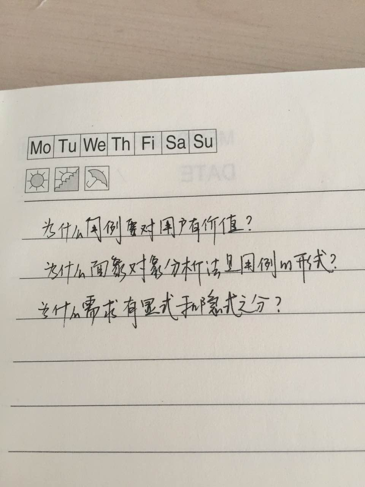
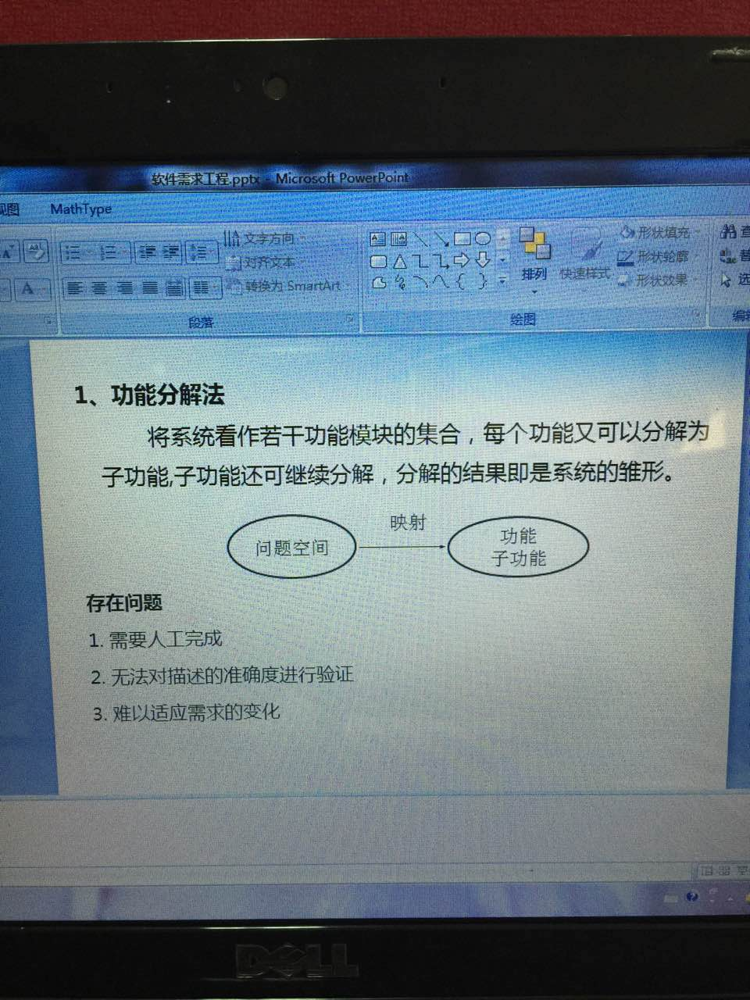
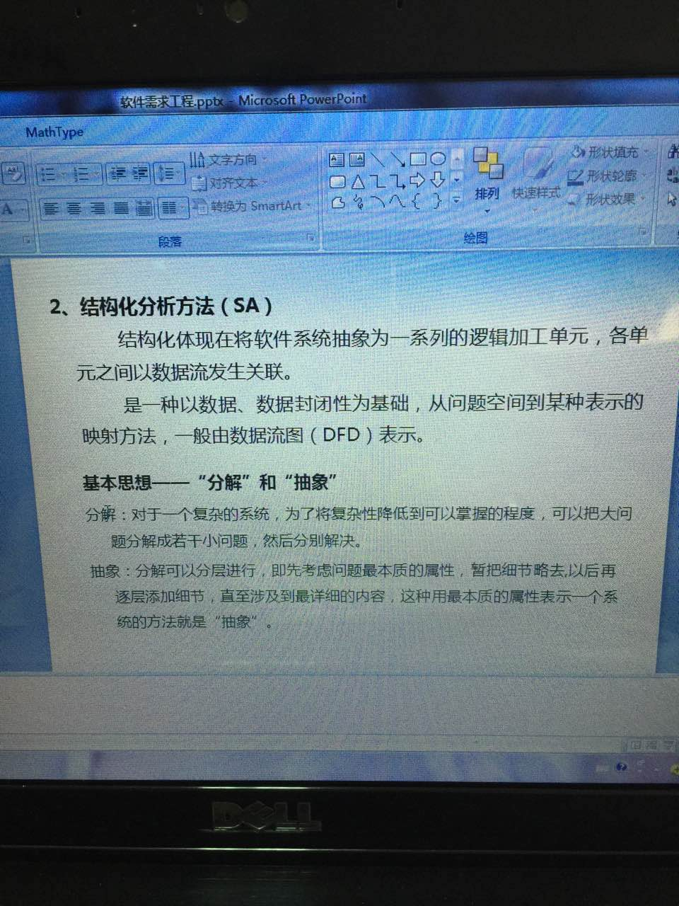
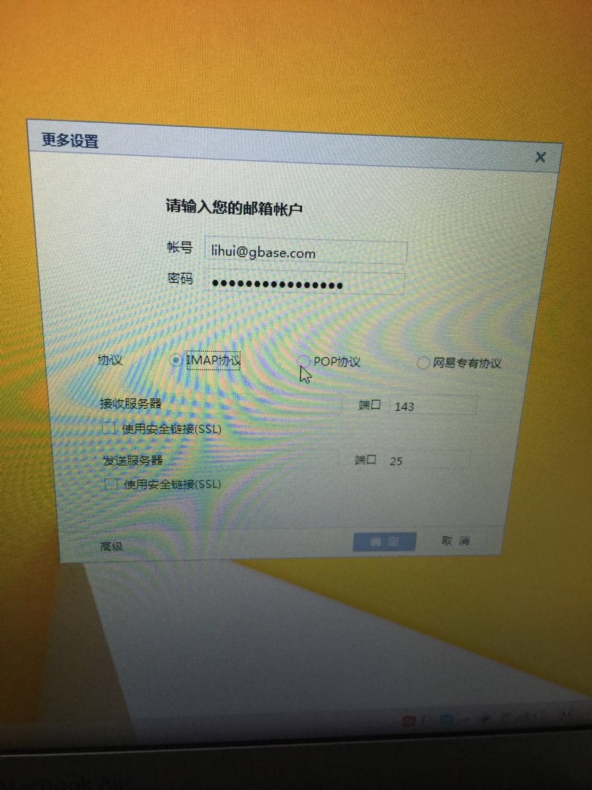
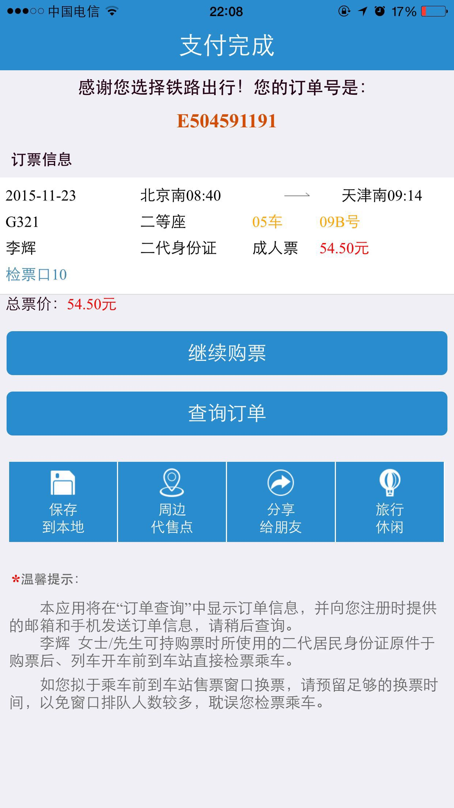
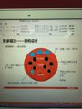
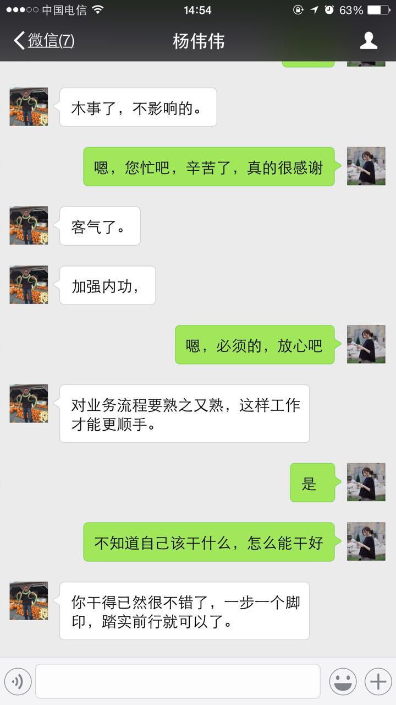
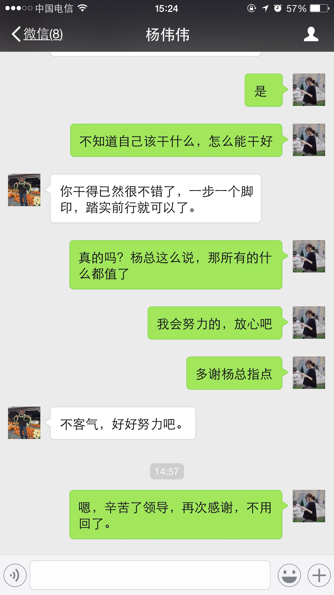
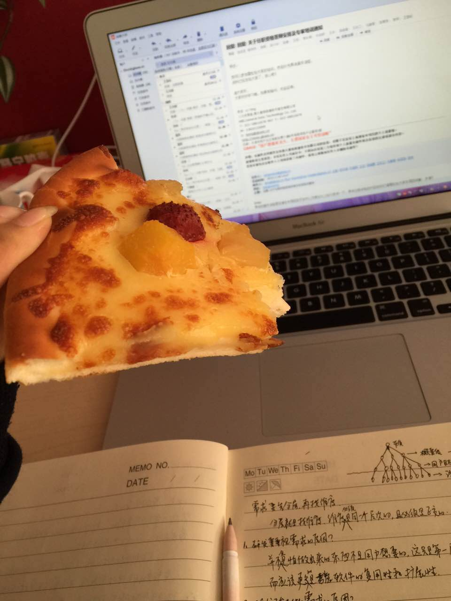
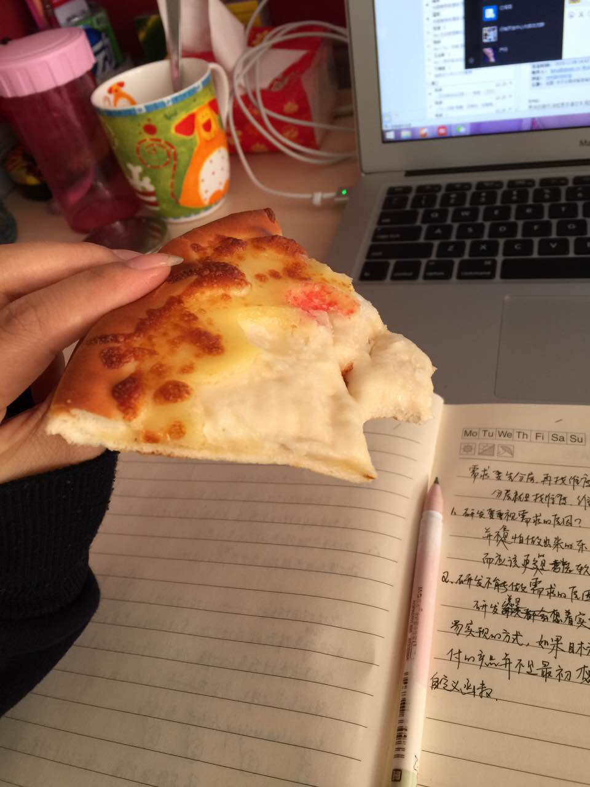

2015-11¶
2015-11-01¶
| 2015-11-01 20:49:00 | 你 | 你看了老田写的软件规格说明书了吗？ |
| 2015-11-01 21:09:51 | 我 | 看了，你看了吗 |
| 2015-11-01 21:13:01 | 你 | 我周五的时候看了看 |
| 2015-11-01 21:13:15 | 我 | 你觉得怎么样 |
| 2015-11-01 21:15:14 | 你 | 我看不出啥来，觉得跟加载工具的大同，但是没那个复杂，格式错别字这小毛病就不说了，感觉上应该至少有个大点的用例 |
| 2015-11-01 21:15:52 | 你 | 异常可以再写点 |
| 2015-11-01 21:16:31 | 你 | 至于用例设计那块，我看不出啥来，我觉得还可以，思路挺清楚的 |
| 2015-11-01 21:16:59 | 我 | 他前两个用例根本就不叫用例 |
| 2015-11-01 21:17:28 | 你 | 但我不知道用例图里边有的细化到没有对应用例，后边文档没有解释，挺晕的 |
| 2015-11-01 21:17:57 | 你 | 你说他套用的我的模版是吧 |
| 2015-11-01 21:18:47 | 我 | 不是 |
| 2015-11-01 21:18:55 | 你 | 我有个感觉，我觉得老田不知道怎么写用例，就是最基本的基础知识那块有点糊涂好像，是吗？还是他故意写成那样的啊 |
| 2015-11-01 21:19:08 | 我 | 用例的基本原则应该对用户有意义 |
| 2015-11-01 21:19:17 | 你 | 恩 |
| 2015-11-01 21:19:19 | 我 | 你看看他写的第一个用例 |
| 2015-11-01 21:19:44 | 你 | 他好像把一个过程分成了好几个步骤， |
| 2015-11-01 21:19:53 | 我 | 对了 |
| 2015-11-01 21:19:56 | 你 | 我都记不清第一个用例是啥了 |
| 2015-11-01 21:20:15 | 我 | 感觉第一个用例是其他几个用例的第一步 |
| 2015-11-01 21:20:45 | 你 | 跟洪越当初写加载工具有点像 |
| 2015-11-01 21:21:03 | 你 | 可是其他的用例不用配置参数吧 |
| 2015-11-01 21:21:17 | 你 | 是一次性配置就结束了吧！ |
| 2015-11-01 21:21:47 | 我 | 关键是对用户的意义 |
| 2015-11-01 21:21:56 | 你 | 我看的好像是这样，因为其他用例在用例图上并没有包含第一个用例啊 |
| 2015-11-01 21:22:05 | 我 | 用户用这个用例获得了什么价值 |
| 2015-11-01 21:22:27 | 你 | 获得了配置参数 |
| 2015-11-01 21:22:54 | 你 | 但不是最终目的，是向着最终目的前进了一步，是子用例 |
| 2015-11-01 21:23:07 | 我 | 不对 |
| 2015-11-01 21:23:14 | 你 | 那你说 |
| 2015-11-01 21:23:25 | 我 | 配置参数对用户没有价值 |
| 2015-11-01 21:23:52 | 我 | 就像加载控制文件对用户没有价值一样 |
| 2015-11-01 21:24:01 | 你 | 对 |
| 2015-11-01 21:24:16 | 你 | 但是也需要描述控制文件啊 |
| 2015-11-01 21:24:19 | 我 | 对用户没有价值的东西不能写成用例 |
| 2015-11-01 21:24:25 | 你 | 哦， |
| 2015-11-01 21:24:49 | 我 | 用例是一个单位 |
| 2015-11-01 21:25:02 | 你 | 是用户使用场景 |
| 2015-11-01 21:25:10 | 我 | 用户可以选择做或者不做 |
| 2015-11-01 21:25:14 | 我 | 对 |
| 2015-11-01 21:25:36 | 你 | 但是获得配置参数，不是用户使用场景 |
| 2015-11-01 21:25:47 | 我 | 那么如果只做第一个用例，用户获得什么价值？ |
| 2015-11-01 21:25:52 | 我 | 对了 |
| 2015-11-01 21:26:02 | 你 | 没有价值 |
| 2015-11-01 21:26:27 | 我 | 所以它不是用例，连子用例都不是 |
| 2015-11-01 21:26:33 | 你 | 就像加载控制文件离开了加载工具，就是个垃圾文件 |
| 2015-11-01 21:26:38 | 我 | 对 |
| 2015-11-01 21:27:14 | 你 | 但是后边的收集什么什么信息是子用例，对吗？ |
| 2015-11-01 21:27:25 | 我 | 是 |
| 2015-11-01 21:28:03 | 我 | 从这点上看，田根本就不懂怎么写需求 |
| 2015-11-01 21:28:32 | 我 | 连这么重大的错误都会犯 |
| 2015-11-01 21:28:45 | 你 | 恩 |
| 2015-11-01 21:28:58 | 我 | 他只是简单的功能切分 |
| 2015-11-01 21:29:04 | 你 | 我没看出来 |
| 2015-11-01 21:29:49 | 你 | 你说的这些，只是知道，到做的时候并没有完全领会 |
| 2015-11-01 21:30:01 | 你 | 功能切分倒是看出来了 |
| 2015-11-01 21:30:30 | 我 | 所以才需要领会软件需求的本质 |
| 2015-11-01 21:31:10 | 你 | 其实这个需求应该把收集不同信息作为主业务纬度 |
| 2015-11-01 21:31:20 | 我 | 对了 |
| 2015-11-01 21:31:42 | 你 | 有点明白了 |
| 2015-11-01 21:32:13 | 你 | 我明白了 |
| 2015-11-01 21:32:40 | 我 | 不错[强] |
| 2015-11-01 21:33:09 | 你 | 需求看问题的角度跟研发是完全不同的 |
| 2015-11-01 21:33:20 | 我 | 是 |
| 2015-11-01 21:33:39 | 你 | 他和我们平时学习某个知识的角度也不同 |
| 2015-11-01 21:33:47 | 我 | 是 |
| 2015-11-01 21:34:03 | 你 | 比如我们学定理 |
| 2015-11-01 21:34:29 | 你 | 但是研发有时跟学习是一个思路的 |
| 2015-11-01 21:34:54 | 我 | 是 |
| 2015-11-01 21:35:00 | 我 | 知道为什么吗 |
| 2015-11-01 21:35:10 | 你 | 应该说需求跟测试的思路完全不一致的 |
| 2015-11-01 21:35:17 | 你 | 不知道，为什么 |
| 2015-11-01 21:35:46 | 我 | 平时的学习和研发都是为了解救问题 |
| 2015-11-01 21:36:01 | 我 | 而需求是为了描述问题 |
| 2015-11-01 21:36:15 | 你 | 跟我想的一样 |
| 2015-11-01 21:37:13 | 你 | 所以研发是因为所以，所以，而需求不是 |
| 2015-11-01 21:37:46 | 你 | 需求没有逻辑，是一种现象，是描述一种现象 |
| 2015-11-01 21:38:01 | 我 | 是 |
| 2015-11-01 21:39:03 | 你 | 而需求的难点是找到这些现象 |
| 2015-11-01 21:39:43 | 你 | 用例是为了更好的描述这些现象而采取的一种方式 |
| 2015-11-01 21:39:48 | 我 | 对，更准确说是这些现象下面的本质 |
| 2015-11-01 21:40:11 | 我 | 现象很可能是一个假象 |
| 2015-11-01 21:40:32 | 你 | 对 |
| 2015-11-01 21:40:42 | 你 | 是找到现象的本质 |
| 2015-11-01 21:40:45 | 你 | 说得好 |
| 2015-11-01 21:42:08 | 你 | 为什么会有假象？ |
| 2015-11-01 21:42:24 | 我 | 因为人 |
| 2015-11-01 21:42:29 | 你 | 是由于对本质不了解，而造成的想当然吗？ |
| 2015-11-01 21:43:03 | 我 | 只是一种情况 |
| 2015-11-01 21:43:05 | 你 | 因为人？ |
| 2015-11-01 21:43:28 | 我 | 更抽象的说是人自身的认知问题 |
| 2015-11-01 21:44:09 | 我 | 不同的人对同一件事情的认知是不同的 |
| 2015-11-01 21:44:27 | 我 | 即使相同可能表述也不相同 |
| 2015-11-01 21:44:42 | 我 | 盲人摸象就是最好的解释 |
| 2015-11-01 21:44:54 | 你 | 必须找到本质才能解决吗？ |
| 2015-11-01 21:45:32 | 我 | 普通人之所以觉得可笑是因为普通人能看见本质就是大象 |
| 2015-11-01 21:45:48 | 你 | 是 |
| 2015-11-01 21:46:30 | 我 | 可是对于需求，有谁能说他看见了？ |
| 2015-11-01 21:46:58 | 我 | 在需求面前，所有人都是盲人 |
| 2015-11-01 21:47:31 | 你 | 哦 |
| 2015-11-01 21:47:35 | 你 | 你也是？ |
| 2015-11-01 21:47:42 | 我 | 对呀 |
| 2015-11-01 21:48:09 | 你 | 这句话并不是很能理解。因为需求是没有边界的是吗？ |
| 2015-11-01 21:48:17 | 你 | 可以这样理解吗？ |
| 2015-11-01 21:48:26 | 我 | 不是 |
| 2015-11-01 21:49:03 | 我 | 我的意思是相对于大象，需求不是我能一眼就看见的 |
| 2015-11-01 21:49:59 | 我 | 盲人摸象是因为他们看不见大象的整体 |
| 2015-11-01 21:51:32 | 我 | 如果让你闭上眼睛，你也可以说出来你摸到的是大象的哪部分，就是因为你的脑子里已经有大象了 |
| 2015-11-01 21:51:33 | 你 | 需求不是象 |
| 2015-11-01 21:52:01 | 我 | 你在摸的规程中在不断的匹配 |
| 2015-11-01 21:52:18 | 你 | 没听懂 |
| 2015-11-01 21:52:22 | 你 | 不明白 |
| 2015-11-01 21:52:39 | 我 | 假设大象是需求 |
| 2015-11-01 21:52:45 | 你 | 好 |
| 2015-11-01 21:52:53 | 我 | 现在蒙上你的眼睛 |
| 2015-11-01 21:53:00 | 我 | 让你摸大象 |
| 2015-11-01 21:53:24 | 我 | 你也能基本上说对你摸的是那一部分 |
| 2015-11-01 21:53:35 | 我 | 对不对 |
| 2015-11-01 21:53:52 | 你 | 你说的是大象吧 |
| 2015-11-01 21:53:59 | 我 | 是 |
| 2015-11-01 21:54:15 | 你 | 那是的 |
| 2015-11-01 21:54:21 | 你 | 可是需求呢 |
| 2015-11-01 21:54:56 | 我 | 你为什么能说对你摸的是大象的哪部分？ |
| 2015-11-01 21:55:29 | 你 | 因为我知道大象长什么样啊 |
| 2015-11-01 21:55:41 | 你 | 大耳朵，大鼻子 |
| 2015-11-01 21:56:06 | 我 | 那么假定让你写一个大象的需求 |
| 2015-11-01 21:56:20 | 我 | 你是不是可以写出来 |
| 2015-11-01 21:56:27 | 我 | 同样 |
| 2015-11-01 21:56:39 | 我 | 如果你脑子里有需求 |
| 2015-11-01 21:56:51 | 我 | 你一样可以写出来 |
| 2015-11-01 21:56:52 | 你 | 能 |
| 2015-11-01 21:57:12 | 你 | 是因为脑子里没有是吗？ |
| 2015-11-01 21:57:17 | 我 | 那么为什么盲人不行呢 |
| 2015-11-01 21:57:39 | 我 | 因为他们从小就不知道大象是什么样子的 |
| 2015-11-01 21:58:15 | 你 | 哦， |
| 2015-11-01 21:58:19 | 你 | 我知道了 |
| 2015-11-01 21:58:20 | 我 | 同样对于我们来说，我们不可能了解所有的用户需求 |
| 2015-11-01 21:58:31 | 你 | 是 |
| 2015-11-01 21:58:39 | 我 | 所以对于需求我们和盲人一样 |
| 2015-11-01 21:58:42 | 你 | 那我们始终是盲人 |
| 2015-11-01 21:58:48 | 你 | 是 |
| 2015-11-01 21:58:52 | 你 | 好难受 |
| 2015-11-01 21:58:59 | 我 | 啊？ |
| 2015-11-01 21:59:04 | 我 | 怎么了？ |
| 2015-11-01 21:59:16 | 你 | 哦，没事 |
| 2015-11-01 21:59:27 | 你 | 想到自己是盲人难受 |
| 2015-11-01 21:59:39 | 我 | 哦 |
| 2015-11-01 22:00:08 | 我 | 那么你想想，如果你是盲人，怎么才能认识大象 |
| 2015-11-01 22:00:24 | 你 | 那你说好的需求和坏的需求区别大吗？ |
| 2015-11-01 22:00:35 | 我 | 大呀 |
| 2015-11-01 22:00:38 | 你 | 或者说怎样才算好的需求 |
| 2015-11-01 22:00:46 | 你 | 坏的就别说了 |
| 2015-11-01 22:00:57 | 我 | 你先回答我刚才的问题 |
| 2015-11-01 22:01:09 | 你 | 正在想 |
| 2015-11-01 22:02:18 | 你 | 想不出来 |
| 2015-11-01 22:02:29 | 你 | 多摸 |
| 2015-11-01 22:02:44 | 我 | 至少要把大象都摸过来 |
| 2015-11-01 22:02:50 | 你 | 然后参考其他的 |
| 2015-11-01 22:02:56 | 我 | 但是这还不够 |
| 2015-11-01 22:03:00 | 你 | 比如猪 |
| 2015-11-01 22:03:07 | 我 | 不是 |
| 2015-11-01 22:03:49 | 我 | 你还需要记下来摸到的各个部分的关系 |
| 2015-11-01 22:04:05 | 你 | 哦，是 |
| 2015-11-01 22:04:08 | 我 | 比如牙在鼻子的边上 |
| 2015-11-01 22:04:25 | 你 | 就跟拼图一样， |
| 2015-11-01 22:04:32 | 我 | 对 |
| 2015-11-01 22:04:36 | 你 | 先找到所有的块 |
| 2015-11-01 22:04:55 | 你 | 然后再找块之间的关系 |
| 2015-11-01 22:04:58 | 我 | 通过这些你就可以逐渐建立一个大象的样子 |
| 2015-11-01 22:05:06 | 你 | 恩 |
| 2015-11-01 22:05:12 | 我 | 这就叫建模 |
| 2015-11-01 22:05:14 | 你 | 是 |
| 2015-11-01 22:05:19 | 你 | 哦 |
| 2015-11-01 22:05:22 | 你 | 有意思 |
| 2015-11-01 22:06:16 | 我 | 你要是把尾巴放在鼻子边上就是建模建错了 |
| 2015-11-01 22:06:28 | 你 | 哈哈 |
| 2015-11-01 22:06:40 | 我 | 可是我们实际上经常犯这样的错 |
| 2015-11-01 22:06:41 | 你 | 好形象，脑补中 |
| 2015-11-01 22:06:49 | 你 | 是 |
| 2015-11-01 22:07:09 | 你 | 就是模型错了，或者模型不全 |
| 2015-11-01 22:07:17 | 我 | 对 |
| 2015-11-01 22:07:56 | 我 | 你想想看，如果你把鼻子和尾巴放错了地方 |
| 2015-11-01 22:08:19 | 你 | 成四不像了 |
| 2015-11-01 22:08:26 | 我 | 即使你能描述清楚鼻子上有几个皱纹 |
| 2015-11-01 22:08:41 | 我 | 对于大象来说也是错的 |
| 2015-11-01 22:08:51 | 你 | 是 |
| 2015-11-01 22:08:57 | 我 | 所以模型比细节重要 |
| 2015-11-01 22:09:05 | 你 | 明白 |
| 2015-11-01 22:09:30 | 你 | 如果模型对了，少几条皱纹也不会影响特别大 |
| 2015-11-01 22:09:36 | 我 | 对 |
| 2015-11-01 22:10:01 | 我 | 还有一点 |
| 2015-11-01 22:10:07 | 你 | 什么 |
| 2015-11-01 22:10:21 | 我 | 就是有些细节是模型的一部分 |
| 2015-11-01 22:10:32 | 我 | 举例来说 |
| 2015-11-01 22:10:47 | 我 | 鼻子的长度也是一个细节 |
| 2015-11-01 22:11:07 | 我 | 但是对于大象就是模型的一部分 |
| 2015-11-01 22:11:21 | 你 | 明白 |
| 2015-11-01 22:11:32 | 我 | 如果鼻子的长度搞错了，大象就变成猪了 |
| 2015-11-01 22:11:45 | 你 | 恩 |
| 2015-11-01 22:12:19 | 我 | 确定什么样的细节是不是模型很重要 |
| 2015-11-01 22:12:25 | 我 | 也很困难 |
| 2015-11-01 22:12:29 | 你 | 哦 |
| 2015-11-01 22:12:32 | 你 | 是 |
| 2015-11-01 22:12:35 | 我 | 没有一定之规 |
| 2015-11-01 22:13:06 | 你 | 我会好好思考的 |
| 2015-11-01 22:13:09 | 你 | 多谢 |
| 2015-11-01 22:13:45 | 你 | 我明天晚上可以跟你聊天，因为我住宿舍 |
| 2015-11-01 22:13:59 | 我 | 好的 |
| 2015-11-01 22:14:00 | 你 | 你再接着给我讲 |
| 2015-11-01 22:14:08 | 你 | 我今天困的不行了 |
| 2015-11-01 22:14:19 | 我 | 睡吧 |
| 2015-11-01 22:14:27 | 你 | 昨天就睡了2小时 |
| 2015-11-01 22:14:37 | 我 | 太少了 |
| 2015-11-01 22:14:51 | 你 | 我弟弟结婚 |
| 2015-11-01 22:15:17 | 我 | 赶紧睡吧，累坏了吧 |
| 2015-11-01 22:15:18 | 你 | 看到我发的照片了吗？ |
| 2015-11-01 22:15:23 | 我 | 看见了 |
| 2015-11-01 22:15:32 | 你 | 更不怎么累，就是很困 |
| 2015-11-01 22:15:53 | 你 | 收拾屋子了给他家 |
| 2015-11-01 22:16:01 | 你 | 最后一个了， |
| 2015-11-01 22:16:15 | 我 | 我还说觉得你比你姐漂亮 |
| 2015-11-01 22:16:27 | 你 | 下一个婚礼要好多年以后 |
| 2015-11-01 22:16:57 | 你 | 漂就漂亮吧，明天见，睡觉了 |
| 2015-11-01 22:17:11 | 我 | 睡吧，晚安 |
2015-11-02¶
| 2015-11-02 08:50:36 | 我 | 你睡好了吗 |
| 2015-11-02 09:03:29 | 你 | 恩，挺好的，躺下就着了 |
| 2015-11-02 09:03:55 | 我 | 你对象又出差了？ |
| 2015-11-02 09:04:12 | 你 | 是 |
| 2015-11-02 09:05:52 | 我 | 晚上又是一个人了，可怜的 |
| 2015-11-02 09:06:18 | 你 | 是，我住宿舍去 |
| 2015-11-02 09:06:29 | 我 | 去几天 |
| 2015-11-02 09:07:28 | 你 | 不知道， |
| 2015-11-02 09:07:34 | 你 | 今天不回 |
| 2015-11-02 09:07:46 | 我 | 唉 |
| 2015-11-02 09:08:01 | 你 | 叹气？ |
| 2015-11-02 09:08:20 | 我 | 是呀，因为你 |
| 2015-11-02 09:09:03 | 我 | 不能回家，还得住宿舍 |
| 2015-11-02 09:09:22 | 你 | 没事，可以跟你聊天 |
| 2015-11-02 09:09:38 | 你 | 我挺不喜欢他出差的 |
| 2015-11-02 09:09:45 | 我 | 我知道 |
| 2015-11-02 09:10:48 | 你 | 我总结下昨天晚上你跟我说的，我手机没电了 |
| 2015-11-02 09:11:08 | 我 | 好的，你用我的充电器吧 |
| 2015-11-02 09:14:01 | 你 | 不用，谢谢 |
| 2015-11-02 09:38:58 | 我 | 你怎么了？看着不是很舒服 |
| 2015-11-02 09:40:57 | 你 | 没事 |
| 2015-11-02 09:41:19 | 我 | 没歇过来？ |
| 2015-11-02 09:52:09 | 我 | 上周五下午老杨和我提了你回需求组的事情，下季度回去 |
| 2015-11-02 09:52:50 | 我 | 是在他和洪越谈明年需求组的计划的时候和我说的 |
| 2015-11-02 10:03:42 | 你 | 这个节点有问题吗？ |
| 2015-11-02 10:04:01 | 我 | 什么节点 |
| 2015-11-02 10:04:08 | 你 | 没事 |
| 2015-11-02 10:04:11 | 你 | 回就回 |
| 2015-11-02 10:04:16 | 你 | 没事 |
| 2015-11-02 10:04:22 | 你 | 你开会吧 |
| 2015-11-02 10:04:35 | 我 | 好的，回来和你聊 |
| 2015-11-02 10:11:24 | 我 | 别的我不担心，主要还是想剩下这两个月能让你学会建模 |
| 2015-11-02 10:11:46 | 你 | 恩，好 |
| 2015-11-02 10:32:23 | 我 | 王欣把工作交接给严丹了 |
| 2015-11-02 10:34:08 | 你 | 这 |
| 2015-11-02 10:34:25 | 你 | 杨总要干赵总的活了？ |
| 2015-11-02 10:35:06 | 我 | 是 |
| 2015-11-02 10:35:15 | 你 | 哦 |
| 2015-11-02 10:35:20 | 我 | 严丹的需求工作要交出来了 |
| 2015-11-02 10:35:37 | 你 | 交给洪越吗？ |
| 2015-11-02 10:35:47 | 我 | 应该是 |
| 2015-11-02 10:36:07 | 你 | 这是大事 |
| 2015-11-02 10:36:33 | 你 | 估计洪越会让王志心接替他写用户 |
| 2015-11-02 10:36:38 | 你 | 你说呢 |
| 2015-11-02 10:36:43 | 我 | 有可能 |
| 2015-11-02 10:36:56 | 你 | 这样对你工作有影响吗？ |
| 2015-11-02 10:37:08 | 我 | 肯定会有影响 |
| 2015-11-02 10:37:17 | 你 | 恩 |
| 2015-11-02 10:37:28 | 你 | 项目管理严丹还做吗？ |
| 2015-11-02 10:37:56 | 你 | 啥？做？ |
| 2015-11-02 10:38:05 | 我 | 做 |
| 2015-11-02 10:38:14 | 我 | 暂时没有人能接 |
| 2015-11-02 10:38:20 | 你 | 那杨总的工作还继续吗？ |
| 2015-11-02 10:38:33 | 我 | 他去管产品线 |
| 2015-11-02 10:38:41 | 你 | 杨总的位置有人做吗？ |
| 2015-11-02 10:38:50 | 我 | 还不知道呢 |
| 2015-11-02 10:39:00 | 你 | 恩 |
| 2015-11-02 10:39:25 | 你 | 洪越肯定会接过严丹那边需求的事 |
| 2015-11-02 10:39:40 | 你 | 这样你的信息获取的渠道就受影响了 |
| 2015-11-02 10:39:44 | 你 | 是吗？ |
| 2015-11-02 10:40:05 | 你 | 要换办公室吗？ |
| 2015-11-02 10:40:08 | 你 | 严丹 |
| 2015-11-02 10:40:53 | 我 | 不知道 |
| 2015-11-02 11:09:09 | 我 | 你是系统分析 |
| 2015-11-02 11:09:17 | 我 | 回来好好准备吧 |
| 2015-11-02 11:09:37 | 你 | 系分是啥 |
| 2015-11-02 11:10:45 | 你 | 洪越是几级？ |
| 2015-11-02 11:12:57 | 我 | 就是需求 |
| 2015-11-02 11:13:10 | 我 | 洪越是3级2等吧 |
| 2015-11-02 11:13:19 | 我 | 明年升级 |
| 2015-11-02 11:13:34 | 你 | 啥？是不是需求没有级啊 |
| 2015-11-02 11:13:40 | 你 | 哦 |
| 2015-11-02 11:15:38 | 我 | 需求也属于开发类 |
| 2015-11-02 13:28:44 | 我 | 你都快睡着啦 |
| 2015-11-02 13:40:23 | 你 | 啊？ |
| 2015-11-02 13:40:27 | 你 | 没有 |
| 2015-11-02 14:04:41 | 我 | 中午没睡好吗 |
| 2015-11-02 14:06:21 | 你 | 睡好了 |
| 2015-11-02 14:06:25 | 你 | 你不好好开会 |
| 2015-11-02 14:07:28 | 我 | 放心不下你 |
| 2015-11-02 14:07:59 | 你 | 我没事 |
| 2015-11-02 14:08:04 | 你 | 你好好开会吧 |
| 2015-11-02 14:08:14 | 我 | 好的 |
| 2015-11-02 16:16:14 | 我 | 刚才老杨说组织机构变动的事情了 |
| 2015-11-02 16:16:45 | 我 | 想让我和田一起，他还挂名开发中心 |
| 2015-11-02 16:17:16 | 我 | 我管一组二组，田管需求和测试 |
| 2015-11-02 16:46:07 | 你 | 洪越呢？ |
| 2015-11-02 16:48:19 | 我 | 还是需求组组长 |
| 2015-11-02 16:48:36 | 我 | 我和田兼职原来的组长 |
| 2015-11-02 16:49:12 | 你 | 那为什么让老田还来管需求啊 |
| 2015-11-02 16:49:29 | 你 | 刚才开会，洪越为什么回来了 |
| 2015-11-02 16:49:36 | 你 | 为什么早回来了 |
| 2015-11-02 16:51:54 | 你 | 那你以后跟谁汇报？ |
| 2015-11-02 16:52:21 | 你 | 如果我回需求组跟谁汇报？ |
| 2015-11-02 16:53:19 | 我 | 洪越 |
| 2015-11-02 16:53:44 | 我 | 刚才没有洪越的事情了 |
| 2015-11-02 16:54:16 | 我 | 我和田向老杨汇报 |
| 2015-11-02 16:54:31 | 我 | 洪越应该是向田汇报 |
| 2015-11-02 17:02:22 | 你 | 洪越跟国华一样了？ |
| 2015-11-02 17:02:42 | 你 | 这样一来你就高他一级了 |
| 2015-11-02 17:04:31 | 我 | 是 |
| 2015-11-02 17:04:40 | 你 | 好 |
| 2015-11-02 17:04:49 | 我 | 职位还没定，肯定比原来高 |
| 2015-11-02 17:05:10 | 我 | 就是在现在老杨和组长之间再设一级 |
| 2015-11-02 17:05:51 | 我 | 我想把整个研发都拿过来管，不过那样就没有田的地方了 |
| 2015-11-02 17:06:03 | 你 | 是 |
| 2015-11-02 17:06:36 | 你 | 田也算是研发出身 |
| 2015-11-02 17:06:41 | 你 | 你说的对 |
| 2015-11-02 17:07:07 | 我 | 不过要是把研发和需求分开就没法管了 |
| 2015-11-02 17:07:22 | 你 | 这样安排也比较合理， |
| 2015-11-02 17:07:24 | 我 | 本来就应该是一个流程的事情 |
| 2015-11-02 17:07:31 | 我 | 不对 |
| 2015-11-02 17:08:09 | 你 | 没明白你说的这句话 |
| 2015-11-02 17:08:17 | 我 | 我想管的是整个研发流程，从需求到产品入库 |
| 2015-11-02 17:08:51 | 我 | 如果只是管研发组不是还和现在一样 |
| 2015-11-02 17:10:21 | 你 | 那为什么不行？ |
| 2015-11-02 17:10:29 | 你 | 杨总不让吗？ |
| 2015-11-02 17:13:22 | 你 | 为什么不是你管需求和研发，老田管二组和测试 |
| 2015-11-02 17:13:29 | 我 | 老杨想让田上位，但是怎么安排我和田的关系就非常重要 |
| 2015-11-02 17:13:32 | 你 | 我瞎说的 |
| 2015-11-02 17:13:37 | 我 | 估计是田要求的 |
| 2015-11-02 17:13:45 | 我 | 他和范树磊关系不好 |
| 2015-11-02 17:13:56 | 你 | 哦 |
| 2015-11-02 17:14:16 | 你 | 哎，总是这么多不尽人意 |
| 2015-11-02 17:14:20 | 我 | 如果我把研发都管过来就没有田的位置了 |
| 2015-11-02 17:14:35 | 你 | 老田为什么这么要求呢 |
| 2015-11-02 17:14:50 | 我 | 这两个组好管 |
| 2015-11-02 17:14:56 | 我 | 容易出成绩 |
| 2015-11-02 17:15:02 | 我 | 可以出去吹 |
| 2015-11-02 17:15:11 | 你 | 是吗？ |
| 2015-11-02 17:15:15 | 我 | 研发都是费力不讨好的 |
| 2015-11-02 17:15:24 | 我 | 对呀 |
| 2015-11-02 17:15:29 | 你 | 好吧 |
| 2015-11-02 17:16:03 | 你 | 你为什么觉得没有老田的位置了？ |
| 2015-11-02 17:16:14 | 你 | 他自己想要的测试和需求啊 |
| 2015-11-02 17:17:08 | 你 | 这样一来需求跟测试流程一家了 |
| 2015-11-02 17:17:32 | 你 | 需求跟测试就成一家了，你们研发岂不是不好过 |
| 2015-11-02 17:18:41 | 我 | 我是想从需求开始，按照流程从头到尾整个管过来 |
| 2015-11-02 17:18:57 | 我 | 就是我管需求、研发、测试、配置和 QA |
| 2015-11-02 17:19:22 | 你 | 这岂不是开发中心的事，是杨总的位置 |
| 2015-11-02 17:19:33 | 你 | 我以为你会接杨总的 |
| 2015-11-02 17:20:00 | 我 | 不会的，老杨不会让我接的，那样就田就再没有机会了 |
| 2015-11-02 17:20:31 | 我 | 现在就是想让我和田分配权力 |
| 2015-11-02 17:20:58 | 你 | 好吧 |
| 2015-11-02 17:21:07 | 我 | 这样至少田以后还有机会，反正他不敢把我放在田下面 |
| 2015-11-02 17:21:40 | 你 | 那必须的 |
| 2015-11-02 17:22:16 | 你 | 老田挺服你的，你们应该没什么问题吧 |
| 2015-11-02 17:22:29 | 我 | 怎么会没有问题 |
| 2015-11-02 17:22:33 | 你 | 啊 |
| 2015-11-02 17:22:40 | 我 | 田实际上也是很自私的人 |
| 2015-11-02 17:22:55 | 你 | 自私是本性 |
| 2015-11-02 17:22:56 | 我 | 你从他平时算计钱就能看出来 |
| 2015-11-02 17:23:08 | 我 | 关键是能不能和别人共享 |
| 2015-11-02 17:23:10 | 你 | 我不知道他怎么算计钱了 |
| 2015-11-02 17:23:15 | 你 | 对啊 |
| 2015-11-02 17:23:19 | 你 | 这才是关键 |
| 2015-11-02 17:23:24 | 我 | 特别是能不能利他 |
| 2015-11-02 17:23:32 | 你 | 是吧， |
| 2015-11-02 17:23:35 | 我 | 田不是那种利他的人 |
| 2015-11-02 17:23:44 | 你 | 从测试跟研发打架也能看出来 |
| 2015-11-02 17:23:58 | 我 | 所以我不敢让他管我，否则可能我就成背黑锅的 |
| 2015-11-02 17:23:59 | 你 | 那岂不是又多了一个对手 |
| 2015-11-02 17:24:11 | 我 | 是 |
| 2015-11-02 17:24:34 | 你 | 无语 |
| 2015-11-02 17:24:58 | 你 | 以后还开晨会吗？ |
| 2015-11-02 17:25:01 | 我 | 没办法，政治就是这样 |
| 2015-11-02 17:25:03 | 我 | 开 |
| 2015-11-02 17:26:01 | 你 | 完了，刚才洪越来我这了 |
| 2015-11-02 17:26:04 | 你 | 我没发现 |
| 2015-11-02 17:27:25 | 我 | 他看见你手机了？ |
| 2015-11-02 17:27:35 | 你 | 不知道 |
| 2015-11-02 17:28:03 | 你 | 他跟我说话来了 |
| 2015-11-02 17:28:10 | 你 | 后来来了个电话 |
| 2015-11-02 17:30:40 | 我 | 没事 |
| 2015-11-02 17:30:48 | 我 | 最多知道咱俩聊天 |
| 2015-11-02 17:30:55 | 我 | 他不会知道内容的 |
| 2015-11-02 17:31:01 | 你 | 那肯定的 |
| 2015-11-02 17:32:47 | 我 | 不管这些了 |
| 2015-11-02 17:33:00 | 我 | 我还是抓紧时间教你吧 |
| 2015-11-02 17:33:31 | 我 | 昨天讨论的盲人摸象的问题你理解的怎么样了 |
| 2015-11-02 17:38:35 | 你 | 理解了 |
| 2015-11-02 17:40:00 | 我 | 好的，后面还有两个维度，一个是方法论，一个如何找到本质 |
| 2015-11-02 17:40:11 | 你 | 恩 |
| 2015-11-02 17:40:25 | 我 | 今天晚上先和你讲方法论吧 |
| 2015-11-02 17:40:42 | 你 | 好 |
| 2015-11-02 17:40:43 | 我 | 如何找到本质用这个例子就不合适了 |
| 2015-11-02 17:40:49 | 你 | 恩 |
| 2015-11-02 19:05:43 | 我 | 我先走了 |
| 2015-11-02 19:05:59 | 你 | 走呗 |
| 2015-11-02 19:08:01 | 我 | 到家了再陪你 |
| 2015-11-02 20:17:36 | 你 | 到家了吗？ |
| 2015-11-02 20:19:13 | 我 | 刚进门，你回去了吗 |
| 2015-11-02 20:23:27 | 你 | 没呢 |
| 2015-11-02 20:24:17 | 你 | 这也得1小时 |
| 2015-11-02 20:24:33 | 我 | 哦 |
| 2015-11-02 20:24:40 | 我 | 干什么呢 |
| 2015-11-02 20:24:48 | 你 | 等着你呢 |
| 2015-11-02 20:24:58 | 你 | 在我家群里跟她们聊会天 |
| 2015-11-02 20:25:33 | 我 | 在多等一会吧，今天我要做饭 |
| 2015-11-02 20:26:14 | 我 | 我尽快 |
| 2015-11-02 20:26:39 | 你 | 不急，你做吧 |
| 2015-11-02 20:43:30 | 你 | 想多写点工时，又不知道写什么 |
| 2015-11-02 20:47:11 | 我 | 就写调研企业管理器 |
| 2015-11-02 21:19:14 | 我 | 战争已经开始了 |
| 2015-11-02 21:36:14 | 你 | 怎么了 |
| 2015-11-02 21:36:20 | 你 | 又有事了 |
| 2015-11-02 21:36:24 | 你 | 怎么了 |
| 2015-11-02 21:36:36 | 你 | 刚才给我对象打电话了 |
| 2015-11-02 21:36:41 | 你 | 你吃饭了啊 |
| 2015-11-02 21:36:44 | 我 | 刚才现场有个任务 |
| 2015-11-02 21:37:12 | 我 | 老杨在微信群里面让我们组出人 |
| 2015-11-02 21:37:22 | 你 | 然后呢 |
| 2015-11-02 21:37:23 | 我 | 我做饭当时没看 |
| 2015-11-02 21:37:45 | 我 | 田就立刻说测试可以出人 |
| 2015-11-02 21:38:00 | 我 | 然后老杨说田给力 |
| 2015-11-02 21:38:20 | 我 | 等我看见已经几个来回了 |
| 2015-11-02 21:38:38 | 你 | 老杨点名让你们出人是吗？ |
| 2015-11-02 21:38:43 | 我 | 是 |
| 2015-11-02 21:38:44 | 你 | 你们组 |
| 2015-11-02 21:38:57 | 你 | 然后老田说他们组出？ |
| 2015-11-02 21:39:18 | 我 | 是 |
| 2015-11-02 21:39:20 | 你 | 他们组的人能干吗？ |
| 2015-11-02 21:39:27 | 你 | 无语 |
| 2015-11-02 21:39:42 | 我 | 没什么事情，就是到现场 |
| 2015-11-02 21:40:15 | 你 | 我特别烦这种事 |
| 2015-11-02 21:40:31 | 我 | 田最擅长这种事 |
| 2015-11-02 21:40:52 | 你 | 你说这种内斗，得多耗费人力啊 |
| 2015-11-02 21:41:09 | 我 | 连严丹都知道他的这个毛病 |
| 2015-11-02 21:41:23 | 你 | 问你个问题 |
| 2015-11-02 21:42:05 | 你 | 严丹为什么对你这么好，我是说，严丹跟你说洪越，说老田，你觉得她会说你吗？ |
| 2015-11-02 21:42:11 | 你 | 我只是问问 |
| 2015-11-02 21:42:20 | 我 | 也有可能 |
| 2015-11-02 21:42:26 | 你 | 对啊 |
| 2015-11-02 21:42:38 | 你 | 所以她说什么有那么重要吗？ |
| 2015-11-02 21:43:03 | 我 | 她现在的位置很关键 |
| 2015-11-02 21:43:11 | 你 | 我知道 |
| 2015-11-02 21:43:53 | 你 | 我只是觉得她对你挺好的，你们挺好的，我不知道原因，怕她会见风使舵出卖你 |
| 2015-11-02 21:44:16 | 我 | 我这个人嘴没有把门的 |
| 2015-11-02 21:44:27 | 我 | 我也得罪过严丹 |
| 2015-11-02 21:44:48 | 我 | 只是在她刚来的时候帮过她很多 |
| 2015-11-02 21:44:59 | 我 | 那时候她还什么都不是 |
| 2015-11-02 21:45:20 | 你 | 恩， |
| 2015-11-02 21:45:31 | 我 | 如果老杨或者赵总想办我 |
| 2015-11-02 21:45:49 | 我 | 她可能不会帮我 |
| 2015-11-02 21:46:04 | 我 | 其他人她还没放在眼里 |
| 2015-11-02 21:46:09 | 你 | 老杨赵总为什么要这么对你 |
| 2015-11-02 21:46:20 | 你 | 恩，是 |
| 2015-11-02 21:46:27 | 你 | 你说的对 |
| 2015-11-02 21:46:33 | 我 | 不一定，只是打个比方 |
| 2015-11-02 21:46:45 | 你 | 我真的挺讨厌这种事的 |
| 2015-11-02 21:46:56 | 我 | 我也非常讨厌 |
| 2015-11-02 21:47:05 | 你 | 而且我特别特别恨被出卖 |
| 2015-11-02 21:47:12 | 你 | 被骗 |
| 2015-11-02 21:47:23 | 我 | 以前就因为讨厌这些事情我宁可不升职 |
| 2015-11-02 21:47:27 | 你 | 我想你也身不由己 |
| 2015-11-02 21:47:35 | 我 | 可是现在不行了 |
| 2015-11-02 21:47:58 | 我 | 要想能护着你，就必须强大 |
| 2015-11-02 21:48:15 | 你 | 你只是为了我吗？还有其他原因吗？ |
| 2015-11-02 21:48:32 | 你 | 我觉得你也不喜欢跟这些人周旋 |
| 2015-11-02 21:48:43 | 我 | 还有手底下这帮弟兄 |
| 2015-11-02 21:48:53 | 你 | 是 |
| 2015-11-02 21:49:08 | 我 | 你知道当初我们要被楼下吞并的事情吧 |
| 2015-11-02 21:49:15 | 你 | 知道 |
| 2015-11-02 21:49:31 | 我 | 当时是我强烈要求保住团队 |
| 2015-11-02 21:49:52 | 我 | 我也知道走上这条路就一定是这样 |
| 2015-11-02 21:49:56 | 你 | 可是杨总这么做，抬老田不抬你，就会有风险啊 |
| 2015-11-02 21:50:12 | 你 | 我觉得老田水平比你差远了 |
| 2015-11-02 21:50:43 | 我 | 关键田是跟他打天下的人 |
| 2015-11-02 21:51:08 | 你 | 为人处事就不行，你看他也不是什么重要人物，刚到测试组的时候，开会各种不出席，外加迟到，外加不通知别人 |
| 2015-11-02 21:52:43 | 你 | 而且那时候你跟洪越，还有严丹有一次跟他说个什么事，他愣是想不明白，挺犟的，这都不是领导的格局该有的东西 |
| 2015-11-02 21:53:01 | 我 | 是 |
| 2015-11-02 21:53:17 | 我 | 但是这些都不重要 |
| 2015-11-02 21:53:20 | 你 | 可是如果老田有颗正直的心，他还是值得人尊敬的 |
| 2015-11-02 21:53:35 | 我 | 最重要的是关系和人脉 |
| 2015-11-02 21:53:51 | 你 | 如果跟王洪越一样，就不好了 |
| 2015-11-02 21:54:07 | 你 | 他不如你他自己都知道 |
| 2015-11-02 21:54:31 | 你 | 可是就因为杨总那有人就能踩你吗？ |
| 2015-11-02 21:54:50 | 你 | 老王，我真的真的接受不了 |
| 2015-11-02 21:56:16 | 我 | 这是政治 |
| 2015-11-02 21:57:08 | 你 | 你以前的单位也有吗？ |
| 2015-11-02 21:57:20 | 我 | 有，哪个单位都有 |
| 2015-11-02 21:57:28 | 我 | 咱们学校也有 |
| 2015-11-02 21:57:36 | 我 | 老师之间更厉害 |
| 2015-11-02 21:57:37 | 你 | 都这样吗？ |
| 2015-11-02 21:58:04 | 我 | 当初就是因为讨厌这些我才不想当老师 |
| 2015-11-02 21:58:11 | 你 | 恩，是不是到了一定水平的人就会摊上这种事 |
| 2015-11-02 21:58:22 | 我 | 有人就有江湖 |
| 2015-11-02 21:58:40 | 你 | 就有爱恨情仇 |
| 2015-11-02 21:58:47 | 你 | 就有纠缠 |
| 2015-11-02 21:58:53 | 你 | 就是这样 |
| 2015-11-02 21:59:21 | 你 | 你们什么时候公布这件事啊 |
| 2015-11-02 21:59:30 | 我 | 得等明年了 |
| 2015-11-02 21:59:44 | 你 | 今年还是这样呆着呗 |
| 2015-11-02 21:59:49 | 我 | 所以这两个月我得抓紧教你 |
| 2015-11-02 21:59:51 | 你 | 也好 |
| 2015-11-02 21:59:56 | 你 | 恩 |
| 2015-11-02 22:00:01 | 我 | 不仅仅是工作 |
| 2015-11-02 22:00:12 | 我 | 还得有政治 |
| 2015-11-02 22:00:35 | 我 | 害人之心不可有，防人之心不可无 |
| 2015-11-02 22:00:45 | 你 | 是 |
| 2015-11-02 22:00:54 | 你 | 好难过 |
| 2015-11-02 22:01:46 | 我 | 难过什么 |
| 2015-11-02 22:01:51 | 你 | 与其看到你跟他们为了我们斗来斗去的，费心费力，还不如我自己受点委屈呢 |
| 2015-11-02 22:02:10 | 你 | 当然，我受委屈也换不回太平世界了 |
| 2015-11-02 22:02:15 | 我 | 不一样，我至少还斗得过 |
| 2015-11-02 22:02:31 | 我 | 看你受委屈我无能为力更难受 |
| 2015-11-02 22:03:06 | 我 | 你困了吗？ |
| 2015-11-02 22:03:13 | 你 | 不困 |
| 2015-11-02 22:04:11 | 你 | 我没事 |
| 2015-11-02 22:04:44 | 你 | 我一想到这些事就没斗志 |
| 2015-11-02 22:05:08 | 你 | 我那打不死小强精神就泄气了 |
| 2015-11-02 22:05:29 | 我 | 所以还是我来吧 |
| 2015-11-02 22:05:46 | 我 | 至少为了你我还有斗志 |
| 2015-11-02 22:06:08 | 你 | 唉 |
| 2015-11-02 22:06:18 | 你 | 你快鼓励鼓励我 |
| 2015-11-02 22:06:35 | 我 | 鼓励你什么 |
| 2015-11-02 22:06:40 | 你 | 就说都这样，活着就得整这些 |
| 2015-11-02 22:06:59 | 我 | 算了，你不适合这些 |
| 2015-11-02 22:07:16 | 你 | 我学习的动力很多，但惟独不包括跟人斗心眼 |
| 2015-11-02 22:07:29 | 你 | 而且不特别讨厌背叛 |
| 2015-11-02 22:07:33 | 你 | 被欺骗 |
| 2015-11-02 22:07:36 | 我 | 鼓励你干这些还不如鼓励你喜欢我可能性大大呢 |
| 2015-11-02 22:07:52 | 你 | 哈哈 |
| 2015-11-02 22:08:06 | 你 | 有联系么，突然说这个 |
| 2015-11-02 22:08:18 | 我 | 没联系 |
| 2015-11-02 22:08:26 | 你 | 哈哈 |
| 2015-11-02 22:08:32 | 我 | 就是说太不可能了 |
| 2015-11-02 22:08:35 | 你 | 我还是想点开心的吧， |
| 2015-11-02 22:08:43 | 我 | 对呀 |
| 2015-11-02 22:08:51 | 我 | 你就应该开开心心 |
| 2015-11-02 22:08:57 | 你 | 要是你心里难过脆弱的话可以跟我说 |
| 2015-11-02 22:09:03 | 你 | 我可以安慰你 |
| 2015-11-02 22:09:11 | 我 | 多谢 |
| 2015-11-02 22:09:32 | 你 | 我就该开开心心的，这些话没人跟我说过，除了你 |
| 2015-11-02 22:09:50 | 你 | 算了，别煽情了 |
| 2015-11-02 22:09:55 | 我 | 哦 |
| 2015-11-02 22:10:36 | 你 | 好像我生下来就该不在乎自己开不开心，只在乎别人似的 |
| 2015-11-02 22:10:53 | 你 | 你怎么就突然说起这句话来了呢 |
| 2015-11-02 22:11:09 | 你 | 你觉得我就该开开心心的么 |
| 2015-11-02 22:11:11 | 我 | 我就是这么认为的 |
| 2015-11-02 22:11:15 | 我 | 对呀 |
| 2015-11-02 22:11:30 | 你 | 我难过还有一点就是对老杨超级失望 |
| 2015-11-02 22:11:37 | 你 | 可能我太高估他了 |
| 2015-11-02 22:11:47 | 我 | 他也是人 |
| 2015-11-02 22:12:01 | 我 | 也有人性的弱点 |
| 2015-11-02 22:12:07 | 我 | 这个我理解 |
| 2015-11-02 22:12:21 | 你 | 是吗？ |
| 2015-11-02 22:12:32 | 你 | 可是总该有原则吧 |
| 2015-11-02 22:12:44 | 我 | 你太可爱了 |
| 2015-11-02 22:12:57 | 你 | 任人唯贤，这是领导最起码的原则 |
| 2015-11-02 22:13:04 | 你 | 不然谁给他卖命 |
| 2015-11-02 22:13:08 | 你 | 气死我了 |
| 2015-11-02 22:13:12 | 我 | 原则在人性面前毫无价值 |
| 2015-11-02 22:13:26 | 你 | 你是说我傻吧 |
| 2015-11-02 22:13:30 | 我 | 不是 |
| 2015-11-02 22:14:00 | 我 | 等回来有空我给你讲这些道理吧 |
| 2015-11-02 22:14:30 | 我 | 正好这些道理和怎么发现事物的本质有关 |
| 2015-11-02 22:14:37 | 你 | 我知道我傻，我也知道可能有一天我变的跟他们一样，或者说看透了，有更好的所谓的理由指导自己 |
| 2015-11-02 22:14:55 | 我 | 咱们还是先说说简单的 |
| 2015-11-02 22:14:59 | 你 | 算了，不说他了 |
| 2015-11-02 22:15:04 | 你 | 好，说吧 |
| 2015-11-02 22:15:13 | 你 | 半点我要去洗漱 |
| 2015-11-02 22:15:23 | 你 | 大概20分钟 |
| 2015-11-02 22:15:24 | 我 | 昨天说的摸象 |
| 2015-11-02 22:15:28 | 你 | 恩 |
| 2015-11-02 22:15:32 | 你 | 是 |
| 2015-11-02 22:15:40 | 我 | 有一点没有讲到 |
| 2015-11-02 22:15:44 | 你 | 我理解的差不多了 |
| 2015-11-02 22:15:48 | 我 | 就是摸的方法 |
| 2015-11-02 22:15:56 | 你 | 恩 |
| 2015-11-02 22:16:09 | 我 | 要想正确的建模大象 |
| 2015-11-02 22:16:34 | 我 | 不能前摸一下，后摸一下 |
| 2015-11-02 22:16:55 | 我 | 要是先摸了鼻子，再摸了尾巴 |
| 2015-11-02 22:17:11 | 我 | 把这俩放一起就不对了 |
| 2015-11-02 22:17:32 | 你 | 这样，你把你要说的一下子打完，我不打断你，趁这个机会我去洗漱，回来我再问你问题，行不？ |
| 2015-11-02 22:17:40 | 我 | 好 |
| 2015-11-02 22:17:45 | 你 | 辛苦啦 |
| 2015-11-02 22:18:04 | 我 | 所以就算是摸也得按照一定的规律摸 |
| 2015-11-02 22:18:29 | 我 | 比如从前往后，从左往右 |
| 2015-11-02 22:19:16 | 我 | 特别重要的一点就是中间不能断了，否则就不知道少了什么东西。 |
| 2015-11-02 22:22:05 | 我 | 这种按照一定的规律，按照某种原则去探索事物本质的做法就是科学的方法论，也是我平时经常说的要有逻辑链，逻辑链不能断 |
| 2015-11-02 22:25:09 | 我 | 所以平时分析需求的时候不能东一榔头西一棒槌，要先找一个点，然后从这个点用逻辑的方法一点一点地展开，只有这样才能保证最后分析出来的需求偏差不大 |
| 2015-11-02 22:29:19 | 我 | 如果在展开的时候遇到了矛盾，那么有可能是方向选错了，我也经常说维度切错了。这时候就需要我们退回去重新找一个方向。但是无论找哪个方向，方法是不变的，都是要按照一定的规律，用符合逻辑链的方式进行推理 |
| 2015-11-02 22:36:30 | 我 | 这个就是我要和你讲的方法论。就是不管干什么事情，都用这一个方法论，基本上可以保证过程上不会犯错，那么如果有错就只剩下我们对本质的认识上有错。这样当我们犯错的时候，至少知道向哪个方向努力 |
| 2015-11-02 22:38:02 | 你 | 回来了，我先看看啊 |
| 2015-11-02 22:38:07 | 我 | 这个方法论不是很难，最关键的地方就是每一步推理都要符合逻辑，千万不要跳跃，一定得脚踏实地，一步一步的走 |
| 2015-11-02 22:39:30 | 你 | 恩 |
| 2015-11-02 22:40:23 | 你 | 你说按照一定的规律找的时候中间不能断，否则就不知道少了什么东西 |
| 2015-11-02 22:40:26 | 你 | 这句 |
| 2015-11-02 22:41:20 | 你 | 还有印象深点的例子吗？ |
| 2015-11-02 22:42:02 | 我 | 一时想不起来 |
| 2015-11-02 22:42:24 | 你 | 恩 |
| 2015-11-02 22:42:39 | 我 | 有什么不理解的地方吗 |
| 2015-11-02 22:43:06 | 你 | 有 |
| 2015-11-02 22:43:15 | 我 | 哪里 |
| 2015-11-02 22:43:31 | 你 | 等我再看看，想想怎么问 |
| 2015-11-02 22:45:28 | 你 | 这个方法论是建模的方法是吗？ |
| 2015-11-02 22:45:35 | 我 | 是 |
| 2015-11-02 22:45:48 | 我 | 平时很多地方都可以用 |
| 2015-11-02 22:46:06 | 你 | 恩，是 |
| 2015-11-02 22:46:28 | 你 | 你说的我能看懂，但并不是很能掌握 |
| 2015-11-02 22:46:43 | 你 | 你能了解我的感受吗？ |
| 2015-11-02 22:46:58 | 我 | 我了解，慢慢你就会懂了 |
| 2015-11-02 22:47:08 | 我 | 你先记住我说的 |
| 2015-11-02 22:47:27 | 你 | 疑问也有，但是我想让你在后期具体的例子中强化我一下 |
| 2015-11-02 22:47:34 | 你 | 恩，记住了 |
| 2015-11-02 22:47:44 | 你 | 我先跟你说说我的疑问 |
| 2015-11-02 22:47:49 | 我 | 好 |
| 2015-11-02 22:48:37 | 你 | 首先我不知道为什么会出现矛盾（上文提到的） |
| 2015-11-02 22:49:08 | 我 | 这就涉及到另外一个维度，本质 |
| 2015-11-02 22:49:24 | 我 | 找寻本质是非常困难的 |
| 2015-11-02 22:49:34 | 你 | 恩 |
| 2015-11-02 22:49:40 | 你 | 等等再说那个 |
| 2015-11-02 22:49:45 | 你 | 还有个问题 |
| 2015-11-02 22:51:00 | 你 | 就是方法论里最关键的，就是最后一条消息，推理不能太跳跃，这点能看懂，似乎能想明白，做起来可能会差很多 |
| 2015-11-02 22:51:23 | 你 | 别的就没有了 |
| 2015-11-02 22:51:44 | 我 | 最后一条是针对你说的 |
| 2015-11-02 22:52:07 | 我 | 你有时候会出现跳跃 |
| 2015-11-02 22:52:25 | 你 | 啊 |
| 2015-11-02 22:52:33 | 你 | 为什么呢？ |
| 2015-11-02 22:52:40 | 你 | 太多的想当然 |
| 2015-11-02 22:52:43 | 我 | 原因很多 |
| 2015-11-02 22:52:59 | 我 | 有知识上的原因 |
| 2015-11-02 22:53:13 | 我 | 有习惯的 |
| 2015-11-02 22:53:40 | 你 | 恩 |
| 2015-11-02 22:53:41 | 我 | 这个需要多练习 |
| 2015-11-02 22:53:50 | 我 | 逐渐掌握 |
| 2015-11-02 22:53:58 | 你 | 好 |
| 2015-11-02 22:54:11 | 我 | 时间长了就知道自己哪里跳跃了 |
| 2015-11-02 22:54:23 | 你 | 恩， |
| 2015-11-02 22:54:26 | 你 | 好 |
| 2015-11-02 22:54:27 | 我 | 你每次跳跃几乎都会犯错 |
| 2015-11-02 22:54:36 | 你 | 是 |
| 2015-11-02 22:54:44 | 我 | 所以识别跳跃很容易 |
| 2015-11-02 22:54:57 | 你 | 是 |
| 2015-11-02 22:55:05 | 你 | 对的 |
| 2015-11-02 22:55:24 | 你 | 不够缜密 |
| 2015-11-02 22:55:37 | 我 | 方法论就这么多东西 |
| 2015-11-02 22:55:54 | 我 | 看起来是不是很简单 |
| 2015-11-02 22:55:58 | 你 | 你说培养点别的习惯会不会改善这种情况 |
| 2015-11-02 22:56:10 | 我 | 你太聪明了 |
| 2015-11-02 22:56:29 | 我 | 确实可以 |
| 2015-11-02 22:56:46 | 我 | 而且我也打算这么教你 |
| 2015-11-02 22:57:21 | 你 | 是，如果我刚开始做需求的时候你给我讲这些，我可能领悟的不到现在的十分之一 |
| 2015-11-02 22:57:48 | 你 | 跟我自己的认知有关，也跟我对你的了解有关 |
| 2015-11-02 22:58:16 | 你 | 你想让我培养什么习惯？ |
| 2015-11-02 22:58:31 | 我 | 不是培养习惯 |
| 2015-11-02 22:58:48 | 我 | 是其他方面 |
| 2015-11-02 22:58:57 | 你 | 那是什么 |
| 2015-11-02 22:59:07 | 我 | 这个方法论是通用的 |
| 2015-11-02 22:59:25 | 我 | 可以用在任何地方 |
| 2015-11-02 22:59:32 | 你 | 我知道 |
| 2015-11-02 22:59:39 | 我 | 比如刚才和你说的政治 |
| 2015-11-02 22:59:55 | 我 | 或者说家庭关系 |
| 2015-11-02 22:59:58 | 你 | 哦 |
| 2015-11-02 23:00:10 | 你 | 接着说 |
| 2015-11-02 23:00:19 | 我 | 实际上需求主要就是要理解人 |
| 2015-11-02 23:00:58 | 我 | 而我刚才和你说的这几种情况都是人的关系 |
| 2015-11-02 23:01:09 | 你 | 是 |
| 2015-11-02 23:01:34 | 我 | 所以可以用其他的东西来练习这套方法论 |
| 2015-11-02 23:01:44 | 你 | 恩 |
| 2015-11-02 23:01:54 | 我 | 这样会加深你的理解 |
| 2015-11-02 23:02:12 | 你 | 明白 |
| 2015-11-02 23:02:37 | 我 | 只是说需求太窄了 |
| 2015-11-02 23:03:01 | 你 | 恩 |
| 2015-11-02 23:03:10 | 我 | 困了吗 |
| 2015-11-02 23:03:16 | 你 | 那怎么运用到其他方面呢 |
| 2015-11-02 23:03:22 | 你 | 没困 |
| 2015-11-02 23:03:30 | 你 | 能接着说吗？ |
| 2015-11-02 23:03:39 | 我 | 能，我没事 |
| 2015-11-02 23:03:50 | 你 | 恩 |
| 2015-11-02 23:04:17 | 我 | 这个方法论既然是科学的方法论 |
| 2015-11-02 23:04:34 | 我 | 那就先从科学角度去说吧 |
| 2015-11-02 23:04:41 | 你 | 好 |
| 2015-11-02 23:05:15 | 我 | 比如说你的胃病 |
| 2015-11-02 23:05:28 | 你 | 恩 |
| 2015-11-02 23:05:42 | 我 | 当初我问过你很多问题 |
| 2015-11-02 23:05:55 | 你 | 是 |
| 2015-11-02 23:05:58 | 我 | 特别是你吃的药 |
| 2015-11-02 23:06:04 | 你 | 恩 |
| 2015-11-02 23:06:18 | 我 | 后来我去查了一下这个药的作用 |
| 2015-11-02 23:06:35 | 我 | 是缓解胃痉挛 |
| 2015-11-02 23:06:47 | 你 | 是 |
| 2015-11-02 23:07:06 | 我 | 而胃痉挛主要是肌肉痉挛 |
| 2015-11-02 23:08:06 | 我 | 胃是受植物神经控制，所以痉挛的时候机会没有什么办法，普通的揉肚子是不管用的 |
| 2015-11-02 23:08:23 | 你 | 哦 |
| 2015-11-02 23:08:27 | 你 | 是吗？ |
| 2015-11-02 23:08:46 | 你 | 我不知道，一般我都揉揉， |
| 2015-11-02 23:08:47 | 我 | 是，和胃胀的疼不一样 |
| 2015-11-02 23:08:59 | 你 | 哈哈 |
| 2015-11-02 23:09:29 | 我 | 感觉能轻一些，但是过会就回来了吧 |
| 2015-11-02 23:09:40 | 你 | 我也不知道 |
| 2015-11-02 23:09:56 | 你 | 我要是一疼起来就不知道想什么了 |
| 2015-11-02 23:10:00 | 我 | 喝热水会缓解痉挛 |
| 2015-11-02 23:10:19 | 我 | 是因为热能让肌肉放松 |
| 2015-11-02 23:10:25 | 我 | 缓解痉挛 |
| 2015-11-02 23:10:33 | 你 | 小时候，我一肚子疼奶奶会给我揉 |
| 2015-11-02 23:10:38 | 你 | 哦 |
| 2015-11-02 23:10:51 | 你 | 好吧 |
| 2015-11-02 23:10:56 | 我 | 一般肚子疼都是揉肚子 |
| 2015-11-02 23:11:04 | 我 | 但是痉挛不行 |
| 2015-11-02 23:11:19 | 我 | 有时候反而起反作用 |
| 2015-11-02 23:11:29 | 你 | 哦， |
| 2015-11-02 23:12:05 | 我 | 这个过程就是我用方法论分析的过程 |
| 2015-11-02 23:12:24 | 你 | 那就靠推理找到了答案 |
| 2015-11-02 23:12:34 | 我 | 所以除了吃药没有其他好办法 |
| 2015-11-02 23:12:47 | 你 | 是 |
| 2015-11-02 23:12:54 | 我 | 这也是上次我为什么给你去买药 |
| 2015-11-02 23:13:02 | 你 | 恩 |
| 2015-11-02 23:13:06 | 我 | 因为其他办法都无效 |
| 2015-11-02 23:13:11 | 你 | 热的不行 |
| 2015-11-02 23:13:15 | 你 | 哈哈 |
| 2015-11-02 23:13:17 | 你 | 我还记得 |
| 2015-11-02 23:13:28 | 你 | 顺便说声多谢 |
| 2015-11-02 23:13:43 | 我 | 你总是太客气 |
| 2015-11-02 23:14:02 | 你 | 没有， |
| 2015-11-02 23:14:08 | 我 | 所以以后你胃疼也别忍着了 |
| 2015-11-02 23:14:21 | 我 | 赶紧吃药才行 |
| 2015-11-02 23:14:22 | 你 | 有些事只能记在心里，客气没有用 |
| 2015-11-02 23:14:35 | 我 | 别的方法用处不大 |
| 2015-11-02 23:14:40 | 你 | 恩 |
| 2015-11-02 23:14:44 | 你 | 知道了 |
| 2015-11-02 23:15:03 | 你 | 我习惯忍着了好像 |
| 2015-11-02 23:15:16 | 你 | 总觉得没大事，忍忍就过去了 |
| 2015-11-02 23:15:20 | 我 | 这就是我从你吃的药，按照逻辑链最后推理出来的结果 |
| 2015-11-02 23:15:31 | 你 | 嗯嗯 |
| 2015-11-02 23:15:47 | 我 | 结论就是疼的时候就得吃药 |
| 2015-11-02 23:15:52 | 你 | 是 |
| 2015-11-02 23:16:04 | 我 | 但是这个有可能是错的 |
| 2015-11-02 23:16:18 | 我 | 知道哪里会错吗？ |
| 2015-11-02 23:16:22 | 你 | 咦 |
| 2015-11-02 23:17:15 | 你 | 可能有除吃药其他方法缓解的？ |
| 2015-11-02 23:17:23 | 我 | 不对 |
| 2015-11-02 23:17:46 | 我 | 我中间都是一步一步推过来的 |
| 2015-11-02 23:17:55 | 我 | 符合逻辑链 |
| 2015-11-02 23:18:12 | 你 | 那就是可能某一步跳跃了，或者某一步错了 |
| 2015-11-02 23:18:20 | 我 | 不对 |
| 2015-11-02 23:18:28 | 你 | 那就不知道了 |
| 2015-11-02 23:18:32 | 我 | 这个过程没有跳跃 |
| 2015-11-02 23:18:40 | 你 | 是呢 |
| 2015-11-02 23:18:51 | 你 | 那为什么还会错？ |
| 2015-11-02 23:18:54 | 我 | 那么我是从哪开始的？ |
| 2015-11-02 23:19:04 | 你 | 从我吃的药 |
| 2015-11-02 23:19:09 | 我 | 对 |
| 2015-11-02 23:19:21 | 你 | 我吃错药了？ |
| 2015-11-02 23:19:27 | 我 | 从药的作用机理开始 |
| 2015-11-02 23:19:47 | 我 | 那么如果你吃了药不管用 |
| 2015-11-02 23:20:21 | 我 | 那就有可能不是痉挛，比如是溃疡 |
| 2015-11-02 23:20:49 | 我 | 吃药不管用就是“矛盾” |
| 2015-11-02 23:21:08 | 我 | 先假设你疼是痉挛 |
| 2015-11-02 23:21:09 | 你 | 咦 |
| 2015-11-02 23:21:18 | 你 | 对 |
| 2015-11-02 23:21:34 | 我 | 按照痉挛的推理给你吃药，但是不好 |
| 2015-11-02 23:21:53 | 我 | 可是整个过程是符合逻辑的 |
| 2015-11-02 23:21:58 | 你 | 矛盾点发生在推理和事实不符的点上 |
| 2015-11-02 23:22:15 | 我 | 那只有开始的假设是错的 |
| 2015-11-02 23:22:26 | 你 | 是 |
| 2015-11-02 23:22:39 | 你 | 老王，我有些困了 |
| 2015-11-02 23:22:45 | 我 | 睡吧 |
| 2015-11-02 23:22:51 | 你 | 头晕晕的， |
| 2015-11-02 23:22:55 | 我 | 明天有时间继续聊 |
| 2015-11-02 23:23:00 | 你 | 恩 |
| 2015-11-02 23:23:05 | 你 | 明天聊 |
| 2015-11-02 23:23:10 | 我 | 好 |
| 2015-11-02 23:23:11 | 你 | 我先睡觉 |
| 2015-11-02 23:23:15 | 我 | 晚安 |
| 2015-11-02 23:23:20 | 你 | 晚安 |
2015-11-03¶
{kind=link}
2015-11-04¶
{kind=link}
2015-11-09¶
| 2015-11-09 08:56:04 | 我 | 你的企业管理器的用户说明书写了多少了？ |
| 2015-11-09 08:56:23 | 你 | 写完了 |
| 2015-11-09 08:56:37 | 我 | 是不是可以发出来评审了 |
| 2015-11-09 08:57:06 | 你 | 我觉得可以 |
| 2015-11-09 08:57:31 | 我 | 好的，规格说明书写多少了 |
| 2015-11-09 08:57:51 | 你 | 55 |
| 2015-11-09 08:58:00 | 你 | 百分之 |
| 2015-11-09 08:58:01 | 我 | 好 |
| 2015-11-09 09:00:01 | 我 | 周五晚上实在对不起，10点我睡觉就把手机给飞了，不然也能听见你的消息，你是不是一直等到1点呀 |
| 2015-11-09 09:01:09 | 你 | 没有，我周五给你发消息了吗？我忘了 |
| 2015-11-09 09:01:52 | 我 | 晚上11点你发了一条，好像1点发了一条 |
| 2015-11-09 09:02:54 | 你 | 没事 |
| 2015-11-09 09:03:26 | 我 | 本来说好了要陪你 |
| 2015-11-09 09:07:08 | 你 | 没事 |
| 2015-11-09 09:14:05 | 我 | 我觉得可以了，发相关人员吧，让他们看一下，然后就发起评审吧 |
| 2015-11-09 09:18:37 | 你 | 发谁？二组的？评审是耿燕吧 |
| 2015-11-09 09:21:11 | 我 | 洪越、范书磊、研发差不多了吧 |
| 2015-11-09 09:22:22 | 你 | 研发？指谁，用抄送吗？ |
| 2015-11-09 09:23:07 | 我 | 二组的开发这个项目的，或者你就给范树磊也可以 |
| 2015-11-09 09:23:08 | 你 | 要不你发？ |
| 2015-11-09 09:23:18 | 我 | 你发吧 |
| 2015-11-09 09:23:25 | 你 | 抄送领导吗？严丹 |
| 2015-11-09 09:23:26 | 我 | 这样好 |
| 2015-11-09 09:23:57 | 我 | 不用，先征询意见，等下午再发起评审 |
| 2015-11-09 09:24:02 | 你 | 测试呢？ |
| 2015-11-09 09:24:05 | 你 | 好 |
| 2015-11-09 09:24:18 | 我 | 测试给田吧 |
| 2015-11-09 09:24:22 | 你 | 好 |
| 2015-11-09 10:15:35 | 你 | 太狠了 |
| 2015-11-09 10:16:17 | 我 | 他这么对你，我当然要狠一点，我这还没抄送杨总呢 |
| 2015-11-09 10:17:32 | 你 | 他是对事不对人，你别生气啊 |
| 2015-11-09 10:17:50 | 我 | 你怎么知道 |
| 2015-11-09 10:18:40 | 我 | 不管是对人还是对事 |
| 2015-11-09 10:18:53 | 你 | 那是 |
| 2015-11-09 10:19:04 | 我 | 他这种做法都是给自己推脱责任 |
| 2015-11-09 10:19:24 | 我 | 就像上次正则的事情一样 |
| 2015-11-09 10:19:28 | 你 | 嗯，是 |
| 2015-11-09 10:19:35 | 你 | 老调重弹 |
| 2015-11-09 11:20:26 | 我 | 我给你要了洪越当初答辩的 PPT，已经发给你了 |
| 2015-11-09 11:20:46 | 你 | 好的，多谢 |
| 2015-11-09 11:28:04 | 我 | 你打算怎么感谢我[呲牙] |
| 2015-11-09 11:28:26 | 你 | 你说吧，什么都行 |
| 2015-11-09 11:30:28 | 你 | 我其实特别想谢你 |
| 2015-11-09 11:30:29 | 我 | 我真得好好想想 |
| 2015-11-09 11:30:43 | 你 | 但一直想不出好的方式 |
| 2015-11-09 11:31:01 | 我 | 哈哈 |
| 2015-11-09 11:31:09 | 我 | 去吃饭啦 |
| 2015-11-09 11:31:15 | 你 | 好笑吗？ |
| 2015-11-09 11:31:21 | 你 | 吃饭太简单了 |
| 2015-11-09 11:31:36 | 你 | 就是时间不合适 |
| 2015-11-09 11:31:56 | 我 | 想象你想事情的样子就很可爱 |
| 2015-11-09 11:32:24 | 我 | 我饿了，要去吃饭了 |
| 2015-11-09 11:41:29 | 你 | 老田好强势 |
| 2015-11-09 11:41:54 | 我 | 是呀 |
| 2015-11-09 11:42:08 | 你 | 真是知人知面不知心 |
| 2015-11-09 11:42:18 | 你 | 想吃什么，我请你 |
| 2015-11-09 11:42:39 | 你 | 我得先想时间 |
| 2015-11-09 11:42:46 | 你 | 吃火锅吧 |
| 2015-11-09 11:42:49 | 我 | 再说吧 |
| 2015-11-09 11:43:26 | 你 | 可是我觉得你想让我请你吃饭了，[调皮] |
| 2015-11-09 11:43:37 | 你 | 这么小的事， |
| 2015-11-09 11:43:49 | 我 | 逗你呢，才不是 |
| 2015-11-09 11:44:06 | 你 | 不行 |
| 2015-11-09 11:44:20 | 我 | 能有时间和你多待会就很好了 |
| 2015-11-09 11:45:52 | 你 | 你先吃饭吧 |
| 2015-11-09 11:46:04 | 我 | 好的 |
| 2015-11-09 14:25:15 | 我 | 你知道我在看你吗 |
| 2015-11-09 14:26:15 | 你 | 不知道，又差点被坑了 |
| 2015-11-09 14:26:29 | 我 | 怎么了 |
| 2015-11-09 14:54:55 | 我 | 是让蓓蓓坑你了吗 |
| 2015-11-09 15:58:54 | 你 | 你看到任职资格那表了吗？把我放到研发里了，对吗？ |
| 2015-11-09 16:10:33 | 我 | 对的，系统分析算研发子类里面的 |
| 2015-11-09 16:28:25 | 我 | 洪越的 PPT 你看了吗？申报资料不重要，重要的是答辩 |
| 2015-11-09 16:28:44 | 我 | 你要好好准备，最好能答辩的高一点 |
| 2015-11-09 16:30:11 | 你 | 看了， |
| 2015-11-09 16:30:23 | 你 | 我再写呢，写完发给你 |
| 2015-11-09 16:30:42 | 我 | 重点不是罗列工作，要说出来你对需求工作的理解 |
| 2015-11-09 16:30:51 | 你 | 知道 |
| 2015-11-09 16:30:56 | 我 | 好的 |
| 2015-11-09 16:31:17 | 你 | 我想重点讲讲lzo 的那个 |
| 2015-11-09 16:31:28 | 我 | 可以 |
| 2015-11-09 16:31:46 | 你 | 我现在还没缕出思路呢， |
| 2015-11-09 16:32:05 | 我 | 好好想吧 |
| 2015-11-09 16:32:08 | 你 | 等我写写 |
| 2015-11-09 16:32:10 | 你 | 是 |
| 2015-11-09 16:32:13 | 我 | OK |
| 2015-11-09 18:16:47 | 你 | 人呢？ |
| 2015-11-09 18:30:08 | 你 | 你在哪呢？ |
| 2015-11-09 18:40:21 | 我 | 我去找耿燕了 |
| 2015-11-09 18:41:18 | 我 | 你几点走？ |
| 2015-11-09 18:41:59 | 你 | 马上 |
| 2015-11-09 18:42:22 | 我 | 哦，今天太忙了，本来想和你聊会的 |
| 2015-11-09 18:43:57 | 你 | 我要走了，带着阿娇 |
2015-11-10¶
| 2015-11-10 08:50:50 | 我 | 你几点到的？ |
| 2015-11-10 09:16:22 | 你 | 45 |
| 2015-11-10 09:20:11 | 你 | 用回杨总的邮件吗？ |
| 2015-11-10 09:20:43 | 我 | 你改了就行了 |
| 2015-11-10 09:21:54 | 你 | 还有个第二点呢？这次不用写执行报错的吧 |
| 2015-11-10 09:23:09 | 我 | 你直接说明就行了，执行是在server，不在本次的范围，写在文档里就可以了 |
| 2015-11-10 09:27:06 | 我 | 关于封面这些东西你回来找耿燕要一个模版 |
| 2015-11-10 09:28:01 | 你 | 我这有 |
| 2015-11-10 09:28:46 | 你 | 这个模版是找的用户说明书的，忘改封皮了，是我的错 |
| 2015-11-10 09:29:06 | 你 | 那个主管的审核签字的？ |
| 2015-11-10 09:29:15 | 你 | 问耿燕行吗？ |
| 2015-11-10 09:29:27 | 我 | 找洪越 |
| 2015-11-10 09:29:39 | 我 | 用户原来就是他的 |
| 2015-11-10 09:37:02 | 我 | 昨天做梦梦到你了 |
| 2015-11-10 09:37:33 | 你 | 我昨天做梦梦到一只猫，老抓我 |
| 2015-11-10 09:38:15 | 我 | 为啥呀，你不给人家吃的了？ |
| 2015-11-10 09:38:33 | 你 | 我怎么知道 |
| 2015-11-10 09:39:11 | 我 | 要不就是人家求抚摸呢 |
| 2015-11-10 09:39:52 | 你 | 我甩了半天也甩不掉，胳膊被它抓破了都，特别疼 |
| 2015-11-10 09:40:22 | 我 | 啊 |
| 2015-11-10 09:41:00 | 你 | 我昨天抱着个暖宝睡着了，可能把它想成猫儿了 |
| 2015-11-10 09:41:33 | 我 | 你一个人睡吗？ |
| 2015-11-10 09:42:29 | 你 | 和我老公，你把手机调低点呗，都不敢给你回了 |
| 2015-11-10 09:42:47 | 我 | 没事，他们不知道 |
| 2015-11-10 09:55:20 | 我 | 我今天抽空看看 |
| 2015-11-10 10:00:25 | 你 | 好 |
| 2015-11-10 10:01:58 | 我 | 又在倒腾正整数的事 |
| 2015-11-10 10:02:20 | 你 | 哈哈 |
| 2015-11-10 10:09:36 | 我 | 干什么呢？这么乐 |
| 2015-11-10 10:27:26 | 你 | 王东江一身烟味 |
| 2015-11-10 10:27:48 | 我 | 刚抽完烟 |
| 2015-11-10 10:27:50 | 你 | 不喜欢 |
| 2015-11-10 10:27:59 | 我 | 哦 |
| 2015-11-10 10:28:10 | 我 | 我抽烟呢 |
| 2015-11-10 10:29:07 | 你 | 不知道 |
| 2015-11-10 10:29:27 | 我 | 我抽过烟呀 |
| 2015-11-10 10:29:44 | 我 | 好像也有抽完了去你那的时候 |
| 2015-11-10 10:30:35 | 你 | 抽完烟离我远点 |
| 2015-11-10 10:31:07 | 我 | 那我就天天抽，抽完了就去你那 |
| 2015-11-10 10:31:32 | 你 | 如果你想的话 |
| 2015-11-10 10:31:44 | 你 | 我只能在心里鄙视你了 |
| 2015-11-10 10:32:13 | 我 | 哈哈 |
| 2015-11-10 10:32:24 | 我 | 你说我舍得吗 |
| 2015-11-10 10:32:56 | 你 | 我怎么知道，我又不是你，你自己刚才说了 |
| 2015-11-10 10:35:06 | 你 | 我逗你的，我知道你舍不得 |
| 2015-11-10 10:35:14 | 你 | 忙吧 |
| 2015-11-10 10:35:27 | 你 | 天天看到老杨批番薯 |
| 2015-11-10 10:35:49 | 我 | 没办法 |
| 2015-11-10 10:36:01 | 我 | 人太傻 |
| 2015-11-10 10:37:24 | 我 | 昨天阿娇跑你家干什么 |
| 2015-11-10 10:38:11 | 你 | 没有，阿娇不住宿舍了，他跟他对象在张家窝租的房子，她回家我带她 |
| 2015-11-10 10:40:21 | 我 | 哦，以后她都和你走了？ |
| 2015-11-10 10:40:46 | 你 | 没准，能带就带，反正你也用不着我 |
| 2015-11-10 10:41:01 | 我 | 等我想用你的时候呢？ |
| 2015-11-10 10:41:24 | 你 | Case by case |
| 2015-11-10 10:43:52 | 我 | 唉，我把你教坏了 |
| 2015-11-10 10:44:06 | 我 | 主要还是因为你走的早 |
| 2015-11-10 10:46:45 | 我 | 封面写的还是用户需求说明书 |
| 2015-11-10 10:48:16 | 你 | O |
| 2015-11-10 10:48:20 | 你 | 惨了 |
| 2015-11-10 10:50:58 | 我 | 今天老范说不只是存储过程，普通 SQL 语句也可以。如果是这样你写的可能就不太对了，你回来和他们确认一下吧 |
| 2015-11-10 10:51:34 | 你 | 我确认过了， |
| 2015-11-10 10:51:41 | 你 | 普通的可以 |
| 2015-11-10 10:53:38 | 我 | 是，你写的都是存储过程的 |
| 2015-11-10 10:58:09 | 我 | 索引可能有点问题 |
| 2015-11-10 10:58:30 | 你 | 你先看吧，当面说 |
| 2015-11-10 10:58:33 | 我 | 能检查索引的语句可能只有几种，你再确认一下 |
| 2015-11-10 10:58:53 | 我 | 我看到哪说哪，这样不会忘了 |
| 2015-11-10 10:59:10 | 你 | 好 |
| 2015-11-10 11:33:58 | 我 | 就这么多，你再看看吧 |
| 2015-11-10 11:43:55 | 你 | 好，多谢 |
| 2015-11-10 11:43:58 | 你 | 我改改 |
| 2015-11-10 11:44:19 | 我 | 不客气，应该的 |
| 2015-11-10 11:46:31 | 我 | 下午你还得去评审吧 |
| 2015-11-10 12:08:11 | 你 | 是，两个评审会 |
| 2015-11-10 12:09:25 | 我 | 严丹把需求交接给王志新 |
| 2015-11-10 12:09:45 | 你 | 啊？为什么 |
| 2015-11-10 12:09:51 | 你 | 怎么不给我呢 |
| 2015-11-10 12:10:00 | 你 | 是杨总让的吗？ |
| 2015-11-10 12:10:06 | 你 | 唉 |
| 2015-11-10 12:10:23 | 我 | 不是，洪越说的 |
| 2015-11-10 12:10:37 | 我 | 严丹老大不高兴了 |
| 2015-11-10 12:10:55 | 你 | 唉 |
| 2015-11-10 12:10:56 | 我 | 嫌王志新什么都不懂 |
| 2015-11-10 12:11:12 | 我 | 而且严丹也不喜欢她 |
| 2015-11-10 12:11:25 | 你 | 不高兴也得给啊， |
| 2015-11-10 12:11:29 | 你 | 我也不高兴 |
| 2015-11-10 12:11:55 | 你 | 算了，以后我就安心做我的正事 |
| 2015-11-10 12:12:15 | 你 | 好遗憾，真的挺遗憾的 |
| 2015-11-10 12:12:48 | 我 | 也不见得是坏事 |
| 2015-11-10 12:13:01 | 我 | 先看看王志新干的怎么样吧 |
| 2015-11-10 12:13:07 | 你 | 嗯 |
| 2015-11-10 12:13:11 | 你 | 是 |
| 2015-11-10 12:13:20 | 我 | 要是不行老杨就该对她有意见了 |
| 2015-11-10 12:13:29 | 你 | 是 |
| 2015-11-10 12:13:38 | 我 | 上次写需求已经有看法了 |
| 2015-11-10 12:13:44 | 你 | 嗯， |
| 2015-11-10 12:14:04 | 你 | 这次调研这个轰趴的，我可废了老功夫了 |
| 2015-11-10 12:14:30 | 你 | 你吃饭吧，我睡觉了， |
| 2015-11-10 12:15:59 | 我 | 好的 |
| 2015-11-10 13:30:30 | 我 | 你几点开会 |
| 2015-11-10 13:39:32 | 你 | 2点 |
| 2015-11-10 13:40:09 | 你 | 开会有嘱咐的吗？ |
| 2015-11-10 13:40:17 | 我 | 没有 |
| 2015-11-10 15:23:14 | 你 | 好热 |
| 2015-11-10 15:37:11 | 我 | 完事了吗 |
| 2015-11-10 16:14:50 | 我 | 怎么样？ |
| 2015-11-10 16:17:31 | 你 | 没啥事，有个问题 |
| 2015-11-10 16:17:41 | 我 | 啥问题 |
| 2015-11-10 16:17:43 | 你 | 洪越说按照rd写 |
| 2015-11-10 16:17:47 | 你 | 我说太大 |
| 2015-11-10 16:18:09 | 你 | 他说用户说明书来源Rd |
| 2015-11-10 16:18:20 | 你 | 他问我跟你问了没，我说问了 |
| 2015-11-10 16:18:41 | 你 | 他说他明天在晨会上提，我说你提吧 |
| 2015-11-10 16:19:00 | 你 | 他说要是按照他那个说法就的重写 |
| 2015-11-10 16:19:18 | 你 | 他也不敢说这样 |
| 2015-11-10 16:19:21 | 我 | 那就让他写吧 |
| 2015-11-10 16:19:22 | 你 | 你坐下 |
| 2015-11-10 16:19:27 | 我 | 为什么 |
| 2015-11-10 16:19:33 | 你 | 明显 |
| 2015-11-10 16:19:34 | 我 | 我想看着你 |
| 2015-11-10 16:19:44 | 你 | 不让看 |
| 2015-11-10 16:19:52 | 你 | 赶快坐下 |
| 2015-11-10 16:20:01 | 我 | 也就你这么想 |
| 2015-11-10 16:20:09 | 我 | 做贼心虚 |
| 2015-11-10 16:22:22 | 你 | 本来我就挺热，你一说我更受不了 |
| 2015-11-10 16:22:58 | 我 | 你跑哪去了 |
| 2015-11-10 16:23:47 | 你 | 我出来待会，忒热 |
| 2015-11-10 16:24:08 | 我 | 我这还冰凉呢 |
| 2015-11-10 16:28:55 | 我 | 他是说要写全了吗 |
| 2015-11-10 16:34:45 | 你 | 他也不肯定，我跟他说了，我说写全的话怎么把需求拉到检验对象这个点来，研发现在就这么开发，理由呢 |
| 2015-11-10 16:34:56 | 你 | 他说产品经理说的， |
| 2015-11-10 16:35:19 | 我 | 我知道了，今天早上晨会说的 |
| 2015-11-10 16:35:22 | 你 | 我说这句话，你让我写我就写，我自己肯定不敢写 |
| 2015-11-10 16:35:32 | 我 | 你不在里屋好多事你都不知道 |
| 2015-11-10 16:36:20 | 你 | 后来他可能觉得这么写不合适 |
| 2015-11-10 16:36:44 | 你 | 本来说改的，后来他就不让写了，说晨会的时候提 |
| 2015-11-10 16:36:56 | 我 | 今天这个就先写成这样，剩下的合成一份需求文档 |
| 2015-11-10 16:37:19 | 我 | 这个是我特意问老杨的 |
| 2015-11-10 16:38:08 | 你 | 哦，研发的坚持就开发这个，别的这期做不了 |
| 2015-11-10 16:38:43 | 我 | 需求是可以写全了的 |
| 2015-11-10 16:38:50 | 我 | 这次就这样了 |
| 2015-11-10 16:38:54 | 你 | 无所谓了 |
| 2015-11-10 16:38:56 | 我 | 老杨已经认可了 |
| 2015-11-10 16:39:01 | 你 | 他说改就改 |
| 2015-11-10 16:39:20 | 你 | 我觉得老杨应该不会让改 |
| 2015-11-10 16:39:36 | 我 | 是 |
| 2015-11-10 16:41:00 | 你 | 一句话，洪越说以rd为依据，写大而全，然后知道我跟你商量的写小，他就动摇了，转到晨会上让老杨决定，没了 |
| 2015-11-10 16:41:56 | 我 | 好的 |
| 2015-11-10 16:42:13 | 你 | 你心里有数就行 |
| 2015-11-10 16:42:24 | 你 | 研发的不开发大而全的 |
| 2015-11-10 16:43:06 | 我 | 我知道 |
| 2015-11-10 16:43:21 | 我 | 本来我今天没事的，还准备和你聊天呢 |
| 2015-11-10 16:43:57 | 你 | 有事吗？ |
| 2015-11-10 16:44:24 | 我 | 结果就在你回来的时候给我打电话要我明天下午去参加一个答辩 |
| 2015-11-10 16:44:47 | 我 | 得准备答辩材料 |
| 2015-11-10 16:45:07 | 你 | 你答？还是你是评委 |
| 2015-11-10 16:46:07 | 我 | 我答 |
| 2015-11-10 16:46:11 | 我 | 去经信委 |
| 2015-11-10 16:46:33 | 你 | 那你赶紧准备吧 |
| 2015-11-10 16:46:42 | 你 | 这个重要 |
| 2015-11-10 16:47:12 | 我 | 唉，苦命 |
| 2015-11-10 16:49:27 | 你 | 这是好事 |
| 2015-11-10 16:52:31 | 我 | 不是什么好事 |
| 2015-11-10 16:52:43 | 我 | 咱们公司申请专项基金 |
| 2015-11-10 16:52:53 | 我 | 我就是去走过场 |
| 2015-11-10 16:53:07 | 我 | 关键是我要回答技术问题 |
| 2015-11-10 17:07:04 | 我 | 你最近看过聊天记录吗 |
| 2015-11-10 17:08:09 | 你 | 没有 |
| 2015-11-10 18:34:31 | 我 | 你过来，严丹正在算买东西呢 |
| 2015-11-10 18:37:46 | 你 | 干嘛 |
| 2015-11-10 19:14:25 | 我 | 你还不走吗？ |
| 2015-11-10 19:17:57 | 我 | 太晚了吧 |
| 2015-11-10 19:18:06 | 我 | 早点回家吧 |
| 2015-11-10 19:18:13 | 你 | 我老公出差了， |
| 2015-11-10 19:18:20 | 你 | 我晚点再回 |
| 2015-11-10 19:18:47 | 我 | 啊，又出差了 |
| 2015-11-10 19:18:57 | 你 | 是 |
| 2015-11-10 19:19:23 | 我 | 早说呀，我就让你送我，正好可以聊一会 |
| 2015-11-10 19:19:37 | 你 | 怕耽误你 |
| 2015-11-10 19:20:03 | 我 | 没事的，今天晚上我陪你吧 |
| 2015-11-10 19:20:10 | 你 | 好 |
| 2015-11-10 19:21:40 | 我 | 你吃饭了吗 |
| 2015-11-10 19:21:50 | 你 | 没呢 |
| 2015-11-10 19:24:16 | 我 | 啊 |
| 2015-11-10 19:24:26 | 我 | 那你回家吃？ |
| 2015-11-10 19:24:42 | 你 | 不怎么饿呢 |
| 2015-11-10 19:24:47 | 你 | 回家再说 |
| 2015-11-10 19:24:52 | 你 | 没事 |
| 2015-11-10 19:24:56 | 你 | 就当减肥 |
| 2015-11-10 19:24:57 | 我 | 天太凉 |
| 2015-11-10 19:25:11 | 我 | 别冻着，吃了暖和 |
| 2015-11-10 19:25:18 | 你 | 没事 |
| 2015-11-10 19:25:22 | 你 | 我穿的多 |
| 2015-11-10 19:25:32 | 我 | 好 |
| 2015-11-10 19:26:33 | 我 | 那个索引的问题你回来想着和研发确认一下场景 |
| 2015-11-10 19:26:51 | 我 | 我明天要准备答辩，怕没空管你了 |
| 2015-11-10 19:36:56 | 你 | 嗯，没事，我去问他们 |
| 2015-11-10 19:37:26 | 我 | 我在车上，你还不走吗？ |
| 2015-11-10 19:37:42 | 你 | 马上走 |
| 2015-11-10 19:37:56 | 我 | 好的，等你 |
| 2015-11-10 19:38:20 | 你 | 真冷 |
| 2015-11-10 19:38:37 | 你 | 一出门打个喷嚏 |
| 2015-11-10 19:38:40 | 我 | 是，快点走 |
| 2015-11-10 19:38:44 | 你 | 可能是我老公想我了 |
| 2015-11-10 19:39:05 | 我 | 怎么不猜是我想你 |
| 2015-11-10 19:39:30 | 你 | 今天这事真是挺对不起大家的 |
| 2015-11-10 19:39:46 | 我 | 什么事 |
| 2015-11-10 19:40:11 | 你 | 交订金的事 |
| 2015-11-10 19:41:04 | 我 | 没事，正常 |
| 2015-11-10 19:41:17 | 我 | 这个和你无关 |
| 2015-11-10 19:43:03 | 我 | 就是严丹办也一样 |
| 2015-11-10 20:23:27 | 你 | 我到家了 |
| 2015-11-10 20:23:58 | 我 | 好的，冷吗 |
| 2015-11-10 20:29:08 | 我 | 我正在看你的 PPT，待会等你有空了我给你说说吧 |
| 2015-11-10 20:29:28 | 你 | 好 |
| 2015-11-10 20:29:34 | 你 | 我热点饭先 |
| 2015-11-10 20:29:39 | 你 | 到家了饿了 |
| 2015-11-10 20:29:52 | 我 | 好的，最好做点汤 |
| 2015-11-10 21:03:21 | 你 | 没事了 |
| 2015-11-10 21:03:29 | 我 | 好的 |
| 2015-11-10 21:03:36 | 我 | 累不累 |
| 2015-11-10 21:06:44 | 你 | 不累 |
| 2015-11-10 21:06:53 | 你 | 等会，我洗漱去 |
| 2015-11-10 21:07:03 | 我 | 好的 |
| 2015-11-10 21:28:51 | 你 | 好了 |
| 2015-11-10 21:29:00 | 你 | 洗完了 |
| 2015-11-10 21:29:07 | 我 | 好的，上床了吗 |
| 2015-11-10 21:29:12 | 你 | 聊天吧 |
| 2015-11-10 21:29:14 | 你 | 嗯 |
| 2015-11-10 21:29:16 | 我 | 别冻着 |
| 2015-11-10 21:29:17 | 你 | 躺下了 |
| 2015-11-10 21:29:20 | 你 | 没事 |
| 2015-11-10 21:29:25 | 我 | 好 |
| 2015-11-10 21:29:45 | 我 | 我先和你说一下 PPT |
| 2015-11-10 21:29:46 | 你 | 先说ppt |
| 2015-11-10 21:29:51 | 你 | 哈哈 |
| 2015-11-10 21:29:54 | 你 | 好 |
| 2015-11-10 21:29:56 | 我 | 整体思路可以 |
| 2015-11-10 21:30:21 | 你 | 嗯 |
| 2015-11-10 21:30:22 | 我 | 这么写没有问题，但是不能这么答辩 |
| 2015-11-10 21:30:29 | 你 | 哦？ |
| 2015-11-10 21:30:54 | 我 | 任职首先要看你的技术水平 |
| 2015-11-10 21:31:06 | 我 | 你在 PPT 中要表现的是技术水平 |
| 2015-11-10 21:31:13 | 你 | 哦 |
| 2015-11-10 21:31:30 | 你 | 然后呢？ |
| 2015-11-10 21:31:37 | 我 | 就像写议论文一样，要表明论点 |
| 2015-11-10 21:31:39 | 你 | 怎么表现啊 |
| 2015-11-10 21:31:47 | 我 | 这两个例子都是论据 |
| 2015-11-10 21:32:04 | 你 | 我就觉得我一肚子的话，不知道怎么说 |
| 2015-11-10 21:32:08 | 你 | 哈哈 |
| 2015-11-10 21:32:16 | 我 | 分成几个标题 |
| 2015-11-10 21:32:22 | 你 | 然后找了两个例子 |
| 2015-11-10 21:32:47 | 我 | 1. 工作内容，就是你写的这些， |
| 2015-11-10 21:32:52 | 你 | 嗯 |
| 2015-11-10 21:33:20 | 你 | 你跟你姥姥在一起呢吗？ |
| 2015-11-10 21:33:29 | 我 | 2. 工作的心得（可以用其他用语），主要是你是怎么理解需求的 |
| 2015-11-10 21:34:14 | 我 | 3. 举例说明，说明在工作中如何体现自己对需求的理解 |
| 2015-11-10 21:34:24 | 我 | 是 |
| 2015-11-10 21:34:46 | 我 | 第二部分你可以从书上抄 |
| 2015-11-10 21:34:51 | 你 | 那我算是没有2吗？ |
| 2015-11-10 21:35:03 | 我 | 对了，而且3也没有说清楚 |
| 2015-11-10 21:35:10 | 我 | 你光说了你是怎么做的 |
| 2015-11-10 21:35:15 | 我 | 没说你是怎么理解的 |
| 2015-11-10 21:35:18 | 你 | 哦 |
| 2015-11-10 21:35:26 | 我 | 还是只有实现没有模型 |
| 2015-11-10 21:35:33 | 你 | 哦 |
| 2015-11-10 21:35:50 | 你 | 你看我那个软件说明书的那页 |
| 2015-11-10 21:36:15 | 你 | 分两拦，有写错的地方吗？ |
| 2015-11-10 21:37:56 | 我 | 没有什么错误 |
| 2015-11-10 21:38:11 | 你 | 哦 |
| 2015-11-10 21:38:19 | 你 | 那你接着说， |
| 2015-11-10 21:38:23 | 我 | 只是这么写没有体现出你对需求的理解 |
| 2015-11-10 21:38:33 | 我 | 比如说外部系统的概念 |
| 2015-11-10 21:39:06 | 我 | 你这个只是一个写说明书的流程 |
| 2015-11-10 21:39:15 | 你 | 是 |
| 2015-11-10 21:39:18 | 我 | 没有体现出你是如何分析需求的 |
| 2015-11-10 21:39:28 | 你 | 是 |
| 2015-11-10 21:40:25 | 我 | 你可以在2里面写用户需求包括用户显式的要求和隐式的要求 |
| 2015-11-10 21:40:43 | 你 | 是 |
| 2015-11-10 21:40:50 | 你 | 哇，差别好大 |
| 2015-11-10 21:40:59 | 我 | 然后在3里面举例就可以说用户显式的需求是加载 lzo |
| 2015-11-10 21:41:21 | 我 | 但是经过与用户沟通发现隐式的需求是要支持简单认证 |
| 2015-11-10 21:41:39 | 你 | 嗯， |
| 2015-11-10 21:41:59 | 我 | 经过研发评估发现开发认证的工作量比加载 lzo 的工作量大 |
| 2015-11-10 21:42:02 | 你 | 我说你别生气啊，你说2的内容，我去哪找啊 |
| 2015-11-10 21:42:08 | 我 | 这样就显示出你的价值了 |
| 2015-11-10 21:42:17 | 你 | 明白了 |
| 2015-11-10 21:42:59 | 我 | 你还可以写由此规格说明书的对认证的用例进行的重点描述 |
| 2015-11-10 21:43:16 | 你 | 嗯 |
| 2015-11-10 21:43:33 | 我 | 明白了吗 |
| 2015-11-10 21:43:41 | 你 | 我跟你说说 |
| 2015-11-10 21:44:58 | 你 | 我写的是个怎么写出一篇软件说明书的流程或者方法，但是编写软件说明书在需求部分只是输出的产出物，它并没有那么重要 |
| 2015-11-10 21:45:20 | 你 | 或者说，层次并不高 |
| 2015-11-10 21:45:30 | 你 | 也不是需求的精华 |
| 2015-11-10 21:45:56 | 我 | 对 |
| 2015-11-10 21:46:10 | 你 | 我写的要体现自己的价值 |
| 2015-11-10 21:46:48 | 我 | 你要把我平时教给你的需求的模型和方法论讲出来 |
| 2015-11-10 21:46:52 | 你 | 是分析的过程 |
| 2015-11-10 21:47:13 | 你 | 要分析的过程 |
| 2015-11-10 21:47:17 | 我 | 不是 |
| 2015-11-10 21:47:22 | 我 | 是要点 |
| 2015-11-10 21:48:11 | 我 | 比如说显式和隐式 |
| 2015-11-10 21:48:27 | 你 | 可是我想不出来 |
| 2015-11-10 21:48:38 | 我 | 用户、系统、外部系统 |
| 2015-11-10 21:49:00 | 我 | 用例要体现用户价值 |
| 2015-11-10 21:49:03 | 你 | 我现在还没到把那些东西成为自己的东西，然后能讲出来的地步 |
| 2015-11-10 21:49:25 | 我 | 你能讲这三点就够了 |
| 2015-11-10 21:49:28 | 你 | 你说的这些我都知道 |
| 2015-11-10 21:49:55 | 你 | 那我就讲这三点 |
| 2015-11-10 21:50:33 | 我 | 好 |
| 2015-11-10 21:50:51 | 我 | 你的 PPT 就围绕这三点组织 |
| 2015-11-10 21:50:56 | 你 | 好 |
| 2015-11-10 21:51:10 | 你 | 那我跟你说说我想的对应的例子 |
| 2015-11-10 21:51:19 | 我 | 在2中将这三点作为你的心得 |
| 2015-11-10 21:51:28 | 你 | 好 |
| 2015-11-10 21:52:21 | 你 | 显示和隐示的很多，你刚才说lzo的就是一个，还有别的其实， |
| 2015-11-10 21:52:50 | 我 | 在3中举例说明你是如何体现这三点的 |
| 2015-11-10 21:52:59 | 我 | 对 |
| 2015-11-10 21:53:12 | 你 | 用户，系统，外部系统这个本身就是个模型 |
| 2015-11-10 21:53:19 | 我 | 你就按照这个思路写吧， |
| 2015-11-10 21:53:31 | 你 | 最起码是用use case 描述需求的模型 |
| 2015-11-10 21:53:35 | 我 | 还得是你自己写 |
| 2015-11-10 21:53:43 | 你 | 我知道 |
| 2015-11-10 21:53:44 | 我 | 对 |
| 2015-11-10 21:53:47 | 你 | 我自己写 |
| 2015-11-10 21:53:59 | 你 | 等我写好了再发给你看看 |
| 2015-11-10 21:54:05 | 我 | 你还可以描述一下用例的意义 |
| 2015-11-10 21:54:12 | 我 | 这个可以抄书 |
| 2015-11-10 21:54:24 | 你 | 用例就是用户场景呗 |
| 2015-11-10 21:54:50 | 你 | 我看需求分析除了用例，还有个输入输出模型的 |
| 2015-11-10 21:55:02 | 你 | 我看看他俩的优缺点 |
| 2015-11-10 21:55:21 | 我 | 好的 |
| 2015-11-10 21:56:02 | 我 | PPT 就说到这吧，你回来在仔细琢磨一下 |
| 2015-11-10 21:56:12 | 你 | 好 |
| 2015-11-10 21:56:27 | 你 | 你有别的事吗？ |
| 2015-11-10 21:56:43 | 我 | 没有，就是陪着你 |
| 2015-11-10 21:57:04 | 我 | 可以一直陪你到12点 |
| 2015-11-10 21:57:10 | 你 | 我不行 |
| 2015-11-10 21:57:15 | 你 | 一会就困了 |
| 2015-11-10 21:57:21 | 你 | 昨天睡的不好 |
| 2015-11-10 21:57:25 | 我 | 困了你就睡吧 |
| 2015-11-10 21:57:33 | 你 | 现在不困呢 |
| 2015-11-10 21:57:55 | 你 | 你说ppt说到这吧，感觉还有其他的要说 |
| 2015-11-10 21:58:43 | 我 | 不是 |
| 2015-11-10 21:58:55 | 你 | 有事吗？ |
| 2015-11-10 21:59:04 | 我 | 我刚才告诉你的你需要自己去理解 |
| 2015-11-10 21:59:12 | 我 | 讲多了反而不利于你答辩 |
| 2015-11-10 21:59:17 | 你 | 我知道 |
| 2015-11-10 21:59:26 | 你 | 我知道你的用心 |
| 2015-11-10 21:59:37 | 你 | 教的曲永远不会唱 |
| 2015-11-10 21:59:51 | 你 | 得自己理解了，成为自己的东西 |
| 2015-11-10 22:00:01 | 我 | 是 |
| 2015-11-10 22:00:28 | 我 | 这次答辩能把这三点说清楚就够了 |
| 2015-11-10 22:00:36 | 你 | 好 |
| 2015-11-10 22:00:43 | 你 | 你答我吗？ |
| 2015-11-10 22:00:51 | 我 | 对呀 |
| 2015-11-10 22:01:03 | 你 | 有你在可能更紧张了 |
| 2015-11-10 22:01:11 | 我 | 我知道 |
| 2015-11-10 22:01:28 | 你 | 还怕你失望 |
| 2015-11-10 22:01:45 | 我 | 回来找时间在和你面谈答辩的技巧 |
| 2015-11-10 22:01:54 | 我 | 我不会失望的 |
| 2015-11-10 22:02:12 | 你 | 好，我特别怕你叫我这么多，我学的啥也不是 |
| 2015-11-10 22:02:15 | 你 | 唉 |
| 2015-11-10 22:02:18 | 我 | 一方面我相信你 |
| 2015-11-10 22:02:25 | 你 | 自己先打败自己了 |
| 2015-11-10 22:02:41 | 我 | 我最怕的就是这个 |
| 2015-11-10 22:02:56 | 你 | 你怕我自己认输？ |
| 2015-11-10 22:03:05 | 我 | 不是 |
| 2015-11-10 22:03:14 | 你 | 我最怕让你失望 |
| 2015-11-10 22:03:20 | 我 | 对 |
| 2015-11-10 22:03:37 | 我 | 我只会为你骄傲的 |
| 2015-11-10 22:04:17 | 我 | 你是应届毕业生，别的应届生能干活就不错了 |
| 2015-11-10 22:04:37 | 你 | 真的吗？我怕你有一天觉得“孺子不可教也” |
| 2015-11-10 22:04:43 | 你 | 然后走了 |
| 2015-11-10 22:05:09 | 我 | 只要你不嫌弃我，我不放手 |
| 2015-11-10 22:05:20 | 你 | 我当然不嫌弃你了 |
| 2015-11-10 22:05:43 | 你 | 我不能跟应届生比，我也没把自己当应届生 |
| 2015-11-10 22:05:50 | 我 | 为什么 |
| 2015-11-10 22:06:06 | 你 | 从我发现你开始认真教我的时候，我就告诉我自己 |
| 2015-11-10 22:06:58 | 你 | 我要好好学习，不能给你拖后腿，我要快点能干活，别让洪越欺负我，也好让你放心 |
| 2015-11-10 22:07:30 | 我 | 嗯 |
| 2015-11-10 22:08:08 | 我 | 你还到不了出类拔萃 |
| 2015-11-10 22:08:23 | 我 | 但是你已经非常优秀了 |
| 2015-11-10 22:08:35 | 你 | 我不想出类拔萃 |
| 2015-11-10 22:08:43 | 我 | 所以我才愿意教你 |
| 2015-11-10 22:08:51 | 你 | 我就是想快点领悟你说的 |
| 2015-11-10 22:09:08 | 我 | 愿意把我所知道的全交给你 |
| 2015-11-10 22:09:11 | 你 | 先理解了 |
| 2015-11-10 22:09:21 | 我 | 不仅仅是需求上的 |
| 2015-11-10 22:10:49 | 你 | 我虽然是个有野心的人，用你的话讲，但是我很正义，也很善良， |
| 2015-11-10 22:11:19 | 我 | 是 |
| 2015-11-10 22:11:20 | 你 | 不想踩着别人，想评自己的实力 |
| 2015-11-10 22:11:29 | 你 | 就像你一样 |
| 2015-11-10 22:11:46 | 你 | 虽然你跟我总是说政治 |
| 2015-11-10 22:11:51 | 我 | 我喜欢你这样 |
| 2015-11-10 22:12:08 | 你 | 但你总是脚踏实地的走的 |
| 2015-11-10 22:12:21 | 你 | 我能看出来，也能感觉出来 |
| 2015-11-10 22:12:57 | 你 | 你怎么了？ |
| 2015-11-10 22:13:02 | 你 | 有事吗？ |
| 2015-11-10 22:13:10 | 你 | 有点心不在焉 |
| 2015-11-10 22:13:40 | 我 | 没事呀 |
| 2015-11-10 22:14:09 | 你 | 你为什么喜欢看我？ |
| 2015-11-10 22:14:19 | 我 | 看你写的，想着你的样子 |
| 2015-11-10 22:14:31 | 你 | 啊？ |
| 2015-11-10 22:14:39 | 我 | 就是喜欢 |
| 2015-11-10 22:14:49 | 我 | 感情是没有道理的 |
| 2015-11-10 22:14:56 | 你 | 感情？ |
| 2015-11-10 22:15:05 | 我 | 或者说很难说清楚的 |
| 2015-11-10 22:15:09 | 你 | 你对我有感情吗？ |
| 2015-11-10 22:15:24 | 我 | 对呀，喜欢就是一种感情 |
| 2015-11-10 22:15:39 | 你 | 好吧 |
| 2015-11-10 22:15:50 | 我 | 讨厌也是一种感情 |
| 2015-11-10 22:16:04 | 我 | 比如说严丹讨厌王志新 |
| 2015-11-10 22:16:11 | 你 | 我对洪越也有感情 |
| 2015-11-10 22:16:17 | 我 | 其实她也说不出什么理由 |
| 2015-11-10 22:16:23 | 我 | 哈哈 |
| 2015-11-10 22:16:25 | 你 | 严丹为什么讨厌她 |
| 2015-11-10 22:16:28 | 我 | 你说对了 |
| 2015-11-10 22:16:42 | 你 | 严丹的感情太无理了 |
| 2015-11-10 22:16:48 | 我 | 她自己也不知道 |
| 2015-11-10 22:16:49 | 你 | 她以前也讨厌我 |
| 2015-11-10 22:17:04 | 你 | 她跟你说的吗？ |
| 2015-11-10 22:17:07 | 我 | 谈不上无理 |
| 2015-11-10 22:17:18 | 我 | 是，中午吃饭的时候 |
| 2015-11-10 22:17:39 | 我 | 我问她交接需求的事情 |
| 2015-11-10 22:17:40 | 你 | 可能就是因为那次需求的事 |
| 2015-11-10 22:17:51 | 我 | 是 |
| 2015-11-10 22:18:18 | 你 | 你们几个人少了谁都不热闹 |
| 2015-11-10 22:18:23 | 你 | 挺合适 |
| 2015-11-10 22:18:59 | 你 | 今天洪越在评审设计的时候，废话连篇，一直跟杨丽颖问类图， |
| 2015-11-10 22:19:25 | 我 | 又在巴结了 |
| 2015-11-10 22:19:26 | 你 | 最后了，我问他设计评审评什么？ |
| 2015-11-10 22:20:00 | 你 | 他说都评完了你不知道评啥？ |
| 2015-11-10 22:20:31 | 你 | 我就说评输出对输入的符合度啊，我说类图我看不懂 |
| 2015-11-10 22:20:45 | 你 | 然后他一直说你不用懂，也不用学 |
| 2015-11-10 22:21:29 | 你 | 后来东海说，你自己一直问，一直学，你不让人家学，说了他半天，说的他特别尴尬 |
| 2015-11-10 22:21:46 | 我 | 东海对你特别好 |
| 2015-11-10 22:21:58 | 我 | 看不惯洪越欺负你 |
| 2015-11-10 22:22:05 | 你 | 嗯，还行吧，会有意无意的为我说话 |
| 2015-11-10 22:22:07 | 你 | 是 |
| 2015-11-10 22:22:28 | 你 | 我看今天东海也没给他好脸色 |
| 2015-11-10 22:22:47 | 我 | 杨丽莹是什么反应 |
| 2015-11-10 22:22:56 | 我 | 对洪越巴结她 |
| 2015-11-10 22:23:18 | 你 | 她还是很耐心的给洪越讲啊，常态啊，他俩互动的不错 |
| 2015-11-10 22:23:28 | 我 | 哦 |
| 2015-11-10 22:23:40 | 你 | 别人也不怎么搭理他 |
| 2015-11-10 22:23:49 | 我 | 我想知道他们发展到什么程度 |
| 2015-11-10 22:23:55 | 你 | 哈哈 |
| 2015-11-10 22:24:00 | 你 | 问得好 |
| 2015-11-10 22:24:09 | 你 | 你为什么想知道啊 |
| 2015-11-10 22:24:12 | 我 | 这关系到我怎么安排工作 |
| 2015-11-10 22:24:27 | 你 | 哦， |
| 2015-11-10 22:24:45 | 你 | 这个就不知道了 |
| 2015-11-10 22:24:51 | 我 | 如果杨丽莹总是向着洪越 |
| 2015-11-10 22:25:11 | 我 | 我就不能让她去参与设计 |
| 2015-11-10 22:25:12 | 你 | 不至于吧 |
| 2015-11-10 22:25:36 | 我 | 可能会把项目带入风险 |
| 2015-11-10 22:25:48 | 我 | 不知道，我现在不敢说 |
| 2015-11-10 22:26:09 | 我 | 我觉得还是你看的比较准 |
| 2015-11-10 22:26:20 | 你 | 真的吗？ |
| 2015-11-10 22:26:34 | 你 | 洪越拉拢她是必然的 |
| 2015-11-10 22:26:45 | 我 | 这个我不关心 |
| 2015-11-10 22:26:51 | 你 | 照常理，她啥样洪越才不管呢， |
| 2015-11-10 22:26:57 | 我 | 对呀 |
| 2015-11-10 22:27:13 | 你 | 王洪越那种人绝对不干对自己没好处的事 |
| 2015-11-10 22:27:31 | 我 | 我关心的是会给团队带来伤害 |
| 2015-11-10 22:27:51 | 你 | 你再看看吧，我觉得不至于，在观察观察， |
| 2015-11-10 22:27:57 | 我 | 明年组织机构变动，还不知道是什么情况 |
| 2015-11-10 22:28:09 | 我 | 你帮我观察吧 |
| 2015-11-10 22:28:15 | 你 | 我只知道他俩走得近， |
| 2015-11-10 22:28:17 | 你 | 行啊 |
| 2015-11-10 22:28:42 | 你 | 你是怕你自己心软 |
| 2015-11-10 22:28:49 | 我 | 不是 |
| 2015-11-10 22:28:56 | 我 | 我自己看不出来 |
| 2015-11-10 22:29:10 | 我 | 你知道的 |
| 2015-11-10 22:29:15 | 你 | 嗯 |
| 2015-11-10 22:29:26 | 你 | 杨丽颖也算是你一手带的吧 |
| 2015-11-10 22:29:32 | 我 | 对呀 |
| 2015-11-10 22:30:01 | 你 | 唉 |
| 2015-11-10 22:30:15 | 我 | 她是我招的第一个应届生 |
| 2015-11-10 22:30:21 | 我 | 你是第二个 |
| 2015-11-10 22:30:29 | 我 | 阿娇是第三个 |
| 2015-11-10 22:30:41 | 你 | 全是美女 |
| 2015-11-10 22:30:43 | 你 | 哈哈 |
| 2015-11-10 22:31:26 | 你 | 不得不说我们碰到你太幸运了 |
| 2015-11-10 22:31:31 | 你 | 这都是命 |
| 2015-11-10 22:31:53 | 我 | 谈不上，应该是我很幸运 |
| 2015-11-10 22:32:06 | 你 | 你怎么幸运了 |
| 2015-11-10 22:32:16 | 我 | 你那么相信我 |
| 2015-11-10 22:32:27 | 我 | 难道不是我的幸运吗 |
| 2015-11-10 22:32:44 | 你 | 你说的话总是让我很感动 |
| 2015-11-10 22:33:11 | 你 | 回忆下往事 |
| 2015-11-10 22:33:26 | 你 | 你记得sequence评审的时候吗？ |
| 2015-11-10 22:33:32 | 我 | 嗯 |
| 2015-11-10 22:33:52 | 你 | 我好像无意中踢了你一脚 |
| 2015-11-10 22:34:26 | 你 | 后来你笑眯眯的踢了我一脚，我当时想，这人有病啊 |
| 2015-11-10 22:34:34 | 我 | 哈哈 |
| 2015-11-10 22:34:58 | 你 | 是不是很搞笑 |
| 2015-11-10 22:35:00 | 你 | 哈哈 |
| 2015-11-10 22:35:16 | 我 | 我其实骨子里是很淘气的 |
| 2015-11-10 22:35:25 | 你 | 嗯，我知道 |
| 2015-11-10 22:35:29 | 我 | 和你差不多的性格 |
| 2015-11-10 22:35:32 | 你 | 能感觉出来 |
| 2015-11-10 22:35:43 | 你 | 是，也挺爱玩的 |
| 2015-11-10 22:35:47 | 我 | 只是平时不能表现出来 |
| 2015-11-10 22:36:02 | 你 | 你喜欢我，可能跟我和你比较像有关， |
| 2015-11-10 22:36:15 | 你 | 所以你特别特别特别知道我的想法 |
| 2015-11-10 22:36:26 | 我 | 有可能 |
| 2015-11-10 22:36:41 | 你 | 你平时真的很严肃 |
| 2015-11-10 22:36:46 | 你 | 不过我挺喜欢的 |
| 2015-11-10 22:37:01 | 你 | 只要我知道你没生我的气就行 |
| 2015-11-10 22:37:04 | 你 | 哈 |
| 2015-11-10 22:37:22 | 你 | 因为你严肃的让人捉摸不定，很高明 |
| 2015-11-10 22:37:36 | 我 | 不会生你气 |
| 2015-11-10 22:38:05 | 你 | 我现在也觉得番薯挺傻的 |
| 2015-11-10 22:38:14 | 你 | 自从你告诉我他傻以后 |
| 2015-11-10 22:38:16 | 你 | 哈哈 |
| 2015-11-10 22:38:19 | 你 | 开心 |
| 2015-11-10 22:39:41 | 我 | 困了吗 |
| 2015-11-10 22:40:17 | 你 | 还行，一点点 |
| 2015-11-10 22:40:22 | 你 | 你呢？ |
| 2015-11-10 22:40:27 | 我 | 我没事 |
| 2015-11-10 22:40:35 | 你 | 你明天的材料准备怎么样了 |
| 2015-11-10 22:40:43 | 我 | 和你聊天从来不困 |
| 2015-11-10 22:40:53 | 你 | 真的吗？ |
| 2015-11-10 22:40:58 | 我 | 对呀 |
| 2015-11-10 22:41:17 | 你 | 你到底在不在意我喜不喜欢你 |
| 2015-11-10 22:41:27 | 你 | 好难理解啊 |
| 2015-11-10 22:41:28 | 我 | 在意 |
| 2015-11-10 22:41:37 | 我 | 其实是很在意 |
| 2015-11-10 22:41:40 | 你 | 你为什么那么喜欢看我？ |
| 2015-11-10 22:41:52 | 你 | 我长得像谁？ |
| 2015-11-10 22:42:03 | 你 | 你为什么对我那么好？ |
| 2015-11-10 22:42:05 | 我 | 就是喜欢 |
| 2015-11-10 22:42:16 | 我 | 非常单纯的喜欢 |
| 2015-11-10 22:42:31 | 你 | 喜欢还能单纯吗？ |
| 2015-11-10 22:42:40 | 我 | 对你好就说来话长了 |
| 2015-11-10 22:42:41 | 你 | 不单纯的怎么样 |
| 2015-11-10 22:42:52 | 我 | 你让我慢慢说好吗 |
| 2015-11-10 22:43:00 | 你 | 好啊 |
| 2015-11-10 22:43:01 | 我 | 你问的太快了 |
| 2015-11-10 22:43:24 | 你 | 我又有点困了 |
| 2015-11-10 22:43:32 | 你 | 脑子又不清醒了 |
| 2015-11-10 22:43:35 | 你 | 哈哈 |
| 2015-11-10 22:43:36 | 我 | 不准睡 |
| 2015-11-10 22:43:46 | 我 | 等我说完再睡 |
| 2015-11-10 22:43:49 | 你 | 是 |
| 2015-11-10 22:44:08 | 你 | Yes sir |
| 2015-11-10 22:44:14 | 我 | 喜欢是一种非常简单的感情 |
| 2015-11-10 22:44:30 | 我 | 是人类最基本的几种感情 |
| 2015-11-10 22:44:37 | 你 | 哦 |
| 2015-11-10 22:44:46 | 我 | 是和快乐相关的 |
| 2015-11-10 22:45:07 | 我 | 简单说就是喜欢能给人带来快乐 |
| 2015-11-10 22:45:24 | 我 | 喜欢不限于人 |
| 2015-11-10 22:45:29 | 你 | 哦 |
| 2015-11-10 22:45:37 | 你 | 应该是 |
| 2015-11-10 22:45:41 | 我 | 比如阿娇和我都喜欢猫 |
| 2015-11-10 22:45:43 | 你 | 还有小猫 |
| 2015-11-10 22:45:56 | 我 | 看见猫就会感觉快乐 |
| 2015-11-10 22:46:05 | 你 | 哦，对 |
| 2015-11-10 22:46:11 | 你 | 我像猫 |
| 2015-11-10 22:46:23 | 我 | 对呀，我说过好多次了 |
| 2015-11-10 22:46:36 | 我 | 这就是单纯的喜欢 |
| 2015-11-10 22:47:09 | 我 | 爱情是比喜欢要高的感情 |
| 2015-11-10 22:47:21 | 我 | 其实和喜欢关系不大 |
| 2015-11-10 22:47:37 | 我 | 更多的是和激素相关 |
| 2015-11-10 22:48:16 | 我 | 当激素下降时爱情就开始褪色了 |
| 2015-11-10 22:48:21 | 你 | 你接着说 |
| 2015-11-10 22:48:30 | 我 | 所以说婚姻是爱情的坟墓 |
| 2015-11-10 22:48:53 | 你 | 我对象来个电话，吓死我了，声音特别大 |
| 2015-11-10 22:48:58 | 我 | 就是因为婚姻后激素开始下降了 |
| 2015-11-10 22:49:01 | 你 | 差点把手机扔了 |
| 2015-11-10 22:49:12 | 我 | 哈哈 |
| 2015-11-10 22:49:20 | 我 | 有事吗 |
| 2015-11-10 22:49:31 | 你 | 没事 |
| 2015-11-10 22:49:37 | 你 | 你接着说吧 |
| 2015-11-10 22:49:55 | 你 | 为什么有的人喜欢这样的，有的人喜欢那样的 |
| 2015-11-10 22:50:20 | 我 | 这个应该和基因以及生活的环境有关 |
| 2015-11-10 22:50:37 | 我 | 简单说就是基因加心理 |
| 2015-11-10 22:50:49 | 你 | 哦 |
| 2015-11-10 22:51:14 | 我 | 举个例子 |
| 2015-11-10 22:51:50 | 你 | 你真的觉得因为我相信你，你感到幸运吗？ |
| 2015-11-10 22:51:57 | 我 | 你知道在国外模特界有几个著名的华裔模特 |
| 2015-11-10 22:52:04 | 我 | 对呀 |
| 2015-11-10 22:52:17 | 你 | 吕燕？ |
| 2015-11-10 22:52:21 | 我 | 对 |
| 2015-11-10 22:52:26 | 我 | 就是他 |
| 2015-11-10 22:52:38 | 你 | 他特别丑是吧 |
| 2015-11-10 22:52:46 | 我 | 她不符合中国的审美 |
| 2015-11-10 22:52:54 | 你 | 是 |
| 2015-11-10 22:53:02 | 我 | 但是在国外缺非常红 |
| 2015-11-10 22:53:13 | 我 | 很多人觉得她非常美 |
| 2015-11-10 22:53:17 | 你 | 是 |
| 2015-11-10 22:53:20 | 我 | 还有就是黑人 |
| 2015-11-10 22:53:23 | 你 | 真的吗 |
| 2015-11-10 22:53:28 | 你 | 是呢 |
| 2015-11-10 22:53:32 | 你 | 好难看 |
| 2015-11-10 22:53:53 | 我 | 可是他们自己却不这么觉得 |
| 2015-11-10 22:54:11 | 你 | 哈哈 |
| 2015-11-10 22:54:15 | 我 | 这里面肯定有基因的作用 |
| 2015-11-10 22:54:31 | 我 | 但是更主要的还是心理作用 |
| 2015-11-10 22:54:43 | 你 | 是吧 |
| 2015-11-10 22:54:47 | 我 | 特别是儿童时期的心理 |
| 2015-11-10 22:54:55 | 你 | 是 |
| 2015-11-10 22:55:06 | 我 | 先不说这个 |
| 2015-11-10 22:55:18 | 我 | 先说说你刚才的问题 |
| 2015-11-10 22:55:24 | 你 | 嗯 |
| 2015-11-10 22:55:49 | 你 | 对我好的问题 |
| 2015-11-10 22:56:08 | 我 | 对于我来说，能被人信任是一件很幸福的事情 |
| 2015-11-10 22:56:21 | 我 | 所以我才说是我的幸运 |
| 2015-11-10 22:56:42 | 我 | 其实每个人的需求是不一样的 |
| 2015-11-10 22:56:43 | 你 | 是吗 |
| 2015-11-10 22:56:52 | 你 | 是 |
| 2015-11-10 22:56:57 | 我 | 这个我非常确定 |
| 2015-11-10 22:57:11 | 我 | 因为真正能理解我的人很少 |
| 2015-11-10 22:57:24 | 你 | 我算吗？ |
| 2015-11-10 22:57:26 | 我 | 所以能信任我的人也不多 |
| 2015-11-10 22:57:30 | 我 | 你算 |
| 2015-11-10 22:57:46 | 你 | 真的吗？ |
| 2015-11-10 22:57:48 | 我 | 虽然咱俩之间还有差距 |
| 2015-11-10 22:57:56 | 我 | 但是你能理解我 |
| 2015-11-10 22:58:04 | 你 | 好感动 |
| 2015-11-10 22:58:19 | 我 | 真正感动的应该是我 |
| 2015-11-10 22:58:22 | 你 | 那我为什么理解你呢？ |
| 2015-11-10 22:58:29 | 你 | 你想过这个问题吗？ |
| 2015-11-10 22:58:37 | 我 | 我想过 |
| 2015-11-10 22:59:02 | 我 | 应该是咱俩文因相同 |
| 2015-11-10 22:59:18 | 你 | 文因？ |
| 2015-11-10 22:59:33 | 我 | 我以前和你说过 |
| 2015-11-10 22:59:39 | 你 | 这个词我在你发的微博里看到过 |
| 2015-11-10 22:59:49 | 你 | 我都不知道这个词是啥意思 |
| 2015-11-10 22:59:59 | 我 | 又叫迷因 |
| 2015-11-10 23:00:15 | 我 | 前者是意译 |
| 2015-11-10 23:00:22 | 我 | 后者是音译 |
| 2015-11-10 23:00:38 | 我 | 这个概念是和基因先对应的 |
| 2015-11-10 23:00:42 | 你 | Mean |
| 2015-11-10 23:01:27 | 你 | 不知道 |
| 2015-11-10 23:01:30 | 你 | 基因的对面？ |
| 2015-11-10 23:01:31 | 我 | 基因相同代表人之间的血缘关系比较亲密 |
| 2015-11-10 23:01:37 | 我 | 不是对面 |
| 2015-11-10 23:01:47 | 你 | 类比 |
| 2015-11-10 23:01:52 | 你 | 类似 |
| 2015-11-10 23:02:05 | 我 | 文因相同代表人之间的认知关系比较亲密 |
| 2015-11-10 23:02:12 | 你 | 嗯 |
| 2015-11-10 23:02:15 | 你 | 好吧 |
| 2015-11-10 23:02:16 | 我 | 就是知己的感觉 |
| 2015-11-10 23:02:29 | 你 | 啊！开心 |
| 2015-11-10 23:02:47 | 你 | 好荣幸 |
| 2015-11-10 23:03:21 | 我 | 英文是meme |
| 2015-11-10 23:03:33 | 你 | 你刚才说理解你的人少，信任你的少，我听了心里好难过 |
| 2015-11-10 23:03:41 | 你 | 可能你这么认为吧 |
| 2015-11-10 23:03:51 | 我 | 不是 |
| 2015-11-10 23:03:55 | 你 | 信任你的人很多啊，你们组的 |
| 2015-11-10 23:04:07 | 你 | 可能像我这么依赖的比较少 |
| 2015-11-10 23:04:15 | 我 | 是因为从小到现在我一直是一个叛逆 |
| 2015-11-10 23:04:42 | 我 | 高中时我解物理题的思路从来就和别人不一样 |
| 2015-11-10 23:04:44 | 你 | 哈哈 |
| 2015-11-10 23:05:01 | 你 | 可以想象， |
| 2015-11-10 23:05:05 | 我 | 现在是我把自己的叛逆隐藏起来 |
| 2015-11-10 23:05:27 | 你 | 为什么？ |
| 2015-11-10 23:05:42 | 我 | 不然我就会被边缘化 |
| 2015-11-10 23:05:43 | 你 | 你吃了很多苦吧 |
| 2015-11-10 23:05:47 | 我 | 是 |
| 2015-11-10 23:05:59 | 我 | 我在不停的学习 |
| 2015-11-10 23:06:07 | 你 | 为了藏你的叛逆而吃的苦 |
| 2015-11-10 23:06:41 | 我 | 通过学习我学会了如何按照其他人的方式行动 |
| 2015-11-10 23:07:01 | 你 | 天呐 |
| 2015-11-10 23:07:02 | 我 | 平时看见的都是我的表演 |
| 2015-11-10 23:07:24 | 我 | 是我理解了他们的行为模式后模拟出来的 |
| 2015-11-10 23:07:36 | 你 | 什么时候是真实的你 |
| 2015-11-10 23:07:39 | 我 | 说的有点夸张 |
| 2015-11-10 23:07:40 | 你 | 天呐 |
| 2015-11-10 23:07:46 | 你 | 我理解 |
| 2015-11-10 23:07:47 | 我 | 基本意思差不多 |
| 2015-11-10 23:08:06 | 你 | 真的，可能我想象不出你受的罪 |
| 2015-11-10 23:08:16 | 我 | 在追寻本质的时候就是真实的我 |
| 2015-11-10 23:08:17 | 你 | 但是你刚才说的那句，我能明白 |
| 2015-11-10 23:08:23 | 你 | 嗯 |
| 2015-11-10 23:08:26 | 你 | 对的 |
| 2015-11-10 23:08:57 | 你 | 你是不是你爸妈捡来的 |
| 2015-11-10 23:08:58 | 我 | 也正是我掌握了他们的本质，所以我才能模拟 |
| 2015-11-10 23:09:04 | 我 | 不是 |
| 2015-11-10 23:09:33 | 你 | 是 |
| 2015-11-10 23:09:51 | 我 | 这个是我自己从小就一直有的一个问题驱动的结果 |
| 2015-11-10 23:10:02 | 我 | 就是人为什么活着 |
| 2015-11-10 23:10:16 | 你 | 你不停的学习只是为了帮你找到本质 |
| 2015-11-10 23:10:26 | 我 | 既然人必须死，那么活着是为了什么 |
| 2015-11-10 23:10:32 | 我 | 有什么意义 |
| 2015-11-10 23:10:41 | 你 | 为了延续 |
| 2015-11-10 23:10:49 | 我 | 不全是 |
| 2015-11-10 23:10:59 | 你 | 那还有呢 |
| 2015-11-10 23:11:07 | 我 | 回来找机会再和你说吧 |
| 2015-11-10 23:11:27 | 我 | 在说喜欢你的事情吧 |
| 2015-11-10 23:11:33 | 你 | 好 |
| 2015-11-10 23:11:53 | 我 | 咱们的文因相同 |
| 2015-11-10 23:12:25 | 我 | 才会产生这种吸引力 |
| 2015-11-10 23:12:32 | 你 | 是？ |
| 2015-11-10 23:12:40 | 你 | 我怎么没有 |
| 2015-11-10 23:12:43 | 我 | 喜欢呀 |
| 2015-11-10 23:13:02 | 我 | 这是我最近才想明白的 |
| 2015-11-10 23:13:27 | 你 | 你说吸引力就是喜欢 |
| 2015-11-10 23:13:50 | 我 | 对 |
| 2015-11-10 23:13:54 | 我 | 这种吸引力对认知高的影响会比较大 |
| 2015-11-10 23:14:08 | 你 | 哦，应该是 |
| 2015-11-10 23:14:22 | 我 | 还有一个原因是我没有刻意隐藏这个吸引力 |
| 2015-11-10 23:14:23 | 你 | 所以我没啥感觉， |
| 2015-11-10 23:14:40 | 你 | 对 |
| 2015-11-10 23:14:42 | 我 | 实际上你有 |
| 2015-11-10 23:14:54 | 我 | 比如你现在和我聊天 |
| 2015-11-10 23:15:02 | 你 | 嗯 |
| 2015-11-10 23:15:10 | 我 | 这就是吸引力的表现 |
| 2015-11-10 23:15:11 | 你 | 还是有点的吧 |
| 2015-11-10 23:15:20 | 我 | 是 |
| 2015-11-10 23:15:26 | 你 | 面试的时候就有 |
| 2015-11-10 23:15:30 | 我 | 对 |
| 2015-11-10 23:15:44 | 我 | 这就是文因的魅力 |
| 2015-11-10 23:15:59 | 你 | 哦 |
| 2015-11-10 23:16:06 | 我 | 会让两个没有血缘关系的人走到一起 |
| 2015-11-10 23:16:42 | 你 | 又不是爱情 |
| 2015-11-10 23:16:48 | 我 | 对 |
| 2015-11-10 23:16:57 | 你 | 所以是知己 |
| 2015-11-10 23:17:03 | 我 | 对 |
| 2015-11-10 23:17:10 | 我 | 爱情是激素 |
| 2015-11-10 23:17:14 | 我 | 不是文因 |
| 2015-11-10 23:17:16 | 你 | 原来知己是这样的啊 |
| 2015-11-10 23:17:26 | 我 | 爱情是生物性的 |
| 2015-11-10 23:17:40 | 你 | 是 |
| 2015-11-10 23:17:44 | 你 | 动物性 |
| 2015-11-10 23:17:47 | 我 | 知己是文化性的 |
| 2015-11-10 23:17:58 | 我 | 所以称之为文因 |
| 2015-11-10 23:18:19 | 你 | 那你对我没有任何那个方面的冲动吗？ |
| 2015-11-10 23:18:30 | 你 | 这么问是不是不太好 |
| 2015-11-10 23:18:40 | 我 | 挺好的问题 |
| 2015-11-10 23:18:51 | 我 | 或者说挺深刻的问题 |
| 2015-11-10 23:19:02 | 你 | 哈哈 |
| 2015-11-10 23:19:06 | 你 | 我困了 |
| 2015-11-10 23:19:10 | 我 | 表面上说我没有 |
| 2015-11-10 23:19:23 | 你 | 还有表面？ |
| 2015-11-10 23:19:26 | 我 | 但是我现在不肯定 |
| 2015-11-10 23:19:42 | 你 | 那以前肯定没有啊 |
| 2015-11-10 23:19:43 | 我 | 因为我还没有完全掌握文因 |
| 2015-11-10 23:19:59 | 我 | 对呀 |
| 2015-11-10 23:20:11 | 你 | 为什么现在不确定了呢 |
| 2015-11-10 23:20:21 | 你 | 或者说不知道有没有 |
| 2015-11-10 23:20:28 | 你 | 可能是有感情了 |
| 2015-11-10 23:20:37 | 我 | 因为我也是刚体验到文因 |
| 2015-11-10 23:20:42 | 你 | 喜欢或者其他 |
| 2015-11-10 23:20:54 | 我 | 在你之前我只有理论没有实践 |
| 2015-11-10 23:21:07 | 你 | 哈哈， |
| 2015-11-10 23:21:16 | 我 | 现在我还要通过实践来验证一下 |
| 2015-11-10 23:21:18 | 你 | 那我成实践啦 |
| 2015-11-10 23:21:23 | 我 | 对呀 |
| 2015-11-10 23:21:27 | 你 | How |
| 2015-11-10 23:21:32 | 你 | 太逗了 |
| 2015-11-10 23:21:50 | 我 | 之前没有人能和我相通 |
| 2015-11-10 23:21:59 | 我 | 想实践也没有用 |
| 2015-11-10 23:22:12 | 我 | 只能是在脑子里推理 |
| 2015-11-10 23:22:13 | 你 | 你太逗了 |
| 2015-11-10 23:22:24 | 我 | 我平时就是这样的 |
| 2015-11-10 23:22:30 | 你 | 嗯 |
| 2015-11-10 23:22:32 | 我 | 包括工作 |
| 2015-11-10 23:22:38 | 你 | 哈哈 |
| 2015-11-10 23:23:10 | 我 | 现在不确定是因为我自己的推理还有不完善的地方 |
| 2015-11-10 23:23:27 | 我 | 而且我最近也有一些新的想法 |
| 2015-11-10 23:23:28 | 你 | 有矛盾吗！ |
| 2015-11-10 23:23:31 | 我 | 有 |
| 2015-11-10 23:23:38 | 你 | 哪？ |
| 2015-11-10 23:23:53 | 我 | 以前我认为文因和基因没有关系 |
| 2015-11-10 23:24:08 | 我 | 你说的冲动就是性 |
| 2015-11-10 23:24:19 | 我 | 是基于基因的 |
| 2015-11-10 23:24:21 | 你 | 嗯 |
| 2015-11-10 23:24:27 | 你 | 是吗？ |
| 2015-11-10 23:24:39 | 你 | 你指人的动物性 |
| 2015-11-10 23:24:40 | 我 | 人类只有通过性才能传播基因 |
| 2015-11-10 23:24:49 | 你 | 哦 |
| 2015-11-10 23:24:54 | 你 | 然后呢？ |
| 2015-11-10 23:25:09 | 我 | 我认为文因是不需要性的 |
| 2015-11-10 23:25:12 | 你 | 那你跟你老婆呢 |
| 2015-11-10 23:25:23 | 你 | 文因怎么样 |
| 2015-11-10 23:25:30 | 我 | 因为文因是基于认知 |
| 2015-11-10 23:26:13 | 我 | 通过语言、学习、交流、提升境界来达到的 |
| 2015-11-10 23:26:32 | 我 | 所以和基因无关 |
| 2015-11-10 23:26:37 | 你 | 是 |
| 2015-11-10 23:26:42 | 你 | 对的吧 |
| 2015-11-10 23:26:56 | 我 | 不过最近有点新的想法 |
| 2015-11-10 23:27:00 | 你 | 知己一般不会那啥吧 |
| 2015-11-10 23:27:06 | 你 | 咋了？ |
| 2015-11-10 23:27:07 | 我 | 对呀 |
| 2015-11-10 23:27:19 | 你 | 有啥新想法？ |
| 2015-11-10 23:27:49 | 我 | 基因和文因可能分的不是那么清楚 |
| 2015-11-10 23:28:02 | 我 | 有可能是交织在一起的 |
| 2015-11-10 23:28:18 | 你 | 为什么 |
| 2015-11-10 23:28:20 | 我 | 这个只是我现在的假想 |
| 2015-11-10 23:28:30 | 我 | 还需要去找证据 |
| 2015-11-10 23:28:34 | 你 | 依据呢 |
| 2015-11-10 23:28:48 | 我 | 现在我在看的一些书里面有涉及 |
| 2015-11-10 23:28:54 | 你 | 你那天问我怎么谢你 |
| 2015-11-10 23:28:59 | 我 | 但是我还没有找到 |
| 2015-11-10 23:29:07 | 你 | 你当时怎么想的 |
| 2015-11-10 23:29:20 | 我 | 没什么，就是逗你 |
| 2015-11-10 23:29:33 | 你 | 好吧 |
| 2015-11-10 23:29:39 | 我 | 你怎么想的 |
| 2015-11-10 23:29:49 | 你 | 你看看吧，看出结果跟我说声 |
| 2015-11-10 23:30:46 | 你 | 突然你这么说，我想你准是想让我谢你了，但是我想不出你想要什么，索性说吃饭吧 |
| 2015-11-10 23:31:02 | 我 | 哈哈 |
| 2015-11-10 23:31:07 | 我 | 我不会的 |
| 2015-11-10 23:31:28 | 你 | 我特别怕你提要求 |
| 2015-11-10 23:31:40 | 你 | 吃饭啥的都是小事 |
| 2015-11-10 23:31:44 | 我 | 因为和你在一起我已经得到我想要的 |
| 2015-11-10 23:32:16 | 我 | 你怕我提你所谓不好的要求？ |
| 2015-11-10 23:32:23 | 你 | 哦，你不说我肯定不知道，你说了我还得好好理解 |
| 2015-11-10 23:32:42 | 你 | 对啊，这么说你是不是挺伤心的 |
| 2015-11-10 23:32:51 | 我 | 没有 |
| 2015-11-10 23:33:00 | 我 | 我猜到了 |
| 2015-11-10 23:33:22 | 你 | 你啥都知道 |
| 2015-11-10 23:33:23 | 我 | 或者说我模拟出你想的了 |
| 2015-11-10 23:33:31 | 你 | 还逗我 |
| 2015-11-10 23:34:12 | 你 | 这对你来说并不难 |
| 2015-11-10 23:34:23 | 我 | 既然你那么紧张，以后我就不逗你了 |
| 2015-11-10 23:34:42 | 你 | 你是不是生气了 |
| 2015-11-10 23:34:48 | 我 | 不会的 |
| 2015-11-10 23:34:55 | 我 | 小傻瓜 |
| 2015-11-10 23:35:01 | 你 | 其实你对我挺不负责任的 |
| 2015-11-10 23:35:03 | 你 | 哈哈 |
| 2015-11-10 23:35:13 | 我 | 怎么不负责任了 |
| 2015-11-10 23:35:25 | 你 | 我现在想想，你说的逗我，可能只是逗我玩呢 |
| 2015-11-10 23:36:32 | 你 | 可是，你逗我的时候，在我看来，总是有挑逗的成分，有暧昧，我又不讨厌你，那一旦我喜欢你怎么办啊 |
| 2015-11-10 23:36:36 | 我 | 也可能是心里真这么想，然后嘴上说是逗你？ |
| 2015-11-10 23:36:45 | 你 | 你也得为我想想 |
| 2015-11-10 23:36:49 | 我 | 哈哈 |
| 2015-11-10 23:36:51 | 你 | 那我就不知道了 |
| 2015-11-10 23:37:02 | 你 | 你都不知道，我怎么知道 |
| 2015-11-10 23:37:03 | 我 | 好吧 |
| 2015-11-10 23:37:17 | 我 | 我告诉你我的看法 |
| 2015-11-10 23:37:25 | 你 | 哲学问题，无解 |
| 2015-11-10 23:37:30 | 你 | 说吧 |
| 2015-11-10 23:37:47 | 我 | 既然我认为咱俩之间是文因 |
| 2015-11-10 23:38:07 | 你 | 嗯 |
| 2015-11-10 23:38:11 | 我 | 那么即使你喜欢我也是基于文因的 |
| 2015-11-10 23:38:25 | 我 | 不会是你说的那种喜欢 |
| 2015-11-10 23:38:54 | 你 | 嗯 |
| 2015-11-10 23:39:10 | 我 | 因为你现在无法区分这两者的区别 |
| 2015-11-10 23:39:11 | 你 | 好 |
| 2015-11-10 23:39:17 | 你 | 是 |
| 2015-11-10 23:39:36 | 我 | 我问你一个问题 |
| 2015-11-10 23:39:55 | 你 | 好 |
| 2015-11-10 23:40:01 | 我 | 你还记得你和你对象刚开始的感觉吗？ |
| 2015-11-10 23:40:15 | 你 | 当然 |
| 2015-11-10 23:40:38 | 我 | 咱俩之间有相同的地方吗 |
| 2015-11-10 23:41:18 | 你 | 大部分没有，除了喜欢跟你呆着 |
| 2015-11-10 23:41:42 | 我 | 缺少冲动吧 |
| 2015-11-10 23:41:57 | 你 | 嗯 |
| 2015-11-10 23:42:02 | 你 | 我困死了 |
| 2015-11-10 23:42:08 | 你 | 想睡觉 |
| 2015-11-10 23:42:11 | 我 | 睡吧 |
| 2015-11-10 23:42:21 | 你 | 安啦 |
| 2015-11-10 23:42:28 | 我 | 明天再聊 |
| 2015-11-10 23:42:34 | 你 | 好 |
| 2015-11-10 23:42:35 | 我 | 晚安 |
2015-11-11¶
| 2015-11-11 08:01:55 | 我 | 起晚了，还没出门呢[流泪] |
| 2015-11-11 08:14:36 | 你 | 我也是， |
| 2015-11-11 08:14:48 | 你 | 刚洗漱完 |
| 2015-11-11 08:44:13 | 我 | 你到了吗 |
| 2015-11-11 09:03:31 | 我 | 你睡好了吗 |
| 2015-11-11 09:03:55 | 你 | 不好 |
| 2015-11-11 09:04:06 | 你 | 我这两天睡的都不好 |
| 2015-11-11 09:04:12 | 我 | 我也没睡好 |
| 2015-11-11 09:04:26 | 我 | 是不是因为冷？ |
| 2015-11-11 09:04:52 | 你 | 应该不是 |
| 2015-11-11 09:05:23 | 我 | 是因为压力太大？ |
| 2015-11-11 09:06:09 | 你 | 不知道 |
| 2015-11-11 09:06:18 | 你 | 没事，慢慢就好了 |
| 2015-11-11 09:06:33 | 我 | 以前有过吗 |
| 2015-11-11 09:07:00 | 你 | 有，肯定有，就是因为工作吧 |
| 2015-11-11 09:07:03 | 你 | 好多事 |
| 2015-11-11 09:07:21 | 我 | 说说吧 |
| 2015-11-11 09:08:43 | 你 | 从上周六，忙严丹那事 |
| 2015-11-11 09:08:58 | 你 | 然后就是评审啥的 |
| 2015-11-11 09:09:31 | 你 | 任职资格 |
| 2015-11-11 09:09:37 | 你 | 没啥大事 |
| 2015-11-11 09:10:28 | 我 | 脑子都被占满了吧 |
| 2015-11-11 09:37:29 | 我 | 洪越没提 |
| 2015-11-11 09:45:34 | 你 | 忘了？他不提耿燕没提醒她吗？ |
| 2015-11-11 09:46:24 | 我 | 耿燕没来，刚才他又提了，让我说回去了 |
| 2015-11-11 09:47:42 | 你 | 他昨天不让人家写会议纪要 |
| 2015-11-11 09:49:27 | 我 | 评审会没有会议纪要吗 |
| 2015-11-11 09:51:09 | 你 | 他说这个遗留问题等晨会讨论结果，你没发现耿燕没法会议纪要吗？ |
| 2015-11-11 09:51:49 | 我 | 没注意 |
| 2015-11-11 09:52:03 | 我 | 无所谓了，随他吧 |
| 2015-11-11 09:56:09 | 你 | 嗯，好，没事 |
| 2015-11-11 10:59:44 | 我 | 你对象今天回来吗 |
| 2015-11-11 11:10:40 | 你 | 不回 |
| 2015-11-11 11:11:25 | 我 | 今天有是你自己一个人了 |
| 2015-11-11 11:27:11 | 你 | 是 |
| 2015-11-11 11:28:35 | 我 | 晚上我陪你好不好 |
| 2015-11-11 11:28:59 | 你 | 当然好 |
| 2015-11-11 11:32:00 | 我 | 说定了 |
| 2015-11-11 13:28:00 | 我 | 你们回来了吗 |
| 2015-11-11 14:20:18 | 我 | 你去吃饭了吗？ |
| 2015-11-11 14:33:25 | 你 | 是 |
| 2015-11-11 14:38:01 | 你 | 我都彻底无语了 |
| 2015-11-11 14:41:42 | 我 | 怎么了 |
| 2015-11-11 14:47:08 | 你 | 我都要疯了 |
| 2015-11-11 14:47:14 | 你 | 真受不了严丹 |
| 2015-11-11 14:47:24 | 我 | 说说 |
| 2015-11-11 14:53:26 | 你 | 不想说了 |
| 2015-11-11 14:54:15 | 我 | 晚上说吧，我快去答辩了 |
| 2015-11-11 14:54:39 | 你 | 哦，好我都忘了，你好好准备准备 |
| 2015-11-11 15:11:37 | 我 | 我走了 |
| 2015-11-11 15:30:26 | 你 | 加油 |
| 2015-11-11 16:29:14 | 我 | 完事了，你几点回家 |
| 2015-11-11 16:29:32 | 我 | 我在考虑是不是上楼 |
| 2015-11-11 16:35:47 | 我 | 那我还是回去吧 |
| 2015-11-11 16:35:58 | 我 | 我在地铁上了 |
| 2015-11-11 16:35:59 | 你 | 六七点吧 |
| 2015-11-11 16:40:41 | 你 | 嗯，回吧，领导也走了 |
| 2015-11-11 16:40:53 | 我 | 我说回公司 |
| 2015-11-11 16:41:16 | 你 | 晕 |
| 2015-11-11 16:41:21 | 你 | 回家呗 |
| 2015-11-11 16:41:37 | 我 | 一个是还有事情 |
| 2015-11-11 16:41:47 | 我 | 另一个想和你聊会 |
| 2015-11-11 16:42:36 | 我 | 今天领导着急GBK的事情了 |
| 2015-11-11 16:45:51 | 我 | 你忙什么呢？ |
| 2015-11-11 16:49:16 | 你 | 想游戏的惩罚 |
| 2015-11-11 16:50:20 | 我 | 简单，让他们讲自己最糗的事情 |
| 2015-11-11 16:50:49 | 你 | 不行，要是不配合呢，怎么办，你别管了，我想吧 |
| 2015-11-11 16:51:04 | 我 | 反正我坐地铁 |
| 2015-11-11 16:51:39 | 我 | 要不你开车出来到地铁站来接我？ |
| 2015-11-11 16:51:54 | 你 | 好 |
| 2015-11-11 16:51:59 | 你 | 你到哪了？ |
| 2015-11-11 16:52:16 | 我 | 我现在到红旗南路 |
| 2015-11-11 16:53:14 | 我 | 15分钟吧 |
| 2015-11-11 16:53:36 | 你 | 好 |
| 2015-11-11 17:05:34 | 我 | 下车了 |
| 2015-11-11 17:05:43 | 我 | 你出来了吗 |
| 2015-11-11 20:50:40 | 我 | 到家了吗 |
| 2015-11-11 21:40:17 | 你 | 早到了 |
| 2015-11-11 21:40:46 | 我 | 好的，正想给你打电话呢 |
| 2015-11-11 21:41:11 | 我 | 怕你路上有事 |
| 2015-11-11 21:41:37 | 你 | 嗯，没事，忘给你信了 |
| 2015-11-11 21:41:50 | 你 | 我在看一个电影，挺无聊的 |
| 2015-11-11 21:41:53 | 我 | 没事，你先忙 |
| 2015-11-11 21:48:41 | 你 | 你吃饭了吗？ |
| 2015-11-11 21:48:56 | 我 | 是 |
| 2015-11-11 21:49:11 | 我 | 今天累了吗 |
| 2015-11-11 21:50:55 | 你 | 还好 |
| 2015-11-11 21:51:02 | 你 | 怕你累 |
| 2015-11-11 21:51:28 | 我 | 我没事，怕你陪我在车里冻了那么久 |
| 2015-11-11 21:51:30 | 你 | 我还洗头发了，不过我决定明早起来洗，不想动 |
| 2015-11-11 21:51:43 | 你 | 还好，不算冷 |
| 2015-11-11 21:51:46 | 我 | 歇着吧 |
| 2015-11-11 21:51:57 | 我 | 暖和过来了吗 |
| 2015-11-11 21:52:03 | 你 | 这两天睡的不好， |
| 2015-11-11 21:52:27 | 你 | 我在床上窝着呢，我听见暖气有水声了 |
| 2015-11-11 21:52:47 | 你 | 我想跟你说件事，你开导开导我呗 |
| 2015-11-11 21:53:13 | 你 | 我自己想明白了一些，可是还有点不平衡， |
| 2015-11-11 21:56:45 | 我 | 可以理解 |
| 2015-11-11 21:56:47 | 你 | 我老公小时候有个邻居家的姐姐，她爸妈跟我公公婆婆处的挺好的，很多年没联系了，突然她爸爸去张家口看我公婆去了，结果知道这个姐姐的闺女在天津上学，然后我老公就是跟那个姐姐说一通照顾他家女儿的事，上周末把她闺女接我家来过周末，那女孩170的个头，啥也不帮着我伸伸手，主要我老公跟那个姐姐保证，以后这孩子每周都来我家 |
| 2015-11-11 21:57:07 | 你 | 我心里挺不愿意的， |
| 2015-11-11 21:57:52 | 你 | 什么家长会啊，等等之类的吧 |
| 2015-11-11 21:58:02 | 我 | 那就看你选择哪个了，是包容还是改变 |
| 2015-11-11 21:58:09 | 你 | 这件事，他做的忒欠考虑 |
| 2015-11-11 21:58:18 | 我 | 是 |
| 2015-11-11 21:58:32 | 我 | 但是你老公大男子主义 |
| 2015-11-11 21:58:53 | 我 | 这件事是面子问题 |
| 2015-11-11 21:59:27 | 你 | 也不全是，他以前做事还是比较稳的，这次突然很不妥 |
| 2015-11-11 21:59:48 | 你 | 他也不是为了表现什么，我真没想到他会这样做 |
| 2015-11-11 22:00:14 | 我 | 这说明你还不了解他 |
| 2015-11-11 22:00:25 | 你 | 结果那个姐姐一家子还有那个大爷这周末也来我家，他四姨家弟弟也来， |
| 2015-11-11 22:00:33 | 你 | 我晕，怎么住啊 |
| 2015-11-11 22:00:56 | 你 | 要是来暖气了还好，不来暖气，被子都不够 |
| 2015-11-11 22:01:13 | 我 | 你可以让你对象安排 |
| 2015-11-11 22:01:33 | 你 | 他跟我说了，我也没说什么，就说可能不够住， |
| 2015-11-11 22:01:44 | 你 | 他自己想想吧 |
| 2015-11-11 22:02:25 | 你 | 我有的时候一生他的气，就想，至少我可以跟你聊天，心里就平衡点 |
| 2015-11-11 22:02:32 | 我 | 这事你就完全听他的，自己不要拿主意，也别提意见 |
| 2015-11-11 22:02:43 | 你 | 哦，好 |
| 2015-11-11 22:02:52 | 你 | 知道了 |
| 2015-11-11 22:03:16 | 你 | 对了，问你个小事 |
| 2015-11-11 22:04:00 | 你 | 我每天早上会涂口红，你介意吗？ |
| 2015-11-11 22:04:13 | 我 | 不会呀 |
| 2015-11-11 22:04:33 | 我 | 从一开始我就知道你涂口红 |
| 2015-11-11 22:04:44 | 我 | 挺好看的 |
| 2015-11-11 22:04:56 | 你 | 知道就知道呗，就是想问问你 |
| 2015-11-11 22:05:09 | 你 | 看你会不会介意 |
| 2015-11-11 22:05:32 | 你 | 你要是觉得粉饰的太刻意就不涂了 |
| 2015-11-11 22:05:35 | 我 | 不介意 |
| 2015-11-11 22:05:50 | 我 | 没有，很淡 |
| 2015-11-11 22:05:56 | 我 | 恰到好处 |
| 2015-11-11 22:05:57 | 你 | 可能是我老了，照镜子的时候会发现很不精神 |
| 2015-11-11 22:06:08 | 你 | 所以会打扮打扮 |
| 2015-11-11 22:06:20 | 你 | 对别人的尊重吧 |
| 2015-11-11 22:06:32 | 我 | 你可没老 |
| 2015-11-11 22:06:44 | 我 | 现在是最漂亮的时候 |
| 2015-11-11 22:07:05 | 你 | 因为胡祖会也喜欢涂口红，我看着她的时候会很别扭，怕我也给大家那种感觉， |
| 2015-11-11 22:07:22 | 我 | 你不会 |
| 2015-11-11 22:07:31 | 你 | 那就好 |
| 2015-11-11 22:07:35 | 我 | 你比她淡 |
| 2015-11-11 22:07:40 | 你 | 你说不会应该就不会 |
| 2015-11-11 22:07:45 | 我 | 平时不显眼 |
| 2015-11-11 22:08:01 | 你 | 而且还有领导呢，所以尽量别冒 |
| 2015-11-11 22:08:04 | 你 | 哈哈 |
| 2015-11-11 22:08:37 | 你 | 你等我一会，我去洗漱，我手上一股包子味 |
| 2015-11-11 22:08:39 | 你 | 哈哈 |
| 2015-11-11 22:08:44 | 我 | 好的 |
| 2015-11-11 22:47:50 | 你 | 回来了， |
| 2015-11-11 22:48:11 | 你 | 刚才给我老公打了个电话 |
| 2015-11-11 22:48:23 | 我 | 有事吗 |
| 2015-11-11 22:48:44 | 你 | 没事，他给我打得 |
| 2015-11-11 22:48:50 | 我 | 好的 |
| 2015-11-11 22:49:04 | 你 | 他这个工作会经常出差 |
| 2015-11-11 22:49:19 | 你 | 以后他出差了，我就可以跟你聊天 |
| 2015-11-11 22:49:33 | 我 | 唉，那就老剩下你一个人了 |
| 2015-11-11 22:49:41 | 我 | 可以呀 |
| 2015-11-11 22:49:45 | 你 | 是啊，没办法 |
| 2015-11-11 22:50:08 | 我 | 困了吗 |
| 2015-11-11 22:50:15 | 你 | 嗯，挺困的 |
| 2015-11-11 22:50:27 | 你 | 要不睡觉吧 |
| 2015-11-11 22:50:29 | 我 | 睡觉吧 |
| 2015-11-11 22:50:44 | 你 | 嗯，明天再聊， |
| 2015-11-11 22:50:46 | 我 | 争取睡个好觉 |
| 2015-11-11 22:50:51 | 你 | 这两天休息的不好 |
| 2015-11-11 22:50:56 | 我 | 晚安 |
| 2015-11-11 22:51:05 | 你 | 晚安 |
2015-11-12¶
| 2015-11-12 08:07:10 | 我 | 睡好了吗 |
| 2015-11-12 08:54:26 | 你 | 刚到 |
| 2015-11-12 09:04:27 | 你 | 昨天你光跟我聊天了，GBK的事没干吧 |
| 2015-11-12 09:05:19 | 我 | 是，GBK倒是不着急，今天任职资格培训没看 |
| 2015-11-12 09:05:39 | 我 | 早上7点过来准备上午的培训了 |
| 2015-11-12 09:05:47 | 你 | 哈哈，那快看吧，还得讲呢 |
| 2015-11-12 09:05:55 | 我 | 中午还得准备下午的培训 |
| 2015-11-12 09:05:59 | 你 | 哈哈 |
| 2015-11-12 09:06:09 | 你 | 是我不好吗？ |
| 2015-11-12 09:06:19 | 你 | 不逗你了，快看吧 |
| 2015-11-12 09:06:22 | 我 | 什么不好 |
| 2015-11-12 09:06:31 | 你 | 红颜祸水 |
| 2015-11-12 09:06:36 | 我 | 我没事了，已经准备完了 |
| 2015-11-12 09:06:41 | 我 | 才不是呢 |
| 2015-11-12 09:06:43 | 你 | 啊！ |
| 2015-11-12 09:06:50 | 你 | 这么快，你再看看吧 |
| 2015-11-12 09:07:16 | 我 | 不用，知道模型，现场编 |
| 2015-11-12 09:26:39 | 我 | 企业管理器规格说明书的进度？ |
| 2015-11-12 09:29:40 | 你 | 写完了 |
| 2015-11-12 09:29:48 | 你 | 按照你说的改完了 |
| 2015-11-12 09:30:01 | 我 | 好的 |
| 2015-11-12 09:34:39 | 你 | 我先发给乔倩看下吗？ |
| 2015-11-12 09:35:00 | 我 | 可以 |
| 2015-11-12 09:35:13 | 我 | 不过我估计她不关心 |
| 2015-11-12 09:35:17 | 你 | 是 |
| 2015-11-12 09:35:23 | 你 | 那算了 |
| 2015-11-12 09:35:54 | 我 | 你还是发吧，抄我和老范 |
| 2015-11-12 09:45:30 | 你 | 好 |
| 2015-11-12 10:18:29 | 我 | 我好像早上冻着了，感觉要感冒 |
| 2015-11-12 10:22:04 | 你 | 你为什么抽烟 |
| 2015-11-12 10:23:41 | 我 | 头疼，提神 |
| 2015-11-12 10:24:55 | 你 | 估计真要感冒了，你吃点药顶顶 |
| 2015-11-12 10:25:00 | 你 | 多穿点 |
| 2015-11-12 10:25:22 | 我 | 中午吧，应该就是早上着凉了 |
| 2015-11-12 10:25:58 | 你 | 嗯， |
| 2015-11-12 10:26:02 | 你 | 起太早了 |
| 2015-11-12 10:26:26 | 我 | 你怎么样，睡好了吗 |
| 2015-11-12 10:27:44 | 你 | 还行，两点起了一次，喝了两杯水 |
| 2015-11-12 10:27:45 | 你 | 哈哈 |
| 2015-11-12 10:28:29 | 你 | 比昨天前天睡得好，可能也太困了，昨天眼睛胀得慌，今天好多了 |
| 2015-11-12 10:28:43 | 我 | 心里没事了就睡的好 |
| 2015-11-12 10:29:52 | 你 | 是 |
| 2015-11-12 10:30:49 | 你 | 你睡得好么 |
| 2015-11-12 10:31:07 | 你 | 昨天太困了，实在不能聊天了，我对象今天回来 |
| 2015-11-12 10:36:40 | 我 | 没事 |
| 2015-11-12 10:37:12 | 我 | 还是先休息好 |
| 2015-11-12 10:37:31 | 我 | 以后还有机会 |
| 2015-11-12 10:38:04 | 你 | 是 |
| 2015-11-12 10:39:09 | 我 | 你看不见了吧 |
| 2015-11-12 10:39:28 | 你 | 感觉测试组是一盘散纱 |
| 2015-11-12 10:39:38 | 我 | 是 |
| 2015-11-12 10:39:43 | 你 | 国华真可怜 |
| 2015-11-12 10:40:20 | 我 | 田越强势，压力撤了就越散 |
| 2015-11-12 10:40:31 | 你 | 是 |
| 2015-11-12 10:40:50 | 你 | 现在张蓓蓓一说话就是田是他们的组长 |
| 2015-11-12 10:40:55 | 我 | 而且他推行的推卸责任的方式就会让组里面出现这种情况 |
| 2015-11-12 10:41:07 | 你 | 她觉得田比国华硬气 |
| 2015-11-12 10:41:14 | 你 | 是 |
| 2015-11-12 10:41:23 | 你 | 最不喜欢她们组 |
| 2015-11-12 10:42:06 | 我 | 现在已经很难改变了 |
| 2015-11-12 10:42:42 | 我 | 等以后田上去了国华的工作会非常难 |
| 2015-11-12 10:43:03 | 我 | 测试组成了田的垫脚石 |
| 2015-11-12 10:43:34 | 你 | 是 |
| 2015-11-12 10:43:39 | 你 | 国华最可怜了 |
| 2015-11-12 10:44:09 | 你 | 她们组的竟然没人维护他，田一上来，大家都倒戈了 |
| 2015-11-12 10:44:53 | 你 | 总感觉田对需求和测试都有点模糊，瞎掺和 |
| 2015-11-12 10:45:01 | 我 | 没办法，表面上看田是在维护测试组的利益 |
| 2015-11-12 10:45:20 | 我 | 所以大家就倒向田了 |
| 2015-11-12 10:45:36 | 我 | 人的本质很难改变 |
| 2015-11-12 10:45:40 | 你 | 是 |
| 2015-11-12 10:45:50 | 我 | 都是关注短期利益 |
| 2015-11-12 10:45:54 | 你 | 是 |
| 2015-11-12 10:46:08 | 你 | 而且不讲往日的情谊 |
| 2015-11-12 10:46:23 | 我 | 普通人之间只有利益 |
| 2015-11-12 10:46:30 | 我 | 这就是政治 |
| 2015-11-12 10:46:31 | 你 | 你看到我这么感性是不是很担心 |
| 2015-11-12 10:46:36 | 我 | 是呀 |
| 2015-11-12 10:46:40 | 你 | 发愁我成长的太慢 |
| 2015-11-12 10:46:50 | 我 | 不发愁这个 |
| 2015-11-12 10:46:54 | 你 | 哦 |
| 2015-11-12 10:47:25 | 你 | 就是旁观者的想法，也提醒自己，现实真的很现实 |
| 2015-11-12 10:47:47 | 我 | 因为你没办法左右别人的想法 |
| 2015-11-12 10:47:56 | 你 | 是 |
| 2015-11-12 10:48:12 | 我 | 只是自己做的好是没有用的 |
| 2015-11-12 10:48:28 | 我 | 而且经常是吃亏的 |
| 2015-11-12 10:48:31 | 你 | 是 |
| 2015-11-12 10:48:37 | 你 | 真的 |
| 2015-11-12 10:48:38 | 我 | 甚至是背黑锅 |
| 2015-11-12 10:49:04 | 我 | 可是教育却让我们做好人 |
| 2015-11-12 10:49:16 | 你 | 对 |
| 2015-11-12 10:49:17 | 我 | 从来不说现实是什么样 |
| 2015-11-12 10:49:25 | 你 | 而且总是要做好人 |
| 2015-11-12 10:49:28 | 你 | 是 |
| 2015-11-12 10:49:35 | 你 | 我就深受其害 |
| 2015-11-12 10:49:36 | 我 | 最终就是好人吃亏 |
| 2015-11-12 10:50:42 | 你 | 耿燕这个报告信息量好大， |
| 2015-11-12 10:50:47 | 你 | 真的很认真 |
| 2015-11-12 10:50:51 | 我 | 是 |
| 2015-11-12 10:50:56 | 我 | 工作量大 |
| 2015-11-12 10:52:11 | 你 | 是 |
| 2015-11-12 10:57:45 | 你 | 全都是需求问题 |
| 2015-11-12 10:57:49 | 你 | 晕 |
| 2015-11-12 10:58:31 | 我 | 就需求提的多 |
| 2015-11-12 11:43:58 | 你 | 不错， |
| 2015-11-12 11:47:24 | 我 | 不太好，时间太紧，有点乱 |
| 2015-11-12 14:03:06 | 你 | 来晚了…… |
| 2015-11-12 14:03:27 | 我 | 睡过了？ |
| 2015-11-12 14:04:05 | 你 | 怎么人这么少 |
| 2015-11-12 14:04:18 | 我 | 好多人没来 |
| 2015-11-12 14:04:27 | 你 | 你怎么皱着眉头 |
| 2015-11-12 14:04:33 | 你 | 为什么没来？ |
| 2015-11-12 14:04:41 | 我 | 不知道 |
| 2015-11-12 14:04:46 | 你 | 哦 |
| 2015-11-12 14:04:51 | 我 | 我的VPN连不上了 |
| 2015-11-12 14:04:59 | 你 | 为啥？ |
| 2015-11-12 14:05:11 | 你 | 你感冒好点了吗！ |
| 2015-11-12 14:05:13 | 我 | 用公司的网 |
| 2015-11-12 14:05:28 | 我 | 好多了，中午喝汤了 |
| 2015-11-12 14:05:47 | 你 | 哦，你讲的时候，我要是睡着了，你会生气吗 |
| 2015-11-12 14:05:59 | 我 | 不会 |
| 2015-11-12 14:06:06 | 我 | 困了你就睡 |
| 2015-11-12 14:06:31 | 我 | 今天的东西没有平时给你讲的深 |
| 2015-11-12 14:07:46 | 你 | 我中午躺着的时候，想了一个问题，你看我跟洪越较劲的时候，会有很多负面情绪，你应该不会有吧！就是你的隐忍都让我感觉不出来，你好像自己把这些情绪都消化了 |
| 2015-11-12 14:08:06 | 我 | 是 |
| 2015-11-12 14:08:13 | 你 | 层次真的好高，我只是想到都有点难了 |
| 2015-11-12 14:08:19 | 我 | 昨天我和你说过这个 |
| 2015-11-12 14:08:26 | 你 | 是 |
| 2015-11-12 14:08:41 | 你 | 我就是回想你的话的时候想的 |
| 2015-11-12 14:08:54 | 我 | 不错 |
| 2015-11-12 14:09:19 | 你 | 有的时候你生气的时候，或者有其他情绪的时候，我会担心 |
| 2015-11-12 14:09:42 | 你 | 担心你排解这些情绪的时候会难受， |
| 2015-11-12 14:09:51 | 你 | 就会想法安慰安慰你 |
| 2015-11-12 14:09:56 | 你 | 也许我都想错了 |
| 2015-11-12 14:10:09 | 我 | 你没想错 |
| 2015-11-12 14:10:26 | 你 | 工作的时候，你跟本就是在演戏，没有真正的情绪 |
| 2015-11-12 14:10:33 | 我 | 只是我的承受能力比你大 |
| 2015-11-12 14:10:38 | 你 | 我还有个担心， |
| 2015-11-12 14:10:57 | 我 | 我昨天也说了，必要的情感还是要有的 |
| 2015-11-12 14:11:30 | 你 | 就是怕你不够冷静，会冲动，这件事，虽然我总是担心，到至少从来没发生过，那我就想，会不会想错了 |
| 2015-11-12 14:11:51 | 我 | 我这个你放心 |
| 2015-11-12 14:12:03 | 我 | 我基本上不会冲动 |
| 2015-11-12 14:12:04 | 你 | 这类事，我爸爸从来都没给过我惊喜 |
| 2015-11-12 14:12:25 | 你 | 他总是特别特别冲动，然后我担心的事都会发生 |
| 2015-11-12 14:12:32 | 我 | 这么久你看见过我冲动吗 |
| 2015-11-12 14:12:58 | 你 | 没有，我刚才已经说了 |
| 2015-11-12 14:13:32 | 我 | 这点控制力我还是有的 |
| 2015-11-12 14:13:34 | 你 | 所以，你的性格，并不是你展现给大家的，至少这点上出现了矛盾点 |
| 2015-11-12 14:13:37 | 你 | 哈哈 |
| 2015-11-12 14:13:43 | 我 | 对 |
| 2015-11-12 14:13:46 | 你 | 对吧 |
| 2015-11-12 14:13:56 | 我 | 我的性格平时藏的很深 |
| 2015-11-12 14:14:14 | 你 | 按照正常的逻辑，你会冲动，会犯错，但你从来没有过 |
| 2015-11-12 14:14:18 | 我 | 只是和你聊天的时候才会展现的比较多 |
| 2015-11-12 14:14:19 | 你 | Never |
| 2015-11-12 14:14:23 | 你 | 嗯 |
| 2015-11-12 14:15:19 | 你 | 所以，你就是一个例子，一个人究竟能控制自己到什么程度的例子 |
| 2015-11-12 14:15:33 | 你 | 或者，你已经不是控制了 |
| 2015-11-12 14:15:46 | 你 | 控制有压抑的成分，你几乎没有 |
| 2015-11-12 14:15:50 | 你 | 好神奇 |
| 2015-11-12 14:16:10 | 我 | 不全是 |
| 2015-11-12 14:16:17 | 我 | 没有那么完美 |
| 2015-11-12 14:16:33 | 我 | 你说的要点都对 |
| 2015-11-12 14:16:37 | 你 | 哦 |
| 2015-11-12 14:16:49 | 你 | 度的把握错了 |
| 2015-11-12 14:17:07 | 我 | 其实关键还是能看明白所有的事情 |
| 2015-11-12 14:17:17 | 我 | 知道内在本质 |
| 2015-11-12 14:17:44 | 你 | 是 |
| 2015-11-12 14:18:16 | 你 | 本质真的真的不好找， |
| 2015-11-12 14:18:27 | 我 | 是 |
| 2015-11-12 14:18:29 | 你 | 跟基础知识有关 |
| 2015-11-12 14:18:36 | 我 | 没错 |
| 2015-11-12 14:18:54 | 你 | 有了方法论只是有了心法 |
| 2015-11-12 14:19:06 | 你 | 还得大量地实践 |
| 2015-11-12 14:19:07 | 我 | 我个人感觉主要是心理学和社会学 |
| 2015-11-12 14:19:13 | 你 | 修炼 |
| 2015-11-12 14:19:35 | 我 | 要想更深入就需要了解生物历史 |
| 2015-11-12 14:19:46 | 我 | 思考人的动物性 |
| 2015-11-12 14:19:49 | 你 | 是啊 |
| 2015-11-12 14:19:53 | 你 | 是 |
| 2015-11-12 14:19:59 | 你 | 东西太多了 |
| 2015-11-12 14:20:11 | 我 | 不多 |
| 2015-11-12 14:20:31 | 我 | 我回来把精髓都告诉你 |
| 2015-11-12 14:20:36 | 你 | 哈哈 |
| 2015-11-12 14:20:41 | 你 | 还有呢 |
| 2015-11-12 14:20:51 | 你 | 我觉得挺多的 |
| 2015-11-12 14:21:09 | 我 | 基本规律不多 |
| 2015-11-12 14:21:19 | 我 | 主要是证据多 |
| 2015-11-12 14:21:48 | 我 | 人要接受一个新的观点，需要很多的证据 |
| 2015-11-12 14:23:54 | 你 | 是 |
| 2015-11-12 14:24:01 | 你 | 超级多的 |
| 2015-11-12 14:24:14 | 我 | 也不一定 |
| 2015-11-12 14:24:27 | 我 | 这就涉及到信任问题了 |
| 2015-11-12 14:24:41 | 我 | 这就是人的矛盾处 |
| 2015-11-12 14:25:35 | 我 | 如果信任度高，甚至可以不需要证据 |
| 2015-11-12 14:25:37 | 你 | 是 |
| 2015-11-12 14:25:49 | 我 | 甚至是不符合逻辑都行 |
| 2015-11-12 14:26:07 | 你 | 可是信任是很难建立的 |
| 2015-11-12 14:26:28 | 我 | 对 |
| 2015-11-12 14:26:56 | 你 | 顺便在群里捧了臭脚 |
| 2015-11-12 14:27:19 | 你 | 手机没电了 |
| 2015-11-12 14:29:37 | 我 | 那就别聊了 |
| 2015-11-12 14:30:07 | 我 | 或者你坐前面来，桌子上有电源 |
| 2015-11-12 14:32:35 | 你 | 还是别聊了 |
| 2015-11-12 14:34:03 | 我 | 好的 |
| 2015-11-12 14:34:32 | 我 | 东海有移动电源 |
| 2015-11-12 15:12:16 | 你 | 受不了 |
| 2015-11-12 15:16:11 | 我 | 还有更让你受不了的 |
| 2015-11-12 15:16:34 | 我 | 洪越一直盯着杨丽莹的眼睛说 |
| 2015-11-12 15:18:23 | 你 | 你看出来了 |
| 2015-11-12 15:18:38 | 你 | 因为杨丽颖老看他 |
| 2015-11-12 15:18:42 | 你 | 你生气啦 |
| 2015-11-12 15:19:26 | 我 | 没有 |
| 2015-11-12 15:19:49 | 我 | 只是让我有戒心了 |
| 2015-11-12 15:20:08 | 我 | 很明显杨丽莹已经动感情了 |
| 2015-11-12 15:20:27 | 你 | 你别这么想，洪越总是找人盯着，正好杨丽颖看着他而已 |
| 2015-11-12 15:20:38 | 你 | 不至于的， |
| 2015-11-12 15:21:23 | 你 | 以前我做他对面的时候，他作报告的时候也老看我，是想找个焦点 |
| 2015-11-12 15:21:47 | 我 | 不是 |
| 2015-11-12 15:22:05 | 我 | 我是说杨丽莹一直看着他笑 |
| 2015-11-12 15:22:18 | 我 | 就像我看着你笑一样 |
| 2015-11-12 15:22:51 | 我 | 杨丽莹还做笔记了 |
| 2015-11-12 15:23:03 | 我 | 之前的都没有 |
| 2015-11-12 15:23:23 | 我 | 包括耿燕讲的都没有 |
| 2015-11-12 15:23:55 | 你 | 老是拿我当垫背 |
| 2015-11-12 15:26:13 | 我 | 我刚才思考一下自己的问题 |
| 2015-11-12 15:26:22 | 我 | 我和洪越的对比 |
| 2015-11-12 15:26:40 | 我 | 我不如他那么对人亲切 |
| 2015-11-12 15:27:15 | 我 | 和谁都是很正式的样子 |
| 2015-11-12 15:27:30 | 我 | 而洪越就不一样 |
| 2015-11-12 15:27:43 | 你 | 你想怎样 |
| 2015-11-12 15:27:47 | 我 | 他会让人觉得很亲切 |
| 2015-11-12 15:27:55 | 我 | 不想怎么样 |
| 2015-11-12 15:28:03 | 你 | 我就说你就是在乎，都开始反思了 |
| 2015-11-12 15:28:10 | 我 | 只是自省 |
| 2015-11-12 15:28:17 | 我 | 那倒不是 |
| 2015-11-12 15:28:29 | 你 | 就是，你不承认而已 |
| 2015-11-12 15:28:33 | 我 | 我在乎的是洪越对我的威胁 |
| 2015-11-12 15:28:52 | 我 | 我在考虑组里其他人的问题 |
| 2015-11-12 15:28:58 | 我 | 特别是东海 |
| 2015-11-12 15:29:01 | 你 | 你对别人可能正式，对杨丽颖也是吗？ |
| 2015-11-12 15:29:10 | 你 | 东海怎么了 |
| 2015-11-12 15:29:11 | 我 | 杨丽莹大不了封杀 |
| 2015-11-12 15:29:21 | 你 | 东海怎么了 |
| 2015-11-12 15:29:31 | 我 | 如果洪越也一样对东海 |
| 2015-11-12 15:29:32 | 你 | 你觉得东海有问题吗 |
| 2015-11-12 15:29:40 | 我 | 东海可能也会过去 |
| 2015-11-12 15:29:45 | 你 | 哦，我觉得不会 |
| 2015-11-12 15:29:59 | 我 | 其实旭明就有点 |
| 2015-11-12 15:30:29 | 我 | 我以前曾经明确和他说过这件事 |
| 2015-11-12 15:30:36 | 你 | 旭明对他好点也不是坏事 |
| 2015-11-12 15:30:42 | 我 | 刘甲肯定不是 |
| 2015-11-12 15:30:47 | 我 | 你不懂 |
| 2015-11-12 15:30:53 | 你 | 好吧 |
| 2015-11-12 15:30:59 | 你 | 那你反思吧 |
| 2015-11-12 15:31:13 | 我 | 洪越会问旭明一些东西，旭明都告诉他 |
| 2015-11-12 15:31:14 | 你 | 不过杨丽颖的变化好大， |
| 2015-11-12 15:31:23 | 你 | 她这人挺不忠的 |
| 2015-11-12 15:31:30 | 我 | 然后洪越就说研发都说了可以 |
| 2015-11-12 15:31:40 | 我 | 弄的我非常被动 |
| 2015-11-12 15:31:54 | 我 | 她无所谓了 |
| 2015-11-12 15:32:03 | 你 | 大家还没体会到流程的重要性呢 |
| 2015-11-12 15:32:15 | 我 | 好在她在组里分量不大 |
| 2015-11-12 15:32:31 | 你 | 既然你意识到这点了就想想怎么做吧 |
| 2015-11-12 15:32:41 | 我 | 我能怎么做 |
| 2015-11-12 15:32:51 | 我 | 对她更好吗？不可能 |
| 2015-11-12 15:32:59 | 我 | 我做不到洪越那样 |
| 2015-11-12 15:33:07 | 你 | 我不知道 |
| 2015-11-12 15:33:14 | 我 | 最简单就是放弃 |
| 2015-11-12 15:33:36 | 你 | 你现在点她已经不行了，至少不能像点旭明那么做 |
| 2015-11-12 15:33:46 | 你 | 我不知道 |
| 2015-11-12 15:33:53 | 你 | 我啥也不知道 |
| 2015-11-12 15:33:56 | 我 | 我想不出来能怎么做 |
| 2015-11-12 15:34:22 | 你 | 你都想不出来，我就更想不出来了， |
| 2015-11-12 15:34:58 | 你 | 我想不明白，洪越对她做啥了 |
| 2015-11-12 15:35:25 | 你 | 竟然让她糊涂至此，肯定跟我有关 |
| 2015-11-12 15:36:43 | 我 | 也许吧 |
| 2015-11-12 15:36:56 | 我 | 洪越其实特别会哄女孩子 |
| 2015-11-12 15:37:01 | 我 | 我就不行 |
| 2015-11-12 15:37:26 | 我 | 这是他的长处，我永远也学不会 |
| 2015-11-12 15:38:07 | 我 | 我知道了 |
| 2015-11-12 15:38:27 | 我 | 海绵宝宝是洪越画给杨丽莹的 |
| 2015-11-12 15:38:31 | 你 | 你想学啦？ |
| 2015-11-12 15:38:39 | 我 | 才不会呢 |
| 2015-11-12 15:38:40 | 你 | 真恶心 |
| 2015-11-12 15:38:51 | 你 | 受不了 |
| 2015-11-12 15:38:52 | 我 | 是，我也是这种感觉 |
| 2015-11-12 15:38:56 | 你 | 这么卑劣的手段 |
| 2015-11-12 17:50:00 | 我 | 刚才洪越又过来巴结杨丽莹了 |
| 2015-11-12 17:50:15 | 我 | 我和他针锋相对 |
| 2015-11-12 17:50:26 | 我 | 没让他占便宜 |
| 2015-11-12 17:50:29 | 你 | 你为什么要这样 |
| 2015-11-12 17:50:39 | 我 | 打压洪越 |
| 2015-11-12 17:51:00 | 我 | 居然敢在我面前这么张狂 |
| 2015-11-12 17:51:01 | 你 | 目的呢 |
| 2015-11-12 17:51:17 | 你 | 好吧，人家以前也这样，也没见你这样 |
| 2015-11-12 17:51:30 | 我 | 对，当时没在意 |
| 2015-11-12 17:51:40 | 我 | 你知道他刚才说什么吗 |
| 2015-11-12 17:52:00 | 你 | 你确定不是米受不了了吗？你一手带的跟他好了，你受不了了 |
| 2015-11-12 17:52:08 | 你 | 说啥了 |
| 2015-11-12 17:52:13 | 我 | 说知道他就使劲讲把我的时间给挤占了 |
| 2015-11-12 17:52:27 | 我 | 我不是你说的原因 |
| 2015-11-12 17:52:38 | 我 | 是他在向我示威 |
| 2015-11-12 17:52:53 | 你 | 可能吧 |
| 2015-11-12 17:52:55 | 我 | 他看见今天我讲的好 |
| 2015-11-12 17:53:05 | 我 | 才会那么说的 |
| 2015-11-12 17:53:10 | 你 | 这句话跟杨丽颖有什么关系 |
| 2015-11-12 17:53:25 | 我 | 和杨丽莹没关系 |
| 2015-11-12 17:53:57 | 我 | 只是他一直和杨丽莹套近乎，只要是他做的我都打击 |
| 2015-11-12 17:54:21 | 我 | 顺便让杨丽莹看看 |
| 2015-11-12 17:55:03 | 我 | 如果她能醒悟我就帮她，否则绝对封杀 |
| 2015-11-12 17:55:04 | 你 | 杨丽颖以前不知道吗？ |
| 2015-11-12 17:55:20 | 你 | 你现在的表现非常不正常 |
| 2015-11-12 17:55:24 | 我 | 我觉得杨丽莹已经习惯了 |
| 2015-11-12 17:55:28 | 我 | 我知道 |
| 2015-11-12 17:55:36 | 你 | 习惯什么 |
| 2015-11-12 17:55:53 | 我 | 我就是想让洪越知道我已经意识到他的所作所为了 |
| 2015-11-12 17:55:57 | 你 | 至少洪越能看出来 |
| 2015-11-12 17:56:05 | 我 | 习惯洪越和他亲近 |
| 2015-11-12 17:56:22 | 你 | 好吧，要是杨丽颖不知道，洪越没准就像看到你这样呢 |
| 2015-11-12 17:56:28 | 我 | 洪越好几次借机摸杨丽莹 |
| 2015-11-12 17:56:56 | 我 | 我的地盘绝不允许别人插手 |
| 2015-11-12 17:57:01 | 你 | 我不想听你说这些了 |
| 2015-11-12 17:57:08 | 你 | 你管好自己人不行吗 |
| 2015-11-12 17:57:20 | 我 | 好吧，那我就不和你说了 |
| 2015-11-12 17:57:34 | 你 | 你到底怎么了 |
| 2015-11-12 17:58:02 | 我 | 我没事，真的，你相信我 |
| 2015-11-12 17:58:03 | 你 | 就是受不了杨丽颖这么对你，然后把气撒洪越身上 |
| 2015-11-12 17:58:09 | 你 | 我不相信你， |
| 2015-11-12 17:58:12 | 我 | 才不是呢 |
| 2015-11-12 17:58:44 | 我 | 我本来不想理他 |
| 2015-11-12 17:58:54 | 我 | 他爱干啥干啥 |
| 2015-11-12 17:59:06 | 我 | 结果他说应该不让我讲 |
| 2015-11-12 17:59:25 | 我 | 他这么说就说明他就是这么想的 |
| 2015-11-12 17:59:38 | 我 | 我当然要打击他了 |
| 2015-11-12 17:59:49 | 你 | 是，他说这句话是就这么想的 |
| 2015-11-12 17:59:50 | 我 | 想暗算我 |
| 2015-11-12 18:00:03 | 你 | 你打击他没事 |
| 2015-11-12 18:00:23 | 你 | 如果没有杨跟他的互动，你还会这样吗？ |
| 2015-11-12 18:00:24 | 我 | 顺便打击一下他和杨丽莹的关系 |
| 2015-11-12 18:00:30 | 我 | 会 |
| 2015-11-12 18:00:36 | 我 | 以前就有过 |
| 2015-11-12 18:00:41 | 你 | 我不信 |
| 2015-11-12 18:00:48 | 我 | 比这厉害 |
| 2015-11-12 18:00:54 | 你 | 我知道你心里不舒服 |
| 2015-11-12 18:01:15 | 你 | 可是我一想到你因为杨这样就生气 |
| 2015-11-12 18:01:21 | 我 | 不舒服是有，不过不是因为杨丽莹才这样 |
| 2015-11-12 18:01:36 | 我 | 我没有因为杨丽莹生气 |
| 2015-11-12 18:01:52 | 我 | 本来就有封杀的准备了 |
| 2015-11-12 18:02:09 | 你 | 你才没有呢 |
| 2015-11-12 18:02:12 | 你 | 何必 |
| 2015-11-12 18:02:21 | 你 | 别说气话了 |
| 2015-11-12 18:02:27 | 我 | 你还记得他讲的时候点到我摇头的事吗 |
| 2015-11-12 18:02:36 | 你 | 对了，你今天讲的特别好 |
| 2015-11-12 18:02:39 | 我 | 当时我就已经发火了 |
| 2015-11-12 18:02:41 | 你 | 超级棒 |
| 2015-11-12 18:02:53 | 你 | 大家都听的很认真，被震撼到了 |
| 2015-11-12 18:03:04 | 你 | 你看他跟个小丑一样 |
| 2015-11-12 18:03:06 | 我 | 所以当时我的回答就是针对他的 |
| 2015-11-12 18:03:20 | 我 | 一个说我根本就没听你讲 |
| 2015-11-12 18:03:28 | 你 | 我知道你没听 |
| 2015-11-12 18:03:36 | 我 | 另一个说我摇头是因为工作 |
| 2015-11-12 18:03:37 | 你 | 你也该拍拍他了 |
| 2015-11-12 18:03:57 | 你 | 他老是这样， |
| 2015-11-12 18:04:02 | 我 | 说实话我摇头就是不认可他 |
| 2015-11-12 18:04:10 | 我 | 在那里瞎说 |
| 2015-11-12 18:04:16 | 你 | 好了 |
| 2015-11-12 18:04:25 | 我 | 还点名我，真是找死 |
| 2015-11-12 18:04:41 | 你 | 他跟你都不是一个档次，没人比你俩 |
| 2015-11-12 18:04:49 | 你 | 你别疯了行吗？ |
| 2015-11-12 18:04:57 | 我 | 我没有疯 |
| 2015-11-12 18:05:04 | 我 | 我笑呢 |
| 2015-11-12 18:05:09 | 我 | 真的 |
| 2015-11-12 18:05:29 | 你 | 明天好好玩，千万别穿红色的衣服 |
| 2015-11-12 18:05:40 | 你 | 有个惩罚是针对红衣服的 |
| 2015-11-12 18:05:42 | 你 | 哈哈 |
| 2015-11-12 18:05:52 | 我 | 好 |
| 2015-11-12 18:05:59 | 你 | 我门在两个屋吃饭 |
| 2015-11-12 18:06:09 | 你 | 洪越，你，丽颖在一组 |
| 2015-11-12 18:06:16 | 我 | 哦，这个不好，看不见你 |
| 2015-11-12 18:06:21 | 你 | 有戏看了 |
| 2015-11-12 18:06:29 | 我 | 我本来想去你们组的 |
| 2015-11-12 18:06:44 | 你 | 看不见我有什么，看得见丽颖就行 |
| 2015-11-12 18:06:57 | 你 | 不过我跟燕姐一组 |
| 2015-11-12 18:08:01 | 我 | 你要是在这么瞎说我真要生气了 |
| 2015-11-12 18:10:21 | 你 | 不说了 |
| 2015-11-12 18:10:36 | 你 | 就是很少看到你这样 |
| 2015-11-12 18:11:47 | 我 | 那是因为你没看见我以前怎么对洪越的 |
| 2015-11-12 18:12:09 | 我 | 你几点回家 |
| 2015-11-12 18:22:35 | 你 | 我对象一会回来，我俩一起回家 |
| 2015-11-12 18:22:41 | 我 | 好的 |
| 2015-11-12 18:34:10 | 你 | 不开心 |
| 2015-11-12 18:34:13 | 你 | 我走了 |
| 2015-11-12 18:34:22 | 我 | 为什么不开心 |
| 2015-11-12 18:34:31 | 你 | 因为你 |
| 2015-11-12 18:34:37 | 你 | 我走了，别给我发了 |
2015-11-13¶
| 2015-11-13 08:51:04 | 我 | 昨天早上我着凉，头很疼，情绪上就控制不好。我昨天那样不是因为杨丽莹。首先是洪越在讲课中点我名，这是惹恼我的主要原因，我摇头就是对他讲的不满，他还找事，当时我是压着火，回答他的时候我就说下面人不听话我生气。其次是他又提你，更让我生气。这都影响到了我后面的讲课，讲课前我说的话其实是带着气说的。 |
| 2015-11-13 08:51:14 | 我 | 讲课回来后头疼的更厉害，刚开始他过来我都懒得理他，我当时等你们开完会好找旭明他们交代工作。结果他俩说着说着给我来一句早知道我讲这么久就不给我留时间了，就好像我的讲课是他施舍给我的，你应该能体会到我当时的愤怒。后来他说什么我都压着他，针锋相对，绝不忍让。现在想起来我还生气呢。给你发消息的时候因为头疼就没写这么多。 |
| 2015-11-13 08:51:36 | 我 | 我生气真不是因为杨丽莹这么对我，可是昨天你那句“看不见我有什么，看得见丽颖就行”差点没让我当场哭出来，当时觉得心里很委屈，瞬间冒出的念头就是明天请假不去了，这回我谁都不看了。我知道自己是在赌气，现在想想还是因为头疼自己的情绪很差，几近失控 |
| 2015-11-13 08:54:34 | 你 | 哦，好点了吗？ |
| 2015-11-13 08:54:58 | 我 | 没有今天还疼 |
| 2015-11-13 08:55:17 | 我 | 半夜被疼醒了 |
| 2015-11-13 08:55:28 | 你 | 你以前也头疼吗？ |
| 2015-11-13 08:55:57 | 我 | 有，这个可能遗传，我妈就这样 |
| 2015-11-13 08:56:07 | 你 | 我妈妈也这样 |
| 2015-11-13 08:56:15 | 我 | 有时候会疼一星期 |
| 2015-11-13 08:56:37 | 你 | 怎样会缓解？ |
| 2015-11-13 08:56:46 | 我 | 不知道 |
| 2015-11-13 08:57:02 | 你 | 你发那么多字不累啊 |
| 2015-11-13 08:57:03 | 我 | 平时应该睡一觉就好了，这次比较厉害 |
| 2015-11-13 08:57:11 | 你 | 是我气的？ |
| 2015-11-13 08:57:16 | 你 | 别生气了 |
| 2015-11-13 08:57:19 | 我 | 早上在车上就写好了 |
| 2015-11-13 08:57:21 | 你 | 好吗？ |
| 2015-11-13 08:57:31 | 你 | 哦，真的很用心 |
| 2015-11-13 08:57:35 | 我 | 不是你气的，我不生气 |
| 2015-11-13 08:57:36 | 你 | 对不起啊 |
| 2015-11-13 08:57:54 | 你 | 我不该那么气你，给你那么大压力 |
| 2015-11-13 08:57:58 | 我 | 不要这样，我不是想让你说对不起 |
| 2015-11-13 08:58:18 | 我 | 我答应过你，我会告诉你我想的 |
| 2015-11-13 08:58:33 | 我 | 而且我也想和你说 |
| 2015-11-13 08:58:56 | 你 | 哦， |
| 2015-11-13 08:59:02 | 你 | 我以为你生我气了 |
| 2015-11-13 08:59:03 | 我 | 昨晚给你打电话就是突然想听你的声音了，听了就好多了 |
| 2015-11-13 08:59:10 | 我 | 不会 |
| 2015-11-13 08:59:24 | 我 | 我永远都不会生你的气 |
| 2015-11-13 09:00:47 | 你 | 哦，你调节下自己，我真的不怎么会安慰人， |
| 2015-11-13 09:01:04 | 我 | 我没事的 |
| 2015-11-13 09:01:14 | 我 | 只是头疼让我很烦 |
| 2015-11-13 09:01:58 | 你 | 你别那么专注， |
| 2015-11-13 09:02:11 | 你 | 神经放松 |
| 2015-11-13 09:02:47 | 我 | 放松不了，一堆活等着干呢，昨天老杨又给我加了两个活，都是紧急的 |
| 2015-11-13 09:04:41 | 我 | 有两个事情，一、你的周三的日志没写，二、你昨天的日志没写参加月会 |
| 2015-11-13 09:18:54 | 我 | 还有一个事情，集群license的规格说明书我不想让你写，坑太多 |
| 2015-11-13 09:19:09 | 我 | 你还是先写企业管理器的 |
| 2015-11-13 09:22:58 | 你 | 哦，行 |
| 2015-11-13 09:23:19 | 你 | 企管的今天能写完 |
| 2015-11-13 09:23:49 | 我 | 不着急，先拖拖，别说写完了 |
| 2015-11-13 12:10:44 | 你 | 什么事这么着急 |
| 2015-11-13 12:11:15 | 我 | 现场出现崩溃 |
| 2015-11-13 12:11:25 | 我 | 咱们发的版本 |
| 2015-11-13 12:11:31 | 你 | 怎么回事 |
| 2015-11-13 12:11:59 | 我 | 还没查出来 |
| 2015-11-13 12:12:22 | 我 | 如果情况严重，我下午可能就不去了 |
| 2015-11-13 12:19:50 | 你 | 啊，怎么非得在这个节骨眼上出事 |
| 2015-11-13 12:20:42 | 我 | 这就叫黑天鹅事件 |
| 2015-11-13 12:20:51 | 你 | 先查吧，等到时候再说，不行就晚点去 |
| 2015-11-13 12:21:18 | 你 | 是呢，你们复现了吗？ |
| 2015-11-13 12:21:34 | 我 | 没办法复现 |
| 2015-11-13 12:21:35 | 你 | 小概率事件 |
| 2015-11-13 12:22:04 | 你 | 那怎么查，先查吧，那个项目的 |
| 2015-11-13 12:22:29 | 我 | 河南的 |
| 2015-11-13 12:29:10 | 我 | [链接] 提升智商表现，切忌一厢情愿 |
| 2015-11-13 12:30:09 | 我 | [链接] 谈谈产品及运营 - 如何避免一厢情愿 |
| 2015-11-13 12:30:29 | 你 | 还有空发这个跟我看你发的消息记录呢 |
| 2015-11-13 12:32:41 | 我 | 现在正在等一线反馈，没事干 |
| 2015-11-13 12:32:54 | 我 | 这两篇文章特别好，你看看 |
| 2015-11-13 12:34:14 | 我 | 他讲的和咱们无关，但是抽象出来是一样的，特别是对用户需求的描述 |
| 2015-11-13 12:37:03 | 你 | 嗯，知道，正在看 |
| 2015-11-13 12:46:29 | 你 | 对需求的挖掘，仅仅是站在用户的角度想问题还不够，或者说，没有真正的站在用户角度想 |
| 2015-11-13 12:47:36 | 你 | 我们每个人会在最短的时间没趋利避害，几乎接近本能，但需求的分析，要把这种本能嫁接到用户身上 |
| 2015-11-13 12:48:09 | 我 | 对 |
| 2015-11-13 12:50:34 | 你 | 而且，可笑的是，很多人知道要做利己的事，为什么做却不知道，更何况让他帮助用户做利用户的事 |
| 2015-11-13 12:50:44 | 你 | 比如以前的我就是这样 |
| 2015-11-13 12:51:06 | 我 | 这就是人的本性 |
| 2015-11-13 12:51:07 | 你 | 你吃饭了吗？ |
| 2015-11-13 12:51:11 | 我 | 吃完了 |
| 2015-11-13 12:54:24 | 你 | 也就是人都是利己的，这是本能，但有些人看得长远，会保证既利己又利他，可是有很多人都是做尽量利己不利他的事，需求是做利他为主，利己为辅的事 |
| 2015-11-13 12:54:27 | 你 | 所以很难 |
| 2015-11-13 12:54:48 | 我 | dui |
| 2015-11-13 12:55:02 | 我 | 没错，说的很明白 |
| 2015-11-13 12:55:21 | 你 | 我拉肚子了 |
| 2015-11-13 12:55:27 | 你 | 从昨天开始 |
| 2015-11-13 12:55:33 | 我 | 啊，厉害吗 |
| 2015-11-13 12:55:48 | 我 | 是吃坏肚子了吗 |
| 2015-11-13 12:55:56 | 我 | 你有药吗 |
| 2015-11-13 12:56:05 | 你 | 没事 |
| 2015-11-13 12:56:10 | 我 | 是不是着凉了 |
| 2015-11-13 12:56:24 | 你 | 你别老是这样好不好 |
| 2015-11-13 12:56:42 | 你 | 像洪越那种人怎能做好需求 |
| 2015-11-13 12:56:49 | 我 | 哦 |
| 2015-11-13 12:57:01 | 你 | 需求何止是rd上那几个字 |
| 2015-11-13 12:57:13 | 我 | 是不是吓到你了 |
| 2015-11-13 12:57:17 | 你 | 即使扩展出来，也只是他的想当然 |
| 2015-11-13 12:57:33 | 你 | 当然我也只是想当然 |
| 2015-11-13 12:57:34 | 你 | 哈哈 |
| 2015-11-13 12:57:37 | 我 | 先告诉我你怎么回事 |
| 2015-11-13 12:57:51 | 你 | 我可能犯肠炎了 |
| 2015-11-13 12:58:04 | 你 | 以前也有过 |
| 2015-11-13 12:58:09 | 我 | 唉 |
| 2015-11-13 12:58:21 | 我 | 应该就是体寒 |
| 2015-11-13 12:58:23 | 你 | 肚子里有东西就得上厕所 |
| 2015-11-13 12:58:28 | 你 | 拉肚子 |
| 2015-11-13 12:58:38 | 我 | 那你吃什么药 |
| 2015-11-13 12:58:39 | 你 | 你吃晚饭了吧[调皮] |
| 2015-11-13 12:58:49 | 我 | 没有 |
| 2015-11-13 12:58:57 | 我 | 还没到晚上 |
| 2015-11-13 12:59:02 | 你 | 吃完饭 |
| 2015-11-13 12:59:13 | 你 | 不好意思，你没吃饭的话 |
| 2015-11-13 12:59:14 | 我 | 是，早吃完了 |
| 2015-11-13 12:59:24 | 你 | 没事啊，不用吃药，慢慢就好了 |
| 2015-11-13 12:59:35 | 我 | 这样不对 |
| 2015-11-13 12:59:40 | 你 | 所以我觉得我不会很胖， |
| 2015-11-13 13:00:11 | 我 | 这是折腾自己 |
| 2015-11-13 13:00:23 | 你 | 早上喝了杯牛奶，中午一点不饿，吃了几个饺子就实在吃不下了 |
| 2015-11-13 13:00:39 | 我 | 是不是因为胃不好 |
| 2015-11-13 13:00:49 | 你 | 就是肠胃 |
| 2015-11-13 13:01:29 | 我 | 有可能是胃不好导致的 |
| 2015-11-13 13:01:43 | 我 | 不一定是真正的肠炎 |
| 2015-11-13 13:01:55 | 我 | 你今天胃有不舒服吗 |
| 2015-11-13 13:04:52 | 你 | 还好 |
| 2015-11-13 13:05:45 | 我 | 我这有治疗肠炎的药，只是不知道是否对症 |
| 2015-11-13 13:16:32 | 你 | 不吃 |
| 2015-11-13 13:17:24 | 我 | 你肚子凉吗 |
| 2015-11-13 13:18:06 | 你 | 你们解决的怎么样了 |
| 2015-11-13 13:18:55 | 我 | 正在等 |
| 2015-11-13 13:22:08 | 我 | 你有微博吗 |
| 2015-11-13 13:22:46 | 你 | 收邮件了吗？这种攻势，你比的了么 |
| 2015-11-13 13:22:52 | 你 | 有新浪的 |
| 2015-11-13 13:23:53 | 我 | 看见了 |
| 2015-11-13 13:24:06 | 我 | 才不稀罕呢 |
| 2015-11-13 13:24:40 | 我 | 把你的微博号告诉我 |
| 2015-11-13 13:25:01 | 你 | 我刚刚有的，还不会玩呢 |
| 2015-11-13 13:25:19 | 你 | 我找找微博号啊 |
| 2015-11-13 13:34:50 | 我 | 你的微博号是 蓝落527？我怎么搜不到 |
| 2015-11-13 13:37:07 | 你 | 兰落 |
| 2015-11-13 13:37:10 | 你 | 527 |
| 2015-11-13 13:38:35 | 我 | 我 @ 你一条微博，你看看 |
| 2015-11-13 13:40:49 | 你 | 我刚才看到了，后来找不见了 |
| 2015-11-13 13:41:04 | 你 | 好像是女同的 |
| 2015-11-13 13:41:41 | 我 | 是，写的很真 |
| 2015-11-13 13:42:55 | 你 | 你再给我发一遍行吗？ |
| 2015-11-13 13:44:12 | 我 | 在你的消息里面有 |
| 2015-11-13 13:45:17 | 我 | 看见了吗 |
| 2015-11-13 13:52:09 | 我 | 我要是不去你会失望吗 |
| 2015-11-13 14:03:19 | 你 | 当然会 |
| 2015-11-13 14:03:26 | 你 | 你不去，我也不想去了 |
| 2015-11-13 14:03:51 | 我 | 别，难得去玩 |
| 2015-11-13 14:03:52 | 你 | 说实话，对女同的很无感 |
| 2015-11-13 14:04:15 | 我 | 能看出来他们是真感情 |
| 2015-11-13 14:04:35 | 我 | 感情这东西本无性别之分 |
| 2015-11-13 14:05:09 | 我 | 当年张国荣也一样，可惜没挺过去 |
| 2015-11-13 14:05:19 | 你 | 受不了，真的 |
| 2015-11-13 14:06:37 | 我 | 所以你看的是表象 |
| 2015-11-13 14:07:46 | 你 | 你喜欢男人吗？ |
| 2015-11-13 14:08:36 | 我 | 不喜欢 |
| 2015-11-13 14:11:32 | 你 | 你怎么看出他们有感情 |
| 2015-11-13 14:11:51 | 我 | 看那条微博 |
| 2015-11-13 14:12:17 | 我 | 还有就是照片里面的眼神 |
| 2015-11-13 14:12:55 | 你 | 演员啥眼神还没有 |
| 2015-11-13 14:13:07 | 你 | 他们需求评审不带我吗？ |
| 2015-11-13 14:13:21 | 你 | 软件需求说明书谁写？ |
| 2015-11-13 14:14:00 | 我 | 不带你正好 |
| 2015-11-13 14:14:14 | 我 | 这个需求我会顶得很厉害的 |
| 2015-11-13 14:14:34 | 我 | 你说的是 license 的吧 |
| 2015-11-13 14:14:49 | 我 | 咱俩别说岔了 |
| 2015-11-13 14:15:43 | 你 | 我不知道， |
| 2015-11-13 14:15:47 | 你 | 都没带我 |
| 2015-11-13 14:19:02 | 我 | 周一下午的，1、<< 8a集群批量交付的证书管理机制用户需求说明书_V1.2>> 2、<< GBase南京vmax脚本迁移项目_支持OLAP函数Percent_Rank()用户需求说明书_V1.0>> |
| 2015-11-13 14:19:11 | 我 | 没带你正好 |
| 2015-11-13 14:19:20 | 你 | 嗯， |
| 2015-11-13 14:19:24 | 你 | 好吧 |
| 2015-11-13 14:19:25 | 我 | 这两个需求都挺难的 |
| 2015-11-13 14:19:56 | 你 | 不带拉倒，没事，我在想为什么不带呢？ |
| 2015-11-13 14:21:44 | 我 | 等我 |
| 2015-11-13 14:33:03 | 你 | 先别给我消息了，洪越做我的车 |
| 2015-11-13 15:37:19 | 你 | 能来吗？ |
| 2015-11-13 17:29:41 | 我 | 干啥呢 |
| 2015-11-13 20:37:56 | 你 | 走了吗？ |
| 2015-11-13 21:28:39 | 你 | 突然间特别困 |
| 2015-11-13 21:28:59 | 我 | 睡觉吧 |
| 2015-11-13 21:31:27 | 你 | 不想睡 |
| 2015-11-13 21:31:33 | 你 | 你回去了么 |
| 2015-11-13 21:31:48 | 我 | 是，车上，就你一个人吗 |
| 2015-11-13 21:31:51 | 你 | 我看你今天一直跟他们在一起 |
| 2015-11-13 21:32:01 | 我 | 和谁 |
| 2015-11-13 21:32:02 | 你 | 我老公弟弟来了，他们出去吃饭了 |
| 2015-11-13 21:32:15 | 我 | 我陪着你吧 |
| 2015-11-13 21:32:18 | 你 | 没谁 |
| 2015-11-13 21:32:28 | 我 | 我一直找你 |
| 2015-11-13 21:32:43 | 你 | 一会就回来了，我想也许这种场合在一起也不好， |
| 2015-11-13 21:32:52 | 你 | 所以有点躲着你 |
| 2015-11-13 21:32:57 | 我 | 唉 |
| 2015-11-13 21:33:15 | 我 | 你唱歌很好听 |
| 2015-11-13 21:33:27 | 我 | 那天咱俩去唱歌吧 |
| 2015-11-13 21:33:47 | 你 | 不好，我就是喜欢玩 |
| 2015-11-13 21:33:58 | 我 | 哦 |
| 2015-11-13 21:34:16 | 你 | 你也挺喜欢唱歌的吧，比洪越唱的好 |
| 2015-11-13 21:34:17 | 我 | 那你喜欢玩什么 |
| 2015-11-13 21:34:35 | 我 | 是，中学非常喜欢 |
| 2015-11-13 21:34:40 | 你 | 我想看着你们玩，然后我好捧场 |
| 2015-11-13 21:34:43 | 你 | 哈哈 |
| 2015-11-13 21:35:05 | 你 | 今天我没干什么不改干的事吧 |
| 2015-11-13 21:35:31 | 我 | 没有，表现的特别好 |
| 2015-11-13 21:35:38 | 我 | 特别得体 |
| 2015-11-13 21:35:41 | 你 | 一玩起来就啥都忘了 |
| 2015-11-13 21:35:56 | 你 | 本来特别想跟你呆着， |
| 2015-11-13 21:36:00 | 你 | 唉 |
| 2015-11-13 21:36:05 | 我 | 我也是 |
| 2015-11-13 21:36:09 | 你 | 没办法， |
| 2015-11-13 21:36:17 | 你 | 我老是躲着洪越 |
| 2015-11-13 21:36:28 | 你 | 我特怕跟他说话 |
| 2015-11-13 21:36:57 | 我 | 路上他说你什么了吗 |
| 2015-11-13 21:37:08 | 你 | 没有 |
| 2015-11-13 21:37:13 | 你 | 基本没说话 |
| 2015-11-13 21:37:25 | 你 | 他在一边大喘气 |
| 2015-11-13 21:37:45 | 我 | 是不是被你吓到了 |
| 2015-11-13 21:37:46 | 你 | 我跟他真没话说，奇了怪了 |
| 2015-11-13 21:37:54 | 你 | 跟谁都能扯几句 |
| 2015-11-13 21:38:09 | 你 | 你们车上都有谁， |
| 2015-11-13 21:38:49 | 我 | 小白和陈鹏 |
| 2015-11-13 21:39:01 | 我 | 我们出门之前崩了 |
| 2015-11-13 21:39:02 | 你 | 被我吓到？我很吓人吗？ |
| 2015-11-13 21:39:12 | 你 | 集群吗？ |
| 2015-11-13 21:39:19 | 我 | 不是，我是说他坐你的车 |
| 2015-11-13 21:39:29 | 你 | 老杨回了吗？ |
| 2015-11-13 21:39:38 | 我 | 都回去了 |
| 2015-11-13 21:39:39 | 你 | 没有啦， |
| 2015-11-13 21:39:47 | 你 | 我俩就是没话说 |
| 2015-11-13 21:39:58 | 我 | 我知道，逗你啦 |
| 2015-11-13 21:39:59 | 你 | 你知道王志心干嘛去了吗？ |
| 2015-11-13 21:40:12 | 你 | 我发现看我现在来车不错了 |
| 2015-11-13 21:40:14 | 我 | 不知道，她今天请假 |
| 2015-11-13 21:40:20 | 你 | 真的，除了停车 |
| 2015-11-13 21:40:29 | 你 | 洪越让他去北京出差了 |
| 2015-11-13 21:40:41 | 我 | 哦 |
| 2015-11-13 21:40:48 | 我 | 什么项目 |
| 2015-11-13 21:41:16 | 你 | 不知道 |
| 2015-11-13 21:41:25 | 你 | 她能干啥 |
| 2015-11-13 21:41:28 | 我 | 不管她了 |
| 2015-11-13 21:41:33 | 你 | 是 |
| 2015-11-13 21:41:37 | 你 | 懒得想 |
| 2015-11-13 21:41:59 | 你 | 他个新人，这么好的活动，竟然连个脸不漏 |
| 2015-11-13 21:42:18 | 你 | 今天显得我管的事太多吗？ |
| 2015-11-13 21:42:33 | 我 | 不是，正好 |
| 2015-11-13 21:42:42 | 你 | 那就好 |
| 2015-11-13 21:42:58 | 我 | 阿娇有点差 |
| 2015-11-13 21:42:59 | 你 | 做游戏的时候，我就特别希望大家玩的开心 |
| 2015-11-13 21:43:16 | 你 | 不过也还好， |
| 2015-11-13 21:43:19 | 我 | 是，看你笑的特别开心 |
| 2015-11-13 21:43:27 | 你 | 是吗？ |
| 2015-11-13 21:43:35 | 你 | 我就是捧场王 |
| 2015-11-13 21:43:38 | 我 | 是，一直在看你 |
| 2015-11-13 21:43:52 | 你 | 不喜欢很low 的样子 |
| 2015-11-13 21:43:55 | 你 | 哈哈 |
| 2015-11-13 21:44:17 | 你 | 气氛要活跃，玩的才开，才好玩 |
| 2015-11-13 21:44:30 | 我 | 对呀 |
| 2015-11-13 21:44:31 | 你 | 我想我也是老了 |
| 2015-11-13 21:44:38 | 我 | 啊 |
| 2015-11-13 21:44:48 | 你 | 你完好了吗 |
| 2015-11-13 21:44:57 | 你 | 不得不说，火锅太难吃了 |
| 2015-11-13 21:45:01 | 我 | 还行 |
| 2015-11-13 21:45:16 | 你 | 人还是有点多，地方太挤，锅太少 |
| 2015-11-13 21:45:20 | 我 | 是 |
| 2015-11-13 21:45:43 | 你 | 整体就是乱七八糟的 |
| 2015-11-13 21:46:06 | 你 | 你说我这么冒进不会给领导留下坏印象吧 |
| 2015-11-13 21:46:27 | 你 | 今天开始的时候，跟老杨拍了两张照片还 |
| 2015-11-13 21:46:32 | 我 | 不会，恰好相反 |
| 2015-11-13 21:46:38 | 我 | 不错 |
| 2015-11-13 21:46:44 | 我 | 老杨喜欢这样的 |
| 2015-11-13 21:47:50 | 你 | 是，我跟国华说洪越不做他车的时候，他正打麻将，跟我说，李辉给我们拿几个苹果来呗 |
| 2015-11-13 21:48:16 | 你 | 不管怎么着，先赚下存在感再说 |
| 2015-11-13 21:48:31 | 我 | 是 |
| 2015-11-13 21:49:24 | 你 | 有空咱们组的唱歌去吧，一个组的玩的开 |
| 2015-11-13 21:49:39 | 你 | 咱俩唱歌没意思，人多才好玩 |
| 2015-11-13 21:49:59 | 你 | 我开车好的话，可以请你吃饭 |
| 2015-11-13 21:50:19 | 我 | 以前组织过一次唱歌，咱们组唱的人少 |
| 2015-11-13 21:50:20 | 你 | 咱俩唱歌就算了 |
| 2015-11-13 21:50:26 | 你 | 哈哈 |
| 2015-11-13 21:50:37 | 我 | 也就是我唱 |
| 2015-11-13 21:50:41 | 你 | 现在人多了， |
| 2015-11-13 21:50:43 | 我 | 玩不起来 |
| 2015-11-13 21:50:48 | 你 | 那个新人 |
| 2015-11-13 21:50:58 | 你 | 有我跟阿娇呢 |
| 2015-11-13 21:51:11 | 我 | 上次唱歌旭明刘甲一直打三国杀 |
| 2015-11-13 21:51:12 | 你 | 不得不说，我们新生力量不可小觑啊 |
| 2015-11-13 21:51:16 | 你 | 哈哈 |
| 2015-11-13 21:51:19 | 我 | 对呀 |
| 2015-11-13 21:51:35 | 你 | 我看旭明吃的油光满面 |
| 2015-11-13 21:51:42 | 你 | 他就对吃感兴趣 |
| 2015-11-13 21:51:51 | 我 | 他今天吃的不少 |
| 2015-11-13 21:51:55 | 你 | 其他的都不行 |
| 2015-11-13 21:52:01 | 我 | 是 |
| 2015-11-13 21:52:21 | 你 | 我以前也策划过活动，比他们这成功多了 |
| 2015-11-13 21:52:38 | 你 | 现在不行了 |
| 2015-11-13 21:52:44 | 我 | 下次让你主持 |
| 2015-11-13 21:52:45 | 你 | 你到家了吗？ |
| 2015-11-13 21:52:52 | 我 | 地铁，营口道 |
| 2015-11-13 21:52:53 | 你 | 算了， |
| 2015-11-13 21:53:05 | 你 | 哦，那还有几站 |
| 2015-11-13 21:53:32 | 你 | 你去组里说句话呗， |
| 2015-11-13 21:53:34 | 我 | 4站 |
| 2015-11-13 21:53:37 | 你 | 好的之类的 |
| 2015-11-13 21:53:52 | 你 | 大家都在报平安， |
| 2015-11-13 21:54:07 | 你 | 嗯 |
| 2015-11-13 21:54:33 | 你 | 我的潜力无限，是高素质人才， |
| 2015-11-13 21:54:35 | 你 | 哈哈 |
| 2015-11-13 21:54:48 | 你 | 永远不会让你失望 |
| 2015-11-13 21:55:32 | 我 | 对呀 |
| 2015-11-13 21:55:50 | 你 | 你听到我说的话了吗？ |
| 2015-11-13 21:55:57 | 你 | 去一组的群里 |
| 2015-11-13 21:56:05 | 你 | 给大家回一下 |
| 2015-11-13 21:56:25 | 你 | 不搭理我 |
| 2015-11-13 21:56:26 | 我 | 你说的什么 |
| 2015-11-13 21:56:31 | 我 | 换车 |
| 2015-11-13 21:56:53 | 你 | 去一组群里，给大家回个话，大家都在报平安 |
| 2015-11-13 21:56:57 | 我 | 我到家后再去组里说 |
| 2015-11-13 21:57:12 | 你 | 你说个好的啥的呗 |
| 2015-11-13 21:57:21 | 我 | 你说吧 |
| 2015-11-13 21:57:29 | 你 | 我怎么说， |
| 2015-11-13 21:57:33 | 我 | 就当替我说了 |
| 2015-11-13 21:57:44 | 你 | 我要是说了，也希望领导回一句啊 |
| 2015-11-13 21:57:49 | 你 | 去吧去吧 |
| 2015-11-13 21:58:13 | 你 | 不说算了 |
| 2015-11-13 21:58:31 | 你 | 真听话，开心，该说 |
| 2015-11-13 21:58:48 | 我 | 也就是你了 |
| 2015-11-13 21:59:00 | 我 | 我平时才懒得说呢 |
| 2015-11-13 21:59:16 | 你 | 哈哈 |
| 2015-11-13 21:59:21 | 你 | 说一句就行了 |
| 2015-11-13 22:00:00 | 你 | 你快到家了吗？ |
| 2015-11-13 22:00:15 | 我 | 没有 |
| 2015-11-13 22:00:36 | 你 | 明天会不会事很多 |
| 2015-11-13 22:00:44 | 你 | 好担心你们 |
| 2015-11-13 22:00:45 | 我 | 会 |
| 2015-11-13 22:01:00 | 我 | 现场崩溃是最严重的问题 |
| 2015-11-13 22:01:23 | 你 | 你终于跟我说了，我想了半天，搅都没睡 |
| 2015-11-13 22:01:29 | 我 | 就是我们该做的，没办法，躲不开 |
| 2015-11-13 22:01:30 | 你 | 是啊，我知道 |
| 2015-11-13 22:01:35 | 你 | 是 |
| 2015-11-13 22:01:50 | 我 | 你是说上午吗 |
| 2015-11-13 22:01:51 | 你 | 就是出现这种问题，心里有点担心 |
| 2015-11-13 22:02:00 | 你 | 毕竟是咱们发的版啊 |
| 2015-11-13 22:02:26 | 你 | 我家还是16度 |
| 2015-11-13 22:02:27 | 我 | 是，老杨也头疼 |
| 2015-11-13 22:02:33 | 你 | 是 |
| 2015-11-13 22:02:34 | 我 | 冷吗 |
| 2015-11-13 22:02:53 | 你 | 还好，今天在会场挺热的 |
| 2015-11-13 22:02:55 | 我 | 晚上忘了问你，你肚子怎么样了 |
| 2015-11-13 22:03:00 | 我 | 好点吗 |
| 2015-11-13 22:03:13 | 我 | 一直忙，我居然忘了 |
| 2015-11-13 22:03:31 | 你 | 没事了 |
| 2015-11-13 22:03:49 | 我 | 好的，自己注意 |
| 2015-11-13 22:03:52 | 你 | 我今天一直没沾水其实， |
| 2015-11-13 22:04:11 | 你 | 就是帮着拿拿东西 |
| 2015-11-13 22:04:28 | 你 | 我老公回来了 |
| 2015-11-13 22:04:33 | 我 | 好 |
| 2015-11-13 23:06:21 | 你 | 15822333922 |
| 2015-11-13 23:06:27 | 你 | 杜杨 |
| 2015-11-13 23:06:45 | 你 | 他也挺着急，你别着急的跟他说 |
2015-11-15¶
| 2015-11-15 10:40:10 | 你 | 什么情况了 |
| 2015-11-15 10:40:33 | 我 | 还没有结果 |
| 2015-11-15 10:40:38 | 我 | 等着呢 |
| 2015-11-15 10:40:50 | 你 | 数据没丢吧 |
| 2015-11-15 10:41:05 | 我 | 丢了一天的数据 |
| 2015-11-15 10:41:26 | 我 | 昨晚刚加载完，现在还没有业务 |
| 2015-11-15 10:42:33 | 你 | 看我的大脚丫子 |
| 2015-11-15 10:42:40 | 我 | 真可爱 |
| 2015-11-15 10:42:42 | 你 | 让你开心点 |
| 2015-11-15 10:43:02 | 我 | 我好多了，谢谢你 |
| 2015-11-15 10:43:05 | 你 | 我们家里有暖气了 |
| 2015-11-15 10:43:30 | 你 | 看完请删除多谢 |
| 2015-11-15 10:43:39 | 我 | 好 |
| 2015-11-15 10:43:44 | 你 | 超级担心你们 |
| 2015-11-15 10:44:07 | 我 | 没事的，以后这可能是常态 |
| 2015-11-15 10:44:34 | 我 | 你可以去听听洪越的培训 |
| 2015-11-15 10:44:43 | 我 | 我昨天听了一遍 |
| 2015-11-15 10:45:05 | 你 | 怎么样 |
| 2015-11-15 10:45:09 | 我 | 有对有错 |
| 2015-11-15 10:45:22 | 你 | 你为什么要听 |
| 2015-11-15 10:45:37 | 我 | 无论他人如何，总要知己知彼 |
| 2015-11-15 10:45:40 | 你 | 去哪找资源 |
| 2015-11-15 10:45:46 | 你 | 嗯，是 |
| 2015-11-15 10:45:50 | 你 | 说的很对 |
| 2015-11-15 10:46:09 | 我 | 你给我的邮件里面有一个百度盘的链接 |
| 2015-11-15 10:46:28 | 你 | 哦，我去找找 |
| 2015-11-15 10:46:37 | 你 | 你让我听我就去听， |
| 2015-11-15 10:47:23 | 你 | 因为知己知彼很重要 |
| 2015-11-15 10:47:35 | 我 | 没错 |
| 2015-11-15 10:47:54 | 你 | 我没事了， |
| 2015-11-15 10:47:59 | 你 | 等消息吧 |
| 2015-11-15 10:48:04 | 我 | 就你一个人吗 |
| 2015-11-15 10:48:13 | 你 | 嗯 |
| 2015-11-15 10:48:36 | 我 | 有空聊会吗？ |
| 2015-11-15 10:48:44 | 你 | 有 |
| 2015-11-15 10:48:48 | 我 | 反正我现在也没事 |
| 2015-11-15 10:48:54 | 你 | 好啊 |
| 2015-11-15 10:49:41 | 你 | 你这周没回家 |
| 2015-11-15 10:50:02 | 我 | 是，下周回去看儿子去 |
| 2015-11-15 10:50:54 | 你 | 你儿子回家吗？ |
| 2015-11-15 10:51:09 | 我 | 不回，我去学校看他 |
| 2015-11-15 10:51:17 | 你 | 哦 |
| 2015-11-15 10:51:22 | 你 | 好远啊 |
| 2015-11-15 10:51:39 | 你 | 他衣服谁洗 |
| 2015-11-15 10:51:48 | 我 | 不洗 |
| 2015-11-15 10:52:02 | 你 | 不洗？ |
| 2015-11-15 10:52:27 | 我 | 带回来洗 |
| 2015-11-15 10:52:41 | 你 | 为什么不让他洗衣服 |
| 2015-11-15 10:52:49 | 你 | 别告诉我没时间 |
| 2015-11-15 10:53:00 | 我 | 冬天衣服不好洗 |
| 2015-11-15 10:53:11 | 你 | 那内衣呢 |
| 2015-11-15 10:53:24 | 我 | 他自己洗 |
| 2015-11-15 10:53:42 | 你 | 你知道我上次跟你说的那个外甥女吗？ |
| 2015-11-15 10:53:59 | 我 | 是 |
| 2015-11-15 10:54:13 | 你 | 她跟你儿子一样，爸妈是张家口市的，在天津上学， |
| 2015-11-15 10:54:27 | 你 | 她从来不自己洗衣服，内衣都不洗 |
| 2015-11-15 10:54:29 | 我 | 办的蓝印？ |
| 2015-11-15 10:54:53 | 我 | 不会吧，还是个女孩子 |
| 2015-11-15 10:55:01 | 你 | 不，初三在蓟县上的，自己考到了天津中学 |
| 2015-11-15 10:55:25 | 你 | 你千万别让你儿子找个这样的媳妇 |
| 2015-11-15 10:55:44 | 我 | 这可管不了 |
| 2015-11-15 10:55:50 | 你 | 哈哈 |
| 2015-11-15 10:55:59 | 你 | 找来了咋整 |
| 2015-11-15 10:56:16 | 我 | 他自己的事情，我不管 |
| 2015-11-15 10:56:41 | 你 | 你想的开就好 |
| 2015-11-15 10:57:00 | 我 | 我想的很开 |
| 2015-11-15 10:57:31 | 你 | 嗯 |
| 2015-11-15 10:58:00 | 你 | 你在家干嘛呢 |
| 2015-11-15 10:58:09 | 我 | 没事 |
| 2015-11-15 10:58:27 | 我 | 就是待着等信 |
| 2015-11-15 10:58:50 | 你 | 哦，就旭明自己去了？ |
| 2015-11-15 10:59:03 | 我 | 还有新亮 |
| 2015-11-15 10:59:14 | 我 | 现场还有一个人 |
| 2015-11-15 10:59:16 | 你 | 咱们聊点高大上的吧 |
| 2015-11-15 10:59:20 | 我 | 好 |
| 2015-11-15 10:59:31 | 你 | 昨天跟东东的弟弟聊天 |
| 2015-11-15 10:59:37 | 你 | 聊到一点多 |
| 2015-11-15 10:59:46 | 我 | 这么晚 |
| 2015-11-15 10:59:53 | 我 | 你不困吗 |
| 2015-11-15 10:59:58 | 你 | 他在北京，是修奔驰车的 |
| 2015-11-15 11:00:13 | 你 | 本来很困，被他说的内容吸引了， |
| 2015-11-15 11:00:22 | 你 | 又聊了两小时 |
| 2015-11-15 11:00:34 | 你 | 这娃娃悟性很高， |
| 2015-11-15 11:00:46 | 我 | 哦 |
| 2015-11-15 11:00:55 | 你 | 他说他周围的人都不懂他 |
| 2015-11-15 11:01:06 | 你 | 只有他妈妈他哥懂 |
| 2015-11-15 11:01:20 | 你 | 先从吐槽他爸爸开始的 |
| 2015-11-15 11:01:42 | 你 | 后来说到修车，说他觉得修车像打太极 |
| 2015-11-15 11:02:08 | 你 | 后来又说修车到最后不是技术问题，是哲学问题 |
| 2015-11-15 11:03:21 | 你 | 他的认识还很局限，经常是上下跳跃的说话，不过已经非常不错了，他说他没事就愿意思考，想这些事，一般不跟别人说，别人都不懂他 |
| 2015-11-15 11:03:32 | 你 | 我当时觉得特别好玩 |
| 2015-11-15 11:04:44 | 你 | 他说外国的博士是phd 是哲学，不同领域的博士也是可以交流的，在他们眼里，已经没有了学科，中国的博士都是垃圾 |
| 2015-11-15 11:04:53 | 你 | 哪去了？ |
| 2015-11-15 11:05:01 | 我 | 看你说呢 |
| 2015-11-15 11:05:14 | 我 | 接着说，挺有趣的 |
| 2015-11-15 11:05:16 | 你 | 是不是挺厉害 |
| 2015-11-15 11:05:32 | 我 | 多大了 |
| 2015-11-15 11:05:36 | 你 | 我发现他说话经常很跳跃 |
| 2015-11-15 11:05:42 | 你 | 92的 |
| 2015-11-15 11:05:43 | 我 | 什么学历 |
| 2015-11-15 11:05:52 | 你 | 三本 |
| 2015-11-15 11:06:13 | 你 | 性格有点古怪 |
| 2015-11-15 11:06:19 | 我 | 还有别的吗 |
| 2015-11-15 11:06:54 | 你 | 他的跳跃就是有的点看得比较高，有的点却还是比较低 |
| 2015-11-15 11:07:06 | 你 | 然后他会把这些揉在一起 |
| 2015-11-15 11:07:15 | 我 | 知道了 |
| 2015-11-15 11:07:25 | 你 | 他挺喜欢看书 |
| 2015-11-15 11:07:34 | 你 | 喜欢马原 |
| 2015-11-15 11:07:38 | 我 | 小孩应该不错 |
| 2015-11-15 11:07:45 | 我 | 就是有点幼稚 |
| 2015-11-15 11:07:52 | 你 | 是 |
| 2015-11-15 11:08:12 | 我 | 你应该教他分层和金字塔 |
| 2015-11-15 11:08:26 | 你 | 有一点特别好的地方，就是善于思考，有一点不好的地方 |
| 2015-11-15 11:08:34 | 你 | 这正是我要跟你说的 |
| 2015-11-15 11:09:37 | 你 | 不好的地方就是他琢磨的这些事还很片面，但是他一般不怎么听我说话，主要在想自己的东西 |
| 2015-11-15 11:10:10 | 你 | 我俩聊天一般都是他说他的我说我的，我会引导他，可是他最后还是回回去， |
| 2015-11-15 11:10:28 | 你 | 我在想，这跟当初你教的时候差不多 |
| 2015-11-15 11:10:43 | 你 | 我可能还没他想的透彻 |
| 2015-11-15 11:11:03 | 我 | 不一定 |
| 2015-11-15 11:11:07 | 你 | 所以有点能体会你的感受了 |
| 2015-11-15 11:11:32 | 我 | 他现在是混沌的状态 |
| 2015-11-15 11:11:39 | 你 | 而且我觉得你可以写写论文，整个博士学位 |
| 2015-11-15 11:11:53 | 你 | 或者我可以帮你写 |
| 2015-11-15 11:11:54 | 我 | 才不干呢 |
| 2015-11-15 11:12:15 | 你 | 这有什么 |
| 2015-11-15 11:12:19 | 我 | 就讨厌这些东西 |
| 2015-11-15 11:13:00 | 你 | 你把你那天讲课的东西，再拔一点，写下来，就是博士论文了 |
| 2015-11-15 11:13:06 | 我 | 先不说我 |
| 2015-11-15 11:13:27 | 你 | 或者你把你教我的过程，我的反应，写写就行了 |
| 2015-11-15 11:13:39 | 你 | 你刚才说不一定 |
| 2015-11-15 11:13:46 | 你 | 你说说怎么不一定 |
| 2015-11-15 11:13:59 | 我 | 我想问他是不是比较自我 |
| 2015-11-15 11:14:36 | 我 | 有没有你觉得他说的不对，他不接受的 |
| 2015-11-15 11:14:43 | 你 | 有点吧，我跟他接触并不多，但就从昨天聊天来看，他并不是容易接受别人观点的人 |
| 2015-11-15 11:14:59 | 你 | 我正跟你说 |
| 2015-11-15 11:15:08 | 我 | 接着说 |
| 2015-11-15 11:15:14 | 你 | 他并不是反对别人，只是一直在说自己 |
| 2015-11-15 11:15:26 | 你 | 所以我俩的交流不像咱俩， |
| 2015-11-15 11:15:54 | 你 | 是以你为主，我在思考，然后会把我理解的告诉你 |
| 2015-11-15 11:16:07 | 你 | 当然我并没有想让他接受我 |
| 2015-11-15 11:16:18 | 你 | 我只是觉得跟他交流没有互动 |
| 2015-11-15 11:16:20 | 我 | 还有其他的吗 |
| 2015-11-15 11:16:47 | 你 | 我就是想通过跟他的交流回想咱俩 |
| 2015-11-15 11:17:04 | 你 | 然后发现自己不足的地方 |
| 2015-11-15 11:17:12 | 你 | 不过我昨晚收获很大 |
| 2015-11-15 11:17:15 | 我 | 不错 |
| 2015-11-15 11:17:18 | 我 | 好习惯 |
| 2015-11-15 11:17:26 | 我 | 这就叫自省 |
| 2015-11-15 11:17:39 | 你 | 我现在比以前明白你说的那句话了 |
| 2015-11-15 11:17:49 | 我 | ？ |
| 2015-11-15 11:17:56 | 你 | 就是人是最难的 |
| 2015-11-15 11:18:12 | 你 | 我昨晚躺着的时候一直在想 |
| 2015-11-15 11:18:41 | 你 | 总结我俩的交流，大部分集中在科学领域， |
| 2015-11-15 11:18:49 | 我 | 是 |
| 2015-11-15 11:18:54 | 我 | 因为简单 |
| 2015-11-15 11:18:56 | 你 | 我也一直回想你那天培训时说的话 |
| 2015-11-15 11:18:59 | 你 | 对 |
| 2015-11-15 11:19:07 | 你 | 大部分集中在软件，修车 |
| 2015-11-15 11:19:27 | 你 | 后来聊到管理，慢慢的往人这边靠拢 |
| 2015-11-15 11:19:42 | 你 | 我发现这边是他从未思考过的领域 |
| 2015-11-15 11:20:23 | 你 | 而且我发现我也没个系统的思考 |
| 2015-11-15 11:20:31 | 我 | 可能是他还没有接触过 |
| 2015-11-15 11:20:47 | 你 | 只是一想到这边脑子就挺乱的 |
| 2015-11-15 11:20:57 | 你 | 直到他说了一句话 |
| 2015-11-15 11:21:41 | 你 | 他说，别的我不知道，但我知道，这个世上，就有一些人是真的对你好，有一些人不会真的对你好 |
| 2015-11-15 11:21:51 | 你 | 我突然想到你说的利益 |
| 2015-11-15 11:22:10 | 你 | 原来人，一大部分的根在人性本恶上 |
| 2015-11-15 11:22:13 | 你 | 对吗？ |
| 2015-11-15 11:22:17 | 我 | 对 |
| 2015-11-15 11:22:22 | 你 | 那就对了 |
| 2015-11-15 11:22:42 | 我 | 只有超越利益的爱才是真爱 |
| 2015-11-15 11:22:43 | 你 | 后来太晚了，我就没跟他聊下去 |
| 2015-11-15 11:22:48 | 你 | 是 |
| 2015-11-15 11:23:04 | 你 | 人性本恶，也就是利益 |
| 2015-11-15 11:23:10 | 我 | 对 |
| 2015-11-15 11:23:21 | 我 | 没有善恶 |
| 2015-11-15 11:23:24 | 我 | 只有利益 |
| 2015-11-15 11:23:44 | 我 | 和基于利益的利己与利他 |
| 2015-11-15 11:23:49 | 你 | 我睡觉的时候想，你老兄我的什么利益 |
| 2015-11-15 11:23:59 | 你 | 我能给你什么利益 |
| 2015-11-15 11:24:01 | 我 | ？ |
| 2015-11-15 11:24:22 | 你 | 你看中我的是什么利益 |
| 2015-11-15 11:24:28 | 我 | 哈哈 |
| 2015-11-15 11:24:34 | 你 | 打错了 |
| 2015-11-15 11:24:36 | 你 | 哈哈 |
| 2015-11-15 11:24:45 | 你 | 是不是很顺理成章 |
| 2015-11-15 11:24:50 | 我 | 是 |
| 2015-11-15 11:25:19 | 我 | 想明白了吗 |
| 2015-11-15 11:25:24 | 你 | 礼尚往来，也是利益的一种表现，一种可持续发展的手段 |
| 2015-11-15 11:25:26 | 你 | 对不对 |
| 2015-11-15 11:25:31 | 我 | 对 |
| 2015-11-15 11:25:38 | 你 | 没有 |
| 2015-11-15 11:25:43 | 你 | 想不明白 |
| 2015-11-15 11:25:50 | 你 | 我理解不了你对我的需求 |
| 2015-11-15 11:25:59 | 你 | 可能层次太高了 |
| 2015-11-15 11:26:05 | 我 | 也不是 |
| 2015-11-15 11:26:29 | 你 | 或者放低点就是你现在需要人，然后培养我，让我成为你的人 |
| 2015-11-15 11:26:46 | 我 | 我才没那么low呢 |
| 2015-11-15 11:26:48 | 你 | 但是我不在意 |
| 2015-11-15 11:26:51 | 你 | 哈哈 |
| 2015-11-15 11:27:04 | 我 | 等你理解了文因 |
| 2015-11-15 11:27:14 | 我 | 你就理解我的行为了 |
| 2015-11-15 11:27:16 | 你 | 所以说是有感性的因素在里边的 |
| 2015-11-15 11:27:32 | 我 | 是 |
| 2015-11-15 11:27:52 | 你 | 之所以人很难，就是因为人既有感性，又有理性 |
| 2015-11-15 11:28:03 | 你 | 而科学没有感性 |
| 2015-11-15 11:28:27 | 我 | 是 |
| 2015-11-15 11:28:29 | 你 | 我去晒衣服，等我会 |
| 2015-11-15 11:31:49 | 你 | 回来了 |
| 2015-11-15 11:31:59 | 我 | 好 |
| 2015-11-15 11:32:00 | 你 | 你是不是不想跟我聊了 |
| 2015-11-15 11:32:06 | 我 | 不是 |
| 2015-11-15 11:32:18 | 你 | 有事吗？ |
| 2015-11-15 11:32:29 | 你 | 有事你就忙去吧 |
| 2015-11-15 11:32:34 | 你 | 我没事 |
| 2015-11-15 11:32:50 | 我 | 我没事 |
| 2015-11-15 11:33:06 | 我 | 你接着说 |
| 2015-11-15 11:33:23 | 你 | 我没说的了 |
| 2015-11-15 11:33:36 | 你 | [撇嘴][撇嘴][撇嘴][撇嘴][撇嘴][撇嘴][撇嘴] |
| 2015-11-15 11:33:41 | 我 | 怎么了 |
| 2015-11-15 11:33:55 | 你 | 没事 |
| 2015-11-15 11:34:05 | 你 | 只是没什么说的了 |
| 2015-11-15 11:34:23 | 你 | 你轰趴那天晚上叫你玩游戏为什么不玩 |
| 2015-11-15 11:34:27 | 你 | 你怎么想的 |
| 2015-11-15 11:34:34 | 我 | 不爱玩 |
| 2015-11-15 11:34:48 | 你 | 你爱玩什么 |
| 2015-11-15 11:34:51 | 你 | 真的吗 |
| 2015-11-15 11:35:09 | 我 | 是不想成为焦点 |
| 2015-11-15 11:35:33 | 你 | 为什么不想 |
| 2015-11-15 11:35:42 | 你 | 无聊？ |
| 2015-11-15 11:35:55 | 我 | 这和我不想升职一样 |
| 2015-11-15 11:36:19 | 你 | 为什么不想 |
| 2015-11-15 11:36:30 | 你 | 你很鄙视这种人吗？ |
| 2015-11-15 11:36:37 | 我 | 不是 |
| 2015-11-15 11:36:47 | 你 | 成为焦点的，和想升职的 |
| 2015-11-15 11:36:49 | 我 | 是没兴趣 |
| 2015-11-15 11:37:04 | 你 | 为什么有的人想有的人不想 |
| 2015-11-15 11:37:12 | 我 | 兴趣在提升自己的境界 |
| 2015-11-15 11:37:23 | 我 | 就是人的认识 |
| 2015-11-15 11:37:40 | 你 | 那越高越孤独 |
| 2015-11-15 11:37:49 | 我 | 是 |
| 2015-11-15 11:37:56 | 你 | 越高能陪伴的人越少 |
| 2015-11-15 11:38:01 | 我 | 是 |
| 2015-11-15 11:38:02 | 你 | 你想要这样吗？ |
| 2015-11-15 11:38:08 | 我 | 回不来了 |
| 2015-11-15 11:38:29 | 你 | 你生来就是想俯视众人么 |
| 2015-11-15 11:38:35 | 我 | 不是 |
| 2015-11-15 11:38:47 | 我 | 我从来就没想过 |
| 2015-11-15 11:38:53 | 我 | 只是无心 |
| 2015-11-15 11:38:55 | 你 | 没有任何语气， |
| 2015-11-15 11:38:58 | 你 | 你别误会 |
| 2015-11-15 11:39:16 | 我 | 没有 |
| 2015-11-15 11:39:22 | 你 | 我想就是你追求的东西跟常人不同，你想过为什么吗？ |
| 2015-11-15 11:39:29 | 我 | 我知道 |
| 2015-11-15 11:39:34 | 我 | 我和你说过 |
| 2015-11-15 11:39:36 | 你 | 或者说人跟人都不同 |
| 2015-11-15 11:39:50 | 我 | 大部分人都很相似 |
| 2015-11-15 11:39:56 | 你 | 是 |
| 2015-11-15 11:40:43 | 我 | 我是因为小时候突然明白了死是什么 |
| 2015-11-15 11:40:52 | 我 | 大概三年级 |
| 2015-11-15 11:40:54 | 你 | 啊 |
| 2015-11-15 11:41:03 | 我 | 后来就想人为什么活着 |
| 2015-11-15 11:41:07 | 你 | 死是什么 |
| 2015-11-15 11:41:13 | 你 | 对 |
| 2015-11-15 11:41:20 | 我 | 或者说为什么出生 |
| 2015-11-15 11:41:34 | 我 | 反正都得死 |
| 2015-11-15 11:41:56 | 你 | 跟大崔也问过同样的问题 |
| 2015-11-15 11:42:07 | 我 | 谁 |
| 2015-11-15 11:42:11 | 你 | 没有“跟” |
| 2015-11-15 11:42:29 | 你 | 大崔在一次演讲中说过这个问题 |
| 2015-11-15 11:42:32 | 我 | 哦 |
| 2015-11-15 11:42:40 | 你 | 你接着说 |
| 2015-11-15 11:42:59 | 你 | 他说他不为名利，不为财色 |
| 2015-11-15 11:43:22 | 你 | 为的是就业blabla 的什么 |
| 2015-11-15 11:43:27 | 你 | 你接着说吧 |
| 2015-11-15 11:43:28 | 我 | 大学以前我一直是从个体的角度去思考这个问题 |
| 2015-11-15 11:43:33 | 你 | 不好意思又打断你 |
| 2015-11-15 11:44:00 | 我 | 所以会去学生物学 |
| 2015-11-15 11:44:08 | 我 | 学生物历史 |
| 2015-11-15 11:44:23 | 我 | 思考人的动物性 |
| 2015-11-15 11:44:40 | 我 | 大学以后就开始思考人的社会性 |
| 2015-11-15 11:45:05 | 我 | 毕业以后又开始学习人的经济性 |
| 2015-11-15 11:45:34 | 我 | 后来因为机缘巧合学了玄学 |
| 2015-11-15 11:45:53 | 我 | 基本上这就形成了我现在的认知 |
| 2015-11-15 11:46:53 | 我 | 所以我对升职什么的确实不太感兴趣 |
| 2015-11-15 11:47:09 | 我 | 对官人更没有兴趣 |
| 2015-11-15 11:48:03 | 我 | 我本身还是特别喜欢玩的，只是不喜欢人多，更不喜欢成为焦点 |
| 2015-11-15 11:55:51 | 你 | 哦 |
| 2015-11-15 11:55:55 | 你 | 不好意思 |
| 2015-11-15 11:56:01 | 你 | 我刚才打电话 |
| 2015-11-15 11:56:12 | 我 | 没事 |
| 2015-11-15 11:56:40 | 我 | 我喜欢小团队的活动 |
| 2015-11-15 11:56:48 | 你 | 你说，会不会把你这套都经历完了以后，就成你这样的了 |
| 2015-11-15 11:57:03 | 我 | 不一定 |
| 2015-11-15 11:57:21 | 你 | 我怎么跟你不一样呢，我就挺喜欢成为焦点的，也挺喜欢升职的[调皮] |
| 2015-11-15 11:57:26 | 你 | 别笑话我啊 |
| 2015-11-15 11:57:30 | 我 | 不会 |
| 2015-11-15 11:57:46 | 我 | 人和人不一样 |
| 2015-11-15 11:59:41 | 你 | 好吧， |
| 2015-11-15 12:00:01 | 你 | 等有时间再聊吧，我对象一会回来了 |
| 2015-11-15 12:00:06 | 你 | 我去热点饭 |
| 2015-11-15 12:00:08 | 我 | 好的 |
2015-11-16¶
| 2015-11-16 08:52:45 | 我 | [链接] 欲望的断舍离 |
| 2015-11-16 08:53:27 | 我 | 这篇文章可以告诉你我不想升职的原因 |
| 2015-11-16 08:55:28 | 你 | 好 |
| 2015-11-16 09:21:53 | 我 | 看了吗 |
| 2015-11-16 09:23:26 | 我 | 还有一件事昨天没来得及和你讲，就是你老公的弟弟要注意他可能有自闭倾向 |
| 2015-11-16 09:24:21 | 我 | 特征就是他不去试图理解别人，总是沉浸在自己的世界中 |
| 2015-11-16 09:24:51 | 你 | 哈哈 |
| 2015-11-16 09:24:56 | 你 | 你别站着了 |
| 2015-11-16 09:25:13 | 我 | 为什么不站着了 |
| 2015-11-16 09:29:26 | 你 | 累啊 |
| 2015-11-16 09:30:55 | 我 | 还有一个事，赶紧准备任职资格吧，周三我们专家就要开会了 |
| 2015-11-16 09:32:05 | 你 | 嗯，知道了 |
| 2015-11-16 09:33:24 | 我 | 周六我被王旭蒙了一下，向他道歉了 |
| 2015-11-16 09:33:30 | 你 | 今天就做ppt |
| 2015-11-16 09:33:36 | 你 | 怎么了 |
| 2015-11-16 09:33:41 | 你 | 怎么了 |
| 2015-11-16 09:33:52 | 我 | 打字说不清 |
| 2015-11-16 09:34:01 | 你 | 严重吗？ |
| 2015-11-16 09:34:03 | 我 | 待会我过去，告诉你们 |
| 2015-11-16 09:34:10 | 你 | 好 |
| 2015-11-16 09:34:15 | 我 | 没事，挺搞笑的 |
| 2015-11-16 09:34:24 | 你 | 那就好 |
| 2015-11-16 09:34:34 | 你 | 他本来就挺搞笑的 |
| 2015-11-16 11:16:54 | 我 | 这个需求我拖一下，先看看下午的评审是什么情况再说 |
| 2015-11-16 11:18:00 | 你 | 嗯，好 |
| 2015-11-16 11:18:12 | 你 | 下午评审什么？ |
| 2015-11-16 11:18:19 | 你 | 王旭 |
| 2015-11-16 11:18:23 | 你 | 的 |
| 2015-11-16 11:18:25 | 我 | license |
| 2015-11-16 11:18:31 | 你 | 好 |
| 2015-11-16 11:18:35 | 我 | 其他的我不关心 |
| 2015-11-16 11:18:49 | 你 | 好，我写ppt 呢 |
| 2015-11-16 11:19:02 | 你 | 你去吗？ |
| 2015-11-16 11:19:13 | 你 | 超级费脑子 |
| 2015-11-16 11:19:16 | 我 | 我去，这个坑太深 |
| 2015-11-16 11:19:21 | 你 | 哈哈 |
| 2015-11-16 11:19:28 | 我 | 不放心别人 |
| 2015-11-16 11:19:53 | 你 | 我去吗？ |
| 2015-11-16 11:20:09 | 我 | 听洪越安排，能不去就不去 |
| 2015-11-16 11:20:20 | 你 | 那我就不去，等他叫 |
| 2015-11-16 11:20:28 | 你 | 不叫就当不知道 |
| 2015-11-16 11:20:38 | 我 | 是，反正也没发给你 |
| 2015-11-16 11:20:43 | 你 | 是 |
| 2015-11-16 11:22:02 | 我 | 我转给你的文章看了吗 |
| 2015-11-16 11:22:25 | 你 | 看了 |
| 2015-11-16 11:22:29 | 你 | 好好的看了 |
| 2015-11-16 11:22:37 | 你 | 等回头我在跟你说 |
| 2015-11-16 11:23:07 | 我 | 好的 |
| 2015-11-16 13:28:56 | 你 | 把你的ppt 给我发一下，我在论坛里没找到你 |
| 2015-11-16 13:29:07 | 你 | 谢啦 |
| 2015-11-16 13:29:33 | 我 | 等我开我会 |
| 2015-11-16 13:29:57 | 你 | 好 |
| 2015-11-16 14:07:15 | 我 | 发给你了 |
| 2015-11-16 14:07:31 | 你 | 收到 |
| 2015-11-16 14:24:08 | 我 | 刚才洪越和让王志新这周写需求周报，洪越让她问严丹，王志新说严丹说交接工作却什么都没和她说。我记得当初严丹说的交接给洪越 |
| 2015-11-16 14:25:18 | 你 | 洪越不是把这活给严丹了吗 |
| 2015-11-16 14:25:28 | 你 | 给王志新了吗？ |
| 2015-11-16 14:25:29 | 你 | 打错了 |
| 2015-11-16 14:25:43 | 我 | 所以应该是王志新问洪越呀 |
| 2015-11-16 14:25:50 | 你 | 哦，明白了 |
| 2015-11-16 14:25:55 | 你 | 知道了 |
| 2015-11-16 14:26:02 | 我 | 洪越什么都不想管 |
| 2015-11-16 14:26:08 | 你 | 是 |
| 2015-11-16 14:26:32 | 你 | 而且他还坑了把严丹 |
| 2015-11-16 14:26:37 | 我 | 上周吃饭的时候严丹就说了，和王志新交接非常费劲，手把手教都不会 |
| 2015-11-16 14:26:57 | 你 | 跟你说的？ |
| 2015-11-16 14:27:03 | 我 | 对呀 |
| 2015-11-16 14:27:28 | 我 | 严丹还说不喜欢王志新，我告诉过你 |
| 2015-11-16 14:27:30 | 你 | 来的时间也短 |
| 2015-11-16 14:27:35 | 你 | 我知道 |
| 2015-11-16 14:27:44 | 你 | 她也没手把手的教吧 |
| 2015-11-16 14:27:53 | 你 | 你算手把手的教我吗？ |
| 2015-11-16 14:28:03 | 我 | 不能和我比 |
| 2015-11-16 14:28:31 | 我 | 咱俩是什么关系，他们是什么关系 |
| 2015-11-16 14:28:35 | 我 | 能一样吗 |
| 2015-11-16 14:28:36 | 你 | 哈哈 |
| 2015-11-16 14:28:39 | 你 | 不一样 |
| 2015-11-16 14:30:34 | 你 | Ppt我写的差不多了 |
| 2015-11-16 14:30:38 | 你 | 累死我了 |
| 2015-11-16 14:31:42 | 我 | 写的真快 |
| 2015-11-16 14:32:56 | 我 | 周五的日志怎么没写团队活动，可以写的时间长点 |
| 2015-11-16 14:33:26 | 你 | 哦 |
| 2015-11-16 14:33:29 | 你 | 那我改改 |
| 2015-11-16 16:21:07 | 你 | 还没完？ |
| 2015-11-16 17:24:09 | 你 | 何以不理我 |
| 2015-11-16 17:30:52 | 我 | 太忙了 |
| 2015-11-16 17:31:04 | 我 | license是大坑 |
| 2015-11-16 17:31:28 | 我 | 回来给你发会议纪要你就知道了，居多问题 |
| 2015-11-16 17:31:33 | 我 | 巨多 |
| 2015-11-16 17:31:46 | 你 | 刚才洪越过来说没叫我去，他把我忘了 |
| 2015-11-16 17:31:59 | 你 | 他怎么不在虚伪点 |
| 2015-11-16 17:32:07 | 你 | 真想打他一顿 |
| 2015-11-16 17:32:31 | 我 | 这样最好 |
| 2015-11-16 17:32:34 | 你 | 王洪越=王八蛋 |
| 2015-11-16 17:32:42 | 我 | 这个需求你千万别写 |
| 2015-11-16 17:32:57 | 你 | 他让我写我也不写 |
| 2015-11-16 17:33:06 | 你 | 评审都没叫我 |
| 2015-11-16 17:33:53 | 我 | 他原来以为这个需求很简单，想让王志新写。没想到我们提出来这么多问题 |
| 2015-11-16 17:34:06 | 你 | 切 |
| 2015-11-16 17:34:14 | 你 | 你们做吗？ |
| 2015-11-16 17:35:06 | 我 | 肯定得做，但是要尽量砍需求。所以才会给洪越提出一堆问题 |
| 2015-11-16 17:36:03 | 你 | 哦，好吧 |
| 2015-11-16 17:39:32 | 我 | 忙死我了，明天还得参加武总的会 |
| 2015-11-16 17:39:58 | 你 | 你忙吧，我没事 |
| 2015-11-16 18:05:14 | 我 | 你几点走 |
| 2015-11-16 18:05:29 | 我 | 我明天早上来再写 |
| 2015-11-16 18:05:36 | 我 | 现在有空 |
| 2015-11-16 18:05:40 | 你 | 我住宿舍 |
| 2015-11-16 18:05:43 | 我 | 啊 |
| 2015-11-16 18:05:46 | 我 | 为什么 |
| 2015-11-16 18:05:47 | 你 | 写什么 |
| 2015-11-16 18:05:54 | 你 | 我对象出差了 |
| 2015-11-16 18:05:58 | 我 | 明天汇报 |
| 2015-11-16 18:06:05 | 我 | 怎么又走了 |
| 2015-11-16 18:06:30 | 你 | 哦，就是又走了，我有什么办法 |
| 2015-11-16 18:10:16 | 我 | 唉 |
| 2015-11-16 18:10:34 | 我 | 出差挣钱多吗？ |
| 2015-11-16 18:27:01 | 你 | 不多 |
| 2015-11-16 18:29:53 | 我 | 唉 |
| 2015-11-16 18:41:48 | 我 | 你看看我给你转的今天的评审和洪越去问现场的问题 |
| 2015-11-16 19:42:16 | 我 | 你几点回去？ |
| 2015-11-16 19:42:28 | 我 | 又剩下你一个人了 |
| 2015-11-16 19:42:37 | 你 | 不知道 |
| 2015-11-16 19:45:33 | 我 | 早点回去，我陪你 |
| 2015-11-16 19:46:01 | 你 | 哦 |
| 2015-11-16 19:46:57 | 我 | 早点回去吧 |
| 2015-11-16 19:47:23 | 你 | 我说了哦 |
| 2015-11-16 19:47:29 | 你 | 你怎么还说一遍 |
| 2015-11-16 19:47:51 | 我 | 哦的意义太不明显了 |
| 2015-11-16 19:48:34 | 你 | 啥 |
| 2015-11-16 19:49:26 | 我 | 没事，逗你开心呢 |
| 2015-11-16 19:49:41 | 你 | 哦 |
| 2015-11-16 19:50:00 | 我 | 早上你们后来又调侃王旭了吗 |
| 2015-11-16 19:50:07 | 你 | 没有 |
| 2015-11-16 19:50:42 | 我 | 难得这么好的复仇机会不用 |
| 2015-11-16 19:51:14 | 你 | 我跟他没仇，我挺喜欢他的 |
| 2015-11-16 19:51:24 | 你 | 真实一点，能抓得住 |
| 2015-11-16 19:58:10 | 我 | 好的 |
| 2015-11-16 20:05:35 | 我 | PPT写完了吗 |
| 2015-11-16 20:12:08 | 你 | 嗯，就当是写完了 |
| 2015-11-16 20:12:26 | 我 | 你发给我吧，我看看 |
| 2015-11-16 20:12:54 | 我 | 等周四或者下周再和你面谈 |
| 2015-11-16 20:13:12 | 你 | 好 |
| 2015-11-16 20:15:01 | 我 | 会议纪要看了吗 |
| 2015-11-16 20:17:45 | 我 | 今天的会是开过的最长的需求会了 |
| 2015-11-16 20:18:25 | 我 | 要不是担心他把活推给你，我都想叫你去看看洪越的表现 |
| 2015-11-16 20:21:10 | 你 | 可以想象 |
| 2015-11-16 20:21:45 | 我 | 刚开始他还信心满满，以为这个没什么事情 |
| 2015-11-16 20:21:53 | 你 | 哈哈 |
| 2015-11-16 20:22:07 | 你 | 倍儿得瑟 |
| 2015-11-16 20:22:14 | 我 | 我开始没有说话，等别人都没问题了才说 |
| 2015-11-16 20:22:17 | 你 | 终于可以撇开我了 |
| 2015-11-16 20:23:07 | 我 | 之前他问过我几次有没有问题，我说待会再说，他以为我没问题 |
| 2015-11-16 20:23:17 | 我 | 没想到一下问了一堆 |
| 2015-11-16 20:24:11 | 你 | 哈哈 |
| 2015-11-16 20:24:17 | 我 | 最后就是“你们随便问，反正我去问用户，可以了吧” |
| 2015-11-16 20:24:18 | 你 | 然后呢 |
| 2015-11-16 20:24:21 | 你 | 我特想看看 |
| 2015-11-16 20:24:27 | 你 | 哇塞 |
| 2015-11-16 20:24:59 | 你 | 他就开始耍无赖，一点羞耻心都没有 |
| 2015-11-16 20:25:09 | 我 | 最后结果就是他发的邮件 |
| 2015-11-16 20:25:47 | 我 | 那意思就是“你们让我问的我都问了，用户不说我也没办法” |
| 2015-11-16 20:26:16 | 你 | 哈哈 |
| 2015-11-16 20:26:22 | 我 | 你看了他在行销部月会的讲课了吗 |
| 2015-11-16 20:26:43 | 你 | 你说李总看到他那个邮件17个问题，心里怎么想 |
| 2015-11-16 20:26:44 | 你 | 哈哈 |
| 2015-11-16 20:26:55 | 你 | 没有，找不到 |
| 2015-11-16 20:27:20 | 我 | 太可惜了，我明天给你吧 |
| 2015-11-16 20:27:36 | 你 | 好 |
| 2015-11-16 20:27:44 | 你 | 可惜什么 |
| 2015-11-16 20:27:55 | 我 | 他还把这个需求当成例子给人家讲 |
| 2015-11-16 20:28:19 | 我 | 说自己如何去挖掘用户需求 |
| 2015-11-16 20:28:31 | 你 | 有意思s |
| 2015-11-16 20:29:14 | 你 | 宿舍很暖和 |
| 2015-11-16 20:29:19 | 我 | 今天估计把他打击的够呛 |
| 2015-11-16 20:29:28 | 我 | 好的 |
| 2015-11-16 20:29:32 | 你 | 哈哈，让他不知死活 |
| 2015-11-16 20:29:47 | 你 | 竟敢跟老王挑衅 |
| 2015-11-16 20:30:13 | 我 | 主要今天我麻痹他了 |
| 2015-11-16 20:30:46 | 我 | 原来开会我是有一个错说一个错 |
| 2015-11-16 20:30:59 | 你 | 哈哈，太逗了 |
| 2015-11-16 20:31:09 | 我 | 这次是让他都说完了才说 |
| 2015-11-16 20:32:08 | 你 | 现在想想，他做的不充分的地在哪，是细节没有定吗？ |
| 2015-11-16 20:32:27 | 我 | 不是，是没有模型 |
| 2015-11-16 20:32:30 | 你 | 你看，这就是你去了，如果你不去，没准他就混过去了 |
| 2015-11-16 20:32:41 | 我 | 是 |
| 2015-11-16 20:32:53 | 你 | 然后把事都堆到软件需求这边 |
| 2015-11-16 20:33:01 | 我 | 对 |
| 2015-11-16 20:33:09 | 你 | 反正早晚这点事 |
| 2015-11-16 20:33:25 | 你 | 度谁都没啥标准 |
| 2015-11-16 20:33:35 | 我 | 这次还不一样 |
| 2015-11-16 20:33:36 | 你 | 我都发现很多次了， |
| 2015-11-16 20:33:49 | 我 | 这次需要和用户确认的很多 |
| 2015-11-16 20:33:55 | 你 | 是 |
| 2015-11-16 20:34:10 | 你 | 就上次hadoop 认证的事 |
| 2015-11-16 20:34:18 | 你 | 他用户说明书都没改 |
| 2015-11-16 20:34:29 | 你 | 反正也没人看他那份文档 |
| 2015-11-16 20:34:35 | 你 | 改不改也没啥事 |
| 2015-11-16 20:34:43 | 我 | 是 |
| 2015-11-16 20:34:44 | 你 | 今天是他讲的吧 |
| 2015-11-16 20:34:48 | 我 | 是 |
| 2015-11-16 20:34:58 | 你 | 让他美 |
| 2015-11-16 20:35:10 | 我 | 后面一个王志新讲的我都没听 |
| 2015-11-16 20:35:29 | 你 | 不知道天高地厚，他要是跟你处好了，他可以省多少事 |
| 2015-11-16 20:35:45 | 你 | 唉，总有这种人 |
| 2015-11-16 20:35:48 | 我 | 关键不是我 |
| 2015-11-16 20:35:56 | 我 | 是他对你不好 |
| 2015-11-16 20:36:09 | 你 | 是吗？ |
| 2015-11-16 20:36:17 | 我 | 对呀 |
| 2015-11-16 20:36:26 | 你 | 他后来回来一次， |
| 2015-11-16 20:37:03 | 你 | 你说，他就是故意不让我插手这事是不 |
| 2015-11-16 20:37:08 | 你 | 他是故意的吧 |
| 2015-11-16 20:37:18 | 我 | 是 |
| 2015-11-16 20:37:33 | 你 | 可是我有个问题 |
| 2015-11-16 20:37:42 | 我 | 只是没想到我将计就计 |
| 2015-11-16 20:37:51 | 你 | 评审的邮件是耿燕发的啊， |
| 2015-11-16 20:38:15 | 你 | 你这招太狠了，这只是用户的，软件的他才头疼呢 |
| 2015-11-16 20:38:24 | 你 | 赞一个 |
| 2015-11-16 20:38:48 | 我 | 你的问题是什么 |
| 2015-11-16 20:39:02 | 你 | 以前耿燕会加上我的 |
| 2015-11-16 20:39:18 | 你 | 这次是洪越让她不加的吗？ |
| 2015-11-16 20:39:34 | 我 | 每次都是耿燕问的 |
| 2015-11-16 20:39:45 | 你 | 哦，那就好， |
| 2015-11-16 20:40:03 | 我 | 以前是我说加你，也有他说的时候 |
| 2015-11-16 20:40:21 | 你 | 不是我的问题，是究竟他为什么不加我的问题 |
| 2015-11-16 20:40:24 | 我 | 这次我俩都没说 |
| 2015-11-16 20:40:31 | 你 | 嗯，那就好 |
| 2015-11-16 20:40:43 | 我 | 你担心什么 |
| 2015-11-16 20:40:47 | 你 | 我就是在想耿燕为什么这么做 |
| 2015-11-16 20:41:05 | 我 | 这个和耿燕无关 |
| 2015-11-16 20:41:13 | 你 | 我在想你曾经说过要耿燕， |
| 2015-11-16 20:41:22 | 你 | 她是什么态度 |
| 2015-11-16 20:41:24 | 我 | 每次都是问leader |
| 2015-11-16 20:41:31 | 你 | 嗯，那就好 |
| 2015-11-16 20:41:32 | 我 | 她不知道 |
| 2015-11-16 20:41:37 | 你 | 那是我想多了 |
| 2015-11-16 20:41:40 | 你 | 知道了 |
| 2015-11-16 20:41:43 | 我 | 我是和老杨说的 |
| 2015-11-16 20:41:44 | 你 | 那就没事 |
| 2015-11-16 20:41:59 | 你 | 我知道了， |
| 2015-11-16 20:42:02 | 你 | 没事 |
| 2015-11-16 20:42:18 | 我 | 现在耿燕是单独一组，也是组长了 |
| 2015-11-16 20:42:41 | 你 | 无所谓 |
| 2015-11-16 20:43:00 | 你 | 只要她没站队就好 |
| 2015-11-16 20:43:05 | 我 | 理论上人家和我是一级的 |
| 2015-11-16 20:43:10 | 你 | 嗯， |
| 2015-11-16 20:43:17 | 你 | 直到，你已经说过一次了 |
| 2015-11-16 20:43:20 | 你 | 亲 |
| 2015-11-16 20:43:40 | 我 | 我快到家了 |
| 2015-11-16 20:43:45 | 你 | 你今天为什么派我去啊 |
| 2015-11-16 20:43:48 | 你 | 明天 |
| 2015-11-16 20:43:53 | 你 | 的会 |
| 2015-11-16 20:44:02 | 你 | 因为我是捧场王啊 |
| 2015-11-16 20:44:09 | 我 | 躲事呀 |
| 2015-11-16 20:44:28 | 我 | 再说去玩玩有什么不好 |
| 2015-11-16 20:44:35 | 你 | 嗯，好吧 |
| 2015-11-16 20:44:54 | 你 | 你到家了要做饭？ |
| 2015-11-16 20:45:02 | 你 | 几点有空 |
| 2015-11-16 20:45:04 | 我 | 我明天下午有会，不然就和你一起去了 |
| 2015-11-16 20:45:11 | 我 | 看你 |
| 2015-11-16 20:45:15 | 你 | 我先去洗漱 |
| 2015-11-16 20:45:23 | 我 | 15分钟 |
| 2015-11-16 20:45:34 | 你 | 这么快？ |
| 2015-11-16 20:45:39 | 你 | 你去忙吧， |
| 2015-11-16 20:45:51 | 我 | 怕你着急 |
| 2015-11-16 20:45:55 | 你 | 我那个ppt写的是一方面 |
| 2015-11-16 20:45:58 | 我 | 我可以快点 |
| 2015-11-16 20:46:02 | 你 | 还有说的呢 |
| 2015-11-16 20:46:13 | 你 | 不用，我去洗漱，给我老公打电话 |
| 2015-11-16 20:46:22 | 我 | 所以我要面谈 |
| 2015-11-16 20:46:23 | 你 | 你别着急，忙你的吧 |
| 2015-11-16 20:46:30 | 你 | 哦，好 |
| 2015-11-16 20:46:33 | 我 | 好的，我等你 |
| 2015-11-16 21:32:18 | 你 | 吃晚饭了吗？ |
| 2015-11-16 21:34:54 | 我 | 吃完了 |
| 2015-11-16 21:36:00 | 我 | 你呢 |
| 2015-11-16 21:36:34 | 你 | 我六点的时候就吃过了 |
| 2015-11-16 21:37:09 | 我 | 我是想问你收拾完了吗 |
| 2015-11-16 21:37:17 | 你 | 收拾完了 |
| 2015-11-16 21:37:30 | 我 | 宿舍还有别人吗 |
| 2015-11-16 21:38:03 | 你 | 有一个 |
| 2015-11-16 21:38:44 | 我 | 还好，不然还不如回家呢 |
| 2015-11-16 21:39:23 | 你 | 我不喜欢那个女生 |
| 2015-11-16 21:39:29 | 你 | 也不讨厌， |
| 2015-11-16 21:39:48 | 你 | 可是她现在在宿舍做饭呢，白水煮鸡翅，味道特别恶心 |
| 2015-11-16 21:40:29 | 你 | 明天我得回家 |
| 2015-11-16 21:40:52 | 我 | 还是回家吧，哪都不如家里舒服 |
| 2015-11-16 21:41:01 | 我 | 你回家我一直陪着你 |
| 2015-11-16 21:41:07 | 我 | 陪到你睡觉 |
| 2015-11-16 21:41:20 | 你 | 当然了，我家那床超级舒服 |
| 2015-11-16 21:42:05 | 我 | 你累了吗 |
| 2015-11-16 21:42:10 | 你 | 我也想回家 |
| 2015-11-16 21:42:20 | 你 | 还行，困了就告诉你 |
| 2015-11-16 21:42:26 | 我 | 好的 |
| 2015-11-16 21:42:52 | 我 | 说说今天给你看的那篇文章吧，你不是说有好多想和我说的 |
| 2015-11-16 21:43:00 | 你 | 好啊好啊 |
| 2015-11-16 21:43:11 | 你 | 那篇文章写的真好 |
| 2015-11-16 21:43:31 | 你 | 你是第四个阶段的吗？ |
| 2015-11-16 21:43:40 | 你 | 我是第一个阶段的 |
| 2015-11-16 21:43:50 | 你 | 快乐不重要，痛苦也不重要 |
| 2015-11-16 21:43:53 | 你 | 哈哈 |
| 2015-11-16 21:43:54 | 我 | 我还不是 |
| 2015-11-16 21:43:56 | 你 | 说你吧 |
| 2015-11-16 21:44:00 | 你 | 我想听 |
| 2015-11-16 21:44:06 | 我 | 正在争取到第四阶段 |
| 2015-11-16 21:44:46 | 你 | 哦 |
| 2015-11-16 21:44:52 | 我 | 你想听什么 |
| 2015-11-16 21:45:06 | 你 | 就想听你怎么慢慢的过来的 |
| 2015-11-16 21:45:11 | 我 | 我现在可以理解第四阶段的状态 |
| 2015-11-16 21:45:17 | 你 | 别告诉我你生下来就这样 |
| 2015-11-16 21:45:27 | 我 | 前两个阶段我自己都不是很清楚 |
| 2015-11-16 21:45:46 | 你 | 比如最简单的，怎么去摆脱欲望对你的控制 |
| 2015-11-16 21:45:54 | 你 | 我记得我问过你 |
| 2015-11-16 21:46:03 | 我 | 就是专注 |
| 2015-11-16 21:46:19 | 我 | 一开始我也是什么都想要 |
| 2015-11-16 21:46:28 | 你 | 人对欲望渴望也算是本质 |
| 2015-11-16 21:46:31 | 你 | 吧 |
| 2015-11-16 21:46:37 | 你 | 然后呢 |
| 2015-11-16 21:46:39 | 我 | 你没发现我是一个特别注意细节的人吗 |
| 2015-11-16 21:46:52 | 你 | 发现啦，早就发现了 |
| 2015-11-16 21:47:00 | 我 | 其实就是欲望太多 |
| 2015-11-16 21:47:11 | 我 | 想所有的事情都做好 |
| 2015-11-16 21:47:19 | 我 | 想做好就是欲望 |
| 2015-11-16 21:47:35 | 你 | 哦 |
| 2015-11-16 21:47:44 | 你 | 这当然算 |
| 2015-11-16 21:47:58 | 我 | 我在大学时，是唯一一个到大三了还叠被的男生 |
| 2015-11-16 21:48:08 | 你 | 哈哈 |
| 2015-11-16 21:48:33 | 我 | 后来觉得这样不好，就反着做 |
| 2015-11-16 21:48:42 | 你 | 然后呢 |
| 2015-11-16 21:48:43 | 我 | 让自己慢慢习惯相反的状态 |
| 2015-11-16 21:48:49 | 你 | 啊？ |
| 2015-11-16 21:48:56 | 你 | 为什么不好 |
| 2015-11-16 21:49:01 | 我 | 然后就不会纠结这么多细节了 |
| 2015-11-16 21:49:12 | 你 | 是你想摆脱自己这个想好的习惯吗？ |
| 2015-11-16 21:49:16 | 你 | 哦 |
| 2015-11-16 21:49:25 | 你 | 明白了，可以理解 |
| 2015-11-16 21:49:36 | 我 | 对某些东西的执着应该是一种病态 |
| 2015-11-16 21:49:47 | 我 | 就是人们常说的放不下 |
| 2015-11-16 21:50:01 | 我 | 其实人生里面有很多需要放下的 |
| 2015-11-16 21:50:03 | 你 | 哦，是 |
| 2015-11-16 21:50:10 | 你 | 对 |
| 2015-11-16 21:50:26 | 我 | 重要的是你必须知道你最不能放下的是什么 |
| 2015-11-16 21:50:29 | 你 | 可是有些事真的放不下 |
| 2015-11-16 21:50:56 | 我 | 当你开始放下其他的时候，你的境界就开始提升了 |
| 2015-11-16 21:51:03 | 你 | 然后有取舍的选择放下吗？ |
| 2015-11-16 21:51:18 | 我 | 我是到第二层和第三层之间的时候开始醒悟的 |
| 2015-11-16 21:51:27 | 你 | 是 |
| 2015-11-16 21:51:31 | 你 | 真的 |
| 2015-11-16 21:51:59 | 你 | 这种放下真的很难做到 |
| 2015-11-16 21:52:12 | 你 | 你做的时候痛苦吗？ |
| 2015-11-16 21:52:18 | 我 | 第二层是你知道最重要的是什么，然后在上面进行投入，但是还不能放下其他的 |
| 2015-11-16 21:52:55 | 我 | 第三层是其他对你的影响已经开始减小，你开始专注于重要的 |
| 2015-11-16 21:53:44 | 我 | 第四层就是完全领悟对你来说最重要的东西，此时其他的已经没有意义了 |
| 2015-11-16 21:53:45 | 你 | 哦 |
| 2015-11-16 21:54:02 | 我 | 做的时候是非常痛苦的 |
| 2015-11-16 21:54:15 | 你 | 那你一直专注的是什么 |
| 2015-11-16 21:54:22 | 你 | 能告诉我吗？ |
| 2015-11-16 21:54:25 | 我 | 而且不仅仅是痛苦，还有别扭 |
| 2015-11-16 21:54:38 | 你 | 还是挺痛苦的 |
| 2015-11-16 21:54:41 | 我 | 我告诉过你，我的家庭，或者说我的孩子 |
| 2015-11-16 21:54:53 | 你 | 这种感觉我今天晚上就经历过 |
| 2015-11-16 21:55:06 | 我 | 说说 |
| 2015-11-16 21:55:19 | 你 | 是 |
| 2015-11-16 21:55:26 | 你 | 我知道了 |
| 2015-11-16 21:56:05 | 你 | 你说过你没去阿里华为，也有他的原因 |
| 2015-11-16 21:56:08 | 你 | 好吧 |
| 2015-11-16 21:56:47 | 你 | 你们走的时候我正在本上写东西 |
| 2015-11-16 21:57:07 | 你 | 我想知道，我为什么总是放不下我对洪越的恨， |
| 2015-11-16 21:57:16 | 你 | 他就跟我的心魔一样， |
| 2015-11-16 21:57:22 | 你 | 我特别恨我自己， |
| 2015-11-16 21:57:23 | 我 | 继续 |
| 2015-11-16 21:58:17 | 你 | 我在心里一直告诉自己，不用去管它，不用理它等等之类的，可是我依然恨他 |
| 2015-11-16 21:58:28 | 你 | 依然特别讨厌他 |
| 2015-11-16 21:58:35 | 你 | 超级恨他 |
| 2015-11-16 21:59:23 | 我 | 那是因为你还没有放下 |
| 2015-11-16 21:59:28 | 你 | 不管你怎么开导我，甚至帮着我打压他，甚至其他的，可能现在已经不是他的问题，而是我的 |
| 2015-11-16 21:59:31 | 你 | 是 |
| 2015-11-16 21:59:38 | 你 | 这就是我的心魔 |
| 2015-11-16 21:59:58 | 你 | 我今天晚上在写东西，让自己放下，放下 |
| 2015-11-16 22:00:14 | 你 | 正好契合今天的议题是吧 |
| 2015-11-16 22:00:19 | 我 | 是 |
| 2015-11-16 22:00:27 | 你 | 所以我想问你，你怎么做到 |
| 2015-11-16 22:00:32 | 你 | 怎么修炼的 |
| 2015-11-16 22:00:48 | 我 | 这里面涉及到的东西比较多 |
| 2015-11-16 22:01:09 | 我 | 首先就是依靠理性去找到最重要的东西 |
| 2015-11-16 22:01:24 | 我 | 然后就是看看哪些可以放弃 |
| 2015-11-16 22:01:31 | 我 | 从最简单的入手 |
| 2015-11-16 22:01:43 | 你 | 不理解 |
| 2015-11-16 22:01:47 | 我 | 比如我以前是很讲究吃的 |
| 2015-11-16 22:01:52 | 你 | 嗯 |
| 2015-11-16 22:02:07 | 我 | 平时自己一个人也要做饭 |
| 2015-11-16 22:02:14 | 你 | 嗯 |
| 2015-11-16 22:02:16 | 我 | 会花时间 |
| 2015-11-16 22:02:28 | 我 | 后来我要学计算机 |
| 2015-11-16 22:02:44 | 我 | 就希望能省时间 |
| 2015-11-16 22:02:45 | 你 | 没时间做饭了 |
| 2015-11-16 22:02:58 | 你 | 嗯，你就放弃了对吃的讲究 |
| 2015-11-16 22:03:05 | 我 | 对 |
| 2015-11-16 22:03:18 | 我 | 一开始只是弄简单的菜 |
| 2015-11-16 22:03:26 | 我 | 后来就是方便面 |
| 2015-11-16 22:03:30 | 你 | 等我一下，你先写着 |
| 2015-11-16 22:03:37 | 我 | 再后来就是微波炉 |
| 2015-11-16 22:04:00 | 我 | 后面就是面包之类的可以边吃边玩的 |
| 2015-11-16 22:04:42 | 我 | 这个是我刻意去做的，结果发现自己对吃的依赖就没有那么高了 |
| 2015-11-16 22:05:01 | 我 | 但是我发现自己本身并没有降低对吃的品位 |
| 2015-11-16 22:06:44 | 我 | 而是降低了自己对吃的欲望，就是吃好吃差都可以，吃的好我可以非常享受食物给我带来的快乐，吃不好也不会让我感到沮丧、烦躁或者愤怒 |
| 2015-11-16 22:09:00 | 你 | 哦 |
| 2015-11-16 22:09:21 | 你 | 是吧，我没有过你那种体验 |
| 2015-11-16 22:10:28 | 你 | 还在吗？ |
| 2015-11-16 22:11:25 | 我 | 在 |
| 2015-11-16 22:11:33 | 你 | 那你就是为了更主要的放弃了必要的 |
| 2015-11-16 22:11:44 | 我 | 差不多 |
| 2015-11-16 22:12:00 | 你 | 这种放弃有点被动，更像选择 |
| 2015-11-16 22:12:06 | 我 | 后面是主动放弃的 |
| 2015-11-16 22:12:13 | 你 | 仅在吃和计算机 |
| 2015-11-16 22:12:20 | 我 | 不是 |
| 2015-11-16 22:12:24 | 我 | 很多方面 |
| 2015-11-16 22:12:27 | 你 | 那也是先被动放弃 |
| 2015-11-16 22:12:31 | 你 | 不是 |
| 2015-11-16 22:12:46 | 我 | 也不全是被动放弃 |
| 2015-11-16 22:12:50 | 你 | 我想知道你是怎么做的，因为我一直做不到 |
| 2015-11-16 22:12:56 | 我 | 这和我的境界有关 |
| 2015-11-16 22:13:07 | 我 | 开始被动放弃的都是比较简单的 |
| 2015-11-16 22:13:29 | 我 | 后来认知提高了，就开始主动放弃一些比较难的 |
| 2015-11-16 22:13:38 | 我 | 比如说金钱 |
| 2015-11-16 22:13:44 | 你 | 被动放弃根本不会达到修炼的目的 |
| 2015-11-16 22:13:53 | 我 | 你说对了 |
| 2015-11-16 22:14:07 | 我 | 而且被动放弃有时候会导致痛苦 |
| 2015-11-16 22:14:18 | 你 | 比如说由于某件事耽误我想到洪越，而不想了，其实根本不是放下 |
| 2015-11-16 22:14:20 | 我 | 会让你更关注放弃的东西 |
| 2015-11-16 22:14:25 | 你 | 是 |
| 2015-11-16 22:14:28 | 你 | 对的 |
| 2015-11-16 22:15:00 | 我 | 所以最主要的是你要有更重要的事情 |
| 2015-11-16 22:15:10 | 你 | 是 |
| 2015-11-16 22:15:15 | 我 | 举个例子 |
| 2015-11-16 22:15:20 | 你 | 嗯 |
| 2015-11-16 22:16:14 | 我 | 你和你对象谈恋爱的时候，你是不是想不起别的事情了，即使有不顺心的事情，只要想起你们两个在一起的时候就会很容易忘记 |
| 2015-11-16 22:16:53 | 你 | 是 |
| 2015-11-16 22:16:58 | 我 | 特别是你们两个两地分居，在能够见面的前几天更是如此 |
| 2015-11-16 22:17:11 | 你 | 是 |
| 2015-11-16 22:17:27 | 你 | 你用电脑呢吗？ |
| 2015-11-16 22:17:32 | 我 | 是 |
| 2015-11-16 22:17:39 | 我 | 这样打字快一点 |
| 2015-11-16 22:17:43 | 你 | 继续吧 |
| 2015-11-16 22:18:07 | 我 | 所以说重要的不是放下，而是你要有更重要的事情 |
| 2015-11-16 22:18:18 | 我 | 对你来说意义更大的事情 |
| 2015-11-16 22:18:24 | 你 | 哦 |
| 2015-11-16 22:18:38 | 我 | 你们谈恋爱的时候，意义最大的就是在一起 |
| 2015-11-16 22:18:59 | 我 | 所以你会放下很多东西 |
| 2015-11-16 22:19:08 | 你 | 是 |
| 2015-11-16 22:19:34 | 你 | 那重要的事情是一直变化的吗？ |
| 2015-11-16 22:19:39 | 你 | 随着时间 |
| 2015-11-16 22:19:45 | 你 | 空间 |
| 2015-11-16 22:19:49 | 我 | 会有一定的变化 |
| 2015-11-16 22:19:51 | 你 | 经历等等 |
| 2015-11-16 22:20:05 | 我 | 特别是人的认知比较低的时候 |
| 2015-11-16 22:20:12 | 我 | 比如在第一层次 |
| 2015-11-16 22:20:17 | 你 | 会一直变化 |
| 2015-11-16 22:20:18 | 我 | 人的欲望很多 |
| 2015-11-16 22:20:37 | 我 | 那么对他来说重要的事情就会老变化 |
| 2015-11-16 22:20:45 | 你 | 明白了 |
| 2015-11-16 22:20:56 | 我 | 但是到第四层次就基本不变了 |
| 2015-11-16 22:21:30 | 你 | 其实是有很多不重要的事情他自己看重要了 |
| 2015-11-16 22:21:38 | 我 | 对了 |
| 2015-11-16 22:22:07 | 你 | 他看重得越多证明欲望越多 |
| 2015-11-16 22:22:17 | 你 | 越容易迷失 |
| 2015-11-16 22:22:24 | 我 | 是 |
| 2015-11-16 22:22:34 | 你 | 也越容易击破 |
| 2015-11-16 22:22:41 | 你 | 太容易收买了 |
| 2015-11-16 22:22:43 | 我 | 对 |
| 2015-11-16 22:22:49 | 你 | 没有原则 |
| 2015-11-16 22:22:59 | 我 | 对 |
| 2015-11-16 22:23:05 | 我 | 你现在放不下洪越是因为你还没有找到更重要的事情 |
| 2015-11-16 22:23:25 | 你 | 是 |
| 2015-11-16 22:23:30 | 你 | 没事闲的 |
| 2015-11-16 22:23:35 | 我 | 假定现在你和你对象在热恋 |
| 2015-11-16 22:23:42 | 你 | 明白了 |
| 2015-11-16 22:23:53 | 我 | 你根本就不会理他的 |
| 2015-11-16 22:24:09 | 你 | 活着我把工作看得太重要了 |
| 2015-11-16 22:24:23 | 你 | 忽略别的了 |
| 2015-11-16 22:24:34 | 我 | 不是 |
| 2015-11-16 22:25:01 | 我 | 如果你看重工作，你应该是关注工作的效果，而不是洪越的反应 |
| 2015-11-16 22:25:14 | 你 | 是 |
| 2015-11-16 22:25:42 | 我 | 我认为是你生活中有点太平淡了 |
| 2015-11-16 22:26:03 | 你 | 啊？我生活还平淡啊 |
| 2015-11-16 22:26:14 | 我 | 是 |
| 2015-11-16 22:26:27 | 你 | 你指什么？ |
| 2015-11-16 22:26:33 | 我 | 还是刚才的例子 |
| 2015-11-16 22:26:40 | 你 | 好 |
| 2015-11-16 22:26:48 | 你 | 你说我跟我对象吗？ |
| 2015-11-16 22:26:55 | 我 | 如果现在你和你对象热恋，你会在意洪越吗 |
| 2015-11-16 22:27:10 | 你 | 我觉得会，真的 |
| 2015-11-16 22:27:24 | 我 | 也可以举我现在的例子 |
| 2015-11-16 22:27:41 | 我 | 我现在更在意你 |
| 2015-11-16 22:27:51 | 你 | 嗯， |
| 2015-11-16 22:28:04 | 我 | 如果他不牵扯到你我才不会在意他 |
| 2015-11-16 22:28:12 | 你 | 是 |
| 2015-11-16 22:28:54 | 你 | 我觉得现在我的家庭，我爸妈，我姐等，都不会让我分心，相对来说他们出状况的可能性不高 |
| 2015-11-16 22:29:29 | 你 | 但是你跟杨丽颖的关系会让我分心，其他的没有 |
| 2015-11-16 22:29:53 | 我 | 这些都不是 |
| 2015-11-16 22:30:31 | 你 | 你记得我那次看到评审的时候你跟杨丽颖发微信的事吗？ |
| 2015-11-16 22:30:37 | 我 | 记得 |
| 2015-11-16 22:30:42 | 我 | 你接着说 |
| 2015-11-16 22:30:58 | 你 | 我现在回想起来，当时评审的啥，洪越干什么了我都忘了 |
| 2015-11-16 22:31:09 | 你 | 我只记得你跟她发微信了， |
| 2015-11-16 22:31:12 | 我 | 可以作为一个例子 |
| 2015-11-16 22:31:28 | 你 | 而且那段时间的事都忘了，就记得这一件 |
| 2015-11-16 22:31:44 | 我 | 但是这个和你与你对象的那个例子性质不一样 |
| 2015-11-16 22:32:00 | 你 | 你接着说 |
| 2015-11-16 22:32:02 | 我 | 我来给你解释一下吧 |
| 2015-11-16 22:32:08 | 你 | 可能我没领会到 |
| 2015-11-16 22:32:15 | 你 | 好 |
| 2015-11-16 22:32:38 | 我 | 你知道戏剧分喜剧和悲剧两种 |
| 2015-11-16 22:32:47 | 你 | 嗯 |
| 2015-11-16 22:33:02 | 我 | 心理学上已经证明，悲剧更容易让人专注 |
| 2015-11-16 22:33:22 | 我 | 也就是说人们更容易被悲剧打动 |
| 2015-11-16 22:33:38 | 你 | 你接着说 |
| 2015-11-16 22:33:40 | 我 | 所以各种文学作品悲剧比喜剧多 |
| 2015-11-16 22:33:48 | 你 | 好像有点知道你要说什么了 |
| 2015-11-16 22:33:51 | 我 | 而且喜剧比悲剧难 |
| 2015-11-16 22:34:03 | 我 | 你和你对象是喜剧，我和杨丽莹是悲剧 |
| 2015-11-16 22:34:09 | 我 | 明白了吗 |
| 2015-11-16 22:34:15 | 你 | 嗯，明白了 |
| 2015-11-16 22:34:32 | 我 | 你现在缺的是喜剧 |
| 2015-11-16 22:34:41 | 我 | 人不能老生活在悲剧中 |
| 2015-11-16 22:34:47 | 你 | 啊， |
| 2015-11-16 22:34:55 | 你 | 明白了 |
| 2015-11-16 22:35:03 | 我 | 你说的分心其实是悲剧的一种表现 |
| 2015-11-16 22:35:17 | 我 | 只是程度不同，性质类似 |
| 2015-11-16 22:35:31 | 你 | 而这种表现不但不会解决问题，反而会更糟 |
| 2015-11-16 22:35:37 | 我 | 没错 |
| 2015-11-16 22:36:02 | 你 | 那你已经给了我另一个问题的答案 |
| 2015-11-16 22:36:11 | 我 | 说说 |
| 2015-11-16 22:36:34 | 你 | 我刚才想问你，我另一个心魔就是你跟杨丽颖的关系 |
| 2015-11-16 22:36:44 | 你 | 我也是一直放不下 |
| 2015-11-16 22:36:48 | 我 | 嗯 |
| 2015-11-16 22:37:20 | 你 | 如果说这个心魔让我从洪越那边分了心，可我还是陷入另一个心魔 |
| 2015-11-16 22:37:31 | 你 | 这环环相扣，何时了 |
| 2015-11-16 22:37:37 | 我 | 对呀 |
| 2015-11-16 22:37:40 | 你 | 不过你刚才已经说了 |
| 2015-11-16 22:38:08 | 你 | 要找喜剧分心，这样就能到头了 |
| 2015-11-16 22:38:18 | 你 | 可是哪有喜剧啊，没有 |
| 2015-11-16 22:38:22 | 我 | 有 |
| 2015-11-16 22:38:38 | 我 | 你和你对象不就是一个例子吗 |
| 2015-11-16 22:38:39 | 你 | 比如，我的成长 |
| 2015-11-16 22:38:51 | 你 | 啊？我跟他怎么了 |
| 2015-11-16 22:39:10 | 我 | 你和你对象的热恋就是喜剧 |
| 2015-11-16 22:39:15 | 你 | 你要说唯一的喜剧，就是我一直在学习，在思考，在进步 |
| 2015-11-16 22:39:24 | 我 | 不是唯一 |
| 2015-11-16 22:39:25 | 你 | 我俩哪有热恋 |
| 2015-11-16 22:39:38 | 我 | 你想错了 |
| 2015-11-16 22:39:48 | 你 | 还能再热恋吗？ |
| 2015-11-16 22:39:56 | 你 | 那你说吧 |
| 2015-11-16 22:40:13 | 我 | 首先喜剧不是只有一部 |
| 2015-11-16 22:40:29 | 我 | 人的一生可以有很多部喜剧 |
| 2015-11-16 22:40:40 | 我 | 比如热恋、结婚、生子 |
| 2015-11-16 22:40:49 | 我 | 这些都可以是喜剧 |
| 2015-11-16 22:41:05 | 你 | 但是我需要一个比较持久的喜剧源 |
| 2015-11-16 22:41:14 | 你 | 而不是一个好消息 |
| 2015-11-16 22:41:25 | 我 | 那就需要到第三和第四层了 |
| 2015-11-16 22:41:34 | 我 | 就有点类似我现在的状态 |
| 2015-11-16 22:41:50 | 我 | 对我来说重要的是家庭 |
| 2015-11-16 22:42:08 | 我 | 但是喜剧对我也不止一个 |
| 2015-11-16 22:42:19 | 我 | 首先是我的家庭和孩子 |
| 2015-11-16 22:42:30 | 你 | 但是如果你的家庭处于稳态，你还是会专注一些其他的 |
| 2015-11-16 22:42:34 | 我 | 然后是我的爱好，计算机 |
| 2015-11-16 22:42:41 | 你 | 哈哈 |
| 2015-11-16 22:42:49 | 我 | 现在还有你 |
| 2015-11-16 22:42:54 | 你 | 你这么稀罕计算机啊 |
| 2015-11-16 22:42:56 | 我 | 还有工作 |
| 2015-11-16 22:43:09 | 我 | 计算机是我长期以来的一个 |
| 2015-11-16 22:43:14 | 我 | 时间非常长了 |
| 2015-11-16 22:43:23 | 我 | 也是我的动力之一 |
| 2015-11-16 22:43:29 | 你 | 嗯 |
| 2015-11-16 22:43:41 | 我 | 这些都是我的喜剧 |
| 2015-11-16 22:43:45 | 我 | 都是我的动力 |
| 2015-11-16 22:43:58 | 你 | 接电话，等 |
| 2015-11-16 22:44:44 | 你 | 接着说 |
| 2015-11-16 22:44:51 | 我 | 所以平时我哪还有时间去考虑洪越的问题，除非他找事欺负你或者挑逗我，就像开月会似的 |
| 2015-11-16 22:45:02 | 我 | 否则我才不会理他 |
| 2015-11-16 22:45:13 | 我 | 每天我脑子里最多的是工作 |
| 2015-11-16 22:45:18 | 我 | 其次就是你 |
| 2015-11-16 22:45:40 | 我 | 现在家庭和孩子比较让我省心 |
| 2015-11-16 22:45:57 | 我 | 但是他们还是最重要的 |
| 2015-11-16 22:46:10 | 我 | 事情的安排肯定是优先他们 |
| 2015-11-16 22:47:04 | 我 | 我希望的是能够工作再少一点，这样你就可以再多一点 |
| 2015-11-16 22:48:00 | 我 | 你想想，光这两个喜剧就已经让我没有时间了，我哪还会去思考其他的 |
| 2015-11-16 22:48:05 | 你 | 不是挑逗，是挑衅 |
| 2015-11-16 22:48:24 | 我 | 你说的对 |
| 2015-11-16 22:48:32 | 你 | 是啊 |
| 2015-11-16 22:48:40 | 你 | 主要你工作太忙了 |
| 2015-11-16 22:48:48 | 我 | 所以我一直说杨丽莹本来不是问题 |
| 2015-11-16 22:48:58 | 你 | 哦 |
| 2015-11-16 22:49:12 | 你 | 好吧，可是你一直保护她，这是事实 |
| 2015-11-16 22:49:13 | 我 | 不过你的心情我也可以理解 |
| 2015-11-16 22:49:26 | 我 | 我承认 |
| 2015-11-16 22:49:32 | 你 | 哎呀，这事不说了，跟我也有关 |
| 2015-11-16 22:49:38 | 你 | 我也有问题 |
| 2015-11-16 22:49:43 | 我 | 现在可是更护着你 |
| 2015-11-16 22:49:55 | 我 | 而且是绞尽脑汁的那种 |
| 2015-11-16 22:50:00 | 你 | 我知道 |
| 2015-11-16 22:50:03 | 你 | 真的 |
| 2015-11-16 22:50:08 | 我 | 我护着她是在明面上 |
| 2015-11-16 22:50:13 | 你 | 我说了是我的问题 |
| 2015-11-16 22:50:21 | 我 | 我护着你可是全方位的 |
| 2015-11-16 22:50:26 | 你 | 哈哈 |
| 2015-11-16 22:50:30 | 我 | 我没有说你的意思 |
| 2015-11-16 22:50:32 | 你 | 全方位的 |
| 2015-11-16 22:50:36 | 我 | 是在劝导你 |
| 2015-11-16 22:50:45 | 我 | 对呀，像这次 license |
| 2015-11-16 22:50:53 | 我 | 我故意不让你写 |
| 2015-11-16 22:51:06 | 我 | 甚至不惜拖延企业管理器的需求 |
| 2015-11-16 22:51:22 | 你 | 我知道，你做这么多 |
| 2015-11-16 22:51:25 | 我 | 今天开会的时候他们说你写完了 |
| 2015-11-16 22:51:33 | 我 | 我说我还没看呢 |
| 2015-11-16 22:51:39 | 我 | 等我看完再说 |
| 2015-11-16 22:51:40 | 你 | 哈哈 |
| 2015-11-16 22:51:44 | 你 | 好吧 |
| 2015-11-16 22:51:53 | 你 | 不知道有这么多事啊 |
| 2015-11-16 22:52:02 | 我 | 对呀 |
| 2015-11-16 22:52:12 | 我 | 所以我说是全方位的 |
| 2015-11-16 22:52:16 | 你 | 早知道就慢点写了 |
| 2015-11-16 22:52:19 | 你 | 哦 |
| 2015-11-16 22:52:22 | 你 | 知道了 |
| 2015-11-16 22:52:39 | 我 | 困了吗 |
| 2015-11-16 22:53:01 | 你 | 对了，我今天下午也没闲着 |
| 2015-11-16 22:53:07 | 我 | 困了就睡，不困就再教你一点东西 |
| 2015-11-16 22:53:16 | 你 | 整了半天oracle |
| 2015-11-16 22:53:25 | 我 | 我看你的日志了 |
| 2015-11-16 22:53:38 | 我 | 发现很多不一样的东西吧 |
| 2015-11-16 22:53:51 | 你 | 我发现oracle的存储过程不检验数据库对象 |
| 2015-11-16 22:54:01 | 你 | 我好像调研错了 |
| 2015-11-16 22:54:29 | 你 | 我上次那么写是我百度查的，而且以前有点印象 |
| 2015-11-16 22:54:49 | 你 | 普通的sql 会报，但存储过程不报 |
| 2015-11-16 22:54:58 | 我 | 所以我一直说要立足于咱们自己 |
| 2015-11-16 22:55:17 | 我 | 千万别写和谁谁谁一样，没准是一个坑 |
| 2015-11-16 22:55:25 | 你 | 哈哈 |
| 2015-11-16 22:55:29 | 你 | 哈哈 |
| 2015-11-16 22:55:36 | 你 | 太逗了 |
| 2015-11-16 22:55:44 | 你 | 唉，都怪我不好 |
| 2015-11-16 22:55:47 | 我 | 就算不是坑，你也需要调研两个东西，工作量也是加倍的 |
| 2015-11-16 22:56:00 | 我 | 你没什么不好 |
| 2015-11-16 22:56:08 | 我 | 只是你缺乏经验而已 |
| 2015-11-16 22:56:26 | 你 | 我学会那天死气白咧的把oracle 的企管装上了 |
| 2015-11-16 22:56:44 | 你 | 你总是原谅我 |
| 2015-11-16 22:56:53 | 你 | 我想以后会用 |
| 2015-11-16 22:57:04 | 我 | 是 |
| 2015-11-16 22:57:06 | 你 | 今天下午弄了一下午，累死我了 |
| 2015-11-16 22:57:08 | 你 | 哈哈 |
| 2015-11-16 22:57:17 | 我 | 其实这些都是经验 |
| 2015-11-16 22:57:27 | 我 | 经验一些是自己实践的 |
| 2015-11-16 22:57:31 | 你 | 是 |
| 2015-11-16 22:57:40 | 我 | 一些是从其他地方学习来的 |
| 2015-11-16 22:57:54 | 你 | 也算是最底层的，基础知识 |
| 2015-11-16 22:57:56 | 你 | 对吧 |
| 2015-11-16 22:57:59 | 我 | 实践的可靠性要比学习来的高 |
| 2015-11-16 22:58:14 | 我 | 我说的是另一个维度 |
| 2015-11-16 22:58:25 | 我 | 不是知识的层次问题 |
| 2015-11-16 22:58:29 | 你 | 不就是一个是学的，一个是别人教的 |
| 2015-11-16 22:58:37 | 你 | 知道 |
| 2015-11-16 22:58:38 | 我 | 对 |
| 2015-11-16 22:58:56 | 我 | 学是指自己实践 |
| 2015-11-16 22:59:03 | 我 | 不是上学那种 |
| 2015-11-16 22:59:06 | 你 | 别人教的永远没有自己实践出来的深刻 |
| 2015-11-16 22:59:23 | 我 | 对了，所以学校一定要做实验 |
| 2015-11-16 22:59:32 | 你 | 学与习的区别 |
| 2015-11-16 22:59:46 | 我 | 除了实验，学校的东西都是别人教的 |
| 2015-11-16 22:59:53 | 你 | 是 |
| 2015-11-16 23:00:02 | 我 | 所以应届生的能力大多不高 |
| 2015-11-16 23:00:26 | 你 | 是 |
| 2015-11-16 23:00:34 | 我 | 但是还是要辩证的看这个问题 |
| 2015-11-16 23:00:50 | 你 | 但是学历是学习能力的表现 |
| 2015-11-16 23:00:56 | 你 | 侧面反应吧 |
| 2015-11-16 23:00:59 | 我 | 比如有些东西是没有办法实践的，就只能靠教了 |
| 2015-11-16 23:01:02 | 你 | 只能说 |
| 2015-11-16 23:01:22 | 你 | 哦，或者教会少走弯路 |
| 2015-11-16 23:01:30 | 你 | 有的教也没用 |
| 2015-11-16 23:01:46 | 我 | 那么我问个问题 |
| 2015-11-16 23:01:52 | 你 | hao |
| 2015-11-16 23:02:15 | 我 | 怎么才能让教的和自己实践的一样呢 |
| 2015-11-16 23:03:00 | 你 | 不知道， |
| 2015-11-16 23:03:10 | 我 | 想一想，我教过你 |
| 2015-11-16 23:03:24 | 你 | 我知道了 |
| 2015-11-16 23:04:02 | 你 | 还是不知道 |
| 2015-11-16 23:04:06 | 你 | 教方法论 |
| 2015-11-16 23:04:20 | 我 | 就是抽象和模型 |
| 2015-11-16 23:04:21 | 你 | 思维方式 |
| 2015-11-16 23:04:26 | 你 | 对 |
| 2015-11-16 23:04:32 | 我 | 从教里面抽象出模型 |
| 2015-11-16 23:04:42 | 我 | 就类似于实践了 |
| 2015-11-16 23:05:20 | 我 | 所以我教你三个最重要的东西：方法论、抽象、模型 |
| 2015-11-16 23:05:37 | 你 | 是 |
| 2015-11-16 23:05:40 | 我 | 而这三个东西又和今天给你的文章有关系 |
| 2015-11-16 23:05:49 | 我 | 你能看出来吗？ |
| 2015-11-16 23:05:59 | 你 | 等我想想 |
| 2015-11-16 23:06:35 | 我 | 好 |
| 2015-11-16 23:07:38 | 你 | 模型是要知道最重要的东西吗？ |
| 2015-11-16 23:07:51 | 你 | 自己最看重的东西 |
| 2015-11-16 23:08:05 | 你 | 方法论是要学会放弃 |
| 2015-11-16 23:08:06 | 我 | 接近了 |
| 2015-11-16 23:08:12 | 我 | 这个不对 |
| 2015-11-16 23:08:16 | 你 | 啊 |
| 2015-11-16 23:08:30 | 你 | 我在想想，等我一会 |
| 2015-11-16 23:08:38 | 我 | 好 |
| 2015-11-16 23:09:39 | 你 | 我跟你说说这个过程 |
| 2015-11-16 23:09:46 | 我 | 好 |
| 2015-11-16 23:09:52 | 你 | 现在让我提炼我提炼不出来 |
| 2015-11-16 23:10:05 | 你 | 首先，我们说的是四个阶段 |
| 2015-11-16 23:10:21 | 你 | 先不说你，你太高了 |
| 2015-11-16 23:10:31 | 我 | 好 |
| 2015-11-16 23:10:36 | 你 | 后来就说这个升级的过程 |
| 2015-11-16 23:11:01 | 你 | 最开始是被各种欲望所累， |
| 2015-11-16 23:11:57 | 你 | 然后要分析哪些是不太重要的 |
| 2015-11-16 23:12:10 | 我 | 是 |
| 2015-11-16 23:12:30 | 你 | 要放下这些不重要的，关注重要的 |
| 2015-11-16 23:12:46 | 我 | 是 |
| 2015-11-16 23:13:17 | 你 | 主动放下很多后就会升级 |
| 2015-11-16 23:13:26 | 你 | 这句不对 |
| 2015-11-16 23:13:36 | 我 | 聪明 |
| 2015-11-16 23:14:39 | 你 | 在主动放下的同时，心会明镜一些，然后会怎样，等我想想 |
| 2015-11-16 23:15:17 | 你 | 第三四个阶段是啥了 |
| 2015-11-16 23:15:35 | 你 | 想起来了 |
| 2015-11-16 23:16:04 | 你 | 要主动放下不重要的，专注重要的 |
| 2015-11-16 23:16:12 | 你 | 这是模型 |
| 2015-11-16 23:16:20 | 我 | 对 |
| 2015-11-16 23:17:00 | 你 | 方法论是如何寻找放下不重要的 |
| 2015-11-16 23:17:06 | 你 | 找喜剧 |
| 2015-11-16 23:19:37 | 你 | 悲剧会进入恶性循环，要找喜剧 |
| 2015-11-16 23:19:51 | 我 | 还有吗 |
| 2015-11-16 23:19:53 | 你 | 抽象就是整个推理的过程 |
| 2015-11-16 23:20:11 | 你 | 找喜剧完了好像有个点不对 |
| 2015-11-16 23:20:29 | 你 | 这些喜剧有什么特点？ |
| 2015-11-16 23:20:39 | 我 | 那是哪不对呢？[偷笑] |
| 2015-11-16 23:20:46 | 你 | 始终围绕着最看重的事吗？ |
| 2015-11-16 23:21:22 | 我 | 我告诉你吧 |
| 2015-11-16 23:21:23 | 你 | 找到喜剧这件事就解决了吧，但喜剧是什么 |
| 2015-11-16 23:21:26 | 你 | 好吧 |
| 2015-11-16 23:21:29 | 我 | 方法论这一句不对 |
| 2015-11-16 23:21:36 | 你 | 你说 |
| 2015-11-16 23:21:46 | 我 | 抽象这一句也就不对了 |
| 2015-11-16 23:21:53 | 你 | 是 |
| 2015-11-16 23:21:57 | 你 | 你说吧 |
| 2015-11-16 23:22:07 | 我 | 方法论是推理过程 |
| 2015-11-16 23:22:24 | 你 | 抽象呢 |
| 2015-11-16 23:22:34 | 我 | 可能是刚才我给你举我的例子描述的不好 |
| 2015-11-16 23:22:38 | 你 | 对，方法论是推理 |
| 2015-11-16 23:22:40 | 我 | 误导你了 |
| 2015-11-16 23:22:55 | 你 | 那抽象呢？ |
| 2015-11-16 23:23:06 | 你 | 你先说，我看我能不能理解 |
| 2015-11-16 23:23:21 | 我 | 模型你基本上说对了 |
| 2015-11-16 23:23:37 | 我 | 那么如何得到模型，就是抽象 |
| 2015-11-16 23:24:09 | 我 | 也就是说你要想知道什么事情对你重要，你首先能够抽象这些事情 |
| 2015-11-16 23:24:23 | 我 | 找到这些事情的本质 |
| 2015-11-16 23:24:33 | 你 | 哦 |
| 2015-11-16 23:24:35 | 我 | 然后分析这些本质对你是否重要 |
| 2015-11-16 23:25:10 | 你 | 方法论是逻辑链对吧 |
| 2015-11-16 23:25:18 | 我 | 对 |
| 2015-11-16 23:25:21 | 你 | 我把这个名词想错了好像 |
| 2015-11-16 23:25:44 | 你 | 抽象是逻辑链的组成单元 |
| 2015-11-16 23:25:54 | 我 | 准确的说逻辑链是方法论的一种 |
| 2015-11-16 23:25:57 | 你 | 不是 |
| 2015-11-16 23:26:02 | 你 | 嗯 |
| 2015-11-16 23:26:16 | 我 | 抽象是个过程 |
| 2015-11-16 23:26:26 | 我 | 抽象也是个能力 |
| 2015-11-16 23:26:32 | 你 | 刚才那个“不是”是否定我自己的 |
| 2015-11-16 23:26:34 | 我 | 抽象没有具体的东西 |
| 2015-11-16 23:26:40 | 我 | 我知道 |
| 2015-11-16 23:26:59 | 我 | 在这三个东西里面抽象是最难理解的 |
| 2015-11-16 23:27:10 | 你 | 你再说说抽象是啥？ |
| 2015-11-16 23:27:15 | 我 | 也是最难掌握的 |
| 2015-11-16 23:27:28 | 你 | 嗯，你以前就说过一次 |
| 2015-11-16 23:27:35 | 我 | 首先抽象不是靠逻辑链推理出来的 |
| 2015-11-16 23:27:38 | 你 | 好吧，说过很多次 |
| 2015-11-16 23:27:45 | 你 | 是 |
| 2015-11-16 23:27:47 | 我 | 你可以理解为一个方向 |
| 2015-11-16 23:28:09 | 我 | 我们假定一个方向，然后运用方法论看看这个方向是否合理 |
| 2015-11-16 23:28:14 | 你 | 抽象和具体是对应的 |
| 2015-11-16 23:28:31 | 我 | 如果合理，那么最后得到的模型可能就是本质 |
| 2015-11-16 23:28:53 | 我 | 所以刚开始假定的方向就很重要了 |
| 2015-11-16 23:28:55 | 你 | 哦 |
| 2015-11-16 23:29:02 | 我 | 否则就是南辕北辙 |
| 2015-11-16 23:29:10 | 你 | 不明白， |
| 2015-11-16 23:29:31 | 你 | 先只谈抽象 |
| 2015-11-16 23:29:32 | 我 | 就是说抽象错了，即使方法论对了，得到的模型也是错误的 |
| 2015-11-16 23:29:39 | 你 | 哦 |
| 2015-11-16 23:29:56 | 我 | 模型是我们最终要得到的东西 |
| 2015-11-16 23:30:01 | 你 | 可是怎么假定方向呢 |
| 2015-11-16 23:30:20 | 我 | 最简单的就是穷举法 |
| 2015-11-16 23:30:35 | 我 | 还有类比法 |
| 2015-11-16 23:30:39 | 我 | 这个我比较常用 |
| 2015-11-16 23:30:42 | 你 | 模型并不难理解，反而模型特别好理解，但是找到模型是最难的 |
| 2015-11-16 23:30:50 | 我 | 对了 |
| 2015-11-16 23:30:52 | 你 | 不行了 |
| 2015-11-16 23:30:56 | 你 | 先停下 |
| 2015-11-16 23:31:01 | 我 | 好的 |
| 2015-11-16 23:31:52 | 你 | 你看，模型这个东西之所以好理解，是因为把已有的现象套进去很容易，而且非常吻合 |
| 2015-11-16 23:32:05 | 你 | 但是找模型是最难的 |
| 2015-11-16 23:32:32 | 你 | 你的ppt里有对抽象的定义 |
| 2015-11-16 23:32:50 | 我 | 那个是软件领域的抽象 |
| 2015-11-16 23:33:07 | 你 | 你还记得吗？我想听听，然后跟刚才那个例子联系起来理解一下 |
| 2015-11-16 23:33:12 | 你 | 不然我就忘了 |
| 2015-11-16 23:33:24 | 我 | 好的 |
| 2015-11-16 23:33:59 | 你 | 刚才那一整个过程中哪里用到抽象了，关键点在哪？ |
| 2015-11-16 23:34:23 | 我 | 没有抽象 |
| 2015-11-16 23:35:01 | 我 | 抽象你可以先理解为一个动词 |
| 2015-11-16 23:35:04 | 你 | 有 |
| 2015-11-16 23:35:10 | 你 | 有的 |
| 2015-11-16 23:35:15 | 我 | 你说说 |
| 2015-11-16 23:35:48 | 你 | 逻辑链的每一步 |
| 2015-11-16 23:36:07 | 我 | 那不是抽象 |
| 2015-11-16 23:36:30 | 我 | 我看看能不能找一个你懂的例子 |
| 2015-11-16 23:36:44 | 我 | 你知道相对论吗 |
| 2015-11-16 23:36:52 | 你 | 欲望导致看重的东西很多这不是抽象吗 |
| 2015-11-16 23:37:02 | 我 | 不是 |
| 2015-11-16 23:37:26 | 我 | 他那篇文章里面没有谈到抽象的事情 |
| 2015-11-16 23:37:31 | 你 | 让我想想 |
| 2015-11-16 23:37:36 | 我 | 他只是说了模型 |
| 2015-11-16 23:37:42 | 你 | 嗯 |
| 2015-11-16 23:37:44 | 你 | 是 |
| 2015-11-16 23:37:57 | 我 | 所谓的抽象就是那个人得到这个模型的过程 |
| 2015-11-16 23:38:07 | 我 | 你注意他的比喻 |
| 2015-11-16 23:38:31 | 我 | 其实就是在抽象过程中使用的类比的东西 |
| 2015-11-16 23:38:41 | 你 | 我忘了，哪个比喻？ |
| 2015-11-16 23:39:04 | 你 | 我这不好找，你提示一下方便吗？ |
| 2015-11-16 23:39:07 | 我 | 他们的欲望通常浮于生活表面，如个人形象或个人财产。 |
| 2015-11-16 23:40:01 | 我 | 他是用财产类比欲望 |
| 2015-11-16 23:40:09 | 你 | 哦 |
| 2015-11-16 23:40:22 | 你 | 对不起，这个我理解有点困难 |
| 2015-11-16 23:40:33 | 你 | 我还是想不明白， |
| 2015-11-16 23:40:47 | 我 | 可以这么说，他只说了他思考的结果 |
| 2015-11-16 23:40:53 | 我 | 没有思考的过程 |
| 2015-11-16 23:41:01 | 你 | 这个我知道 |
| 2015-11-16 23:41:06 | 我 | 甚至连证据都没有提供 |
| 2015-11-16 23:41:15 | 你 | 整个过程我也明白 |
| 2015-11-16 23:41:26 | 你 | 就是抽象搞不懂， |
| 2015-11-16 23:41:34 | 我 | 那么他是如何得出这个结论的呢 |
| 2015-11-16 23:41:36 | 你 | 我记得我以前想明白过 |
| 2015-11-16 23:42:06 | 我 | 你看见这个结果，和你自己产生了共鸣，所以你就接受了 |
| 2015-11-16 23:42:17 | 我 | 但是如果让你自己想，你就想不出来 |
| 2015-11-16 23:42:25 | 你 | 是 |
| 2015-11-16 23:42:26 | 我 | 那么这是为什么呢 |
| 2015-11-16 23:42:38 | 你 | 因为它提供的是模型 |
| 2015-11-16 23:42:41 | 我 | 因为他没讲他思考的过程 |
| 2015-11-16 23:42:52 | 我 | 也就是没有最重要的抽象 |
| 2015-11-16 23:43:00 | 你 | 是 |
| 2015-11-16 23:43:09 | 我 | 先有抽象，然后依靠方法论得出模型 |
| 2015-11-16 23:43:18 | 你 | 知道了 |
| 2015-11-16 23:43:21 | 你 | 明白了 |
| 2015-11-16 23:43:28 | 我 | 比如他一开始不是思考欲望 |
| 2015-11-16 23:43:50 | 我 | 而是单纯的思考财产，就像经济学那样 |
| 2015-11-16 23:44:04 | 我 | 那么他得出来的结果肯定是不一样的 |
| 2015-11-16 23:44:10 | 你 | 而刚才我们这一套是整个过程 |
| 2015-11-16 23:44:17 | 我 | 对了 |
| 2015-11-16 23:44:24 | 你 | 我明白了 |
| 2015-11-16 23:45:22 | 你 | 我之所以自己想不出来的原因是我没有思考 |
| 2015-11-16 23:45:34 | 我 | 不是 |
| 2015-11-16 23:45:35 | 你 | 而这个思考的过程是抽象 |
| 2015-11-16 23:45:48 | 我 | 而是你的思考方向不对 |
| 2015-11-16 23:46:01 | 你 | 啊 |
| 2015-11-16 23:46:12 | 你 | 说实话，我没看出这个模型来 |
| 2015-11-16 23:46:13 | 我 | 抽象最重要的就是一开始的那个因素 |
| 2015-11-16 23:46:23 | 我 | 比如说你研究人 |
| 2015-11-16 23:46:29 | 你 | 这个我知道 |
| 2015-11-16 23:46:45 | 你 | 是福尔摩斯的第一个线索 |
| 2015-11-16 23:46:50 | 你 | 一根头发开始 |
| 2015-11-16 23:46:58 | 我 | 研究的是人的财富以及财富带给人的感觉 |
| 2015-11-16 23:47:15 | 我 | 那么你得到的是类似幸福感这样的东西 |
| 2015-11-16 23:47:21 | 你 | 然后到欲望 |
| 2015-11-16 23:47:27 | 你 | 吗？ |
| 2015-11-16 23:47:31 | 我 | 不会 |
| 2015-11-16 23:47:49 | 我 | 得不出这样的结论 |
| 2015-11-16 23:47:57 | 你 | 然后呢？ |
| 2015-11-16 23:48:07 | 我 | 换个方向 |
| 2015-11-16 23:48:36 | 我 | 除了财富还有其他的东西 |
| 2015-11-16 23:48:48 | 我 | 这些带给人的感觉是什么 |
| 2015-11-16 23:48:59 | 我 | 找他们相似的地方 |
| 2015-11-16 23:49:14 | 我 | 这个方向会得到人的需求 |
| 2015-11-16 23:49:15 | 你 | 啊 |
| 2015-11-16 23:49:33 | 你 | 不行，有点困了 |
| 2015-11-16 23:49:37 | 我 | 然后由人的需求就会推导到人的欲望上了 |
| 2015-11-16 23:49:57 | 我 | 要不你先睡吧，这块是有点难 |
| 2015-11-16 23:50:02 | 你 | 是 |
| 2015-11-16 23:50:12 | 我 | 我也是花了好久才懂的 |
| 2015-11-16 23:50:25 | 你 | 我怕我状态不好，你白讲了 |
| 2015-11-16 23:50:32 | 你 | 你不睡吗？ |
| 2015-11-16 23:50:36 | 我 | 不睡 |
| 2015-11-16 23:50:51 | 我 | 我要是脑子糊涂了，我就不讲了 |
| 2015-11-16 23:51:10 | 你 | 啥？ |
| 2015-11-16 23:51:13 | 我 | 因为以前我发现你困的时候脑子反而比较明白 |
| 2015-11-16 23:51:27 | 你 | 你脑子糊涂过吗 |
| 2015-11-16 23:51:30 | 我 | 我说不清楚是为什么 |
| 2015-11-16 23:51:39 | 我 | 糊涂过，喝高的时候 |
| 2015-11-16 23:51:58 | 你 | 哈哈 |
| 2015-11-16 23:52:15 | 你 | 你不睡干嘛？ |
| 2015-11-16 23:52:34 | 我 | 你要是睁不开眼就睡吧，要是还能坚持我就再给你说说 |
| 2015-11-16 23:52:47 | 我 | 我还没写日志呢 |
| 2015-11-16 23:52:57 | 我 | 而且不困 |
| 2015-11-16 23:53:11 | 我 | 待会我要自省一下 |
| 2015-11-16 23:54:47 | 你 | 那你说吧 |
| 2015-11-16 23:54:56 | 我 | 好的 |
| 2015-11-16 23:55:03 | 你 | 你自省什么 |
| 2015-11-16 23:55:05 | 你 | 哈哈 |
| 2015-11-16 23:55:08 | 你 | 好可爱 |
| 2015-11-16 23:55:15 | 我 | 我几乎每天都会 |
| 2015-11-16 23:55:31 | 我 | 这是升到第四层的修炼 |
| 2015-11-16 23:55:32 | 你 | 哦 |
| 2015-11-16 23:55:44 | 我 | 不停的总结自己 |
| 2015-11-16 23:55:45 | 你 | 好吧 |
| 2015-11-16 23:56:10 | 我 | 还说刚才提到的 |
| 2015-11-16 23:56:16 | 你 | 好 |
| 2015-11-16 23:56:38 | 我 | 人的财富和人的需求 |
| 2015-11-16 23:56:51 | 我 | 看起来好像区别不大 |
| 2015-11-16 23:56:52 | 你 | 是 |
| 2015-11-16 23:57:17 | 我 | 这两个都是抽象的方向 |
| 2015-11-16 23:57:40 | 我 | 而且都是很实在的东西 |
| 2015-11-16 23:57:51 | 你 | 哦 |
| 2015-11-16 23:57:57 | 我 | 也可以说需求里面包含了财富 |
| 2015-11-16 23:58:12 | 你 | 是 |
| 2015-11-16 23:58:26 | 我 | 但是最终的模型却是不同 |
| 2015-11-16 23:58:46 | 我 | 那么是什么导致的不同呢 |
| 2015-11-16 23:58:47 | 你 | 思考是宴财富走下去还是需求走下去 |
| 2015-11-16 23:59:22 | 你 | 不知道 |
| 2015-11-16 23:59:23 | 我 | 其实就是财富和需求这两者之间的不同 |
| 2015-11-16 23:59:35 | 你 | 哦，是 |
| 2015-11-16 23:59:39 | 你 | 对 |
| 2015-11-16 23:59:48 | 我 | 财富只考虑的一种情况，而需求考虑的更多的情况 |
| 2015-11-16 23:59:57 | 你 | 嗯 |
2015-11-17¶
| 2015-11-17 00:00:03 | 我 | 咱们换个角度说 |
| 2015-11-17 00:00:12 | 你 | 好 |
| 2015-11-17 00:00:24 | 我 | 人类需求的金字塔结构你还记得吧 |
| 2015-11-17 00:00:58 | 你 | 记得 |
| 2015-11-17 00:00:59 | 我 | 最底层是生理需求，有吃、穿、性等等 |
| 2015-11-17 00:01:06 | 你 | 是 |
| 2015-11-17 00:01:24 | 我 | 那么我们从每个单独的出发去研究 |
| 2015-11-17 00:01:36 | 我 | 你会发现会得到不同的模型 |
| 2015-11-17 00:01:38 | 你 | 哦 |
| 2015-11-17 00:01:42 | 我 | 比如说吃 |
| 2015-11-17 00:02:03 | 我 | 你会得出吃的太好和太坏都不好 |
| 2015-11-17 00:02:19 | 我 | 那么穿可能就不一样 |
| 2015-11-17 00:02:32 | 我 | 人们总是想穿的更美 |
| 2015-11-17 00:02:34 | 你 | 哦 |
| 2015-11-17 00:02:40 | 你 | 是 |
| 2015-11-17 00:02:51 | 我 | 那么这些合起来是不是都是欲望 |
| 2015-11-17 00:03:04 | 你 | 是 |
| 2015-11-17 00:03:09 | 我 | 吃、穿、性是不是都是人的欲望 |
| 2015-11-17 00:03:32 | 你 | 是 |
| 2015-11-17 00:03:43 | 我 | 如何从吃、穿、性总结出欲望来，这个就是抽象 |
| 2015-11-17 00:04:08 | 你 | 哦 |
| 2015-11-17 00:04:19 | 我 | 所以我说抽象是个动词 |
| 2015-11-17 00:04:32 | 你 | 理解 |
| 2015-11-17 00:04:35 | 我 | 在这个例子里面就是“总结” |
| 2015-11-17 00:04:54 | 你 | 总结出更高层的东西 |
| 2015-11-17 00:05:00 | 我 | 对 |
| 2015-11-17 00:05:11 | 我 | 还有就是本质 |
| 2015-11-17 00:05:25 | 我 | 就是说抽象是为了更接近本质 |
| 2015-11-17 00:05:34 | 你 | 洗衣机洗袜子，洗衣服，都是洗涤的能力，不是甩干的 |
| 2015-11-17 00:05:42 | 我 | 然后基于本质推导出模型 |
| 2015-11-17 00:05:49 | 我 | 是 |
| 2015-11-17 00:06:06 | 你 | 总结加推理 |
| 2015-11-17 00:06:16 | 你 | 但是这个总结是有方向的 |
| 2015-11-17 00:06:20 | 我 | 对 |
| 2015-11-17 00:06:42 | 你 | 好像明白了 |
| 2015-11-17 00:06:52 | 我 | 还有一点 |
| 2015-11-17 00:06:55 | 你 | 我知道了 |
| 2015-11-17 00:06:59 | 你 | 你接着说 |
| 2015-11-17 00:07:03 | 我 | 方法论你理解了 |
| 2015-11-17 00:07:08 | 你 | 是 |
| 2015-11-17 00:07:14 | 我 | 其实抽象也是有自己的方法论的 |
| 2015-11-17 00:07:26 | 我 | 只是这个方法论没有那么清晰 |
| 2015-11-17 00:07:28 | 你 | 总结 |
| 2015-11-17 00:07:37 | 我 | 总结只是一种 |
| 2015-11-17 00:07:41 | 你 | 是 |
| 2015-11-17 00:07:44 | 我 | 可以有很多种方法 |
| 2015-11-17 00:07:52 | 我 | 我常用的是类比 |
| 2015-11-17 00:08:06 | 你 | 哦 |
| 2015-11-17 00:08:08 | 我 | 还有很多其他的方法 |
| 2015-11-17 00:08:15 | 我 | 总之非常杂 |
| 2015-11-17 00:08:18 | 你 | 是吧 |
| 2015-11-17 00:08:34 | 我 | 正式因为这些方法很杂 |
| 2015-11-17 00:08:43 | 我 | 所以不能保证就一定是对的 |
| 2015-11-17 00:08:49 | 你 | 哦 |
| 2015-11-17 00:09:10 | 我 | 在抽象后必须要用逻辑链去验证你的抽象是否是正确的 |
| 2015-11-17 00:09:11 | 你 | 我已经不行了，必须睡觉， |
| 2015-11-17 00:09:19 | 你 | 好 |
| 2015-11-17 00:09:20 | 我 | 睡吧 |
| 2015-11-17 00:09:26 | 我 | 明天再聊 |
| 2015-11-17 00:09:45 | 你 | 你明天告诉我你自省的过程啊 |
| 2015-11-17 00:09:51 | 你 | 晚安，困死了 |
| 2015-11-17 00:09:56 | 我 | 好的，晚安 |
| 2015-11-17 00:10:00 | 你 | 放下手机就睡 |
| 2015-11-17 00:10:08 | 我 | 好好睡 |
| 2015-11-17 08:05:40 | 我 | 我到了，你睡好了吗？ |
| 2015-11-17 08:37:08 | 你 | 怎么这么早 |
| 2015-11-17 08:37:13 | 你 | 你不困吗？ |
| 2015-11-17 08:37:30 | 我 | 困，有工作 |
| 2015-11-17 08:37:42 | 我 | 下午要去武总开会 |
| 2015-11-17 08:43:30 | 你 | 嗯 |
| 2015-11-17 08:43:34 | 你 | 都是我不好 |
| 2015-11-17 08:43:41 | 你 | 耽误你那么长时间 |
| 2015-11-17 08:43:52 | 我 | 不准你这么说 |
| 2015-11-17 08:44:30 | 我 | 陪着你比工作重要 |
| 2015-11-17 08:45:03 | 你 | 那你先看吧，弄好再说 |
| 2015-11-17 08:45:15 | 我 | 弄完了 |
| 2015-11-17 08:45:47 | 我 | 现在没事，等人来上班然后收集进度 |
| 2015-11-17 08:51:07 | 你 |  |
| 2015-11-17 08:51:43 | 你 | 你提的3个点，为什么？ |
| 2015-11-17 08:51:55 | 你 | 这3个点都是模型 |
| 2015-11-17 08:52:02 | 你 | 怎么得出来的 |
| 2015-11-17 08:52:13 | 你 | 我想想 |
| 2015-11-17 08:52:21 | 我 | 好 |
| 2015-11-17 08:58:44 | 我 | 第二点是我说的吗？ |
| 2015-11-17 08:59:05 | 你 | 不是 |
| 2015-11-17 08:59:09 | 你 | 是我想的 |
| 2015-11-17 08:59:20 | 你 | 需求分析方法里的一种 |
| 2015-11-17 08:59:32 | 我 | 明白了 |
| 2015-11-17 08:59:36 | 你 | 我们现在用的这种， |
| 2015-11-17 08:59:53 | 你 | 还有功能分解啊，其他的 |
| 2015-11-17 08:59:58 | 我 | 是 |
| 2015-11-17 09:00:35 | 你 |  |
| 2015-11-17 09:00:43 | 你 | 这是功能分解 |
| 2015-11-17 09:01:00 | 我 | 对 |
| 2015-11-17 09:01:50 | 我 | 对应设计方法就是过程化设计 |
| 2015-11-17 09:02:23 | 你 | [动画表情] |
| 2015-11-17 09:02:24 | 你 | 这个不知道 |
| 2015-11-17 09:03:13 | 我 | 什么样的分析方式对应什么样的设计方法 |
| 2015-11-17 09:03:15 | 你 |  |
| 2015-11-17 09:03:25 | 你 | 哦，这是第二种 |
| 2015-11-17 09:03:34 | 你 | 面向对象的是第三种 |
| 2015-11-17 09:03:51 | 我 | 对 |
| 2015-11-17 09:04:08 | 你 | 这些都是模型级别的 |
| 2015-11-17 09:04:18 | 你 | 怎么出来的 |
| 2015-11-17 09:04:39 | 我 | 这是抽象级别的 |
| 2015-11-17 09:05:04 | 我 | 是软件开发方法论中的抽象 |
| 2015-11-17 09:20:14 | 你 | 洪越把改好的文档发给我了 |
| 2015-11-17 09:21:09 | 我 | 是单独发给你的吗 |
| 2015-11-17 09:23:25 | 你 | 王志心我俩 |
| 2015-11-17 09:23:44 | 我 | 知道了 |
| 2015-11-17 09:31:57 | 你 | 你要是想拖时间，可以说我还在调研，有点问题 |
| 2015-11-17 09:56:14 | 你 | 为什么老田一直在说？ |
| 2015-11-17 09:56:57 | 我 | 等我 |
| 2015-11-17 10:15:37 | 你 | 你的脸色特别难看，休息会吧， |
| 2015-11-17 10:15:44 | 你 | 今天晚上不跟你聊天了 |
| 2015-11-17 10:16:00 | 我 | 为什么 |
| 2015-11-17 10:16:29 | 你 | 觉得你累 |
| 2015-11-17 10:16:55 | 我 | 没事的 |
| 2015-11-17 10:17:10 | 我 | 和你聊天是快乐的事情 |
| 2015-11-17 11:11:24 | 你 | 偶合越低，扩展性越好这句话对吗？ |
| 2015-11-17 11:12:03 | 你 | 内聚是业务层面决定的，耦合是功能层面决定的 |
| 2015-11-17 11:12:09 | 我 | 看什么场景，软件设计上一般是这个样子 |
| 2015-11-17 11:13:44 | 你 | 我想明白一件事，可是又有另一件事想不明白了 |
| 2015-11-17 11:14:10 | 我 | 你说吧 |
| 2015-11-17 11:15:07 | 你 | 算了，等你开完会再说，我在想想 |
| 2015-11-17 11:15:24 | 我 | 那就得下午4点以后了 |
| 2015-11-17 11:15:52 | 你 | 没事 |
| 2015-11-17 11:16:00 | 你 | 不着急，我自己想想 |
| 2015-11-17 11:16:03 | 我 | 好的 |
| 2015-11-17 11:56:50 | 我 | 刚才和严丹聊起来昨天评审没带你的事情 |
| 2015-11-17 11:57:05 | 我 | 她觉得对你很不公平 |
| 2015-11-17 12:08:34 | 你 | 嗯， |
| 2015-11-17 12:08:48 | 我 | 原话是：对人家小姑娘太不公平了 |
| 2015-11-17 12:10:01 | 你 | 是吗？ |
| 2015-11-17 12:10:04 | 你 | 这么逗 |
| 2015-11-17 12:10:15 | 我 | 对呀 |
| 2015-11-17 12:10:18 | 你 | 心里谢谢她 |
| 2015-11-17 12:10:24 | 我 | 我一点都没夸张 |
| 2015-11-17 12:10:38 | 你 | 我今天想了很多高大上的东西 |
| 2015-11-17 12:10:48 | 我 | 不错 |
| 2015-11-17 12:10:52 | 你 | 但是把内聚理解错了 |
| 2015-11-17 12:11:26 | 你 | 应该有很多错的 |
| 2015-11-17 12:11:34 | 你 | 等我有时间跟你说吧 |
| 2015-11-17 12:11:44 | 我 | 好的 |
| 2015-11-17 12:11:45 | 你 | 严丹该说什么了， |
| 2015-11-17 12:12:09 | 你 | 我觉得洪越现在跟我说话也有点触了，能不说就不说 |
| 2015-11-17 12:12:16 | 你 | 零沟通 |
| 2015-11-17 12:12:55 | 你 | 这件事我觉得真的很漂亮 |
| 2015-11-17 12:13:10 | 你 | 幸好我没给你坏事 |
| 2015-11-17 12:14:30 | 我 | 你一直很棒 |
| 2015-11-17 12:15:03 | 你 | 当时老田在了吗？ |
| 2015-11-17 12:15:14 | 你 | 我看意见有他提的 |
| 2015-11-17 12:15:16 | 你 | 在了吧 |
| 2015-11-17 12:15:30 | 我 | 在 |
| 2015-11-17 12:16:07 | 你 | 你睡会吧 |
| 2015-11-17 12:16:23 | 我 | 好的，你也睡会 |
| 2015-11-17 12:16:34 | 你 | 嗯 |
| 2015-11-17 13:30:39 | 你 | 几点开会 |
| 2015-11-17 13:31:13 | 我 | 2点 |
| 2015-11-17 13:31:26 | 我 | 今天开会不能和你聊天了 |
| 2015-11-17 13:31:34 | 我 | 武总很介意这事 |
| 2015-11-17 16:00:15 | 我 | 终于完事了，你们呢 |
| 2015-11-17 16:47:10 | 我 | 亲，你今天几点走？ |
| 2015-11-17 17:03:39 | 你 | 打球 |
| 2015-11-17 17:03:52 | 我 | 哦 |
| 2015-11-17 17:04:02 | 我 | 那就算了吧 |
| 2015-11-17 17:05:14 | 我 | [可怜] |
| 2015-11-17 17:06:30 | 你 | 有时间再看，要好好看哦 |
| 2015-11-17 17:07:01 | 你 | 还有点紧张 |
| 2015-11-17 17:07:05 | 我 | 哦，没时间，不给你看了[右哼哼] |
| 2015-11-17 17:07:57 | 你 | |
| 2015-11-17 17:08:05 | 你 | 过来，挠死你 |
| 2015-11-17 17:36:26 | 我 | 你几点回来 |
| 2015-11-17 17:38:03 | 我 | 私人计算器 - 私密文件隐藏工具 & 图片/视频浏览器 作者是 Bang https://appsto.re/cn/WfEHM.i |
| 2015-11-17 17:38:15 | 我 | 刚才给你看的软件 |
| 2015-11-17 17:45:21 | 你 | 哈哈 |
| 2015-11-17 17:45:42 | 你 | 一个小时，不过阿娇跟我一起[大哭] |
| 2015-11-17 17:45:54 | 我 | 好吧，我等你 |
| 2015-11-17 17:46:10 | 你 | 你怎么等我 |
| 2015-11-17 17:46:23 | 你 | 我得带阿娇回地铁站 |
| 2015-11-17 17:46:30 | 我 | 我回家等你 |
| 2015-11-17 17:46:35 | 你 | 哈哈 |
| 2015-11-17 17:46:41 | 我 | 等你微信我 |
| 2015-11-17 17:46:47 | 你 | 你把照片删了行吗？ |
| 2015-11-17 17:46:50 | 你 | 那么丑 |
| 2015-11-17 17:46:53 | 我 | 你以为我怎么等你 |
| 2015-11-17 17:46:57 | 我 | 我喜欢 |
| 2015-11-17 17:47:07 | 我 | 外面的都删了 |
| 2015-11-17 17:47:13 | 我 | 自己留着看 |
| 2015-11-17 17:47:14 | 你 | 要是她不做我车，你可以啊 |
| 2015-11-17 17:47:27 | 我 | 是呗，我也想 |
| 2015-11-17 17:47:29 | 你 | 快删了，以后再给你发 |
| 2015-11-17 17:47:40 | 你 | 删了 |
| 2015-11-17 17:47:49 | 我 | 你发给我的我都收起来 |
| 2015-11-17 17:47:54 | 我 | 慢慢看 |
| 2015-11-17 17:47:58 | 你 | 今天大崔发言了，没有我想象的好 |
| 2015-11-17 17:48:03 | 你 | 有什么好看的 |
| 2015-11-17 17:48:05 | 我 | 都特么美 |
| 2015-11-17 17:48:07 | 你 | 不理解 |
| 2015-11-17 17:48:39 | 你 | 难看，现在都不敢自拍了，你等我吧，我打球回来找你 |
| 2015-11-17 17:48:49 | 我 | 好的 |
| 2015-11-17 19:28:55 | 我 | 你还不走 |
| 2015-11-17 19:29:10 | 我 | 刘甲肯定送我 |
| 2015-11-17 20:01:21 | 我 | 到家了吗 |
| 2015-11-17 20:19:03 | 我 | 好的 |
| 2015-11-17 20:19:04 | 你 | 刚到，今天去趟加油站加油 |
| 2015-11-17 21:05:26 | 你 | 干嘛呢？ |
| 2015-11-17 21:14:12 | 我 | 我姥姥刚才不好 |
| 2015-11-17 21:14:24 | 我 | 刚刚忙完 |
| 2015-11-17 21:14:32 | 我 | 着急了吧 |
| 2015-11-17 21:18:05 | 我 | 生气了？ |
| 2015-11-17 21:21:01 | 我 | 睡觉了？ |
| 2015-11-17 21:43:01 | 我 | 旭明电话 |
| 2015-11-17 21:45:28 | 我 | 别着急 |
| 2015-11-17 21:45:53 | 你 | 没事就行，你姥姥怎么样了 |
| 2015-11-17 21:46:00 | 我 | 高血压 |
| 2015-11-17 21:46:08 | 你 | 好了吗？ |
| 2015-11-17 21:46:19 | 我 | 躺下了 |
| 2015-11-17 21:46:27 | 你 | 嗯 |
| 2015-11-17 21:46:31 | 我 | 应该好多了 |
| 2015-11-17 21:46:40 | 你 | 我想洗澡去，你再等我会 |
| 2015-11-17 21:46:44 | 我 | 吓坏我了 |
| 2015-11-17 21:46:47 | 我 | 好的 |
| 2015-11-17 22:20:40 | 你 | 好了 |
| 2015-11-17 22:21:04 | 我 | 好的 |
| 2015-11-17 22:21:38 | 你 | 你完事了吗 |
| 2015-11-17 22:21:43 | 我 | 今天想聊什么 |
| 2015-11-17 22:21:54 | 你 | 你看我的ppt 了吗？ |
| 2015-11-17 22:22:01 | 我 | 还没有 |
| 2015-11-17 22:22:08 | 我 | 明天吧 |
| 2015-11-17 22:22:41 | 我 | 我姥姥还没睡 |
| 2015-11-17 22:22:50 | 你 | 哦，还没睡啊 |
| 2015-11-17 22:22:57 | 你 | 那算了 |
| 2015-11-17 22:22:59 | 我 | 她难受 |
| 2015-11-17 22:23:04 | 我 | 我陪着她 |
| 2015-11-17 22:23:05 | 你 | 本来想打电话的 |
| 2015-11-17 22:23:10 | 我 | 我知道 |
| 2015-11-17 22:23:11 | 你 | 吃药了吗？ |
| 2015-11-17 22:23:14 | 你 | 应该的 |
| 2015-11-17 22:23:15 | 我 | 吃了 |
| 2015-11-17 22:23:20 | 你 | 好 |
| 2015-11-17 22:23:26 | 你 | 那就观察观察 |
| 2015-11-17 22:23:44 | 我 | 明天晚上咱俩面谈吧 |
| 2015-11-17 22:23:52 | 我 | 正好说说PPT |
| 2015-11-17 22:24:12 | 我 | 而且明天下午我去开任职的会 |
| 2015-11-17 22:24:13 | 你 | 好啊，没事的话行 |
| 2015-11-17 22:24:16 | 你 | 好 |
| 2015-11-17 22:24:22 | 你 | 正好 |
| 2015-11-17 22:24:28 | 我 | 是 |
| 2015-11-17 22:24:40 | 你 | 我问你几个观点 |
| 2015-11-17 22:24:46 | 你 | 你看我说的对不对 |
| 2015-11-17 22:24:54 | 我 | 好的 |
| 2015-11-17 22:25:23 | 你 | 从我今天发给你的问题开始 |
| 2015-11-17 22:26:13 | 你 | 我想这个问题的时候看书来着，看到需求的优先级，一下子想通了，你看我想的对不对 |
| 2015-11-17 22:26:24 | 我 | 好的 |
| 2015-11-17 22:26:29 | 你 | 你说软件复杂的根本原因是变化 |
| 2015-11-17 22:27:00 | 你 | 那需求分析复杂的原因也是变化这句话对吗？ |
| 2015-11-17 22:27:16 | 你 | 我理解的，软件复杂是因为需求变化 |
| 2015-11-17 22:27:21 | 我 | 对 |
| 2015-11-17 22:27:26 | 你 | 那就对了 |
| 2015-11-17 22:27:59 | 你 | 我看到一句话，是功能分解法的缺点之一是不能适应需求的变化 |
| 2015-11-17 22:28:25 | 你 | 那么面向对象分析法肯定能适应需求的变化 |
| 2015-11-17 22:28:33 | 你 | But how ？ |
| 2015-11-17 22:29:34 | 你 | 面向对象分析法和结构分析法都是分解·抽象的思想 |
| 2015-11-17 22:30:00 | 你 | 只不过一个是面向对象的，一个是面向过程的 |
| 2015-11-17 22:30:45 | 你 | 抽象的概念很重要，通过抽象能够找到需求的本质 |
| 2015-11-17 22:31:04 | 我 | 对 |
| 2015-11-17 22:31:16 | 你 | 而本质的需求是软件必须满足的功能，而且要非常完美的完成 |
| 2015-11-17 22:31:31 | 你 | 这个对应需求优先级的基本需求 |
| 2015-11-17 22:33:18 | 你 | 而我们抽象的过程忽略的那些主要的细节，非本质但也很重要的细节，是增强产品的需求，对应需求优先级的条件需求 |
| 2015-11-17 22:33:43 | 你 | 这部分功能要努力做到完美，不做也可以接受 |
| 2015-11-17 22:34:55 | 你 | 而抽象过程中忽略的次要细节，最外层的细节，是可做可不做的，对应需求优先级的可选需求， |
| 2015-11-17 22:35:16 | 你 | 这部分功能允许有瑕疵 |
| 2015-11-17 22:35:26 | 我 | 哈哈 |
| 2015-11-17 22:35:33 | 你 | 你笑什么 |
| 2015-11-17 22:35:36 | 我 | 你总结的比我好 |
| 2015-11-17 22:35:41 | 你 | 啊？ |
| 2015-11-17 22:35:49 | 我 | 我都没有想这么清楚 |
| 2015-11-17 22:35:51 | 你 | 我还没说完呢，这不是最重要的 |
| 2015-11-17 22:35:57 | 你 | 你接着听我说 |
| 2015-11-17 22:35:58 | 我 | 好的 |
| 2015-11-17 22:36:14 | 你 | 我今天兴奋的没睡着觉 |
| 2015-11-17 22:36:20 | 我 | 哦 |
| 2015-11-17 22:36:56 | 你 | 这下就到抽象为什么能适应需求的变化 |
| 2015-11-17 22:37:22 | 你 | 接下来的阐述也能解释显示和隐士需求 |
| 2015-11-17 22:39:20 | 你 | 抽象目的是抓住需求的本质，有了本质就可以判断变化的需求是否可以扩展，如果变化的需求和原来的需求本质相同，就可以复用原来需求的模型，如果变化的需求和原来的需求本质不同，就不能再次复用 |
| 2015-11-17 22:39:38 | 你 | 这一点加载工具是个特别好的例子 |
| 2015-11-17 22:39:41 | 我 | 对 |
| 2015-11-17 22:41:03 | 你 | 我做的通配符，指定列值等这些需求的本质相同，依然是加载工具，所以控制文件，dispserver dispcli 的模型是可以复用的 |
| 2015-11-17 22:41:16 | 我 | 是 |
| 2015-11-17 22:41:35 | 你 | 而迁移工具的需求跟加载工具本质不同，所以不能复用 |
| 2015-11-17 22:41:46 | 我 | 对 |
| 2015-11-17 22:42:28 | 你 | 从这点上说，只要需求本质找到，而且需求本质没变，抽象思维就能够适应需求变化 |
| 2015-11-17 22:43:37 | 你 | 而用户提的显示需求是分布在各个层次上的零散的需求点，有的是本质，有的是主要细节，有的是必要细节 |
| 2015-11-17 22:44:40 | 你 | 我们挖掘的隐士需求，和已有的显示需求最小合集必须包括整个需求的本质 |
| 2015-11-17 22:44:57 | 你 | 这样形成的需求就能够适应变化 |
| 2015-11-17 22:45:09 | 我 | 你先写，我去洗澡，回来上床陪你 |
| 2015-11-17 22:45:10 | 你 | 而且能够最大限度的复用 |
| 2015-11-17 22:45:14 | 你 | 好 |
| 2015-11-17 22:46:24 | 你 | 这是我理解的你说的显隐式需求， |
| 2015-11-17 22:46:45 | 你 | 下一句是功能分解法被淘汰的原因 |
| 2015-11-17 22:49:25 | 你 | 他的缺点有3个，我只说2个，有一个不重要，功能分解法就是把需求和功能做一一映射，这种方法看似实现了所有需求，但他忽略了最重要的东西，就是各个需求之间的联系，我把他叫做内聚，把整个系统看成一个模块，里边有多个需求点，或者叫功能 |
| 2015-11-17 22:51:04 | 你 | 这些功能之间是有联系的，这个联系的模型就是本质，主要细节，次要细节模型，功能分解法忽视了这个联系，所以需求点之间的关系极弱，甚至有些关系都是错的，也因为如此，他适应不了需求的变化， |
| 2015-11-17 22:52:27 | 你 | 因为那个需求点对于他来说，与原来的关系都不清楚，只能来一个做一个，根本没有复用一说，他的没法复用， |
| 2015-11-17 22:52:44 | 你 | 第二个缺点是不能判断需求的正确性 |
| 2015-11-17 22:54:27 | 你 | 面向对象分析法为什么能判断需求的正确性，这是由需求本质的模型决定的，如果出现错误，在这个模型中，最终必然会出现矛盾，这个例子我想不出来 |
| 2015-11-17 22:55:43 | 你 | 而功能分解法忽视了联系，各个点关系弱或者独立，或者关系错误，没有整体观，没有逻辑推理，判断不了正误 |
| 2015-11-17 22:56:00 | 我 | 出来了 |
| 2015-11-17 22:56:11 | 你 | 嗯，你看看吧 |
| 2015-11-17 22:56:44 | 你 | 好累 |
| 2015-11-17 22:56:59 | 你 | 你看看有没有错的 |
| 2015-11-17 22:58:19 | 我 | 老杨电话 |
| 2015-11-17 22:58:54 | 我 | 困了吗 |
| 2015-11-17 22:59:39 | 你 | 没困 |
| 2015-11-17 23:00:39 | 我 | 好的 |
| 2015-11-17 23:00:47 | 我 | 我先看看 |
| 2015-11-17 23:00:52 | 你 | 嗯 |
| 2015-11-17 23:01:01 | 我 | 还在打电话 |
| 2015-11-17 23:01:16 | 你 | 你先忙吧，我不急 |
| 2015-11-17 23:03:46 | 我 | 看完了 |
| 2015-11-17 23:04:04 | 你 | 嗯，有错的吗？ |
| 2015-11-17 23:04:09 | 我 | 你说的比以前又很大进步 |
| 2015-11-17 23:04:16 | 你 | 或者说跳跃的 |
| 2015-11-17 23:04:23 | 我 | 非常大的进步 |
| 2015-11-17 23:04:40 | 你 | 这跟你那次培训有直接关系 |
| 2015-11-17 23:04:46 | 我 | 而且是按照我说的方向前进的 |
| 2015-11-17 23:04:52 | 你 | 真的吗？ |
| 2015-11-17 23:04:56 | 我 | 对呀 |
| 2015-11-17 23:04:57 | 你 | 太好了， |
| 2015-11-17 23:05:10 | 你 | 我就想跟你聊聊我想的这些 |
| 2015-11-17 23:05:20 | 你 | 因为我脑子里有很多问题 |
| 2015-11-17 23:05:37 | 我 | 好呀 |
| 2015-11-17 23:05:38 | 你 | 我以前习惯一直跟你问，自己不动脑子 |
| 2015-11-17 23:05:44 | 我 | 说说吧 |
| 2015-11-17 23:06:04 | 你 | 你先说，我说的这些有没有错的 |
| 2015-11-17 23:06:16 | 我 | 基本上没错 |
| 2015-11-17 23:06:35 | 我 | 或者说从你这个层次上讲没错 |
| 2015-11-17 23:06:38 | 你 | 我怕我想错了，因为后边我有点想不明白 |
| 2015-11-17 23:06:44 | 你 | 哦， |
| 2015-11-17 23:06:54 | 我 | 想不明白是因为层次不够 |
| 2015-11-17 23:06:55 | 你 | 那我问你几个问题 |
| 2015-11-17 23:07:12 | 你 | 到这这部分基本结束了 |
| 2015-11-17 23:07:32 | 你 | 就是显隐士需求，和需求变化的事 |
| 2015-11-17 23:08:07 | 你 | 结构化分析法和面向对象分析法都是分解抽象的思想 |
| 2015-11-17 23:08:29 | 我 | 是 |
| 2015-11-17 23:08:32 | 你 | 我看书上说，结构化分析法是面向过程的 |
| 2015-11-17 23:08:40 | 你 | 是数据流图 |
| 2015-11-17 23:08:52 | 你 | 而面向对象是用例图 |
| 2015-11-17 23:09:04 | 你 | 我想为什么是这样的 |
| 2015-11-17 23:09:43 | 你 | 他说usecase 模型是从外部看系统构建出来的 |
| 2015-11-17 23:09:53 | 你 | 黑盒 |
| 2015-11-17 23:10:21 | 你 | 这个我也能理解，就是用户·系统模型 |
| 2015-11-17 23:10:30 | 你 | 可是为什么是这样的 |
| 2015-11-17 23:11:42 | 你 | 剩下还有一点我的理解，我觉得，需求分析对应软件设计的话，编写软件需求说明书就对应软件设计的编码， |
| 2015-11-17 23:12:07 | 你 | 都是把模型表达出来的方式 |
| 2015-11-17 23:14:07 | 你 | 所以，站在用户的角度，体现用户的价值这些都是编写软件说明书需要注意的事情，他对找模型帮助不大，而且模型必须是在写文档之前就建立好了 |
| 2015-11-17 23:14:21 | 我 | j接着说 |
| 2015-11-17 23:15:08 | 你 | 没了，我说的这些就是我ppt想表达的东西，就是中间那个问题，没串起来 |
| 2015-11-17 23:15:30 | 你 | 你明天看我ppt 的话就看出来了 |
| 2015-11-17 23:15:49 | 我 | 我告诉你吧 |
| 2015-11-17 23:15:50 | 你 | 因为那个问题我没想明白，我在ppt 里没有写 |
| 2015-11-17 23:15:54 | 你 | 好 |
| 2015-11-17 23:16:04 | 你 | 刚才好像有人敲门 |
| 2015-11-17 23:16:14 | 你 | 我没感动 |
| 2015-11-17 23:16:20 | 我 | 先别动 |
| 2015-11-17 23:16:24 | 我 | 听听再说 |
| 2015-11-17 23:16:36 | 你 | 不敲了 |
| 2015-11-17 23:16:44 | 你 | 好像是 |
| 2015-11-17 23:16:45 | 我 | 好的 |
| 2015-11-17 23:17:07 | 你 | 我家卧室离门挺远的，不知道是不是我家门 |
| 2015-11-17 23:17:22 | 我 | 结构化分析和面向对象分析有本质不同 |
| 2015-11-17 23:17:27 | 你 | 你接着说 |
| 2015-11-17 23:17:52 | 我 | 也就是功能分解法和面向对象的区别 |
| 2015-11-17 23:18:09 | 你 | 啊？ |
| 2015-11-17 23:18:27 | 我 | 你还记得我培训说过我们为什么使用面向对象吗 |
| 2015-11-17 23:18:44 | 你 | 功能分解，结构化分析，面向对象分析是需求分析的3个方法 |
| 2015-11-17 23:18:56 | 你 | 现在大家都用面向对象分析法 |
| 2015-11-17 23:19:01 | 我 | 前两个本质上没有区别 |
| 2015-11-17 23:19:07 | 你 | 哦 |
| 2015-11-17 23:19:16 | 你 | 你接着说 |
| 2015-11-17 23:19:20 | 我 | 结构化一般在程序设计里用的多 |
| 2015-11-17 23:19:31 | 我 | 好 |
| 2015-11-17 23:19:48 | 我 | 你还记得我们是怎么认识世界的吗 |
| 2015-11-17 23:20:08 | 你 | 不记得了 |
| 2015-11-17 23:20:16 | 我 | 面向对象 |
| 2015-11-17 23:20:36 | 我 | 从小我们就是接受面向对象的训练 |
| 2015-11-17 23:20:41 | 我 | 举个例子 |
| 2015-11-17 23:20:48 | 你 | 嗯 |
| 2015-11-17 23:20:54 | 我 | 教小孩认识苹果 |
| 2015-11-17 23:21:08 | 我 | 会先说这是一个苹果 |
| 2015-11-17 23:21:30 | 我 | 苹果外面有皮，里面有核 |
| 2015-11-17 23:21:43 | 我 | 吃的是苹果肉 |
| 2015-11-17 23:21:48 | 我 | 对不对 |
| 2015-11-17 23:21:53 | 你 | 对 |
| 2015-11-17 23:22:02 | 你 | 我好像明白点了 |
| 2015-11-17 23:22:41 | 你 | 从外部看系统的方法是人们认识世界的方法 |
| 2015-11-17 23:22:50 | 我 | 对 |
| 2015-11-17 23:23:50 | 你 | 结构化分析法是把系统当成白盒 |
| 2015-11-17 23:24:11 | 你 | 数据像血液一样 |
| 2015-11-17 23:24:37 | 你 | 看着在系统里怎么运作，这显然不是人们了解事物的方法 |
| 2015-11-17 23:25:07 | 你 | 这是人们已经研究完事物后，验证的方法 |
| 2015-11-17 23:25:32 | 你 | 姥姥睡了吗？ |
| 2015-11-17 23:26:07 | 我 | 刚才老杨电话 |
| 2015-11-17 23:26:37 | 我 | 睡了，不是很踏实，今天晚上我陪着她 |
| 2015-11-17 23:27:04 | 你 | 嗯 |
| 2015-11-17 23:27:11 | 我 | 结构化是白盒 |
| 2015-11-17 23:27:17 | 我 | 但是不是血液 |
| 2015-11-17 23:27:32 | 你 | 你这是给我不能给你打电话的暗示吗？ |
| 2015-11-17 23:27:40 | 我 | 是 |
| 2015-11-17 23:27:48 | 你 | 真讨厌 |
| 2015-11-17 23:28:08 | 我 | 我也想和你聊，特别想听你的声音 |
| 2015-11-17 23:28:13 | 你 | 我想听你说话，就一会行不 |
| 2015-11-17 23:28:23 | 我 | 算了吧 |
| 2015-11-17 23:28:30 | 你 | 哦 |
| 2015-11-17 23:28:37 | 你 | 那算了 |
| 2015-11-17 23:28:39 | 我 | 明天晚上我陪你面谈 |
| 2015-11-17 23:28:45 | 你 | 让姥姥安心睡吧 |
| 2015-11-17 23:28:52 | 我 | 随你怎么聊 |
| 2015-11-17 23:29:00 | 我 | 聊到几点都行 |
| 2015-11-17 23:29:23 | 我 | 到时候让你听烦了我的声音 |
| 2015-11-17 23:29:55 | 你 | 我就是觉得电话里你的声音很柔和 |
| 2015-11-17 23:30:03 | 我 | 哦 |
| 2015-11-17 23:30:07 | 你 | 而且很开心 |
| 2015-11-17 23:30:15 | 我 | 平时说话我也一样的 |
| 2015-11-17 23:30:22 | 你 | 当面就没感觉了 |
| 2015-11-17 23:30:56 | 我 | 好吧，你打过来吧，就说两句，不准多了 |
| 2015-11-17 23:31:08 | 你 | 不了 |
| 2015-11-17 23:31:17 | 你 | 让姥姥好好睡吧 |
| 2015-11-17 23:31:20 | 我 | 打吧 |
| 2015-11-17 23:31:25 | 你 | 你看你， |
| 2015-11-17 23:31:30 | 我 | 我告诉你哪错了 |
| 2015-11-17 23:31:35 | 你 | 我怕吵到她 |
| 2015-11-17 23:31:39 | 我 | 省的我打字了 |
| 2015-11-17 23:31:50 | 我 | 我静音了 |
| 2015-11-17 23:53:17 | 你 | 我是不是很烦人 |
| 2015-11-17 23:53:19 | 我 | 我想起来我要说什么了 |
| 2015-11-17 23:53:26 | 你 | 啊？ |
| 2015-11-17 23:53:33 | 我 | 我今天脑子就是短路了 |
| 2015-11-17 23:53:42 | 我 | 我喜欢你 |
| 2015-11-17 23:53:54 | 你 | 啥？ |
| 2015-11-17 23:53:57 | 我 | 这就是我要说的 |
| 2015-11-17 23:54:08 | 你 | 啊 |
| 2015-11-17 23:54:15 | 你 | 你不是经常说吗 |
| 2015-11-17 23:54:17 | 我 | 你的声音很好听 |
| 2015-11-17 23:54:22 | 你 | 我知道啊 |
| 2015-11-17 23:54:50 | 我 | 和平时很不一样 |
| 2015-11-17 23:55:02 | 你 | 没有，你其实应该是不怎么喜欢听我的声音的 |
| 2015-11-17 23:55:19 | 你 | 不一样吗？ |
| 2015-11-17 23:55:36 | 你 | 你累了，快睡觉吧 |
| 2015-11-17 23:56:05 | 我 | 你睡吗 |
| 2015-11-17 23:56:17 | 我 | 不知道为什么 |
| 2015-11-17 23:56:29 | 你 | 你看夜这么深，我又这么主动，你又很累 |
| 2015-11-17 23:56:31 | 我 | 听完你的声音 |
| 2015-11-17 23:56:43 | 你 | 就容易有这种感觉 |
| 2015-11-17 23:56:44 | 我 | 很舍不得你 |
| 2015-11-17 23:56:54 | 你 | 其实不是的 |
| 2015-11-17 23:57:06 | 我 | 也许吧 |
| 2015-11-17 23:57:14 | 你 | 嗯，就是 |
| 2015-11-17 23:57:26 | 我 | 不过就是很好听 |
| 2015-11-17 23:57:33 | 你 | 我主动是因为我觉得你真的真的很累 |
| 2015-11-17 23:57:49 | 你 | 特别特别想让你睡觉 |
| 2015-11-17 23:57:57 | 我 | 连你都看出来了，那就是真的累了 |
| 2015-11-17 23:58:03 | 你 | 真的 |
| 2015-11-17 23:58:10 | 我 | 再聊一会吧 |
| 2015-11-17 23:58:14 | 你 | 快睡觉吧，什么都别想了 |
| 2015-11-17 23:58:27 | 我 | 想和你再聊会 |
| 2015-11-17 23:58:37 | 我 | 聊什么都行 |
| 2015-11-17 23:58:48 | 你 | 没什么聊的啊 |
| 2015-11-17 23:58:56 | 我 | 哦 |
| 2015-11-17 23:59:02 | 你 | 我不喜欢你喜欢我 |
| 2015-11-17 23:59:12 | 我 | 为什么 |
| 2015-11-17 23:59:14 | 你 | 像今天这样的 |
| 2015-11-17 23:59:27 | 我 | 让你害怕了？ |
| 2015-11-17 23:59:34 | 你 | 没有 |
| 2015-11-17 23:59:45 | 你 | 就是想让你理智， |
| 2015-11-17 23:59:57 | 你 | 以免我不理智 |
| 2015-11-17 23:59:59 | 你 | 哈哈 |
{kind=link}
{kind=link}
{kind=link}
{kind=link}
2015-11-18¶
| 2015-11-18 00:00:02 | 我 | 好吧，听你的 |
| 2015-11-18 00:00:06 | 我 | 我睡觉 |
| 2015-11-18 00:00:07 | 你 | 说的乱七八糟的 |
| 2015-11-18 00:00:12 | 我 | 你也睡吧 |
| 2015-11-18 00:00:13 | 你 | 嗯，睡吧 |
| 2015-11-18 00:00:16 | 你 | 嗯 |
| 2015-11-18 00:00:19 | 你 | 晚安 |
| 2015-11-18 00:00:24 | 我 | 晚安 |
| 2015-11-18 09:25:01 | 我 | 对不起，你的ppt我还没来得及看 |
| 2015-11-18 09:25:32 | 我 | 本来想早上来了看，结果又是一堆事情 |
| 2015-11-18 09:43:10 | 你 | 没事，一点事都没有，不看也行 |
| 2015-11-18 09:43:58 | 我 | 我一定会看的 |
| 2015-11-18 09:44:12 | 我 | 今天洪越又被气到了 |
| 2015-11-18 09:45:20 | 我 | 把气撒在严丹身上了 |
| 2015-11-18 09:50:34 | 你 | 哈哈 |
| 2015-11-18 10:11:28 | 你 | 多谢哈 |
| 2015-11-18 10:11:32 | 我 | 今天早上晨会license的事情我直接问的田，结果责任人给洪越了 |
| 2015-11-18 10:11:34 | 你 | 你昨天睡得好吗？ |
| 2015-11-18 10:11:46 | 我 | 我估计他生气是因为这个 |
| 2015-11-18 10:11:51 | 我 | 还行吧 |
| 2015-11-18 10:11:53 | 你 | 哦，气死他 |
| 2015-11-18 10:12:05 | 我 | 睡的很深 |
| 2015-11-18 10:12:13 | 我 | 就是醒的比较早 |
| 2015-11-18 10:12:26 | 你 | 我五点就醒了，一点才睡的 |
| 2015-11-18 10:12:32 | 我 | 醒了就躺着反省 |
| 2015-11-18 10:12:43 | 我 | 我差不多也是五点 |
| 2015-11-18 10:12:48 | 你 | 我脑子里全是ppt |
| 2015-11-18 10:12:57 | 你 | 后来又睡着了 |
| 2015-11-18 10:13:08 | 你 | 你脑子里全是lisence |
| 2015-11-18 10:13:13 | 我 | 是 |
| 2015-11-18 10:13:20 | 我 | 还有你 |
| 2015-11-18 10:13:28 | 你 | 啊，还有我啊 |
| 2015-11-18 10:13:33 | 我 | 等晚上再和你细聊 |
| 2015-11-18 10:13:42 | 我 | 我先看看你的ppt |
| 2015-11-18 10:14:00 | 你 | 不着急，休息会吧 |
| 2015-11-18 10:14:14 | 我 | 就这会有空 |
| 2015-11-18 10:14:21 | 我 | 先看了再说 |
| 2015-11-18 10:15:49 | 你 | 我今天早上看的时候觉得有点乱，你先看吧 |
| 2015-11-18 10:17:07 | 我 | 好的 |
| 2015-11-18 10:35:18 | 我 | 刚才我听见东海问你了，特意跑过去和他说的 |
| 2015-11-18 10:35:54 | 你 | 嗯，知道，我早上一直点他，他没听出来 |
| 2015-11-18 10:40:12 | 你 | 干嘛呢？ |
| 2015-11-18 10:48:58 | 我 | 等我 |
| 2015-11-18 11:16:29 | 我 | 我不想打击你 |
| 2015-11-18 11:16:38 | 我 | 但是你写的确实不好 |
| 2015-11-18 11:17:11 | 我 | 这份PPT还不如不去答辩，直接给你一级 |
| 2015-11-18 11:17:34 | 你 | 啊， |
| 2015-11-18 11:17:44 | 你 | 这么严重 |
| 2015-11-18 11:17:45 | 我 | 我给你回复邮件了，你先看看，晚上咱们再仔细谈 |
| 2015-11-18 11:17:52 | 你 | 好 |
| 2015-11-18 11:18:30 | 我 | 昨晚你和我说的东西这上面我一点都看不出来 |
| 2015-11-18 11:18:49 | 我 | 你不会是想用嘴说吧 |
| 2015-11-18 11:18:59 | 你 | 没有 |
| 2015-11-18 11:19:44 | 我 | 昨天看你说的那么有条理，我觉得都不用看了，可以到三级的水平了 |
| 2015-11-18 11:20:02 | 我 | 结果今天看你的PPT完全是天壤之别 |
| 2015-11-18 11:20:19 | 你 | 哦，我就是那么想的，然后写的ppt |
| 2015-11-18 11:20:36 | 你 | 差别竟然这么大 |
| 2015-11-18 11:20:53 | 我 | 因为你没有换位 |
| 2015-11-18 11:20:56 | 你 | 等见面说吧，你打字太累了 |
| 2015-11-18 11:21:02 | 你 | 休息会 |
| 2015-11-18 11:21:19 | 我 | 评委怎么能从你的ppt中看出你的想法呢 |
| 2015-11-18 11:21:44 | 我 | 你再好好想想 |
| 2015-11-18 11:21:48 | 你 | 好 |
| 2015-11-18 11:21:57 | 你 | 你是不是很生气 |
| 2015-11-18 11:22:06 | 我 | 没有呀 |
| 2015-11-18 11:22:11 | 我 | 我不生气 |
| 2015-11-18 11:22:17 | 你 | 那就好 |
| 2015-11-18 11:22:19 | 我 | 还偷偷窃喜 |
| 2015-11-18 11:22:26 | 你 | 我在想想 |
| 2015-11-18 11:22:30 | 你 | 为啥？ |
| 2015-11-18 11:22:34 | 我 | 又有借口和你聊天了 |
| 2015-11-18 11:22:43 | 你 | 啊？ |
| 2015-11-18 11:22:47 | 你 | 好奇怪 |
| 2015-11-18 11:23:25 | 我 | 而且你要是一下就写那么好，那我这十几年岂不是白活了[偷笑] |
| 2015-11-18 11:23:51 | 你 | 你这句话可想错了 |
| 2015-11-18 11:23:55 | 我 | 你不会是为了照顾我的面子故意这么写的吧 |
| 2015-11-18 11:24:15 | 你 | 我只是想通点了，而且都不确定对不对 |
| 2015-11-18 11:24:40 | 我 | 你想的大部分都对 |
| 2015-11-18 11:25:01 | 我 | 你把昨晚和我说的写上去就够了 |
| 2015-11-18 11:25:03 | 你 | 而且我发现我越是理解了这套东西，我越想学习理论知识，因为我发现我的基础知识太少 |
| 2015-11-18 11:25:36 | 我 | 知道我常说我很无知的感觉了吧 |
| 2015-11-18 11:26:06 | 你 | 我都能感觉到哪块是由于基础知识欠缺导致的问题 |
| 2015-11-18 12:04:19 | 我 | 刚才让杨丽莹看见咱俩聊天了 |
| 2015-11-18 12:58:50 | 你 | 然后呢 |
| 2015-11-18 12:58:59 | 你 | 怎么看到的 |
| 2015-11-18 12:59:35 | 我 | 她要看一下我微信的字体，结果一进来就是咱俩的聊天 |
| 2015-11-18 12:59:45 | 你 | 哦 |
| 2015-11-18 13:00:06 | 我 | 反正我心里不舒服，不知道她 |
| 2015-11-18 13:00:15 | 我 | 忘了和你说了 |
| 2015-11-18 13:00:31 | 我 | 你的显示器记着下班关了 |
| 2015-11-18 13:01:07 | 你 | 哦，知道了，你为啥不舒服，咱们也没说啥啊 |
| 2015-11-18 13:01:25 | 我 | 以前尹总要求过，现在尹总在6楼，没准哪天看见 |
| 2015-11-18 13:01:54 | 我 | 我早上第一个到的时候就你的显示器亮，特别显眼 |
| 2015-11-18 13:02:17 | 我 | 不想让她知道 |
| 2015-11-18 13:02:34 | 你 | 知道了 |
| 2015-11-18 13:02:43 | 我 | 现在很多事情我都开始防着她 |
| 2015-11-18 13:02:51 | 你 | 哦 |
| 2015-11-18 13:02:54 | 你 | 好吧， |
| 2015-11-18 13:03:13 | 我 | 可惜你不能换别的 |
| 2015-11-18 13:03:26 | 你 | 什么？ |
| 2015-11-18 13:03:33 | 我 | 聊天的 |
| 2015-11-18 13:03:51 | 我 | 换个新的你对象又该猜疑了 |
| 2015-11-18 13:04:02 | 我 | 你睡觉吗 |
| 2015-11-18 13:04:24 | 我 | 不对，你该回来了 |
| 2015-11-18 13:04:51 | 我 | 这几天脑子是进水了 |
| 2015-11-18 13:15:12 | 你 | 你赶快恢复吧 |
| 2015-11-18 13:15:20 | 你 | 放放水 |
| 2015-11-18 13:16:29 | 我 | 唉 |
| 2015-11-18 13:17:02 | 你 | 很不适应 |
| 2015-11-18 13:17:21 | 你 | 下午用户说明书的评审我去吗？ |
| 2015-11-18 13:17:37 | 我 | 喊你你就去吧 |
| 2015-11-18 13:17:49 | 你 | 好， |
| 2015-11-18 13:37:30 | 我 | 下午是什么用户需求评审？ |
| 2015-11-18 13:38:45 | 我 | 不是两个一起评审吗 |
| 2015-11-18 13:38:58 | 我 | 好像他们的先评审，你的后评审 |
| 2015-11-18 13:42:39 | 我 | 今天吃饭的时候，严丹还问王洪越为什么要掩盖他和王志新的关系 |
| 2015-11-18 13:44:18 | 你 | 他和王志新是前同事的关系吗？ |
| 2015-11-18 13:45:20 | 我 | 是 |
| 2015-11-18 13:48:19 | 你 | 现在你手机一响，杨丽颖就知道是我给你发消息[偷笑] |
| 2015-11-18 13:49:35 | 我 | 所以我把你静音了 |
| 2015-11-18 13:50:05 | 我 | 每次退出去之前切换到公众号 |
| 2015-11-18 14:02:32 | 你 | 不喜欢 |
| 2015-11-18 14:08:16 | 你 | 我来评审了 |
| 2015-11-18 14:13:24 | 我 | 看见了 |
| 2015-11-18 14:13:33 | 我 | 能聊天吗 |
| 2015-11-18 14:13:54 | 我 | 刚才看你想PPT就没打扰你 |
| 2015-11-18 14:38:21 | 你 | 洪越摔耙子了 |
| 2015-11-18 14:41:38 | 我 | 哦，他不管了？ |
| 2015-11-18 15:03:32 | 你 | 他拍桌子了 |
| 2015-11-18 15:03:37 | 你 | 摔手机了 |
| 2015-11-18 15:09:56 | 你 | 在吗，你把我屏蔽了吧 |
| 2015-11-18 15:13:58 | 你 | 你傻啦 |
| 2015-11-18 15:14:07 | 你 | 开会吗？ |
| 2015-11-18 15:19:12 | 我 | 开会了 |
| 2015-11-18 15:19:21 | 我 | 静音，别着急 |
| 2015-11-18 15:19:27 | 我 | 可以和你聊 |
| 2015-11-18 15:24:34 | 你 | 洪越摔手机了 |
| 2015-11-18 15:27:17 | 我 | 为什么 |
| 2015-11-18 15:27:22 | 我 | 谁惹的 |
| 2015-11-18 16:29:49 | 你 | 你还开会呢吗？ |
| 2015-11-18 16:29:58 | 我 | 是 |
| 2015-11-18 16:30:05 | 我 | 你怎么样 |
| 2015-11-18 16:30:20 | 你 | 我没事， |
| 2015-11-18 16:30:32 | 我 | 洪越被谁气的 |
| 2015-11-18 16:30:45 | 你 | 直接是东海 |
| 2015-11-18 16:30:56 | 我 | 哦 |
| 2015-11-18 16:31:04 | 我 | 东海这么厉害 |
| 2015-11-18 16:31:05 | 你 | 他自己那些清楚，大家一问，他就把小白找来了 |
| 2015-11-18 16:31:10 | 你 | 东海给力 |
| 2015-11-18 16:31:21 | 你 | 这事本来就是他的问题 |
| 2015-11-18 16:31:33 | 我 | 是 |
| 2015-11-18 16:31:44 | 你 | 东海说以后写清楚，别每次叫小白 |
| 2015-11-18 16:32:03 | 你 | 然后洪越说你们要依据， |
| 2015-11-18 16:32:05 | 我 | 哈哈 |
| 2015-11-18 16:32:14 | 你 | 东海说我不知道就问啊 |
| 2015-11-18 16:32:53 | 你 | 话赶话，就说到用户说明书的每一句每个字都有依据 |
| 2015-11-18 16:33:05 | 我 | 谁说的 |
| 2015-11-18 16:33:10 | 我 | 东海吗 |
| 2015-11-18 16:45:27 | 你 | 洪越说的 |
| 2015-11-18 16:45:43 | 你 | 你看这么偏激的话肯定出自王洪越 |
| 2015-11-18 16:45:45 | 我 | 哦 |
| 2015-11-18 16:46:19 | 我 | 后来呢 |
| 2015-11-18 16:46:25 | 你 | 然后他就啪啪啪，摔手机，笔记本，门，走了， |
| 2015-11-18 16:46:33 | 你 | 不评了 |
| 2015-11-18 16:46:34 | 我 | 哈哈 |
| 2015-11-18 16:46:40 | 我 | 气死了 |
| 2015-11-18 16:52:46 | 你 | 他发大火了 |
| 2015-11-18 16:53:40 | 你 | 我这边又有新问题了，我的软件内容里说普通sql也能检验，测试的说这个范围大，跟题目对不上 |
| 2015-11-18 16:53:52 | 你 | 改题目可以吗？ |
| 2015-11-18 16:54:12 | 你 | 用户说明书用改吗？ |
| 2015-11-18 16:55:11 | 我 | 评审说了吗 |
| 2015-11-18 16:55:27 | 我 | 测试谁提的 |
| 2015-11-18 16:55:40 | 你 | 要改题目，改不改 |
| 2015-11-18 16:55:44 | 你 | 快点 |
| 2015-11-18 16:55:49 | 我 | 改吧 |
| 2015-11-18 16:55:58 | 我 | 测试谁提的 |
| 2015-11-18 16:57:01 | 你 | 蓓蓓， |
| 2015-11-18 16:57:15 | 我 | 就她找事 |
| 2015-11-18 16:57:24 | 你 | 不是 |
| 2015-11-18 16:57:30 | 我 | 开完了，等我回去再说 |
| 2015-11-18 17:37:26 | 我 | 你去哪了 |
| 2015-11-18 17:50:07 | 你 | 开会 |
| 2015-11-18 17:50:15 | 我 | 什么会 |
| 2015-11-18 18:03:11 | 你 | 我快累死了 |
| 2015-11-18 18:07:41 | 我 | 在几楼？ |
| 2015-11-18 18:07:46 | 我 | 急死我了 |
| 2015-11-18 18:16:52 | 我 | 你几点走呀，亲 |
| 2015-11-18 18:27:34 | 你 | 你几点走啊 |
| 2015-11-18 18:27:38 | 你 | 我住宿舍 |
| 2015-11-18 18:34:22 | 你 | 还抽烟，走不走啦 |
| 2015-11-18 18:48:36 | 你 | 你是不是没空了？ |
2015-11-19¶
| 2015-11-19 08:34:40 | 我 | 昨天的日志还没写呢 |
| 2015-11-19 08:36:09 | 你 | 刚写完了 |
| 2015-11-19 08:36:10 | 你 | 我今天活很多 |
| 2015-11-19 08:36:43 | 我 | 好的，你先忙吧，累不累 |
| 2015-11-19 08:36:53 | 你 | 还行， |
| 2015-11-19 08:37:06 | 我 | 好的 |
| 2015-11-19 10:29:50 | 我 | 又是license |
| 2015-11-19 10:30:06 | 你 | 嗯 |
| 2015-11-19 10:30:11 | 你 | 我都听到了 |
| 2015-11-19 10:30:20 | 我 | 洪越说他现在负责的需求都没有问题 |
| 2015-11-19 10:30:30 | 我 | 包括昨天的 |
| 2015-11-19 10:30:42 | 你 | 估计严丹跟老杨说了 |
| 2015-11-19 10:30:46 | 我 | 是 |
| 2015-11-19 10:30:49 | 你 | 不然他应该不会提 |
| 2015-11-19 10:30:55 | 你 | 而且提的这么明确 |
| 2015-11-19 10:31:01 | 我 | 明显是故意提的 |
| 2015-11-19 10:31:05 | 你 | 是 |
| 2015-11-19 10:31:10 | 你 | 肯定是知道了 |
| 2015-11-19 10:32:31 | 你 | 而且明显埋怨洪越了 |
| 2015-11-19 10:32:57 | 我 | 是，我待会问问严丹 |
| 2015-11-19 10:33:40 | 你 | 严丹真的好重要，这事别人说，杨总也不一定信 |
| 2015-11-19 10:34:16 | 我 | 是，还记得我当初说过吧 |
| 2015-11-19 10:34:37 | 你 | 是，我觉得你预测的东西都对了，至少现在都对 |
| 2015-11-19 10:34:58 | 我 | 所以昨晚我给你预测的也一样 |
| 2015-11-19 10:35:09 | 你 | 哈哈，好好听先 |
| 2015-11-19 11:09:01 | 你 | 我总觉得这个需求开发出来也没用，越写越觉得没用 |
| 2015-11-19 11:16:19 | 我 | 哪个需求 |
| 2015-11-19 11:17:13 | 你 | 检验存在性的 |
| 2015-11-19 11:22:44 | 我 | 本来这个需求就是研发自己想的 |
| 2015-11-19 11:23:00 | 你 | 是 |
| 2015-11-19 11:23:03 | 我 | 没有真正的用户场景 |
| 2015-11-19 11:23:41 | 你 | 因为我写场景的时候，就觉得很别扭 |
| 2015-11-19 11:24:08 | 我 | 是 |
| 2015-11-19 12:27:37 | 你 | 企管那需求我至少写两天，这里边还有好多细节的东西，跟你说声 |
| 2015-11-19 12:27:55 | 我 | 好的 |
| 2015-11-19 12:28:48 | 我 | 昨天枕头很舒服，我的脖子好了很多 |
| 2015-11-19 12:29:20 | 你 | 真的吗？你枕的哪个？ |
| 2015-11-19 12:29:35 | 你 | 被子舒服吗？ |
| 2015-11-19 12:29:36 | 我 | 外面那个 |
| 2015-11-19 12:29:40 | 我 | 舒服 |
| 2015-11-19 12:29:54 | 我 | 我一晚上基本没动，很暖和 |
| 2015-11-19 12:29:58 | 你 | 哦，知道了 |
| 2015-11-19 12:30:07 | 你 | 冷吗？ |
| 2015-11-19 12:30:11 | 你 | 为啥没动 |
| 2015-11-19 12:30:26 | 我 | 可能是累了 |
| 2015-11-19 12:30:40 | 你 | 我一直做梦我老公，同事知道咱俩住一起了 |
| 2015-11-19 12:30:41 | 我 | 睡的舒服，就不动了 |
| 2015-11-19 12:30:48 | 你 | 哦，那就好 |
| 2015-11-19 12:31:12 | 我 | 因为你心里害怕 |
| 2015-11-19 12:31:19 | 你 | 是 |
| 2015-11-19 12:31:25 | 你 | 你睡会吧 |
| 2015-11-19 12:31:29 | 你 | 我也睡会 |
| 2015-11-19 12:31:34 | 我 | 好的 |
| 2015-11-19 14:21:53 | 我 | 忙死了，都没空睡 |
| 2015-11-19 14:23:25 | 我 | rank 函数的软件需求规格说明书让王志新写了 |
| 2015-11-19 14:23:36 | 我 | 我说你现在正在写企业管理器 |
| 2015-11-19 14:23:52 | 我 | 待会两点半还得去开 license 的会 |
| 2015-11-19 14:35:53 | 我 | 亲，你把我静音了吗 |
| 2015-11-19 14:39:28 | 我 | 唉，不吵你了，你忙吧[闭嘴] |
| 2015-11-19 14:46:13 | 你 | 刚差不多写完 |
| 2015-11-19 14:46:38 | 你 | 没看见，我没把你静音，我把所有人静音了 |
| 2015-11-19 14:58:40 | 我 | 哈哈 |
| 2015-11-19 14:59:31 | 你 | 怎么样，这事不是很重要吗？你好好听 |
| 2015-11-19 15:04:09 | 我 | 是 |
| 2015-11-19 15:04:28 | 我 | 刚才和他们讨价还价呢 |
| 2015-11-19 15:31:47 | 你 | 怎么样了 |
| 2015-11-19 15:32:23 | 我 | 洪越老实了，老杨直接砍需求 |
| 2015-11-19 15:39:43 | 你 | 好 |
| 2015-11-19 16:10:33 | 我 | 晚上我可以早点下班，你送我吗？ |
| 2015-11-19 16:11:07 | 你 | 好 |
| 2015-11-19 16:29:10 | 你 | 你消消气，旭明说他走的太急，没来得及交代 |
| 2015-11-19 16:29:13 | 你 | 别生气啦 |
| 2015-11-19 16:29:22 | 你 | 气出病来怎么办 |
| 2015-11-19 16:29:26 | 我 | 我没生气 |
| 2015-11-19 16:29:41 | 我 | 需要管管他们了 |
| 2015-11-19 16:29:46 | 我 | 特别是旭明 |
| 2015-11-19 16:29:55 | 我 | 有点太散漫了 |
| 2015-11-19 16:29:59 | 你 | 是 |
| 2015-11-19 16:30:20 | 你 | 不会现在领导的角度考虑问题 |
| 2015-11-19 16:30:28 | 你 | 别生气就行 |
| 2015-11-19 16:30:41 | 你 | 别真生气就行 |
| 2015-11-19 16:30:44 | 我 | 是呗，哪有你那么乖 |
| 2015-11-19 17:08:57 | 你 | [链接] 在哲学家眼里，技术的本质是…… |
| 2015-11-19 17:09:06 | 你 | 看不懂 |
| 2015-11-19 17:09:45 | 我 | 我回来看看，现在没空 |
| 2015-11-19 17:32:50 | 你 | 困死了 |
| 2015-11-19 17:32:53 | 你 | 你不困吗 |
| 2015-11-19 17:33:55 | 我 | 我太兴奋了 |
| 2015-11-19 17:34:04 | 我 | 今天早点回去睡觉吧 |
| 2015-11-19 17:34:12 | 我 | 你还送阿娇吗 |
| 2015-11-19 17:48:12 | 我 | 要不你先回去吧，今天就算了，早点歇着 |
| 2015-11-19 17:49:42 | 你 | 你为什么兴奋啊 |
| 2015-11-19 17:49:46 | 你 | 你不累吗？ |
| 2015-11-19 17:49:55 | 你 | 我刚才爬着睡着了， |
| 2015-11-19 17:49:59 | 我 | 今天事情很多 |
| 2015-11-19 17:50:07 | 你 | 睡了10分钟， |
| 2015-11-19 17:50:20 | 我 | 唉，好心疼 |
| 2015-11-19 17:50:26 | 我 | 回去睡觉吧 |
| 2015-11-19 17:50:34 | 你 | 我估计你晚上某个点会特别困 |
| 2015-11-19 17:50:39 | 你 | 躺下就睡 |
| 2015-11-19 17:54:50 | 你 | 你下几点？ |
| 2015-11-19 17:57:05 | 我 | 我不知道，想早点走，怕洪越和我一起走 |
| 2015-11-19 17:57:46 | 我 | 我去给你拿一片西洋参，可以解乏 |
| 2015-11-19 17:57:59 | 我 | 一定要吃，不准不吃 |
| 2015-11-19 18:05:17 | 你 | 不吃 |
| 2015-11-19 18:05:27 | 你 | [动画表情] |
| 2015-11-19 18:07:16 | 我 | 好心疼 |
| 2015-11-19 18:07:38 | 我 | 乖，吃吧 |
| 2015-11-19 18:07:57 | 我 | 会感觉好一点 |
| 2015-11-19 18:08:16 | 你 | 你几点走 |
| 2015-11-19 18:08:22 | 你 | 我今天可能会住宿舍 |
| 2015-11-19 18:08:27 | 我 | 我知道 |
| 2015-11-19 18:08:38 | 我 | 7点左右吧 |
| 2015-11-19 18:08:40 | 你 | 我不想吃 |
| 2015-11-19 18:08:42 | 你 | 好 |
| 2015-11-19 18:08:48 | 我 | 好吧 |
| 2015-11-19 18:09:00 | 我 | 歇会吧 |
| 2015-11-19 18:09:06 | 我 | 心疼死了 |
| 2015-11-19 18:18:00 | 你 | 没事 |
| 2015-11-19 18:18:10 | 你 | 你也歇会吧 |
| 2015-11-19 18:18:13 | 我 | 好的 |
| 2015-11-19 18:18:20 | 你 | 我晚上写ppt |
| 2015-11-19 18:18:57 | 我 | 啊 |
| 2015-11-19 18:19:05 | 我 | 算了 |
| 2015-11-19 18:19:09 | 我 | 歇着吧 |
| 2015-11-19 18:19:18 | 我 | 要不就陪着我 |
| 2015-11-19 18:39:54 | 你 | 不了，你回家后，早点睡觉 |
| 2015-11-19 18:40:38 | 我 | 估计睡不了 |
| 2015-11-19 18:40:57 | 你 | 为啥？ |
| 2015-11-19 18:41:21 | 我 | 咱俩都回去，要是累了就睡，不累就陪会，好不好 |
| 2015-11-19 18:41:33 | 你 | 不好， |
| 2015-11-19 18:41:37 | 你 | 我写ppt |
| 2015-11-19 18:41:44 | 我 | 你是担心我？ |
| 2015-11-19 18:42:14 | 我 | 你今天的状态写出来的东西估计质量也不高 |
| 2015-11-19 18:42:28 | 你 | 才不是 |
| 2015-11-19 18:42:44 | 你 | 我今天写了6小时 |
| 2015-11-19 18:42:53 | 我 | 哦，那是我自作多情[委屈] |
| 2015-11-19 18:43:10 | 我 | 怪不得你累 |
| 2015-11-19 18:43:24 | 你 | 你多啥情了 |
| 2015-11-19 18:43:39 | 你 | 是啊，那个文档终于写完了 |
| 2015-11-19 18:43:43 | 我 | 你不是担心我呀 |
| 2015-11-19 18:43:48 | 你 | 检验那部分 |
| 2015-11-19 18:43:59 | 你 | 我最担心你了 |
| 2015-11-19 18:51:12 | 我 | 我知道 |
| 2015-11-19 18:51:17 | 我 | 逗你呢 |
| 2015-11-19 18:51:31 | 你 | 你把我静音啦 |
| 2015-11-19 18:51:47 | 我 | 暂时走不了了，领导让我给赵总发邮件 |
| 2015-11-19 18:52:06 | 我 | 不是，刚才和严丹说话 |
| 2015-11-19 18:53:52 | 你 | 哦 |
| 2015-11-19 19:07:44 | 我 | 唉，累死我了 |
| 2015-11-19 19:07:58 | 我 | 你还送我吗？ |
| 2015-11-19 19:08:13 | 我 | 或者说你还想和我聊吗 |
| 2015-11-19 19:20:45 | 你 | 大吵吵 |
| 2015-11-19 19:21:31 | 我 | 对不起，吵醒你了 |
| 2015-11-19 19:21:44 | 我 | 我回去了，你也早点回去吧 |
| 2015-11-19 19:22:10 | 我 | 今天就别聊了，看着你好心疼 |
| 2015-11-19 19:30:35 | 你 | 我送你吧 |
| 2015-11-19 19:31:47 | 我 | 你要是只是送我，那就算了。要是想和我待会，那就送我 |
| 2015-11-19 19:32:14 | 你 | 我不送你，你怎么走 |
| 2015-11-19 19:32:21 | 我 | 刘甲 |
| 2015-11-19 19:32:22 | 你 | 我想睡觉 |
| 2015-11-19 19:32:28 | 我 | 那就回去睡觉 |
| 2015-11-19 19:32:29 | 你 | 那你跟他走吧 |
| 2015-11-19 19:32:31 | 你 | 嗯 |
| 2015-11-19 19:32:32 | 我 | 好的 |
| 2015-11-19 19:32:35 | 我 | 我也回去睡觉 |
| 2015-11-19 19:54:23 | 你 | 你今天为什么一直笑 |
| 2015-11-19 19:57:47 | 我 | 放松自己 |
| 2015-11-19 19:57:59 | 我 | 拉低自己的笑点 |
| 2015-11-19 20:11:02 | 你 | 为什么要这么做 |
| 2015-11-19 20:11:18 | 我 | 减压 |
| 2015-11-19 20:14:55 | 我 | 回去了吗 |
| 2015-11-19 20:28:54 | 你 | 没呢 |
| 2015-11-19 20:30:19 | 我 | 啊，累不累呀，亲 |
| 2015-11-19 20:31:47 | 你 | 还行 |
| 2015-11-19 20:32:13 | 我 | 回去吧，你也没事干 |
| 2015-11-19 20:32:24 | 你 | 我写ppt呢 |
| 2015-11-19 20:32:30 | 你 | 谁说我没事干 |
| 2015-11-19 20:33:14 | 你 | Server这边这几个新需求有打算让我做的吗？ |
| 2015-11-19 20:33:38 | 我 | 暂时没有 |
| 2015-11-19 20:34:01 | 我 | rank函数的让王志新写了 |
| 2015-11-19 20:39:33 | 我 | 今天外面好冷 |
| 2015-11-19 20:51:36 | 你 | 是啊，有一天腿都很冷，穿的有点少 |
| 2015-11-19 20:52:01 | 你 | 今一天腿都很冷 |
| 2015-11-19 20:52:11 | 你 | 你到家了吗？ |
| 2015-11-19 20:55:47 | 我 | 马上 |
| 2015-11-19 21:07:24 | 我 | 到家了，你回去了吗 |
| 2015-11-19 21:08:55 | 你 | 你发的啥还撤回了 |
| 2015-11-19 21:09:10 | 我 | 有一个错字 |
| 2015-11-19 21:09:28 | 你 | 哦 |
| 2015-11-19 21:09:50 | 我 | 我感觉好多了，你呢 |
| 2015-11-19 21:10:06 | 你 | 什么好多了 |
| 2015-11-19 21:10:23 | 我 | 没那么累了 |
| 2015-11-19 21:10:33 | 你 | 一会就该累了 |
| 2015-11-19 21:10:41 | 你 | 我看你今天都忙疯了 |
| 2015-11-19 21:10:55 | 我 | 是，今天中午都没来得及睡 |
| 2015-11-19 21:11:09 | 你 | 跟旭明有关，他来了你赶紧提醒他 |
| 2015-11-19 21:12:05 | 你 | 而且以后都得尽量做备份，不然不定啥时候你就挨一掌 |
| 2015-11-19 21:13:32 | 我 | 唉，别提旭明了 |
| 2015-11-19 21:13:56 | 我 | 刚才老杨给我打电话说技术支持反映旭明他们很懈怠，需要人家给准备好环境才干活，而且经常不说就回宾馆了 |
| 2015-11-19 21:14:07 | 你 | 啊 |
| 2015-11-19 21:14:29 | 你 | 他以前出过差吗？ |
| 2015-11-19 21:14:43 | 我 | 老杨特地嘱咐我让我了解一下情况，估计旭明表现就是很糟糕 |
| 2015-11-19 21:14:48 | 你 | 态度不重视 |
| 2015-11-19 21:14:56 | 我 | 以前出过 |
| 2015-11-19 21:15:06 | 你 | 我记得你说他老说没啥事，想回来 |
| 2015-11-19 21:15:14 | 我 | 对 |
| 2015-11-19 21:15:16 | 你 | 你等他回来看看他怎么说吧 |
| 2015-11-19 21:15:38 | 你 | 不能偏听偏信 |
| 2015-11-19 21:15:42 | 我 | 当时我就觉得他发朋友圈的照片就不对劲 |
| 2015-11-19 21:15:48 | 我 | 那是第一天 |
| 2015-11-19 21:15:57 | 你 | 哈哈 |
| 2015-11-19 21:15:58 | 我 | 应该是玩命干 |
| 2015-11-19 21:15:59 | 你 | 是 |
| 2015-11-19 21:16:25 | 我 | 我当时直觉就觉得他好像是在玩 |
| 2015-11-19 21:16:30 | 你 | 你把你昨天备忘录里的东西截屏发给我 |
| 2015-11-19 21:16:46 | 你 | 现在说啥都晚了， |
| 2015-11-19 21:17:09 | 你 | 我看你今天老因为问题的事发火，挺着急的 |
| 2015-11-19 21:17:20 | 我 | 用微信发给你行吗 |
| 2015-11-19 21:17:26 | 我 | 是 |
| 2015-11-19 21:17:27 | 你 | |
| 2015-11-19 21:17:36 | 你 | 发吧，没事 |
| 2015-11-19 21:17:46 | 你 | 我就给他发了条微信， |
| 2015-11-19 21:17:50 | 你 | 你猜怎么着 |
| 2015-11-19 21:18:08 | 你 | 他立马把电话给我打过来了 |
| 2015-11-19 21:18:15 | 我 | 主要工作说的有点碎，评委不知道你干的是什么 需求体现用户价值 不用的分析法不要讲 需求本质和优先级不一样，概念不清 需求易变，不是变化 需求的扩展 软件设计 |
| 2015-11-19 21:18:16 | 你 | 问我什么情况， |
| 2015-11-19 21:19:02 | 你 | 好的，多谢 |
| 2015-11-19 21:20:08 | 我 | 你怎么和他说的 |
| 2015-11-19 21:21:43 | 你 | 我想呢，他要不就是在那边没事干，就立马给我打电话了，要么就是太怕你生气，就赶快问问，我觉得前者面比较大，要是真有事干，也顾不上在意这些了 |
| 2015-11-19 21:21:54 | 我 | 是 |
| 2015-11-19 21:22:03 | 你 | 他跟我说走的太急，没来得及交接，我说了他两句， |
| 2015-11-19 21:22:12 | 你 | 我也是心疼你 |
| 2015-11-19 21:22:33 | 你 | 其实你们组有些人挺不走心的 |
| 2015-11-19 21:22:36 | 我 | 问题这事也全不怪他 |
| 2015-11-19 21:22:38 | 你 | 真的 |
| 2015-11-19 21:22:57 | 我 | 主要是我没安排好 |
| 2015-11-19 21:23:03 | 你 | 都过去了，还是吸取教训得了 |
| 2015-11-19 21:23:09 | 我 | 是 |
| 2015-11-19 21:23:22 | 我 | 王志有点偷懒 |
| 2015-11-19 21:23:46 | 你 | 不过进度这事我觉得真的挺重要的，领导又关心，而且你还得汇报呢， |
| 2015-11-19 21:23:58 | 你 | 大家有的都不咋当回事 |
| 2015-11-19 21:24:23 | 我 | 是，没错 |
| 2015-11-19 21:24:31 | 你 | 还有就是do |
| 2015-11-19 21:24:37 | 我 | 所以今天我发火很大 |
| 2015-11-19 21:24:38 | 你 | Deadline |
| 2015-11-19 21:24:49 | 你 | 是啊，我觉得该说他们 |
| 2015-11-19 21:25:00 | 你 | 就是看你特别着急，我也跟着着急 |
| 2015-11-19 21:25:05 | 我 | 中午他们都不敢比我早去吃饭了 |
| 2015-11-19 21:25:13 | 你 | 哈哈 |
| 2015-11-19 21:25:16 | 你 | 是 |
| 2015-11-19 21:25:36 | 我 | 没办法，要是我接领导的位置会比现在还忙 |
| 2015-11-19 21:25:46 | 你 | 是啊， |
| 2015-11-19 21:25:53 | 我 | 你看看老杨现在的状态还不如我 |
| 2015-11-19 21:25:54 | 你 | 那你撒手的事就更多了 |
| 2015-11-19 21:25:59 | 你 | 是 |
| 2015-11-19 21:26:22 | 你 | 反正我相信你，重要的事一定找靠谱的人 |
| 2015-11-19 21:26:36 | 你 | 可惜我帮不了你 |
| 2015-11-19 21:28:04 | 我 | 你帮我很多了 |
| 2015-11-19 21:28:19 | 你 | 我啥也没帮你啊 |
| 2015-11-19 21:28:25 | 我 | 能和你聊天就让我很快乐呀 |
| 2015-11-19 21:28:28 | 你 | 我看着你着急，我心里更着急 |
| 2015-11-19 21:28:42 | 我 | 你没发现我今天特别想找你聊天 |
| 2015-11-19 21:28:50 | 你 | 没发现 |
| 2015-11-19 21:28:57 | 你 | 以前也这样啊 |
| 2015-11-19 21:29:07 | 我 | 和你说两句心里就舒服很多 |
| 2015-11-19 21:29:19 | 你 | 我发现你生气的时候会跺脚 |
| 2015-11-19 21:29:21 | 你 | 哈哈 |
| 2015-11-19 21:29:29 | 我 | 是 |
| 2015-11-19 21:29:44 | 我 | 还会拍桌子 |
| 2015-11-19 21:29:56 | 你 | 会打人吗 |
| 2015-11-19 21:30:11 | 我 | 只会打我儿子 |
| 2015-11-19 21:30:23 | 你 | 你得好好想想你上去以后怎么做 |
| 2015-11-19 21:30:37 | 你 | 到时候事更多，还有田 |
| 2015-11-19 21:30:46 | 我 | 是呀 |
| 2015-11-19 21:31:08 | 你 | 昨天老田是故意开慢的，他以为我没看到他 |
| 2015-11-19 21:31:17 | 你 | 幸好一脚油门超他了 |
| 2015-11-19 21:31:20 | 我 | 哦 |
| 2015-11-19 21:31:28 | 我 | 是，真惊险 |
| 2015-11-19 21:31:45 | 你 | 你看洪越现在用跟你屁股后边，以前总跟老田后边 |
| 2015-11-19 21:32:03 | 你 | 他不知道田要管需求和测试吗？ |
| 2015-11-19 21:32:06 | 你 | 笨蛋 |
| 2015-11-19 21:32:12 | 我 | 估计不知道 |
| 2015-11-19 21:32:27 | 你 | 哎 |
| 2015-11-19 21:32:29 | 我 | 你知道他和我说什么吗 |
| 2015-11-19 21:32:38 | 你 | 说啥了 |
| 2015-11-19 21:32:39 | 我 | 我们抽烟回来 |
| 2015-11-19 21:32:43 | 你 | 嗯 |
| 2015-11-19 21:33:07 | 我 | 他说以后就听我的了，我让干啥就干啥 |
| 2015-11-19 21:33:16 | 你 | 天啊 |
| 2015-11-19 21:33:19 | 你 | 哈哈 |
| 2015-11-19 21:33:36 | 你 | 要不你今天一直笑呢， |
| 2015-11-19 21:33:44 | 我 | 说以后我就待着你们向前走 |
| 2015-11-19 21:33:56 | 你 | 他肯定认为你会接老杨 |
| 2015-11-19 21:34:02 | 我 | 我笑不是因为他 |
| 2015-11-19 21:34:03 | 你 | 天啊 |
| 2015-11-19 21:34:10 | 你 | 我知道 |
| 2015-11-19 21:34:28 | 你 | 他说的你信吗？ |
| 2015-11-19 21:34:32 | 你 | 可信吗 |
| 2015-11-19 21:34:38 | 我 | 实际上今天license开会挺凶险的 |
| 2015-11-19 21:34:42 | 我 | 不可信 |
| 2015-11-19 21:34:49 | 你 | 怎么了 |
| 2015-11-19 21:35:13 | 我 | 老杨实际上有点向着洪越说话 |
| 2015-11-19 21:35:28 | 你 | 然后呢 |
| 2015-11-19 21:35:34 | 我 | 老是问我有什么问题吗 |
| 2015-11-19 21:35:44 | 我 | 为什么不能做呀 |
| 2015-11-19 21:35:48 | 你 | 然后呢 |
| 2015-11-19 21:36:22 | 我 | 洪越比较笨，需求里面给我留了太多的小辫子 |
| 2015-11-19 21:36:31 | 我 | 我就挨个揪 |
| 2015-11-19 21:36:45 | 我 | 我说一个老杨说不做 |
| 2015-11-19 21:36:58 | 我 | 我再说一个老杨说砍了 |
| 2015-11-19 21:37:27 | 我 | 结果就是我们做的少了，洪越还得和用户确认 |
| 2015-11-19 21:38:14 | 你 | 然后呢， |
| 2015-11-19 21:38:24 | 你 | 你怎么说服老杨的 |
| 2015-11-19 21:38:35 | 你 | 哈哈 |
| 2015-11-19 21:38:39 | 你 | 太逗了 |
| 2015-11-19 21:38:43 | 你 | 哈哈 |
| 2015-11-19 21:38:59 | 我 | 没说服，其实是和老杨对着干 |
| 2015-11-19 21:39:13 | 你 | 为什么啊 |
| 2015-11-19 21:39:18 | 我 | 只是洪越实在是猪队友 |
| 2015-11-19 21:39:48 | 我 | 老杨其实是想让我让步，多干一点 |
| 2015-11-19 21:40:15 | 你 | 哦，为什么杨总知道洪越那样还这么护着他，是因为，洪越是他的枪 |
| 2015-11-19 21:40:27 | 我 | 我觉得不是 |
| 2015-11-19 21:40:38 | 你 | 专打研发 |
| 2015-11-19 21:40:42 | 你 | 那是什么 |
| 2015-11-19 21:40:53 | 我 | 这个需求拖的时间有点长 |
| 2015-11-19 21:41:02 | 我 | 我昨天也和你说了 |
| 2015-11-19 21:41:26 | 我 | 前几天其实是我一直在往外推 |
| 2015-11-19 21:41:27 | 你 | 早上老杨不是说洪越了吗 |
| 2015-11-19 21:41:48 | 我 | 我觉得田和老杨说了什么 |
| 2015-11-19 21:42:11 | 我 | 今天田也帮着洪越说话 |
| 2015-11-19 21:42:13 | 你 | 哎呀 |
| 2015-11-19 21:42:16 | 你 | 是吧 |
| 2015-11-19 21:42:24 | 你 | 就是这样 |
| 2015-11-19 21:42:37 | 我 | 只是洪越实在是猪队友，让人帮不上 |
| 2015-11-19 21:43:17 | 你 | 洪越现在格局越来越低，他已经看不出这些事了 |
| 2015-11-19 21:43:31 | 我 | 是 |
| 2015-11-19 21:43:45 | 你 | 天天因为个破用户说明书拍桌子，至于的吗 |
| 2015-11-19 21:43:54 | 你 | 是吧 |
| 2015-11-19 21:44:05 | 我 | 今天杨总也这么说 |
| 2015-11-19 21:44:09 | 你 | 他自己格局太小，看的越来越不清楚 |
| 2015-11-19 21:44:35 | 你 | 你说他跟我都一直斗 |
| 2015-11-19 21:44:46 | 我 | 严丹告诉我，她告诉领导昨天的事情，领导说至于的吗 |
| 2015-11-19 21:44:56 | 你 | 是啊 |
| 2015-11-19 21:44:59 | 你 | 就是呗 |
| 2015-11-19 21:47:31 | 你 | 回宿舍的路上 |
| 2015-11-19 21:48:28 | 我 | 好的，等你 |
| 2015-11-19 22:00:14 | 你 | 冻死宝宝了 |
| 2015-11-19 22:01:04 | 我 | 好心疼 |
| 2015-11-19 22:01:16 | 我 | 赶紧抱抱宝宝吧 |
| 2015-11-19 22:01:41 | 你 | 哈哈， |
| 2015-11-19 22:01:45 | 你 | 逗你玩呢 |
| 2015-11-19 22:01:57 | 我 | 哦 |
| 2015-11-19 22:01:58 | 你 | 我洗漱去了，你要是困就睡觉吧 |
| 2015-11-19 22:02:15 | 我 | 等你回来吧 |
| 2015-11-19 22:19:19 | 你 | 回来了 |
| 2015-11-19 22:19:41 | 你 | 我困了，睡觉吧 |
| 2015-11-19 22:19:58 | 我 | 睡吧，明天你对象回来吗 |
| 2015-11-19 22:20:53 | 你 | 不知道，好像周六回 |
| 2015-11-19 22:21:13 | 我 | 唉，明晚又是你一个人了 |
| 2015-11-19 22:21:21 | 你 | 是 |
| 2015-11-19 22:21:27 | 我 | 你会害怕吗 |
| 2015-11-19 22:21:42 | 你 | 我家怎么会有蟑螂呢， |
| 2015-11-19 22:21:50 | 你 | 我昨天第一次看到 |
| 2015-11-19 22:21:54 | 我 | 邻居来的 |
| 2015-11-19 22:22:02 | 你 | 以前从来没有 |
| 2015-11-19 22:22:08 | 我 | 等你对象回来了去买药 |
| 2015-11-19 22:22:12 | 你 | 我觉得也可能是 |
| 2015-11-19 22:22:24 | 你 | 我们厨房吃的东西特别少 |
| 2015-11-19 22:22:39 | 你 | 这几个月从来没有 |
| 2015-11-19 22:22:44 | 我 | 是 |
| 2015-11-19 22:22:53 | 你 | 会不会是下水道上出来的 |
| 2015-11-19 22:23:01 | 我 | 应该是 |
| 2015-11-19 22:23:07 | 你 | 用热水冲冲管用吗？ |
| 2015-11-19 22:23:12 | 你 | 太恐怖了 |
| 2015-11-19 22:23:17 | 我 | 管用 |
| 2015-11-19 22:24:56 | 你 | 你说我胖吗？ |
| 2015-11-19 22:25:04 | 我 | 不胖呀 |
| 2015-11-19 22:25:36 | 你 | 是不是再瘦点会好看 |
| 2015-11-19 22:25:58 | 你 | 你听了洪越说那句话啥感觉 |
| 2015-11-19 22:26:01 | 我 | 不用全面瘦 |
| 2015-11-19 22:26:06 | 我 | 什么话 |
| 2015-11-19 22:26:24 | 我 | 就是拍我马屁的那句吗 |
| 2015-11-19 22:26:34 | 你 | 是 |
| 2015-11-19 22:26:50 | 你 | 啥叫不是全面瘦？ |
| 2015-11-19 22:28:06 | 我 | 就是说你已经瘦了 |
| 2015-11-19 22:28:51 | 你 | 怎么这么别扭呢 |
| 2015-11-19 22:28:55 | 我 | 挑一些重点部位减肥就可以了 |
| 2015-11-19 22:29:03 | 我 | 什么别扭 |
| 2015-11-19 22:29:06 | 你 | 啊，哪啊 |
| 2015-11-19 22:29:14 | 你 | 胳膊，腿 |
| 2015-11-19 22:29:18 | 你 | 脸 |
| 2015-11-19 22:29:21 | 我 | 我不知道 |
| 2015-11-19 22:29:32 | 我 | 我又没有看过你 |
| 2015-11-19 22:29:33 | 你 | 你自己说的啊笨蛋 |
| 2015-11-19 22:29:43 | 你 | 晕，那你说谁呢 |
| 2015-11-19 22:29:56 | 我 | 我是说你已经够瘦了 |
| 2015-11-19 22:30:03 | 你 | 好吧 |
| 2015-11-19 22:30:23 | 我 | 如果你想减就不要全面减了 |
| 2015-11-19 22:30:24 | 你 | 我昨天觉得你也挺瘦的 |
| 2015-11-19 22:30:41 | 我 | 至于说哪个部位，我也说不好 |
| 2015-11-19 22:30:51 | 你 | 对于你这个岁数来说可以 |
| 2015-11-19 22:30:58 | 你 | 哈哈 |
| 2015-11-19 22:31:01 | 你 | 知道了 |
| 2015-11-19 22:31:02 | 我 | 我就是肚子大 |
| 2015-11-19 22:31:05 | 你 | 哈哈 |
| 2015-11-19 22:31:20 | 你 | 我没见过 |
| 2015-11-19 22:31:30 | 我 | 我是典型的压力型肥胖 |
| 2015-11-19 22:31:42 | 我 | 最近肯定又长肉了 |
| 2015-11-19 22:31:54 | 我 | 不给你看 |
| 2015-11-19 22:31:57 | 你 | 啊，我跟你正好相反 |
| 2015-11-19 22:32:20 | 我 | 我压力大就必须吃东西 |
| 2015-11-19 22:32:37 | 你 | 你跟严丹一样 |
| 2015-11-19 22:32:55 | 你 | 今天严丹给我发消息让我帮她拿快递 |
| 2015-11-19 22:33:23 | 你 | 我现在终于明白人都是有感情的这句话了 |
| 2015-11-19 22:33:25 | 我 | 哦，以前都是找杨丽莹 |
| 2015-11-19 22:33:53 | 你 | 嗯 |
| 2015-11-19 22:34:17 | 你 | 人间自有公道 |
| 2015-11-19 22:34:19 | 你 | 哈哈 |
| 2015-11-19 22:34:21 | 我 | 是 |
| 2015-11-19 22:34:29 | 我 | 睡觉吧 |
| 2015-11-19 22:34:36 | 你 | 哈哈 |
| 2015-11-19 22:34:43 | 我 | 看你好心疼 |
| 2015-11-19 22:34:48 | 你 | 我刚打了这三个字， |
| 2015-11-19 22:34:55 | 我 | 哈哈 |
| 2015-11-19 22:34:56 | 你 | 就看见你发过来了 |
| 2015-11-19 22:35:05 | 我 | 心有灵犀 |
| 2015-11-19 22:35:21 | 你 | 我今天爬着睡了两小觉 |
| 2015-11-19 22:35:29 | 你 | 问你个问题 |
| 2015-11-19 22:35:30 | 我 | 是 |
| 2015-11-19 22:35:33 | 我 | 说吧 |
| 2015-11-19 22:35:35 | 你 | 你相信我吗 |
| 2015-11-19 22:35:41 | 我 | 相信 |
| 2015-11-19 22:36:09 | 你 | 嗯 |
| 2015-11-19 22:37:05 | 你 | 我想说，你可以相信我 |
| 2015-11-19 22:37:10 | 你 | 任何时候 |
| 2015-11-19 22:37:17 | 你 | 我都不会背叛你 |
| 2015-11-19 22:37:19 | 我 | 一直相信你 |
| 2015-11-19 22:38:00 | 你 | 嗯，要看做的 |
| 2015-11-19 22:38:04 | 我 | 忘了和你说了 |
| 2015-11-19 22:38:14 | 你 | 看我做啊 |
| 2015-11-19 22:38:29 | 你 | 别理解歪了 |
| 2015-11-19 22:38:41 | 你 | 怎么了 |
| 2015-11-19 22:38:42 | 我 | 今天洪越要给现场发今天需求讨论的结果 |
| 2015-11-19 22:38:47 | 我 | license的 |
| 2015-11-19 22:38:55 | 我 | 他去找的杨丽莹 |
| 2015-11-19 22:39:03 | 你 | 然后呢 |
| 2015-11-19 22:39:16 | 我 | 我就看了一眼，后面就忘了 |
| 2015-11-19 22:39:25 | 我 | 根本就没注意 |
| 2015-11-19 22:39:26 | 你 | 啊？ |
| 2015-11-19 22:39:32 | 你 | 然后呢 |
| 2015-11-19 22:39:44 | 我 | 刚才要不是你说我都没想起来 |
| 2015-11-19 22:39:45 | 你 | 咱们办公室现在是越来越有意思了 |
| 2015-11-19 22:39:51 | 我 | 对呀 |
| 2015-11-19 22:40:04 | 我 | 洪越根本就没安好心 |
| 2015-11-19 22:40:31 | 我 | 以为拍拍我的马屁我就向着他了 |
| 2015-11-19 22:40:38 | 你 | 杨丽颖怎么那么傻呢 |
| 2015-11-19 22:40:45 | 我 | 就不防着他了 |
| 2015-11-19 22:41:07 | 我 | 人各有志，不管她了 |
| 2015-11-19 22:41:08 | 你 | 他找杨丽颖干嘛 |
| 2015-11-19 22:41:30 | 我 | 让杨丽莹帮他看看写的对不对 |
| 2015-11-19 22:42:10 | 我 | 睡觉吧 |
| 2015-11-19 22:42:13 | 你 | 你觉得你们组谁知道你跟洪越这关系 |
| 2015-11-19 22:42:24 | 我 | 我觉得都知道 |
| 2015-11-19 22:42:43 | 我 | 至少里屋的大部分都应该知道 |
| 2015-11-19 22:42:50 | 你 | 好吧 |
| 2015-11-19 22:42:52 | 我 | 特别是东海和刘甲 |
| 2015-11-19 22:42:57 | 你 | 是 |
| 2015-11-19 22:43:11 | 你 | 我唯一能确定的就是刘甲和东海 |
| 2015-11-19 22:43:45 | 我 | 今天东海还说呢 |
| 2015-11-19 22:44:14 | 我 | 今天也就是老王，要是我洪越又该拿手机砸我了 |
| 2015-11-19 22:44:23 | 你 | 你是领导，他们既然知道你跟他不好，不是应该堤防他吗 |
| 2015-11-19 22:44:33 | 你 | 哈哈 |
| 2015-11-19 22:44:36 | 你 | 可怜的 |
| 2015-11-19 22:44:58 | 我 | 东海说自己已经有心理阴影了 |
| 2015-11-19 22:45:03 | 你 | 哈哈， |
| 2015-11-19 22:45:25 | 你 | 你告诉他，心理学上讲，被多摔几次就好了 |
| 2015-11-19 22:45:33 | 我 | 对 |
| 2015-11-19 22:45:37 | 你 | 哈哈 |
| 2015-11-19 22:45:49 | 你 | 没事的 |
| 2015-11-19 22:46:13 | 你 | 你会在意你们组的跟他好吗 |
| 2015-11-19 22:46:29 | 我 | 会在意 |
| 2015-11-19 22:46:36 | 你 | 不过你向着我大家也都知道 |
| 2015-11-19 22:46:43 | 我 | 对呀 |
| 2015-11-19 22:46:47 | 你 | 那天你讲任职资格的事 |
| 2015-11-19 22:47:11 | 你 | 我说要是你不是评委就太没缘了 |
| 2015-11-19 22:47:35 | 你 | 刘甲说，你俩还没缘啊，还想怎么有缘 |
| 2015-11-19 22:47:41 | 我 | 哈哈 |
| 2015-11-19 22:47:51 | 你 | 我当时心里高兴的啊 |
| 2015-11-19 22:47:53 | 你 | 嘿嘿 |
| 2015-11-19 22:48:05 | 我 | 就是昨天吧 |
| 2015-11-19 22:48:11 | 你 | 是 |
| 2015-11-19 22:48:26 | 你 | 好了，睡觉吧 |
| 2015-11-19 22:48:32 | 我 | 好的 |
| 2015-11-19 22:48:37 | 你 | 好好休息，明天接着干 |
| 2015-11-19 22:48:39 | 你 | 哈哈 |
| 2015-11-19 22:48:44 | 我 | 哦 |
| 2015-11-19 22:48:55 | 你 | [动画表情] |
| 2015-11-19 22:49:01 | 我 | 明天不干，陪你聊天 |
| 2015-11-19 22:49:30 | 你 | 明天我还有两个活，我才不信你有空呢 |
| 2015-11-19 22:49:37 | 你 | 睡了 |
| 2015-11-19 22:49:42 | 我 | 晚安 |
| 2015-11-19 22:49:46 | 你 | 安 |
{kind=link}
2015-11-21¶
| 2015-11-21 11:13:43 | 我 | 你写的怎么样 |
| 2015-11-21 11:16:28 | 我 | 我刚起 |
| 2015-11-21 11:16:42 | 我 | 其实还没睡醒 |
| 2015-11-21 11:17:20 | 你 | 正写呢 |
| 2015-11-21 11:17:37 | 我 | 几点起的 |
| 2015-11-21 11:17:44 | 你 | 九点多 |
| 2015-11-21 11:17:58 | 我 | 真早 |
| 2015-11-21 11:18:12 | 你 | 这是讽刺吗 |
| 2015-11-21 11:18:27 | 我 | 当然不是了 |
| 2015-11-21 11:18:36 | 我 | 我还在被窝里呢 |
| 2015-11-21 11:18:37 | 你 | 你太累了 |
| 2015-11-21 11:18:42 | 你 | 再睡会吧 |
| 2015-11-21 11:18:50 | 我 | 不睡了 |
| 2015-11-21 11:18:56 | 我 | 起床干活 |
| 2015-11-21 11:19:03 | 你 | 干啥活 |
| 2015-11-21 11:19:24 | 你 | 这次写的可能更接地气了， |
| 2015-11-21 11:19:35 | 你 | 上次那个太着急 |
| 2015-11-21 11:19:36 | 我 | 好 |
| 2015-11-21 11:19:45 | 我 | 回来我看看 |
| 2015-11-21 11:19:49 | 你 | 嗯 |
| 2015-11-21 11:20:01 | 你 | 你有啥活啊，我想让你歇会 |
| 2015-11-21 11:20:10 | 你 | 你看过琅琊榜吗 |
| 2015-11-21 11:20:15 | 你 | 肯定没看过 |
| 2015-11-21 11:20:21 | 我 | 没看过 |
| 2015-11-21 11:20:37 | 我 | 老杨让我做明年的部门规划 |
| 2015-11-21 11:20:49 | 你 | 哦， |
| 2015-11-21 11:21:07 | 你 | 好，这个活比较重要 |
| 2015-11-21 11:21:29 | 你 | 我想用我的ppt将洪越一军 |
| 2015-11-21 11:21:39 | 我 | 怎么做？ |
| 2015-11-21 11:21:46 | 你 | 等着看吧 |
| 2015-11-21 11:22:26 | 你 | 你别期望太高，我只会小打小闹 |
| 2015-11-21 11:22:32 | 我 | 哈哈 |
| 2015-11-21 11:22:45 | 我 | 喜欢你这种性格 |
| 2015-11-21 11:23:02 | 你 | 这次老杨，田，你都在的话，是我最好的机会 |
| 2015-11-21 11:23:10 | 你 | 主要洪越不在 |
| 2015-11-21 11:23:33 | 我 | 是 |
| 2015-11-21 11:23:49 | 你 | 我接着写了 |
| 2015-11-21 11:24:14 | 我 | 好的 |
| 2015-11-21 11:58:07 | 我 | 老田又在找研发的事 |
| 2015-11-21 11:58:58 | 你 | 咋了， |
| 2015-11-21 11:59:00 | 我 | 昨天评审的问题修改方案要求研发给出涉及到的功能和模块范围 |
| 2015-11-21 11:59:31 | 你 | 提供这个干嘛 |
| 2015-11-21 11:59:41 | 你 | 他天天整事 |
| 2015-11-21 11:59:46 | 我 | 哪次问题修改需要过这个呀 |
| 2015-11-21 11:59:52 | 你 | 就是啊 |
| 2015-11-21 12:00:03 | 我 | 他现在是想压过我 |
| 2015-11-21 12:00:04 | 你 | 问题不就是要快速吗 |
| 2015-11-21 12:00:25 | 我 | 快速不是他的问题 |
| 2015-11-21 12:00:44 | 你 | 你说他是故意的吗？ |
| 2015-11-21 12:00:50 | 我 | 当然了 |
| 2015-11-21 12:01:02 | 你 | 嗯，明白了 |
| 2015-11-21 12:01:24 | 你 | 他这样老杨会知道吗？ |
| 2015-11-21 12:01:31 | 我 | 老杨不知道 |
| 2015-11-21 12:01:34 | 你 | 或者说老杨care吗 |
| 2015-11-21 12:01:52 | 我 | 田很狡猾 |
| 2015-11-21 12:02:11 | 我 | 他总是以提高产品质量为借口 |
| 2015-11-21 12:02:16 | 我 | 这次也是 |
| 2015-11-21 12:02:39 | 你 | 那质量高低有没有量化标准，太狡猾了 |
| 2015-11-21 12:02:40 | 我 | 说这样利于测试能更全面的测试问题 |
| 2015-11-21 12:03:38 | 你 | 现在是他提个高大上的口号，让研发的干活，功劳是他的 |
| 2015-11-21 12:03:51 | 我 | 对呀 |
| 2015-11-21 12:04:05 | 我 | 反正对测试也没有什么考核 |
| 2015-11-21 12:04:25 | 我 | 现场所有的问题也都是研发去解决 |
| 2015-11-21 12:04:47 | 我 | 我当初曾经反复说过研发是最受气的 |
| 2015-11-21 12:04:55 | 我 | 你看现在是不是这样 |
| 2015-11-21 12:12:30 | 你 | 是 |
| 2015-11-21 12:12:53 | 你 | 吃饭来了 |
| 2015-11-21 12:13:05 | 我 | 好的 |
| 2015-11-21 12:16:39 | 你 | 都是一组的， |
| 2015-11-21 12:17:36 | 我 | 哦，今天他们全去加班了吧 |
| 2015-11-21 12:31:15 | 你 | 就差几个人 |
| 2015-11-21 12:31:19 | 你 | 来了8个 |
| 2015-11-21 12:31:30 | 我 | 哦 |
| 2015-11-21 12:31:44 | 你 | 你吃饭了吗？ |
| 2015-11-21 12:31:46 | 我 | 王志新来了吗 |
| 2015-11-21 12:31:50 | 我 | 吃完了 |
| 2015-11-21 12:31:54 | 你 | 没有，严丹也没来 |
| 2015-11-21 12:32:18 | 我 | 正躺在床上想你 |
| 2015-11-21 12:32:31 | 我 | 想你的问题 |
| 2015-11-21 12:32:44 | 我 | 手滑打错了 |
| 2015-11-21 12:34:54 | 我 | 用例的组成部分和要点 |
| 2015-11-21 12:35:13 | 我 | 这个你能回答上来吗 |
| 2015-11-21 12:41:18 | 你 | 组成部分是那一堆，需求描述，正常过程异常过程之类的吗？ |
| 2015-11-21 12:41:34 | 你 | 要点是用户场景，要体现用户价值 |
| 2015-11-21 12:42:05 | 我 | 我回来给你找 |
| 2015-11-21 12:42:19 | 你 | 啊 |
| 2015-11-21 12:43:02 | 我 | 你说的差不多对 |
| 2015-11-21 12:43:18 | 我 | 我回来给你找标准答案 |
| 2015-11-21 12:43:25 | 你 | 哦，好 |
| 2015-11-21 12:43:33 | 你 | 谢谢啊 |
| 2015-11-21 12:43:37 | 我 | 到时候我可能会提这个问题 |
| 2015-11-21 12:43:39 | 你 | 今天超级冷 |
| 2015-11-21 12:43:43 | 你 | 好 |
| 2015-11-21 12:43:46 | 你 | 我知道 |
| 2015-11-21 12:43:53 | 我 | 是，今天早点回家 |
| 2015-11-21 12:43:59 | 你 | 我不用说的特别标准 |
| 2015-11-21 12:44:05 | 你 | 我老公不回来了 |
| 2015-11-21 12:44:07 | 我 | 你现在睡觉吗 |
| 2015-11-21 12:44:15 | 我 | 哦 |
| 2015-11-21 12:44:26 | 你 | 不睡，没回宿舍 |
| 2015-11-21 12:44:34 | 我 | 好吧 |
| 2015-11-21 12:45:28 | 我 | 我们屋里都谁来了 |
| 2015-11-21 12:47:45 | 你 | 甲，志，展，季，胡，盛，娇，彪 |
| 2015-11-21 12:48:57 | 我 | 好几个字我得猜是谁 |
| 2015-11-21 12:49:19 | 我 | 这里面第几个字的都有 |
| 2015-11-21 12:50:07 | 你 | 有代表性就行 |
| 2015-11-21 12:50:25 | 我 | 你真可爱 |
| 2015-11-21 12:50:29 | 你 | 没有歧义 |
| 2015-11-21 12:50:39 | 你 | 哪可爱了？ |
| 2015-11-21 12:51:07 | 我 | 哪都可爱 |
| 2015-11-21 12:52:37 | 我 | 企业管理器的写得怎么样了 |
| 2015-11-21 12:55:01 | 你 | 写完了 |
| 2015-11-21 12:55:07 | 你 | 你看吗？ |
| 2015-11-21 12:55:19 | 我 | 不看了 |
| 2015-11-21 12:55:24 | 你 | 哦 |
| 2015-11-21 12:55:27 | 你 | 好 |
| 2015-11-21 12:55:38 | 我 | 你现在写的我都信得过 |
| 2015-11-21 12:55:44 | 你 | 那个也没啥看的，不过我了认真写啦 |
| 2015-11-21 12:55:50 | 你 | 真的吗？ |
| 2015-11-21 12:55:54 | 我 | 对呀 |
| 2015-11-21 12:55:55 | 你 | 这么信任 |
| 2015-11-21 12:56:22 | 我 | 只要没有原则性错误就行 |
| 2015-11-21 12:56:33 | 我 | 细节你做的都不错 |
| 2015-11-21 12:56:49 | 我 | 如果你不明白会主动找我的 |
| 2015-11-21 12:56:58 | 我 | 所以我放心 |
| 2015-11-21 12:56:59 | 你 | 是 |
| 2015-11-21 12:57:33 | 你 | 我先写ppt了 |
| 2015-11-21 12:57:38 | 你 | 写完发给你 |
| 2015-11-21 12:57:41 | 我 | 好的 |
| 2015-11-21 13:09:28 | 我 | 你的ppt里最好加上有效用例的封面 |
| 2015-11-21 13:09:53 | 我 | 就说你主要参考的这本书 |
| 2015-11-21 13:10:04 | 我 | 这样后面也好讲 |
| 2015-11-21 13:10:07 | 你 | 好 |
| 2015-11-21 13:10:25 | 我 | 你还有别的书可以放也行 |
| 2015-11-21 13:15:40 | 你 | 还有杨总给过我一本书 |
| 2015-11-21 13:16:11 | 你 | Uml实践，别的就没有了，突然发现我看的书好少啊 |
| 2015-11-21 13:18:13 | 我 | 软件需求方面的呢 |
| 2015-11-21 13:18:37 | 我 | 洪越不是让你看过一本吗 |
| 2015-11-21 13:19:20 | 你 | 我没有那书，他有也不给我看，我还没来得及买呢 |
| 2015-11-21 13:19:34 | 你 | 我就看的那本书的ppt |
| 2015-11-21 13:19:46 | 你 | 引经据典不可能了 |
| 2015-11-21 13:20:51 | 我 | 我是说你在ppt里面放上封面，就说自己主要从这两本书中获得的知识 |
| 2015-11-21 13:21:35 | 你 | 那本书好像叫软件需求工程 |
| 2015-11-21 13:21:42 | 我 | 因为你刚工作，以前也没有从事过，看的书少没有关系 |
| 2015-11-21 13:21:43 | 你 | 我知道了 |
| 2015-11-21 13:22:01 | 你 | 好了，我找找 |
| 2015-11-21 13:22:05 | 我 | 好的 |
| 2015-11-21 14:39:57 | 你 | 写完了 |
| 2015-11-21 14:40:26 | 我 | 好的，累了吗 |
| 2015-11-21 14:46:02 | 你 | 我发耿燕啦，抄的leader 和杨总 |
| 2015-11-21 14:46:20 | 我 | 什么？ |
| 2015-11-21 14:46:36 | 你 | 企管的评审 |
| 2015-11-21 14:46:43 | 你 | 你还过一遍吗？ |
| 2015-11-21 14:47:20 | 我 | 就在原来的评审意见上回复吧，评审意见是不是说要再次评审 |
| 2015-11-21 14:47:32 | 你 | 是，好 |
| 2015-11-21 14:49:12 | 我 | 我正在看你的ppt |
| 2015-11-21 14:49:28 | 你 | 好 |
| 2015-11-21 14:53:17 | 我 | 你还是不听话 |
| 2015-11-21 14:53:30 | 你 | 咋了 |
| 2015-11-21 14:53:46 | 我 | 你太淘气了 |
| 2015-11-21 14:54:18 | 我 | ppt每页的标题最好别改 |
| 2015-11-21 14:54:24 | 我 | 你还是改了 |
| 2015-11-21 14:55:23 | 我 | 你看过模版吗 |
| 2015-11-21 14:55:55 | 我 | 第一页应该是自我介绍 |
| 2015-11-21 14:56:06 | 我 | 里面是部门姓名 |
| 2015-11-21 14:56:15 | 你 | 啊，我看看去 |
| 2015-11-21 14:56:23 | 你 | Sorry sir |
| 2015-11-21 14:56:38 | 我 | 第二页是工作成果 |
| 2015-11-21 14:57:02 | 我 | 后面几页是技能展示，里面有具体的要求 |
| 2015-11-21 14:57:23 | 我 | 最后一页是个人专长，可以不写 |
| 2015-11-21 14:58:19 | 我 | 你呀，还是老毛病 |
| 2015-11-21 14:58:45 | 我 | 真是让人又气又爱 |
| 2015-11-21 14:58:57 | 你 | 你就是气 |
| 2015-11-21 14:59:08 | 你 | 有什么好爱的 |
| 2015-11-21 14:59:12 | 你 | 我赶紧改 |
| 2015-11-21 14:59:22 | 我 | 看你可爱呀 |
| 2015-11-21 14:59:31 | 你 | 我没有技能 |
| 2015-11-21 14:59:51 | 我 | 那么努力，那么认真，结果忽略了这么重要的 |
| 2015-11-21 15:00:07 | 你 | 好像是啊 |
| 2015-11-21 15:00:27 | 我 | 技能就是需求分析和写规格书 |
| 2015-11-21 15:00:52 | 我 | 这个体现不是让你直接写出来 |
| 2015-11-21 15:01:11 | 我 | 是通过你的答辩表达出来 |
| 2015-11-21 15:02:04 | 我 | 就是以什么为例说明你是怎样分析需求和写规格书的 |
| 2015-11-21 15:04:03 | 我 | 所以你在技能展示部分就以你写的一个为例说明你是如何去挖掘用户需求的 |
| 2015-11-21 15:04:50 | 你 | 完了，我白写了 |
| 2015-11-21 15:04:54 | 你 | 怎么办 |
| 2015-11-21 15:04:56 | 我 | 比如在分析的过程中将HDFS当成外部系统 |
| 2015-11-21 15:05:05 | 你 | 知道了 |
| 2015-11-21 15:05:11 | 我 | 没事，先改模版 |
| 2015-11-21 15:05:14 | 你 | 我改改 |
| 2015-11-21 15:05:19 | 你 | 嗯 |
| 2015-11-21 15:05:25 | 我 | ppt不用太复杂 |
| 2015-11-21 15:05:34 | 我 | 哪怕都是文字都行 |
| 2015-11-21 15:06:14 | 我 | 只拿一个例子讲 |
| 2015-11-21 15:07:34 | 你 | 哎呀 |
| 2015-11-21 15:07:53 | 我 | 东西不用太多，有两页就够，主要还是看你要讲的要点 |
| 2015-11-21 15:08:55 | 我 | 可以每页讲一个要点 |
| 2015-11-21 15:11:13 | 我 | 你现在写的这个有一个问题 |
| 2015-11-21 15:11:25 | 你 | 啥 |
| 2015-11-21 15:11:43 | 我 | 就是没有结合你干的 |
| 2015-11-21 15:11:56 | 我 | 你走到了另一个极端 |
| 2015-11-21 15:12:00 | 你 | 晕 |
| 2015-11-21 15:12:13 | 我 | 这个怨我 |
| 2015-11-21 15:12:23 | 你 | 关你什么事 |
| 2015-11-21 15:12:30 | 你 | 我先改改 |
| 2015-11-21 15:12:53 | 我 | 怕你光罗列工作，结果把你带错方向了 |
| 2015-11-21 15:13:14 | 我 | 你可以这么写 |
| 2015-11-21 15:13:33 | 我 | 找一个用例，简化一点 |
| 2015-11-21 15:14:23 | 你 | 没事，我先改改，我脑子里的例子很多， |
| 2015-11-21 15:14:36 | 你 | 每句话都有实例证明 |
| 2015-11-21 15:14:38 | 我 | 用这个例子说明用例的各个部分都干什么 |
| 2015-11-21 15:14:54 | 你 | 我就是想安排下顺序 |
| 2015-11-21 15:15:25 | 你 | 这个部分太简单了 |
| 2015-11-21 15:15:30 | 我 | 然后再找一个例子说明如何切分系统，如何寻找需求 |
| 2015-11-21 15:15:39 | 你 | 我并不想把这个当成重点 |
| 2015-11-21 15:15:46 | 我 | 可以 |
| 2015-11-21 15:16:10 | 我 | 我要是能随时看你写的就好了 |
| 2015-11-21 15:16:28 | 我 | 至少上午就可以发现问题了 |
| 2015-11-21 15:16:32 | 你 | 没事啊，不用这么手把手的教 |
| 2015-11-21 15:16:48 | 你 | 我得自己长进 |
| 2015-11-21 15:17:09 | 你 | 多写写，记得更深刻 |
| 2015-11-21 15:17:14 | 我 | 是，这是我的问题，太执着你了，放不下 |
| 2015-11-21 15:17:25 | 你 | 那是好事 |
| 2015-11-21 15:17:44 | 我 | 你写吧 |
| 2015-11-21 15:17:54 | 你 | 嗯 |
| 2015-11-21 15:20:17 | 我 | 给你发了一个老毛的ppt，你可以看看 |
| 2015-11-21 15:20:33 | 你 | 好 |
| 2015-11-21 16:12:35 | 你 | 我快不行了 |
| 2015-11-21 16:13:27 | 我 | 啊 |
| 2015-11-21 16:13:31 | 我 | 歇会吧 |
| 2015-11-21 16:13:56 | 我 | 不行就回家吧 |
| 2015-11-21 16:16:26 | 我 | 怎么了？ |
| 2015-11-21 16:35:17 | 我 | 收到了 |
| 2015-11-21 16:35:26 | 我 | 我先看看 |
| 2015-11-21 16:35:38 | 你 | 好 |
| 2015-11-21 16:36:07 | 我 | 你回家吗 |
| 2015-11-21 16:36:50 | 你 | 先不回 |
| 2015-11-21 16:36:55 | 你 | 我老公不回来了 |
| 2015-11-21 16:37:17 | 我 | 今天住宿舍？ |
| 2015-11-21 16:37:24 | 你 | 回家 |
| 2015-11-21 16:37:30 | 你 | 待会再走 |
| 2015-11-21 16:37:50 | 我 | 好的，歇会吧，累坏了吧 |
| 2015-11-21 16:38:06 | 你 | 嗯，你先看 |
| 2015-11-21 16:38:12 | 你 | 我给我老公打个电话 |
| 2015-11-21 16:38:15 | 我 | 好 |
| 2015-11-21 16:57:00 | 你 | 有问题直接说啊亲，千万别因为心疼我就不说，那样所有努力就白费了 |
| 2015-11-21 16:57:14 | 我 | 我知道 |
| 2015-11-21 16:57:24 | 我 | 这次我认真看看 |
| 2015-11-21 16:57:33 | 我 | 你别着急 |
| 2015-11-21 16:57:43 | 我 | 你打完电话了？ |
| 2015-11-21 16:58:15 | 你 | 下午东海来了 |
| 2015-11-21 16:58:23 | 我 | 哦 |
| 2015-11-21 16:58:26 | 你 | 我这就回家，到家后联系你吧 |
| 2015-11-21 16:58:31 | 我 | 好的 |
| 2015-11-21 17:53:16 | 我 | 我在你的ppt里面加入了一些评语，估计你又该头疼了 |
| 2015-11-21 17:53:36 | 我 | 已经发邮件给你了 |
| 2015-11-21 18:26:39 | 你 | 好 |
| 2015-11-21 18:26:51 | 你 | 我刚到家，去送了趟阿娇 |
| 2015-11-21 18:28:14 | 你 | 我不头疼，慢慢改，你都没事，我更没事，放心吧 |
| 2015-11-21 18:30:00 | 我 | 好的 |
| 2015-11-21 18:30:16 | 你 | 我还没看呢 |
| 2015-11-21 18:30:21 | 你 | 先吃口饭 |
| 2015-11-21 18:30:38 | 我 | 好的，我也吃饭 |
| 2015-11-21 19:08:33 | 你 | 你能换个压缩方式吗？我手机7z的没法看 |
| 2015-11-21 19:09:07 | 我 | 好的 |
| 2015-11-21 19:21:47 | 我 | 发给你了，你看看 |
| 2015-11-21 19:21:48 | 你 | 亲爱的，我电脑起不起来了， |
| 2015-11-21 19:22:14 | 我 | 关了重启，进入安全模式 |
| 2015-11-21 19:24:01 | 你 | 我等会试试 |
| 2015-11-21 19:26:26 | 我 | 好的 |
| 2015-11-21 19:35:27 | 我 | 忙什么呢 |
| 2015-11-21 19:35:50 | 你 | 减压 |
| 2015-11-21 19:36:35 | 我 | 啊 |
| 2015-11-21 19:36:42 | 我 | 瑜伽吗 |
| 2015-11-21 19:36:51 | 你 | 没有，躺着 |
| 2015-11-21 19:37:03 | 我 | 今天累坏了吧 |
| 2015-11-21 19:37:41 | 你 | 还行， 有点累 |
| 2015-11-21 19:39:03 | 我 | 心疼 |
| 2015-11-21 19:39:16 | 我 | 晚上早点睡觉吧 |
| 2015-11-21 19:39:26 | 我 | 你对象明天回来吗 |
| 2015-11-21 19:44:52 | 你 | 不回了 |
| 2015-11-21 19:46:13 | 我 | 这次怎么这么久 |
| 2015-11-21 19:46:33 | 你 | 不知道 |
| 2015-11-21 19:46:49 | 你 | 你说我一直写不好的原因是什么 |
| 2015-11-21 19:47:52 | 我 | 因为你不知道答辩评委的关注点 |
| 2015-11-21 19:48:06 | 我 | 你一直以你自己的判断写 |
| 2015-11-21 19:48:12 | 你 | 嗯 |
| 2015-11-21 19:48:23 | 我 | 你平时也是这种模式 |
| 2015-11-21 19:48:33 | 你 | 而且我觉得需求写东西写起来好难 |
| 2015-11-21 19:48:42 | 我 | 是 |
| 2015-11-21 19:48:52 | 你 | 都特别抽象， |
| 2015-11-21 19:49:01 | 我 | 看起来很简单，想写明白了非常难 |
| 2015-11-21 19:49:02 | 你 | 不然就看起来特别简单 |
| 2015-11-21 19:49:16 | 我 | 所以洪越才会偷懒 |
| 2015-11-21 19:49:29 | 你 | 你说我平时也这种模式指什么 |
| 2015-11-21 19:49:50 | 我 | 以自己的判断 |
| 2015-11-21 19:50:07 | 你 | 比如 |
| 2015-11-21 19:50:18 | 我 | 上次面谈时也谈到了这个 |
| 2015-11-21 19:50:41 | 我 | 以前你总是按自己的理解写需求 |
| 2015-11-21 19:50:53 | 我 | 不是站在用户的角度 |
| 2015-11-21 19:51:05 | 你 | 嗯 |
| 2015-11-21 19:51:21 | 我 | 这次写ppt也是没有去想评委会怎么看 |
| 2015-11-21 19:51:31 | 你 | 我想了 |
| 2015-11-21 19:51:50 | 你 | 想不出来 |
| 2015-11-21 19:52:28 | 我 | 对呀，你从来都没有参加过，当然不知道了 |
| 2015-11-21 19:52:40 | 我 | 你看我给你发的了吗 |
| 2015-11-21 19:52:47 | 你 | 看了， |
| 2015-11-21 19:52:52 | 你 | 好几遍 |
| 2015-11-21 19:53:05 | 你 | 我电脑还没起来， |
| 2015-11-21 19:53:24 | 你 | 估计得明天改了，我有点困 |
| 2015-11-21 19:53:46 | 我 | 今天别干了 |
| 2015-11-21 19:53:48 | 我 | 歇会睡觉吧 |
| 2015-11-21 19:53:57 | 我 | 用脑过度 |
| 2015-11-21 19:54:28 | 你 | 为什么人站的越高，想的越多，越长远 |
| 2015-11-21 19:54:43 | 我 | 登高望远嘛 |
| 2015-11-21 19:55:09 | 你 | 那是物理 |
| 2015-11-21 19:55:12 | 我 | 其实这只是一个比喻 |
| 2015-11-21 19:55:20 | 你 | 对 |
| 2015-11-21 19:55:26 | 我 | 人的认知本没有高低之说 |
| 2015-11-21 19:56:13 | 我 | 所谓的高低就是对事物的规律的认识程度 |
| 2015-11-21 19:56:46 | 你 | 是 |
| 2015-11-21 19:56:57 | 你 | 是 |
| 2015-11-21 19:57:15 | 你 | 你干嘛呢 |
| 2015-11-21 19:57:22 | 我 | 陪你呀 |
| 2015-11-21 19:57:28 | 我 | 知道你累了 |
| 2015-11-21 19:57:39 | 你 | 你知道吗 |
| 2015-11-21 19:57:46 | 我 | 自己一个人呆着岂不很无聊 |
| 2015-11-21 19:57:50 | 你 | 我今天真有点累 |
| 2015-11-21 19:57:52 | 我 | 知道 |
| 2015-11-21 19:58:03 | 你 | 我已经困了 |
| 2015-11-21 19:58:16 | 我 | 要不先睡会 |
| 2015-11-21 19:58:17 | 你 | 可能昨天睡的有点晚 |
| 2015-11-21 19:59:01 | 你 | 你知道我为什么一直不想写lzo 那个模型的分析过程吗？ |
| 2015-11-21 19:59:19 | 我 | 为什么 |
| 2015-11-21 19:59:58 | 你 | 因为那个模型是你告诉我的，我一直不知道写上的话怎么说，包括从开始没有认证，到后来你突然跟我说有认证了，我不知道这个认证怎么来的 |
| 2015-11-21 20:00:12 | 你 | 所以我一直绕着这块写 |
| 2015-11-21 20:00:49 | 你 | 但是觉得只写用例那部分又显得单薄 |
| 2015-11-21 20:01:11 | 我 | 也对 |
| 2015-11-21 20:01:22 | 你 | 而我虽然对需求分析有点了解，却从来没自己做过一个 |
| 2015-11-21 20:01:35 | 你 | 所以这块有点断了 |
| 2015-11-21 20:01:48 | 我 | 答辩还是要说你自己的东西 |
| 2015-11-21 20:01:54 | 你 | 对啊 |
| 2015-11-21 20:02:17 | 你 | 我本来就不善于瞎说，所以才一直没写那部分 |
| 2015-11-21 20:02:30 | 我 | 你可以找其他的例子写 |
| 2015-11-21 20:02:40 | 我 | 不见得非得是这个 |
| 2015-11-21 20:02:42 | 你 | 但是我又想写点需求分析的东西 |
| 2015-11-21 20:03:02 | 你 | 不管哪个，我自己都没自己做过任何一个 |
| 2015-11-21 20:03:09 | 你 | 都是你告诉我的 |
| 2015-11-21 20:03:29 | 你 | 我很长时间都在琢磨用例的维度和切分的事 |
| 2015-11-21 20:03:49 | 你 | 这事差不多都想明白了，让我说我也能说的不错， |
| 2015-11-21 20:03:50 | 我 | 其实你要是自己理解了就是你自己的 |
| 2015-11-21 20:03:58 | 我 | 不见得非得自己干 |
| 2015-11-21 20:04:29 | 你 | 我做过正则的，但是那个又太简单了，没有什么代表性 |
| 2015-11-21 20:04:42 | 你 | 纠结 |
| 2015-11-21 20:05:23 | 你 | 想写又怕说不好 |
| 2015-11-21 20:06:42 | 我 | 你想的太多了 |
| 2015-11-21 20:06:45 | 你 | 而我对lzo那个模型的理解，是在没有弄明白模型之前，就下笔设计用例，会出现矛盾，很别扭的感觉 |
| 2015-11-21 20:07:05 | 你 | 然后才想是模型错了 |
| 2015-11-21 20:07:15 | 我 | 就把你写的和你知道的说出来就行了 |
| 2015-11-21 20:07:23 | 你 | 都是倒过来的，只因为有你哈 |
| 2015-11-21 20:07:33 | 我 | 不要去刻意追求什么 |
| 2015-11-21 20:07:45 | 我 | 顺其自然才是大道 |
| 2015-11-21 20:07:51 | 你 | 是 |
| 2015-11-21 20:08:12 | 我 | 你越是想表现什么你越写不好 |
| 2015-11-21 20:08:26 | 你 | 是呢，我现在深有体会 |
| 2015-11-21 20:08:44 | 你 | 以前写ppt 从来没像这次这样 |
| 2015-11-21 20:08:48 | 我 | 所以就简简单单的写 |
| 2015-11-21 20:09:14 | 我 | 你应该看过我写的ppt，基本上没什么东西 |
| 2015-11-21 20:09:15 | 你 | 我研究生毕业答辩还评了优秀 |
| 2015-11-21 20:09:19 | 你 | 是啊 |
| 2015-11-21 20:09:24 | 你 | 我看了， |
| 2015-11-21 20:09:27 | 我 | 尽量简单 |
| 2015-11-21 20:09:29 | 你 | 看了很多遍 |
| 2015-11-21 20:09:37 | 你 | 结果我写的乱七八糟 |
| 2015-11-21 20:09:40 | 我 | 让大家都能懂 |
| 2015-11-21 20:09:54 | 你 | 我想主要还是得有自己的思路 |
| 2015-11-21 20:09:58 | 我 | 每一页讲一个主题 |
| 2015-11-21 20:10:28 | 我 | 你回来消化一下我今天给你写的评语 |
| 2015-11-21 20:10:34 | 你 | 你别这么教我了，你教的越细，我越乱 |
| 2015-11-21 20:10:38 | 你 | 好 |
| 2015-11-21 20:10:42 | 我 | 哈哈 |
| 2015-11-21 20:10:58 | 我 | 我今天差点就替你写了 |
| 2015-11-21 20:11:08 | 我 | 写了第一页 |
| 2015-11-21 20:11:09 | 你 | 是呢，千万别这样 |
| 2015-11-21 20:11:19 | 你 | 那样我就完蛋了 |
| 2015-11-21 20:11:22 | 我 | 后面还是忍住了 |
| 2015-11-21 20:11:37 | 我 | 我还是放不下你 |
| 2015-11-21 20:12:03 | 你 | Ppt始终是要表现的很有限的一部分，我脑子里的东西，你还是没我了解 |
| 2015-11-21 20:12:15 | 你 | 你脑子里的东西我也不知道 |
| 2015-11-21 20:12:49 | 你 | 不过我超级能感受到你真是为我下功夫了， |
| 2015-11-21 20:13:05 | 你 | 你跟我一样重视这次机会 |
| 2015-11-21 20:13:34 | 我 | 你知道吗，我甚至想让你看一次我是如何去答辩这个的 |
| 2015-11-21 20:13:50 | 你 | 嗯，我知道 |
| 2015-11-21 20:13:56 | 你 | 我想还是算了， |
| 2015-11-21 20:14:43 | 你 | 我们现在准备的，只是把我正常水平表现出来就行，预想的太多，反倒不利于随机应变 |
| 2015-11-21 20:14:50 | 我 | 对了 |
| 2015-11-21 20:15:01 | 你 | 会很僵化 |
| 2015-11-21 20:15:18 | 我 | 这才是答辩的要点 |
| 2015-11-21 20:15:22 | 你 | 你帮我把把关，别有低级错误就行 |
| 2015-11-21 20:15:24 | 你 | 对 |
| 2015-11-21 20:15:29 | 你 | 放心吧 |
| 2015-11-21 20:15:37 | 你 | 我始终相信我自己 |
| 2015-11-21 20:15:38 | 我 | 好的 |
| 2015-11-21 20:15:53 | 我 | 我其实也很相信你 |
| 2015-11-21 20:16:03 | 我 | 就是自己老是放不下 |
| 2015-11-21 20:16:06 | 你 | 我按照你的模版，写我自己的东西，就ok |
| 2015-11-21 20:16:09 | 你 | 哈哈 |
| 2015-11-21 20:16:12 | 你 | 别这样 |
| 2015-11-21 20:16:16 | 我 | 已经很久没有这样了 |
| 2015-11-21 20:16:31 | 你 | 别这样 |
| 2015-11-21 20:16:37 | 你 | 真的 |
| 2015-11-21 20:16:59 | 你 | 本来我也挺紧张的，你再这样，对我没好处 |
| 2015-11-21 20:17:19 | 我 | 是 |
| 2015-11-21 20:17:33 | 我 | 你自己写吧 |
| 2015-11-21 20:17:51 | 你 | 我之所以相信我自己，是因为我现在自信了，我相信我能够独立写软件需求说明书了 |
| 2015-11-21 20:18:32 | 你 | 但是建立模型的过程还是差一些，有的能handle的了，有的不行 |
| 2015-11-21 20:19:08 | 你 | 我只需要把写规格的这一套说清楚，把建模的那部分尽量多说点就ok |
| 2015-11-21 20:19:36 | 我 | 是 |
| 2015-11-21 20:20:12 | 你 | 别扭就在于，建模其实是在写说明书之前，而我想把建模的这部分在后边说 |
| 2015-11-21 20:20:31 | 你 | 因为我怕我说不好 |
| 2015-11-21 20:20:35 | 我 | 可以采用倒叙的方式 |
| 2015-11-21 20:21:02 | 你 | 事实上，写规格的过程有一整套逻辑在我脑子里呢，我也不怕答辩，也不怕说 |
| 2015-11-21 20:21:03 | 我 | 你可以直接说自己这部分掌握不好，所以放到最后说 |
| 2015-11-21 20:21:14 | 你 | 对，我就这么想的 |
| 2015-11-21 20:21:24 | 你 | 本来就可以说自己不足的地方 |
| 2015-11-21 20:21:30 | 我 | 对 |
| 2015-11-21 20:21:58 | 你 | 而且我也是应届生，也没啥，我还想说，在以后的工作中，对这部分多锻炼锻炼 |
| 2015-11-21 20:22:05 | 我 | 对 |
| 2015-11-21 20:22:31 | 你 | 我再想想，不许你着急，也不许你放不下我， |
| 2015-11-21 20:22:39 | 你 | 你越这样我越紧张 |
| 2015-11-21 20:23:01 | 我 | 我答应你一定做到 |
| 2015-11-21 20:23:07 | 你 | 越想多说，越理不出头绪 |
| 2015-11-21 20:23:23 | 你 | 你看上次你培训我们， |
| 2015-11-21 20:23:26 | 我 | 今天晚上自我反省一下我就好了 |
| 2015-11-21 20:23:34 | 我 | 你不用担心我 |
| 2015-11-21 20:24:54 | 你 | 虽然你说的东西只是你认识的一小部分，可是因为逻辑严密，推理清楚，就很打动人，反之，如果，你讲了超级多高大上的，哪个推理都很跳跃，大家反倒觉得你讲的站不住脚 |
| 2015-11-21 20:25:11 | 我 | 对 |
| 2015-11-21 20:25:28 | 你 | 效果还不如只讲一点来的好 |
| 2015-11-21 20:25:52 | 你 | 我眯会， |
| 2015-11-21 20:25:58 | 你 | 你自由活动吧 |
| 2015-11-21 20:26:00 | 你 | 哈哈 |
| 2015-11-21 20:26:28 | 我 | 好的，等你 |
2015-11-22¶
| 2015-11-22 07:57:08 | 你 | 你那个电脑屏是多大的 |
| 2015-11-22 07:57:53 | 我 | 13寸 |
| 2015-11-22 07:58:37 | 我 | 电脑好了吗 |
| 2015-11-22 08:01:08 | 你 | 没有， |
| 2015-11-22 08:01:19 | 你 | 11.6的会不会太小 |
| 2015-11-22 08:01:35 | 你 | 我想买个新的 |
| 2015-11-22 08:01:46 | 我 | 有点小，原来宋文彬有一个 |
| 2015-11-22 08:02:20 | 我 | 后来他好像换了 |
| 2015-11-22 08:02:34 | 你 | 哦，我还不知道苹果电脑的行情呢 |
| 2015-11-22 08:02:44 | 你 | 老田那个是什么型号 |
| 2015-11-22 08:02:51 | 我 | 13的应该是比较平衡的 |
| 2015-11-22 08:02:55 | 你 | 他那个多少钱，你知道吗 |
| 2015-11-22 08:02:59 | 我 | 他是pro |
| 2015-11-22 08:03:01 | 你 | 是，我觉得也是 |
| 2015-11-22 08:03:12 | 你 | 我看耿燕那个就有点小， |
| 2015-11-22 08:03:30 | 我 | 忘了，你问问他吧 |
| 2015-11-22 08:03:47 | 我 | 你也用Mac？ |
| 2015-11-22 08:03:51 | 你 | 我不想问他 |
| 2015-11-22 08:03:57 | 你 | 他是个大喇叭 |
| 2015-11-22 08:04:01 | 我 | 有很多软件不兼容的 |
| 2015-11-22 08:04:06 | 你 | Mac不好吗 |
| 2015-11-22 08:04:20 | 我 | 使用习惯不一样 |
| 2015-11-22 08:04:27 | 你 | 我就是写写文档， |
| 2015-11-22 08:04:32 | 你 | 应该还可以吧 |
| 2015-11-22 08:04:33 | 我 | 会比较别扭 |
| 2015-11-22 08:04:40 | 你 | 别的哪个好， |
| 2015-11-22 08:04:51 | 你 | 我想苹果的质量好点， |
| 2015-11-22 08:04:52 | 我 | 耿燕的装的是windows |
| 2015-11-22 08:04:58 | 你 | 啊？ |
| 2015-11-22 08:05:04 | 你 | 不是吧 |
| 2015-11-22 08:05:07 | 我 | 是 |
| 2015-11-22 08:05:13 | 你 | 写文档好用吗？ |
| 2015-11-22 08:05:23 | 我 | 你明天去找她看看就知道了 |
| 2015-11-22 08:05:40 | 你 | 我明天就得使啊，我今天就去买 |
| 2015-11-22 08:05:47 | 我 | Mac的office不太好 |
| 2015-11-22 08:05:51 | 你 | 不然没电脑怎么办 |
| 2015-11-22 08:06:02 | 你 | 真的啊？什么玩意 |
| 2015-11-22 08:06:23 | 我 | 这么着急 |
| 2015-11-22 08:06:34 | 我 | 先借一个吧 |
| 2015-11-22 08:06:43 | 你 | 也没啥，我得着使 |
| 2015-11-22 08:06:51 | 我 | 而且今天你也买不到Mac |
| 2015-11-22 08:06:58 | 你 | 本来就想换了 |
| 2015-11-22 08:07:03 | 你 | 为啥买不到？ |
| 2015-11-22 08:07:16 | 你 | 不行我就先借个我姐的 |
| 2015-11-22 08:07:26 | 你 | 为啥公司不给我配电脑 |
| 2015-11-22 08:07:29 | 我 | 除非你去大悦城买 |
| 2015-11-22 08:07:32 | 你 | 需求的不是都有吗 |
| 2015-11-22 08:07:37 | 我 | 你级别不够 |
| 2015-11-22 08:07:40 | 你 | 我去北京 |
| 2015-11-22 08:07:49 | 你 | 晕， |
| 2015-11-22 08:07:58 | 我 | 这样吧 |
| 2015-11-22 08:08:14 | 我 | 我们组还有出差用的本 |
| 2015-11-22 08:08:23 | 你 | Mac的office 不好用吗 |
| 2015-11-22 08:08:24 | 我 | 先借你用 |
| 2015-11-22 08:08:26 | 你 | 不用 |
| 2015-11-22 08:08:33 | 你 | 我不借 |
| 2015-11-22 08:08:39 | 我 | 和windows的不太一样 |
| 2015-11-22 08:08:40 | 你 | 也不是多难办的事 |
| 2015-11-22 08:08:49 | 你 | 我买个新的得了 |
| 2015-11-22 08:09:10 | 你 | 你就告诉我好不好用就行 |
| 2015-11-22 08:09:19 | 你 | 要是不好用，我就考虑买别的 |
| 2015-11-22 08:09:37 | 我 | 需要适应一段时间 |
| 2015-11-22 08:10:06 | 我 | 格式和windows的有不一样的地方 |
| 2015-11-22 08:10:14 | 我 | 没有Visio |
| 2015-11-22 08:10:40 | 我 | 你可以像耿燕那样装win系统 |
| 2015-11-22 08:10:41 | 你 | 能兼容吗？ |
| 2015-11-22 08:10:52 | 你 | 好 |
| 2015-11-22 08:11:00 | 你 | 别人的文档我能看吗？ |
| 2015-11-22 08:11:05 | 我 | 能 |
| 2015-11-22 08:11:16 | 你 | 我还得找个修电脑的，把我的资料导出来 |
| 2015-11-22 08:11:38 | 我 | 把硬盘拆下来就行 |
| 2015-11-22 08:11:56 | 我 | 然后找个硬盘盒就可以了 |
| 2015-11-22 08:11:58 | 你 | 拆下来后呢 |
| 2015-11-22 08:12:18 | 我 | 你要是没有我去给你找 |
| 2015-11-22 08:12:37 | 你 | 哦，那我桌面的东西是不是都没了 |
| 2015-11-22 08:12:42 | 我 | 看你什么时间要 |
| 2015-11-22 08:12:47 | 我 | 都在 |
| 2015-11-22 08:13:01 | 我 | 只要硬盘没坏 |
| 2015-11-22 08:13:15 | 你 | 是吗？昨天我打开电脑的时候，桌面就变了，跟初始化了一样 |
| 2015-11-22 08:13:26 | 我 | 啊 |
| 2015-11-22 08:13:31 | 我 | 不应该 |
| 2015-11-22 08:13:49 | 你 | 我找那些文档就没找到，后来电脑就不反应了 |
| 2015-11-22 08:14:06 | 你 | 我就强制关机了，后来就开不开机了 |
| 2015-11-22 08:14:22 | 我 | 有什么提示吗 |
| 2015-11-22 08:14:24 | 你 | 我的东西啊…… |
| 2015-11-22 08:14:33 | 你 | 我忘了，很奇怪， |
| 2015-11-22 08:14:38 | 你 | 好多照片 |
| 2015-11-22 08:14:41 | 你 | 怎么办， |
| 2015-11-22 08:15:00 | 你 | 我的ppt还没写呢 |
| 2015-11-22 08:15:02 | 我 | 你的本在公司？ |
| 2015-11-22 08:15:04 | 你 | 急死我了 |
| 2015-11-22 08:15:11 | 我 | 别着急 |
| 2015-11-22 08:15:15 | 你 | 我昨天拿家来了 |
| 2015-11-22 08:15:23 | 我 | 我替你想办法 |
| 2015-11-22 08:15:26 | 你 | 本来想昨天晚上改改 |
| 2015-11-22 08:15:33 | 你 | 结果就那样了 |
| 2015-11-22 08:15:37 | 我 | 你家里的电脑能用吗 |
| 2015-11-22 08:15:44 | 你 | 电脑本来我就想买新的 |
| 2015-11-22 08:15:50 | 你 | 不能， |
| 2015-11-22 08:15:58 | 你 | 买的主机还没到呢 |
| 2015-11-22 08:16:27 | 你 | 就等着这个坏了，我就买个苹果去[调皮]，哈哈， |
| 2015-11-22 08:16:43 | 我 | 你找阿娇 |
| 2015-11-22 08:16:51 | 我 | 或者小宁 |
| 2015-11-22 08:17:08 | 我 | ppt邮件里面有 |
| 2015-11-22 08:17:11 | 你 | 幸好昨天把企管的发评审了 |
| 2015-11-22 08:17:16 | 你 | 是， |
| 2015-11-22 08:17:34 | 你 | 我那个作证材料的文档没有备份，邮件里没有 |
| 2015-11-22 08:17:50 | 我 | 这个没事 |
| 2015-11-22 08:18:02 | 你 | 还有正则的说明书， |
| 2015-11-22 08:18:06 | 我 | 你先写ppt |
| 2015-11-22 08:18:18 | 你 | 我必须把我电脑里的东西整出来 |
| 2015-11-22 08:18:30 | 我 | 然后找个修电脑的把硬盘拿下来 |
| 2015-11-22 08:18:37 | 你 | Ppt只能去北京写了 |
| 2015-11-22 08:18:43 | 我 | 里面的东西应该没丢 |
| 2015-11-22 08:18:56 | 你 | 明天交吧 |
| 2015-11-22 08:19:09 | 你 | 我昨天已经想好怎么改了 |
| 2015-11-22 08:19:10 | 我 | 你让他给你拷U盘里 |
| 2015-11-22 08:19:30 | 我 | 时间不着急，可以和李迎说 |
| 2015-11-22 08:19:34 | 你 | 哦 |
| 2015-11-22 08:19:38 | 你 | 那就好 |
| 2015-11-22 08:19:55 | 你 | 我今天去北京， |
| 2015-11-22 08:20:06 | 我 | 好吧 |
| 2015-11-22 08:20:20 | 我 | 你姐夫会修电脑吗 |
| 2015-11-22 08:20:25 | 你 | 最近事多，我想她了，顺便从北京买电脑 |
| 2015-11-22 08:20:33 | 你 | 应该不会吧 |
| 2015-11-22 08:20:59 | 我 | 现在关键是从硬盘里把东西拿出来 |
| 2015-11-22 08:21:04 | 你 | 先说正事 |
| 2015-11-22 08:21:42 | 你 | 我用电脑就是用office，还有个画用例图的软件 |
| 2015-11-22 08:22:05 | 你 | 买mac没事吧，然后，得装个win7 系统 |
| 2015-11-22 08:22:11 | 你 | 就行了是吧 |
| 2015-11-22 08:22:14 | 我 | 是 |
| 2015-11-22 08:22:21 | 你 | 我让卖电脑的给我装好 |
| 2015-11-22 08:22:47 | 我 | 田的是pro，比较沉 |
| 2015-11-22 08:23:13 | 我 | 我的是Air，比较轻，性能没有pro好 |
| 2015-11-22 08:23:18 | 你 | 我姐夫说mac大概6000多 |
| 2015-11-22 08:23:26 | 你 | Air是啥 |
| 2015-11-22 08:23:32 | 我 | 最低配 |
| 2015-11-22 08:23:40 | 你 | 我买个差点的就行 |
| 2015-11-22 08:23:48 | 你 | 但是屏别太小 |
| 2015-11-22 08:23:56 | 我 | 13的 |
| 2015-11-22 08:24:02 | 你 | 太小的话我眼睛受不了 |
| 2015-11-22 08:24:23 | 你 | 我姐夫也有一个，我让他帮我看看 |
| 2015-11-22 08:24:24 | 我 | 你可以用手机上苹果官网上看 |
| 2015-11-22 08:24:30 | 我 | 可以 |
| 2015-11-22 08:24:53 | 你 | 哦，没事，就是好用就行，别等着给自己找事 |
| 2015-11-22 08:25:15 | 你 | 北京总能买得到吧 |
| 2015-11-22 08:25:19 | 我 | 是 |
| 2015-11-22 08:25:31 | 你 | 不行明天我再回去，直接去公司 |
| 2015-11-22 08:25:33 | 我 | 你让你姐夫帮你 |
| 2015-11-22 08:25:41 | 我 | 好的 |
| 2015-11-22 08:25:48 | 你 | 我晚上把ppt改改 |
| 2015-11-22 08:25:53 | 你 | 是啊，有我姐夫呢 |
| 2015-11-22 08:25:56 | 我 | 那就赶紧去吧 |
| 2015-11-22 08:26:09 | 你 | 要是我对象在，就不用去北京了 |
| 2015-11-22 08:26:14 | 你 | 谁叫他不在 |
| 2015-11-22 08:26:25 | 我 | 带着你的本，正好一起修 |
| 2015-11-22 08:26:35 | 你 | 带着呢，我现在在火车站 |
| 2015-11-22 08:26:44 | 我 | 哦 |
| 2015-11-22 08:26:48 | 你 | 没赶上8:00的车 |
| 2015-11-22 08:26:56 | 我 | 别着急 |
| 2015-11-22 08:27:00 | 你 | 我早上4点就起了 |
| 2015-11-22 08:27:04 | 我 | 买了几点的 |
| 2015-11-22 08:27:11 | 你 | 就是我自己， |
| 2015-11-22 08:27:12 | 我 | 唉 |
| 2015-11-22 08:27:19 | 我 | 怎么不找我 |
| 2015-11-22 08:27:24 | 你 | 9:00的，下了好大的雪 |
| 2015-11-22 08:27:27 | 我 | 我等你一晚上 |
| 2015-11-22 08:27:42 | 你 | 唉，不是让你自由活动了吗 |
| 2015-11-22 08:27:54 | 我 | 4点我醒了还看看手机 |
| 2015-11-22 08:28:29 | 你 | 我昨天在沙发上躺着睡的，早上醒了就想ppt，后来就准备准备来火车站了 |
| 2015-11-22 08:28:54 | 我 | 真够难为你的 |
| 2015-11-22 08:28:55 | 你 | 我已经找到思路了，估计会很快就写完 |
| 2015-11-22 08:29:05 | 我 | 真好 |
| 2015-11-22 08:29:08 | 你 | 就是得找点文档 |
| 2015-11-22 08:29:24 | 你 | 我自己在脑子里过了一遍 |
| 2015-11-22 08:29:28 | 我 | 好 |
| 2015-11-22 08:29:53 | 我 | 好事多磨 |
| 2015-11-22 08:30:03 | 你 | 不然也没啥事，就是破电脑， |
| 2015-11-22 08:30:07 | 你 | 真是破 |
| 2015-11-22 08:30:11 | 我 | 我觉得你没问题 |
| 2015-11-22 08:30:18 | 你 | 没事，放心吧 |
| 2015-11-22 08:31:13 | 你 | 我这样折腾几次，基本把我知道的点都过了一遍，到时候问起来，答的顺溜点，不至于有遗憾啊 |
| 2015-11-22 08:31:19 | 我 | 是 |
| 2015-11-22 08:31:24 | 你 | 今天穿棉袄了，好笨重 |
| 2015-11-22 08:31:30 | 我 | 哈哈 |
| 2015-11-22 08:31:43 | 我 | 是不是像个小熊 |
| 2015-11-22 08:32:46 | 你 | |
| 2015-11-22 08:32:54 | 你 | 依然很俊啊 |
| 2015-11-22 08:32:56 | 你 | 哈哈 |
| 2015-11-22 08:33:09 | 你 | 不跟你聊了，我手机留点电 |
| 2015-11-22 08:33:15 | 我 | 好的 |
| 2015-11-22 08:33:25 | 我 | 有事随时找我 |
| 2015-11-22 08:33:29 | 你 | 嗯 |
| 2015-11-22 09:21:05 | 我 | 下车了吗？ |
| 2015-11-22 09:21:19 | 你 | 车还没走，晚点了 |
| 2015-11-22 09:21:28 | 我 | 啊 |
| 2015-11-22 09:21:29 | 你 | 都晚了 |
| 2015-11-22 09:21:33 | 我 | 多久 |
| 2015-11-22 09:21:39 | 你 | 没写 |
| 2015-11-22 09:21:45 | 你 | 再等等 |
| 2015-11-22 09:21:47 | 我 | 唉 |
| 2015-11-22 09:22:03 | 你 | 手机没多少电了 |
| 2015-11-22 09:22:07 | 你 | 不跟你说了 |
| 2015-11-22 09:22:17 | 我 | 车站应该有能充电的 |
| 2015-11-22 09:38:02 | 你 | 冻死了， |
| 2015-11-22 09:38:11 | 我 | 好心疼 |
| 2015-11-22 09:38:13 | 你 | 我姐夫给我买了，5950 |
| 2015-11-22 09:38:19 | 你 | 不贵吧 |
| 2015-11-22 09:38:21 | 我 | 好的 |
| 2015-11-22 09:38:24 | 我 | 不贵 |
| 2015-11-22 09:38:29 | 你 | 13的屏 |
| 2015-11-22 09:38:36 | 你 | 等我去了就修电脑去 |
| 2015-11-22 09:38:43 | 我 | 好的 |
| 2015-11-22 09:38:51 | 你 | 装win7的系统没事吧 |
| 2015-11-22 09:38:56 | 我 | Mac可以装双系统 |
| 2015-11-22 09:39:08 | 你 | 是，我姐夫那个就是双系统 |
| 2015-11-22 09:39:12 | 我 | 对 |
| 2015-11-22 09:39:27 | 我 | 这样坏一个不至于全坏 |
| 2015-11-22 09:39:38 | 你 | 好，电脑怎么比手机便宜 |
| 2015-11-22 09:39:46 | 你 | 冻死了，超级冷 |
| 2015-11-22 09:39:50 | 我 | 个大 |
| 2015-11-22 09:40:04 | 我 | 活动一下，走一走 |
| 2015-11-22 09:40:36 | 我 | 你本来就体寒，加上天这么冷 |
| 2015-11-22 09:40:49 | 你 | 我说的是电脑为啥比手机便宜 |
| 2015-11-22 09:40:58 | 你 | 手机6000多 |
| 2015-11-22 09:40:59 | 我 | 就是个大 |
| 2015-11-22 09:41:06 | 你 | 个大怎么便宜， |
| 2015-11-22 09:41:07 | 我 | 电路板好设计 |
| 2015-11-22 09:41:20 | 我 | 好装配 |
| 2015-11-22 09:41:30 | 我 | 工艺成熟 |
| 2015-11-22 09:41:43 | 我 | 成品率高 |
| 2015-11-22 09:42:29 | 你 | 太好了，车上有充电的 |
| 2015-11-22 09:42:39 | 我 | 上车了？ |
| 2015-11-22 09:42:49 | 你 | 是 |
| 2015-11-22 09:42:55 | 我 | 好的 |
| 2015-11-22 09:43:10 | 你 | 没告诉你吗？刚才在站台上，脚冷 |
| 2015-11-22 09:43:27 | 我 | 没有，你只说冷了 |
| 2015-11-22 09:43:43 | 我 | 车里应该很暖和 |
| 2015-11-22 09:43:48 | 你 | shi |
| 2015-11-22 09:44:09 | 我 | 累吗 |
| 2015-11-22 09:44:26 | 你 | 还好 |
| 2015-11-22 09:44:29 | 你 | 没事 |
| 2015-11-22 09:44:42 | 我 | 到家了做点热面汤喝 |
| 2015-11-22 09:44:45 | 你 | 就是我老公不在不习惯 |
| 2015-11-22 09:44:54 | 你 | 嗯，到家就没事了 |
| 2015-11-22 09:45:10 | 我 | 以后别让他出差了 |
| 2015-11-22 09:46:32 | 你 | 他这工作就这样， |
| 2015-11-22 09:46:47 | 你 | 当初就说了会出差，就是这次去的太久 |
| 2015-11-22 09:47:49 | 我 | 现在他是领导吗 |
| 2015-11-22 09:48:10 | 你 | 当然不是啦 |
| 2015-11-22 09:48:38 | 我 | 努力吧，当了领导就好了 |
| 2015-11-22 09:48:54 | 你 | 他这个单位是个贸易公司，刚成立的小公司 |
| 2015-11-22 09:49:14 | 你 | 我觉得大公司不适合他，当然他工作的事，我不管 |
| 2015-11-22 09:50:05 | 我 | 我记得以前你说他是做质管的 |
| 2015-11-22 09:50:28 | 你 | 是，刚换的公司 |
| 2015-11-22 09:50:47 | 你 | 九月入职 |
| 2015-11-22 09:50:57 | 我 | 哦 |
| 2015-11-22 09:50:58 | 你 | 他以前那个单位我一点不喜欢 |
| 2015-11-22 09:51:24 | 你 | 年轻，先跑跑吧， |
| 2015-11-22 09:51:33 | 我 | 是 |
| 2015-11-22 09:51:36 | 你 | 我老公工作能力可没我好 |
| 2015-11-22 09:51:53 | 你 | 他脑子笨 |
| 2015-11-22 09:51:59 | 我 | 哦 |
| 2015-11-22 09:52:03 | 你 | 不许告诉别人啊 |
| 2015-11-22 09:52:16 | 我 | 那你当初为啥追他 |
| 2015-11-22 09:52:21 | 你 | 也不是笨，就是挺死板的 |
| 2015-11-22 09:52:37 | 你 | 长得好 |
| 2015-11-22 09:52:50 | 我 | 哈哈 |
| 2015-11-22 09:52:54 | 你 | 人比较正 |
| 2015-11-22 09:52:56 | 我 | 这个理由充分 |
| 2015-11-22 09:53:49 | 我 | 是不是还是因为合得来 |
| 2015-11-22 09:53:57 | 你 | 是 |
| 2015-11-22 09:54:04 | 你 | 就是喜欢 |
| 2015-11-22 09:54:14 | 你 | 命中注定 |
| 2015-11-22 09:54:18 | 我 | 是 |
| 2015-11-22 09:54:22 | 你 | 追了好久 |
| 2015-11-22 09:54:25 | 你 | 哈哈 |
| 2015-11-22 09:55:04 | 我 | 是不是因为他笨，没看出来你追他 |
| 2015-11-22 09:55:25 | 你 | 才不是呢，我还没行动，他就知道我看上他了 |
| 2015-11-22 09:55:32 | 我 | 哦 |
| 2015-11-22 09:55:37 | 我 | 比我聪明 |
| 2015-11-22 09:55:44 | 你 | 那是 |
| 2015-11-22 09:55:55 | 你 | 这点比你聪明多了 |
| 2015-11-22 09:56:14 | 你 | 我对象就是人不活泛 |
| 2015-11-22 09:56:42 | 我 | 那还让你追那么久 |
| 2015-11-22 09:56:56 | 我 | 太不懂得怜香惜玉了 |
| 2015-11-22 09:57:09 | 你 | 是啊 |
| 2015-11-22 09:57:17 | 你 | 被他伤死心了 |
| 2015-11-22 09:57:41 | 我 | 追上了就要好好治治他[偷笑] |
| 2015-11-22 09:57:50 | 你 | 舍不得 |
| 2015-11-22 09:58:18 | 我 | 看得出来他对你很好 |
| 2015-11-22 09:58:40 | 你 | 你从哪看出来的 |
| 2015-11-22 09:58:42 | 我 | 就是疑心病有点重 |
| 2015-11-22 09:58:45 | 你 | 我对他也很好 |
| 2015-11-22 09:59:06 | 我 | 从你的言谈呀 |
| 2015-11-22 09:59:17 | 你 | 他这疑心病跟他不自信有关 |
| 2015-11-22 09:59:22 | 我 | 是 |
| 2015-11-22 09:59:53 | 你 | 我要是那种人，早就对不起他了 |
| 2015-11-22 10:00:04 | 你 | 哪等现在 |
| 2015-11-22 10:00:19 | 我 | 我觉得还是因为你比他优秀 |
| 2015-11-22 10:00:28 | 你 | 我现在不会将来也不会 |
| 2015-11-22 10:00:56 | 你 | 是，可是我不能因为这个就不提高自己 |
| 2015-11-22 10:01:17 | 你 | 谁都阻挡不了我求知的欲望 |
| 2015-11-22 10:01:25 | 你 | 哈哈，多高尚 |
| 2015-11-22 10:01:28 | 我 | 所以等他当了领导就该好了 |
| 2015-11-22 10:01:49 | 你 | 他当领导了也不行 |
| 2015-11-22 10:01:53 | 你 | 就这样吧 |
| 2015-11-22 10:02:01 | 我 | 不一定 |
| 2015-11-22 10:02:11 | 你 | 他当初没答应我的时候，对我就挺好的 |
| 2015-11-22 10:02:27 | 你 | 不过当时他确实是不想找对象 |
| 2015-11-22 10:02:41 | 我 | 他没答应你不是因为不喜欢你 |
| 2015-11-22 10:02:48 | 你 | 是 |
| 2015-11-22 10:02:53 | 你 | 你怎么知道 |
| 2015-11-22 10:03:10 | 我 | 我了解男人 |
| 2015-11-22 10:03:18 | 我 | 特别是他这样的 |
| 2015-11-22 10:03:26 | 你 | 他前任是我们一个班的 |
| 2015-11-22 10:03:54 | 我 | 估计受伤了 |
| 2015-11-22 10:04:00 | 你 | 那女人特别有心机 |
| 2015-11-22 10:04:13 | 你 | 反正挺伤我心的 |
| 2015-11-22 10:04:53 | 你 | 我是不是你见过第一个追别人的女生 |
| 2015-11-22 10:05:03 | 我 | 不是 |
| 2015-11-22 10:05:04 | 你 | 我就是这个性格，没办法 |
| 2015-11-22 10:05:17 | 我 | 我知道好几个 |
| 2015-11-22 10:05:23 | 你 | 你心里有没有鄙视我 |
| 2015-11-22 10:05:31 | 我 | 怎么可能 |
| 2015-11-22 10:05:43 | 我 | 我觉得你很可爱 |
| 2015-11-22 10:05:48 | 你 | 这也没啥，反正我两都结婚了 |
| 2015-11-22 10:06:03 | 你 | 我老公对我不错，我对他也很好 |
| 2015-11-22 10:06:11 | 我 | 等回来有空再和你说说我的看法吧 |
| 2015-11-22 10:06:23 | 你 | 现在没空吗？ |
| 2015-11-22 10:06:24 | 我 | 问一个问题 |
| 2015-11-22 10:06:27 | 你 | 好 |
| 2015-11-22 10:07:03 | 我 | 你觉得洪越这次找事会不会是田攒动的 |
| 2015-11-22 10:07:25 | 我 | 我是早上自省的时候想到的 |
| 2015-11-22 10:07:29 | 你 | 不能 |
| 2015-11-22 10:07:42 | 我 | 为什么 |
| 2015-11-22 10:07:45 | 你 | 你又推出矛盾吗？ |
| 2015-11-22 10:07:53 | 我 | 不是 |
| 2015-11-22 10:07:54 | 你 | 他这么做什么目的 |
| 2015-11-22 10:08:18 | 我 | 我有两点没想清楚 |
| 2015-11-22 10:08:42 | 你 | 你看看有机会把我整里屋去，不着急 |
| 2015-11-22 10:08:51 | 你 | 你说说 |
| 2015-11-22 10:09:03 | 我 | 一个是前一天洪越说没事，第二天突然又提出来，而且闹的很大 |
| 2015-11-22 10:09:35 | 我 | 第二个是下午的会上田一直拐弯抹角说研发 |
| 2015-11-22 10:09:46 | 你 | 是吧 |
| 2015-11-22 10:09:49 | 我 | 还不让国华说洪越 |
| 2015-11-22 10:10:10 | 你 | 那也有可能， |
| 2015-11-22 10:10:12 | 我 | 会上我和田还吵起来了 |
| 2015-11-22 10:10:40 | 我 | 我提出的田都反对 |
| 2015-11-22 10:10:52 | 你 | 接着说 |
| 2015-11-22 10:11:05 | 我 | 我本来有一些话还是帮助洪越 |
| 2015-11-22 10:11:10 | 我 | 他也反对 |
| 2015-11-22 10:11:21 | 我 | 后面我就不说话了 |
| 2015-11-22 10:11:27 | 我 | 看他表演 |
| 2015-11-22 10:11:33 | 你 | 而且，洪越刚开始一直说耿燕 |
| 2015-11-22 10:11:49 | 我 | 他就整了一堆规矩，就是针对研发的 |
| 2015-11-22 10:11:57 | 你 | 在洪越摔手机之前，耿燕就没说话 |
| 2015-11-22 10:12:09 | 我 | 把应该洪越做的全推给研发 |
| 2015-11-22 10:12:11 | 你 | 所以他不应该指向耿燕的 |
| 2015-11-22 10:12:19 | 我 | 对 |
| 2015-11-22 10:12:57 | 你 | 因为周五那天你走后，田跟洪越说话来着 |
| 2015-11-22 10:13:28 | 我 | 这两个疑问我想了两天也没明白，今天早上突然觉得如果是田攒动的就解释通了 |
| 2015-11-22 10:13:35 | 你 | 当时会一开完洪越脸就笑开了 |
| 2015-11-22 10:13:41 | 你 | 这么说有可能 |
| 2015-11-22 10:13:49 | 你 | 再想想其他细节 |
| 2015-11-22 10:13:53 | 你 | 你看 |
| 2015-11-22 10:14:24 | 你 | 在这之前，田跟洪越明显疏远了，而洪越又跟你说那样的话 |
| 2015-11-22 10:14:45 | 我 | 对呀 |
| 2015-11-22 10:14:54 | 你 | 按洪越的习惯，应该话里话外护着你 |
| 2015-11-22 10:15:00 | 我 | 洪越明显是以为我会上去 |
| 2015-11-22 10:15:04 | 你 | 他就爱那样， |
| 2015-11-22 10:15:05 | 我 | 没错 |
| 2015-11-22 10:15:07 | 你 | 对啊， |
| 2015-11-22 10:15:26 | 你 | 估计田先跟他说了， |
| 2015-11-22 10:16:25 | 我 | 我感觉现在是田和我在争权 |
| 2015-11-22 10:16:29 | 你 | 你们研发的真的好吃亏 |
| 2015-11-22 10:16:42 | 我 | 或者准确说是争利 |
| 2015-11-22 10:17:00 | 我 | 他比我需要钱 |
| 2015-11-22 10:17:02 | 你 | 你看 |
| 2015-11-22 10:17:26 | 你 | 洪越他本来发火也不是因为流程啥啊这么高大上的事 |
| 2015-11-22 10:17:35 | 我 | 他想到老杨的位置，前面就我一个 |
| 2015-11-22 10:17:39 | 我 | 对 |
| 2015-11-22 10:17:47 | 你 | 他根本想不到用流程护他 |
| 2015-11-22 10:17:55 | 我 | 没错 |
| 2015-11-22 10:18:22 | 你 | 即使东海，杨在那争执的时候，都是点的事，也没提起流程 |
| 2015-11-22 10:18:40 | 你 | 一是他想不到，二是他就不想让你知道， |
| 2015-11-22 10:18:48 | 我 | 对 |
| 2015-11-22 10:18:56 | 你 | 他先把开会的理由挑起来 |
| 2015-11-22 10:19:07 | 你 | 结果开会讨论的点根本就不是这事 |
| 2015-11-22 10:19:44 | 你 | 如果是这样，你也得早做准备啊， |
| 2015-11-22 10:19:49 | 我 | 是 |
| 2015-11-22 10:20:01 | 我 | 你知道我刚才想什么吗 |
| 2015-11-22 10:20:04 | 你 | 你看洪越在会上不也是倒戈了吗 |
| 2015-11-22 10:20:08 | 你 | 什么 |
| 2015-11-22 10:20:34 | 我 | 我想让田带研发，让他自己种的果子自己吃 |
| 2015-11-22 10:21:02 | 我 | 他现在只是针对我一个人 |
| 2015-11-22 10:21:12 | 你 | 那你呢 |
| 2015-11-22 10:21:25 | 我 | 我去带需求好不好 |
| 2015-11-22 10:21:32 | 你 | 让田带谁 |
| 2015-11-22 10:21:42 | 我 | 一组二组 |
| 2015-11-22 10:22:02 | 你 | 他这些准备都是按照测试，需求准备的 |
| 2015-11-22 10:22:34 | 我 | 其实我想带QA |
| 2015-11-22 10:22:42 | 我 | 其他都给他 |
| 2015-11-22 10:22:51 | 我 | 然后我天天查他 |
| 2015-11-22 10:22:59 | 你 | 我当然希望你带需求，你再说说，老杨同意吗？可是，QA都不是你的人 |
| 2015-11-22 10:23:09 | 我 | 哈哈 |
| 2015-11-22 10:23:17 | 你 | 你开玩笑呢？ |
| 2015-11-22 10:23:20 | 你 | 逗我呢 |
| 2015-11-22 10:23:23 | 我 | 我说的气话 |
| 2015-11-22 10:23:24 | 你 | ？ |
| 2015-11-22 10:23:28 | 你 | 笨蛋 |
| 2015-11-22 10:23:31 | 你 | 你怎么那么坏 |
| 2015-11-22 10:23:33 | 我 | 只是针对田 |
| 2015-11-22 10:23:38 | 我 | 不是逗你 |
| 2015-11-22 10:23:39 | 你 | 害我想半天 |
| 2015-11-22 10:23:42 | 我 | 真的 |
| 2015-11-22 10:23:54 | 我 | 我的思维方式就是这样 |
| 2015-11-22 10:23:55 | 你 | 你这么做特别不稳当 |
| 2015-11-22 10:24:01 | 我 | 我知道 |
| 2015-11-22 10:24:13 | 我 | 所以现在只能忍 |
| 2015-11-22 10:24:21 | 你 | 老杨还以为你躲事呢 |
| 2015-11-22 10:24:38 | 我 | 先退一步，让他表演去 |
| 2015-11-22 10:24:45 | 你 | 你现在就低调点，等着测试给你鸡蛋里挑骨头 |
| 2015-11-22 10:24:51 | 我 | 对 |
| 2015-11-22 10:24:55 | 你 | 到时候抓住他，拍死他 |
| 2015-11-22 10:25:01 | 我 | 没错 |
| 2015-11-22 10:25:12 | 你 | 老田要是着急，他就不停的找事 |
| 2015-11-22 10:25:40 | 你 | 看准了，使劲压他，就跟以前开的那个bug会似的 |
| 2015-11-22 10:25:47 | 我 | 是 |
| 2015-11-22 10:26:49 | 你 | 洪越这个人，恩威并施啦，他要是全心全意向着田，老杨那边对你没好处 |
| 2015-11-22 10:27:03 | 我 | 是 |
| 2015-11-22 10:27:14 | 你 | 老杨一看洪越也说你，田也说你，就不太好 |
| 2015-11-22 10:27:23 | 我 | 不一定 |
| 2015-11-22 10:27:37 | 你 | 好在他干活还得指着你 |
| 2015-11-22 10:27:59 | 我 | 那天在会上我后来就表现的很消极 |
| 2015-11-22 10:28:12 | 我 | 连话都不说了 |
| 2015-11-22 10:28:20 | 你 | 你现在就是警惕起来，尽量别犯错， |
| 2015-11-22 10:28:22 | 你 | 可怜的 |
| 2015-11-22 10:28:30 | 你 | 老杨肯定也看得出来 |
| 2015-11-22 10:28:32 | 我 | 征求我的意见时就是点头 |
| 2015-11-22 10:28:38 | 我 | 对 |
| 2015-11-22 10:28:40 | 你 | 做得好 |
| 2015-11-22 10:28:52 | 我 | 我就是做给他看的 |
| 2015-11-22 10:28:56 | 你 | 就是 |
| 2015-11-22 10:29:11 | 你 | 老杨这么对你太不应该了， |
| 2015-11-22 10:29:32 | 你 | 田什么水平，能跟你比吗？跟你平起平坐他还不满意 |
| 2015-11-22 10:29:54 | 我 | 他后来回办公室后还和我说别上心 |
| 2015-11-22 10:30:03 | 你 | 嗯 |
| 2015-11-22 10:30:24 | 你 | 老杨也挺会买人心的，你小心他 |
| 2015-11-22 10:30:29 | 我 | 是 |
| 2015-11-22 10:30:33 | 我 | 我知道 |
| 2015-11-22 10:30:39 | 你 | 田之所以敢这样，还不是因为他默许 |
| 2015-11-22 10:30:44 | 我 | 对 |
| 2015-11-22 10:30:55 | 你 | 现在背地冲好人 |
| 2015-11-22 10:30:59 | 我 | 他肯定是要让田上去的 |
| 2015-11-22 10:31:07 | 你 | 是 |
| 2015-11-22 10:31:11 | 你 | 肯定的 |
| 2015-11-22 10:31:12 | 我 | 我也不想拦着他 |
| 2015-11-22 10:31:17 | 你 | 老田那么高调 |
| 2015-11-22 10:31:20 | 你 | 别拦着 |
| 2015-11-22 10:31:23 | 我 | 只是别踩我 |
| 2015-11-22 10:31:27 | 你 | 是 |
| 2015-11-22 10:31:43 | 我 | 要是敢踩我那就对不起了 |
| 2015-11-22 10:31:49 | 你 | 哈哈 |
| 2015-11-22 10:31:50 | 你 | 是 |
| 2015-11-22 10:32:15 | 你 | 还是看看以后吧 |
| 2015-11-22 10:32:21 | 我 | 是 |
| 2015-11-22 10:32:24 | 你 | 以后你们更得小心了 |
| 2015-11-22 10:32:48 | 你 | 你知道吗？我看着你们组里的人，有时候特着急 |
| 2015-11-22 10:32:57 | 我 | 为什么 |
| 2015-11-22 10:33:04 | 你 | 压力都你一个人担着 |
| 2015-11-22 10:33:12 | 我 | 哦 |
| 2015-11-22 10:33:52 | 你 | 你看旭明 |
| 2015-11-22 10:33:57 | 你 | 他最不懂你了 |
| 2015-11-22 10:34:01 | 我 | 是 |
| 2015-11-22 10:34:18 | 我 | 闯祸最多的也是他 |
| 2015-11-22 10:34:19 | 你 | 那天你们开会的时候他来办公室了 |
| 2015-11-22 10:34:22 | 你 | 对啊 |
| 2015-11-22 10:34:30 | 你 | 一会就走了 |
| 2015-11-22 10:34:38 | 你 | 美美唧唧的 |
| 2015-11-22 10:34:47 | 你 | 啥也不知道 |
| 2015-11-22 10:34:49 | 你 | 一点也不敏感 |
| 2015-11-22 10:34:50 | 我 | 唉，别提了 |
| 2015-11-22 10:34:55 | 你 | 哈哈 |
| 2015-11-22 10:35:04 | 我 | 这次他又给我惹祸了 |
| 2015-11-22 10:35:14 | 你 | 而且他太贪吃贪玩了，弱点太多 |
| 2015-11-22 10:35:19 | 你 | 还好色 |
| 2015-11-22 10:35:20 | 我 | 是 |
| 2015-11-22 10:35:22 | 你 | 哈哈 |
| 2015-11-22 10:35:34 | 我 | 这些都还好 |
| 2015-11-22 10:35:59 | 你 | 那什么不好 |
| 2015-11-22 10:36:26 | 你 | 我看你真需要助理， |
| 2015-11-22 10:36:31 | 你 | 我给你干吧 |
| 2015-11-22 10:36:33 | 你 | 哈哈 |
| 2015-11-22 10:36:39 | 我 | 好呀 |
| 2015-11-22 10:36:44 | 我 | 我也喜欢 |
| 2015-11-22 10:37:00 | 我 | 找机会吧，我把你要回来 |
| 2015-11-22 10:37:08 | 你 | 嗯，好 |
| 2015-11-22 10:37:15 | 你 | 我都听你的 |
| 2015-11-22 10:37:19 | 你 | 这话说的 |
| 2015-11-22 10:37:29 | 我 | 哈哈 |
| 2015-11-22 10:37:35 | 你 | 你每天让王志干的那活是啥 |
| 2015-11-22 10:37:47 | 我 | 项目跟踪 |
| 2015-11-22 10:37:56 | 我 | 类似于严丹的工作 |
| 2015-11-22 10:38:02 | 我 | 就是比较细 |
| 2015-11-22 10:38:08 | 你 | 再说，测试以后找茬，实在不行就推给需求 |
| 2015-11-22 10:38:18 | 我 | 再说吧 |
| 2015-11-22 10:38:29 | 我 | 怕给你带去麻烦 |
| 2015-11-22 10:38:46 | 你 | 反正以后测试需求是一伙的，让他的矛攻他的盾 |
| 2015-11-22 10:38:48 | 你 | 我没事 |
| 2015-11-22 10:39:10 | 你 | 我在需求是学习去了，你们政治的事无所谓， |
| 2015-11-22 10:39:13 | 我 | 会显得你工作中错误很多 |
| 2015-11-22 10:39:20 | 你 | 没事， |
| 2015-11-22 10:39:34 | 你 | 那你让研发的也给点力 |
| 2015-11-22 10:39:44 | 你 | 目标是测试，可不是我，哈哈 |
| 2015-11-22 10:39:56 | 我 | 没问题 |
| 2015-11-22 10:40:34 | 你 | 有你在，我什么都不怕 |
| 2015-11-22 10:40:37 | 你 | 都是小事 |
| 2015-11-22 10:40:43 | 我 | 好的 |
| 2015-11-22 10:40:44 | 你 | 哈哈，这话说的 |
| 2015-11-22 10:40:49 | 我 | 下车了吗？ |
| 2015-11-22 10:40:56 | 你 | 当然，我会尽量小心，不给你添麻烦 |
| 2015-11-22 10:41:01 | 你 | 没呢，马上 |
| 2015-11-22 10:41:23 | 我 | 真够慢的 |
| 2015-11-22 10:41:50 | 我 | 等你吧，我不着急，路上注意安全，包和手机拿好了 |
| 2015-11-22 10:41:51 | 你 | 站台上都是冰 |
| 2015-11-22 10:41:57 | 你 | 嗯，没事 |
| 2015-11-22 10:42:15 | 你 | 我估计今天没啥空跟你聊天了 |
| 2015-11-22 10:42:20 | 你 | 有空找你吧 |
| 2015-11-22 10:42:24 | 我 | 没事 |
| 2015-11-22 10:42:34 | 我 | 我一直有空 |
| 2015-11-22 10:42:47 | 你 | 我觉得你想的很对，你想想以后的事 |
| 2015-11-22 10:42:54 | 你 | 田就是这样 |
| 2015-11-22 10:43:02 | 我 | 好了 |
| 2015-11-22 10:43:14 | 我 | 不要担心我了 |
| 2015-11-22 10:43:24 | 你 | 嗯 |
| 2015-11-22 10:43:28 | 我 | 赶紧回家，别冻坏了 |
| 2015-11-22 10:43:39 | 我 | 我真的会心痛 |
| 2015-11-22 10:43:57 | 你 | 没事 |
| 2015-11-22 10:44:07 | 我 | 等你吧 |
| 2015-11-22 15:08:20 | 你 | 问你个事，我这电脑装的win8系统，触摸板的单击怎么不能用呢 |
| 2015-11-22 15:08:33 | 你 | 只能按按键 |
| 2015-11-22 15:11:09 | 我 | 要设置 |
| 2015-11-22 15:13:50 | 你 | 设置里没看到啊，我从网上搜搜 |
| 2015-11-22 15:18:29 | 你 | 不行， |
| 2015-11-22 15:18:34 | 你 | 没找到 |
| 2015-11-22 15:19:06 | 你 | 装的双系统，苹果自带的系统可以用，win8的不可以 |
| 2015-11-22 15:20:14 | 我 | 那就是不行 |
| 2015-11-22 15:20:27 | 我 | 没有驱动 |
| 2015-11-22 15:22:25 | 你 | 好了 |
| 2015-11-22 15:22:40 | 我 | 能用了？ |
| 2015-11-22 15:23:27 | 你 | 能用了，没事 |
| 2015-11-22 15:23:35 | 我 | 好的 |
| 2015-11-22 15:23:46 | 我 | 今天所有车晚点 |
| 2015-11-22 15:24:01 | 我 | 我买的车晚点到6点了 |
| 2015-11-22 15:24:10 | 你 | 是 |
| 2015-11-22 15:24:17 | 我 | 忙了一小时改签 |
| 2015-11-22 15:24:34 | 你 | 我觉得你是票痴 |
| 2015-11-22 15:25:00 | 我 | 唉，平时用不着 |
| 2015-11-22 15:33:10 | 我 | 终于上车了 |
| 2015-11-22 15:33:44 | 我 | 你也是苹果党了[胜利] |
| 2015-11-22 15:34:45 | 你 | 同党 |
| 2015-11-22 15:35:18 | 我 | [呲牙] |
| 2015-11-22 15:42:30 | 我 | 硬盘里的文件找到了吗 |
| 2015-11-22 15:42:46 | 你 | 没呢， |
| 2015-11-22 15:43:02 | 你 | 等会我姐夫给我弄 |
| 2015-11-22 15:43:10 | 我 | 好的 |
| 2015-11-22 15:43:51 | 我 | 你先玩会电脑吧 |
| 2015-11-22 16:03:46 | 你 | 嗯 |
| 2015-11-22 16:32:14 | 你 |  |
| 2015-11-22 16:32:34 | 你 | 这个服务器地址是啥 |
| 2015-11-22 16:33:08 | 我 | 你写错了，是.cn不是.com |
| 2015-11-22 16:33:28 | 我 | imap.qiye.163.com |
| 2015-11-22 16:34:08 | 我 | SMTP地址是smtp.qiye.163.com |
| 2015-11-22 16:42:06 | 我 | 终于下车了 |
| 2015-11-22 20:59:25 | 我 | 看完了，写得比上次好多了 |
| 2015-11-22 21:00:46 | 我 | 最后的不足略显单薄 |
| 2015-11-22 21:05:33 | 你 | 这么快 |
| 2015-11-22 21:05:39 | 你 | 怎么这么快 |
| 2015-11-22 21:06:02 | 你 | 你是不是没看 |
| 2015-11-22 21:14:20 | 我 | 用手机看的 |
| 2015-11-22 21:14:34 | 我 | 每一页都仔细看了 |
| 2015-11-22 21:31:27 | 你 | 好 |
| 2015-11-22 22:08:33 | 你 |  |
| 2015-11-22 22:08:50 | 你 | 领导，票买了，晚点我就没法了 |
| 2015-11-22 22:09:12 | 我 | 没事的，赶紧给手机充电吧 |
| 2015-11-22 22:09:36 | 你 | 晕 |
| 2015-11-22 22:09:43 | 我 | 怎么了 |
| 2015-11-22 22:24:07 | 你 | 关注点不同 |
| 2015-11-22 22:24:36 | 我 | ？ |
| 2015-11-22 22:27:59 | 你 | 你不睡觉吗？我今晚终于可以睡个好觉了 |
| 2015-11-22 22:28:55 | 我 | 还不能睡，老杨正在处理邮件，已经转给我好几封了，我得看看 |
| 2015-11-22 22:29:05 | 我 | 你睡觉吗 |
{kind=link}
{kind=link}
{kind=link}
2015-11-23¶
| 2015-11-23 08:34:57 | 你 | 别晚点了，到现在为止完了15分钟 |
| 2015-11-23 08:38:51 | 你 | 车晚点了[大哭] |
| 2015-11-23 08:39:26 | 我 | 没事的 |
| 2015-11-23 08:39:35 | 我 | 几点开？ |
| 2015-11-23 08:40:12 | 你 | 55 |
| 2015-11-23 08:40:22 | 你 | 晚了15分钟 |
| 2015-11-23 08:40:23 | 我 | 晚的不多 |
| 2015-11-23 08:40:43 | 我 | 昨天都3、4个小时晚 |
| 2015-11-23 08:40:44 | 你 | 嗯，还好 |
| 2015-11-23 08:41:01 | 你 | 你到公司了吗？ |
| 2015-11-23 08:41:06 | 我 | 到了 |
| 2015-11-23 08:41:25 | 你 | 哦，昨天跟我姐聊了会天，就没给你回 |
| 2015-11-23 08:41:42 | 我 | 我知道，没事的 |
| 2015-11-23 08:41:57 | 我 | 难得你们有机会聊 |
| 2015-11-23 08:42:07 | 我 | 幸亏昨天你去北京了 |
| 2015-11-23 08:42:31 | 我 | 不然今天早上你来公司还很麻烦呢 |
| 2015-11-23 08:43:04 | 我 | 路面有冰，开车会很困难 |
| 2015-11-23 08:43:07 | 你 | 咋了，路不好走 |
| 2015-11-23 08:43:10 | 你 | 嗯，是 |
| 2015-11-23 08:43:20 | 我 | 检票了吗？ |
| 2015-11-23 08:43:28 | 你 | 没呢 |
| 2015-11-23 08:48:59 | 你 | 检票了，太好了 |
| 2015-11-23 08:49:53 | 我 | [链接] 自相矛盾才有第一等智慧 | BetterRead |
| 2015-11-23 09:18:45 | 我 | 旭明气死我了 |
| 2015-11-23 09:19:01 | 我 | 还吊儿郎当的 |
| 2015-11-23 09:23:53 | 你 | 怎么了， |
| 2015-11-23 09:24:07 | 你 | 先别生气，实在生气骂他两句 |
| 2015-11-23 09:24:16 | 我 | 没理他 |
| 2015-11-23 09:24:28 | 我 | 还以为自己立功了 |
| 2015-11-23 09:25:01 | 你 | 嘿嘿 |
| 2015-11-23 09:26:22 | 你 | 他就是那样，周五回来的时候美的啊 |
| 2015-11-23 09:27:05 | 我 | 他这样对团队影响太坏了 |
| 2015-11-23 09:27:29 | 你 | 好了，你别生气啦 |
| 2015-11-23 09:27:33 | 你 | 说说他 |
| 2015-11-23 09:27:49 | 我 | 没空，今天太忙 |
| 2015-11-23 09:27:55 | 你 | 私下找他聊聊 |
| 2015-11-23 09:28:06 | 我 | 找机会吧 |
| 2015-11-23 09:28:11 | 你 | 嗯 |
| 2015-11-23 09:28:17 | 我 | 你对象今天回来了吗 |
| 2015-11-23 09:28:34 | 你 | 没有 |
| 2015-11-23 09:28:38 | 你 | 不知道什么时候回来 |
| 2015-11-23 09:28:52 | 我 | 那你今天住宿舍还是回家 |
| 2015-11-23 09:28:58 | 你 | 回家 |
| 2015-11-23 09:29:10 | 你 | 不行搭增哥的车回去 |
| 2015-11-23 09:29:20 | 我 | 也好 |
| 2015-11-23 09:29:42 | 你 | 嗯，我就是烦以后得上下班都带电脑 |
| 2015-11-23 09:30:06 | 你 | 以前都不用带，以后不带我舍不得，把我的大宝贝留公司 |
| 2015-11-23 09:33:07 | 你 | 旭明是不是觉得他一走，问题那块就乱套了，证明他太重要了，是吗 |
| 2015-11-23 09:33:19 | 你 | 还有就是觉得在现场表现不错 |
| 2015-11-23 09:33:35 | 我 | 是呗 |
| 2015-11-23 09:33:46 | 你 | 唉 |
| 2015-11-23 09:44:05 | 我 | 田又开始了 |
| 2015-11-23 09:44:20 | 你 | 唉 |
| 2015-11-23 09:44:28 | 我 | 领导让我主持下一年度的规划 |
| 2015-11-23 09:45:41 | 我 | 刚才田给所有组的leader发邮件，让写规划 |
| 2015-11-23 09:46:13 | 我 | 把我放在洪越的一个级别 |
| 2015-11-23 09:46:38 | 我 | 树欲静而风不止 |
| 2015-11-23 09:48:38 | 你 | 晕 |
| 2015-11-23 09:48:44 | 你 | 他算老几 |
| 2015-11-23 09:49:59 | 你 | 他算什么发这种邮件 |
| 2015-11-23 09:50:11 | 你 | 抄杨总了吗？ |
| 2015-11-23 09:50:17 | 我 | 没有 |
| 2015-11-23 09:50:57 | 你 | 你转发给老杨，问怎么回事 |
| 2015-11-23 09:56:00 | 我 | 我刚才发我们组规划的时候抄送老杨了，剩下的就看老杨怎么处理了 |
| 2015-11-23 09:56:06 | 我 | 下车了吗 |
| 2015-11-23 09:56:28 | 你 | 嗯，哈哈 |
| 2015-11-23 09:56:38 | 你 | 在地铁上 |
| 2015-11-23 09:56:46 | 我 | 好的 |
| 2015-11-23 10:07:31 | 你 | 有人偷我手机 |
| 2015-11-23 10:07:37 | 你 | 被我发现了 |
| 2015-11-23 10:07:59 | 我 | 啊，注意安全 |
| 2015-11-23 10:10:10 | 我 | 开完会了 |
| 2015-11-23 10:10:17 | 我 | 你到哪了 |
| 2015-11-23 10:13:31 | 你 | 一楼 |
| 2015-11-23 10:20:17 | 你 | 607密码多少 |
| 2015-11-23 10:21:19 | 我 | 键盘上 rdb 斜着三排 |
| 2015-11-23 10:22:35 | 你 | 显示受限 |
| 2015-11-23 10:23:01 | 我 | 你是新的，我上去给你看看 |
| 2015-11-23 10:23:43 | 我 | 要不你找旭明吧，我给你弄好了就太显眼了 |
| 2015-11-23 10:24:06 | 我 | 这个只有我和他能管 |
| 2015-11-23 11:22:24 | 我 | 你累吗？ |
| 2015-11-23 11:23:26 | 你 | 不累，我还在研究电脑呢 |
| 2015-11-23 11:23:47 | 我 | 你应该研究Mac |
| 2015-11-23 13:18:29 | 我 | 我给你的文章看了吗？ |
| 2015-11-23 13:23:26 | 你 | 看了 |
| 2015-11-23 13:25:04 | 我 | 有想法吗？ |
| 2015-11-23 15:31:40 | 你 | 你们能别说我了吗？我生气啦 |
| 2015-11-23 15:32:10 | 我 | 我得和他们一起说你 |
| 2015-11-23 15:32:23 | 我 | 不然你就太特殊了 |
| 2015-11-23 15:32:39 | 我 | 你的机器我回来帮你弄吧 |
| 2015-11-23 15:32:57 | 我 | 但是得等下班，别人不知道的时候，好不好 |
| 2015-11-23 15:33:37 | 你 | 不弄了 |
| 2015-11-23 15:33:42 | 你 | 就这样吧 |
| 2015-11-23 15:34:41 | 我 | Mac我帮你弄 |
| 2015-11-23 15:34:52 | 我 | 别生气了 |
| 2015-11-23 15:35:14 | 我 | 我也只是逗逗你 |
| 2015-11-23 15:35:25 | 你 | 我气死了， |
| 2015-11-23 15:35:39 | 你 | 本来我就不会用，大家还老说我 |
| 2015-11-23 15:35:44 | 我 | 你想想你主要要干什么，我去给你找软件 |
| 2015-11-23 15:35:54 | 我 | 大家只是觉得你可爱 |
| 2015-11-23 15:35:55 | 你 | 是老说，不停地说 |
| 2015-11-23 15:35:59 | 你 | 烦死我了 |
| 2015-11-23 15:36:02 | 我 | 才逗你的 |
| 2015-11-23 15:36:11 | 我 | 我不说了 |
| 2015-11-23 15:36:27 | 我 | 你有什么问题就过来找我 |
| 2015-11-23 15:36:36 | 你 | 不找 |
| 2015-11-23 15:36:49 | 我 | 亲，是我不好 |
| 2015-11-23 15:37:01 | 我 | 总是忍不住逗你 |
| 2015-11-23 15:37:06 | 我 | 对不起 |
| 2015-11-23 15:38:39 | 你 | 要是没事，我也不烦，你说我等着用，整了一下午也整不好，叫谁帮帮忙，就说我是土豪，我都要气死了 |
| 2015-11-23 15:38:54 | 你 | 我都不敢说话了 |
| 2015-11-23 15:39:06 | 我 | 你还有什么没弄好 |
| 2015-11-23 15:39:16 | 你 | 我又不敢叫你 |
| 2015-11-23 15:39:19 | 你 | 气死我了 |
| 2015-11-23 15:39:23 | 你 | 没有了 |
| 2015-11-23 15:39:31 | 我 | 哄哄 |
| 2015-11-23 15:39:37 | 我 | 别生气 |
| 2015-11-23 15:39:40 | 我 | 不理他们 |
| 2015-11-23 15:39:46 | 我 | 我陪着你 |
| 2015-11-23 15:39:49 | 你 | 我想下载个软件管家 |
| 2015-11-23 15:39:58 | 我 | 你差什么我给你装 |
| 2015-11-23 15:40:29 | 你 | 因为有的开机就打开的，我想把它们关了，我记得只有软件管家里有，别的我也不知道怎么弄 |
| 2015-11-23 15:40:49 | 我 | 我来 |
| 2015-11-23 15:51:30 | 你 | 谢谢你王大叔 |
| 2015-11-23 15:53:11 | 我 | 不用那么客气 |
| 2015-11-23 16:21:55 | 我 | 你今天几点走？ |
| 2015-11-23 16:24:06 | 你 | 六点 |
| 2015-11-23 16:24:17 | 你 | 搭车 |
| 2015-11-23 16:24:20 | 我 | 好的 |
| 2015-11-23 16:24:41 | 我 | 晚上你干什么 |
| 2015-11-23 16:24:43 | 你 | 今天有事吗？ |
| 2015-11-23 16:24:54 | 你 | 研究电脑 |
| 2015-11-23 16:24:56 | 我 | 没什么正事 |
| 2015-11-23 16:25:17 | 我 | 好的 |
| 2015-11-23 16:26:08 | 我 | 你这个就是硬盘有点小，其他的都很不错 |
| 2015-11-23 16:26:33 | 我 | 今天还有一件事情要告诉你 |
| 2015-11-23 16:26:39 | 你 | 说吧 |
| 2015-11-23 16:27:01 | 我 | 我刚才和老杨谈分工 |
| 2015-11-23 16:27:07 | 你 | 怎么了 |
| 2015-11-23 16:27:14 | 你 | 我想听 |
| 2015-11-23 16:27:15 | 我 | 没把需求要过来 |
| 2015-11-23 16:27:22 | 你 | 哦，没事 |
| 2015-11-23 16:27:34 | 我 | 田管测试和需求 |
| 2015-11-23 16:27:36 | 你 | 他本来就想给田， |
| 2015-11-23 16:27:38 | 你 | 是 |
| 2015-11-23 16:27:40 | 你 | 没事 |
| 2015-11-23 16:27:44 | 我 | 对 |
| 2015-11-23 16:27:59 | 我 | 我今天说了好多理由 |
| 2015-11-23 16:28:04 | 你 | 哈哈 |
| 2015-11-23 16:28:15 | 我 | 老杨就是不给我 |
| 2015-11-23 16:28:16 | 你 | 他都不同意 |
| 2015-11-23 16:28:35 | 我 | 他找的理由都很牵强 |
| 2015-11-23 16:28:36 | 你 | 他想给田空间 |
| 2015-11-23 16:28:58 | 我 | 他想让田做副总 |
| 2015-11-23 16:29:04 | 我 | 比我高一级 |
| 2015-11-23 16:29:12 | 我 | 是赵总不同意 |
| 2015-11-23 16:29:19 | 你 | 我晕 |
| 2015-11-23 16:29:29 | 你 | 我天啊 |
| 2015-11-23 16:29:36 | 我 | 今天他都这么明白的和我讲了 |
| 2015-11-23 16:29:43 | 我 | 我还说什么呀 |
| 2015-11-23 16:30:00 | 你 | 别说了 |
| 2015-11-23 16:30:07 | 你 | 这都说了 |
| 2015-11-23 16:30:12 | 你 | 没有底牌了 |
| 2015-11-23 16:30:22 | 你 | 真没想到 |
| 2015-11-23 16:30:28 | 我 | 唉 |
| 2015-11-23 16:30:46 | 我 | 所以以后也就这样吧 |
| 2015-11-23 16:30:55 | 我 | 还是因为我不是他的人 |
| 2015-11-23 16:31:04 | 我 | 他只信任我干活 |
| 2015-11-23 16:31:05 | 你 | 他要是有这个打算，以后田会不会压你啊 |
| 2015-11-23 16:31:09 | 你 | 是 |
| 2015-11-23 16:31:12 | 我 | 肯定呀 |
| 2015-11-23 16:31:18 | 你 | 那怎么办啊 |
| 2015-11-23 16:31:23 | 我 | 现在什么事情都是 |
| 2015-11-23 16:31:46 | 我 | 今天田让我把明年规划给他 |
| 2015-11-23 16:31:56 | 你 | 我天 |
| 2015-11-23 16:32:04 | 我 | 刚才还说我的规划里面少设备 |
| 2015-11-23 16:32:09 | 我 | 让我加上 |
| 2015-11-23 16:32:23 | 你 | 这… |
| 2015-11-23 16:32:41 | 我 | 现在他已经把自己当副总了 |
| 2015-11-23 16:32:46 | 你 | 他这么做肯定杨总受意了 |
| 2015-11-23 16:32:48 | 你 | 就是 |
| 2015-11-23 16:32:53 | 你 | 没见过这样的 |
| 2015-11-23 16:33:08 | 你 | 要是杨总没受意，他不敢 |
| 2015-11-23 16:33:11 | 我 | 而且老杨也找洪越谈过了 |
| 2015-11-23 16:33:25 | 你 | 洪越想让田上？ |
| 2015-11-23 16:33:33 | 我 | 说洪越同意让田领导他 |
| 2015-11-23 16:33:43 | 你 | 这个人就是这样 |
| 2015-11-23 16:33:50 | 我 | 你知道我刚才听见什么吗 |
| 2015-11-23 16:33:51 | 你 | 那你的处境很难啊 |
| 2015-11-23 16:33:55 | 你 | 什么？ |
| 2015-11-23 16:34:03 | 我 | 王志新写的规格说明书 |
| 2015-11-23 16:34:34 | 我 | 洪越说让她去收集测试的意见，因为测试会从不同的角度考虑问题 |
| 2015-11-23 16:34:49 | 你 | 嗯 |
| 2015-11-23 16:34:55 | 我 | 而研发不用，因为有原型 |
| 2015-11-23 16:35:28 | 我 | 我很担心你以后的处境 |
| 2015-11-23 16:35:42 | 我 | 我又害了你了[流泪] |
| 2015-11-23 16:36:01 | 你 | 没事 |
| 2015-11-23 16:40:04 | 你 | 你是不是很难过 |
| 2015-11-23 16:40:40 | 我 | 是，因为你 |
| 2015-11-23 16:40:41 | 你 | 测试的从多角度考虑问题是我曾经跟洪越说的， |
| 2015-11-23 16:40:49 | 你 | 这事没啥， |
| 2015-11-23 16:40:58 | 我 | 其他的我不担心 |
| 2015-11-23 16:41:05 | 你 | 我没事， |
| 2015-11-23 16:41:09 | 你 | 你放心吧 |
| 2015-11-23 16:41:11 | 你 | 真的 |
| 2015-11-23 16:41:15 | 我 | 这个结果本来就在预料之中 |
| 2015-11-23 16:41:16 | 你 | 我这么坚强 |
| 2015-11-23 16:41:19 | 你 | 嗯 |
| 2015-11-23 16:41:33 | 你 | 要是老杨出马就没得演了 |
| 2015-11-23 16:41:53 | 我 | 是 |
| 2015-11-23 16:45:30 | 你 | 你没事吧 |
| 2015-11-23 16:46:05 | 你 | 我是上午一组的，评为最多的是吗，你，田，老杨都在是吗 |
| 2015-11-23 16:46:15 | 我 | 是 |
| 2015-11-23 16:46:29 | 我 | 但是打分的只有一半 |
| 2015-11-23 16:49:02 | 你 | 我知道，没事，挺好 |
| 2015-11-23 16:49:13 | 我 | 好的 |
| 2015-11-23 16:58:17 | 你 | 我回家后跟你聊天吧 |
| 2015-11-23 16:58:27 | 我 | 好的 |
| 2015-11-23 16:58:35 | 你 | 现在周围都是人，特别不方便 |
| 2015-11-23 16:58:40 | 我 | 是 |
| 2015-11-23 17:35:07 | 我 | [链接] 简谈Mac体验与软件配置 - 头条 - 伯乐在线 |
| 2015-11-23 18:18:10 | 你 | 我走了 |
| 2015-11-23 18:18:18 | 你 | 今天搭车，早点走 |
| 2015-11-23 18:18:25 | 我 | 好的 |
| 2015-11-23 18:54:10 | 你 | 我到家了 |
| 2015-11-23 18:54:19 | 我 | 好的，我还没走呢 |
| 2015-11-23 18:54:26 | 我 | 你冷吗 |
| 2015-11-23 18:54:59 | 你 | 不冷 |
| 2015-11-23 18:55:51 | 我 | 好 |
| 2015-11-23 18:59:13 | 我 | 你的任职资格发给我了吗 |
| 2015-11-23 19:05:15 | 你 | 没呢，我在家写写，刘志增他去天津南站接人，必须六点走 |
| 2015-11-23 19:05:39 | 你 | 还不回家吗 |
| 2015-11-23 19:05:43 | 我 | 不着急，我这比较乱，怕你给我发了我没看见 |
| 2015-11-23 19:06:01 | 我 | 还走不了 |
| 2015-11-23 19:06:15 | 你 | 嗯，是挺乱的，这么多人， |
| 2015-11-23 19:06:21 | 你 | 老王我心里可难受了 |
| 2015-11-23 19:06:29 | 我 | 待会给你转个邮件看看，我们那天会后洪越发的东西 |
| 2015-11-23 19:06:36 | 我 | 你别难受了，我都没事 |
| 2015-11-23 19:06:39 | 你 | 嗯 |
| 2015-11-23 19:06:46 | 我 | 你难受会让我担心的 |
| 2015-11-23 19:06:59 | 你 | 就是这么久以来，我心里的难受都爆发出来了 |
| 2015-11-23 19:07:12 | 我 | 千万别 |
| 2015-11-23 19:07:45 | 你 | 今天早上我去跟耿燕考浏览器安装包，他跟我简单说了句，抱怨洪越的 |
| 2015-11-23 19:07:59 | 你 | 你发给我那个邮件吧，我看看 |
| 2015-11-23 19:08:08 | 我 | 发了 |
| 2015-11-23 19:08:16 | 我 | 还有一件事情 |
| 2015-11-23 19:08:40 | 你 | 耿燕说，她做这行20多年了，不可能他王洪越整个checklist 出来就解决事情 |
| 2015-11-23 19:08:53 | 我 | 就是我打算在这三个月教你的东西，这个月又快过去了 |
| 2015-11-23 19:09:07 | 我 | 等你答辩完了该好好教你了 |
| 2015-11-23 19:09:18 | 你 | 嗯 |
| 2015-11-23 19:09:20 | 你 | 是 |
| 2015-11-23 19:09:21 | 我 | 我想教给你的东西太多了 |
| 2015-11-23 19:09:25 | 你 | 是 |
| 2015-11-23 19:16:48 | 你 | 看完了 |
| 2015-11-23 19:17:46 | 我 | 感觉怎么样 |
| 2015-11-23 19:18:11 | 你 | 他这是针对那份文档的 |
| 2015-11-23 19:19:46 | 你 | 这家伙，他这个文档想累死看的人 |
| 2015-11-23 19:24:08 | 我 | 对呀 |
| 2015-11-23 19:24:20 | 我 | 以后工作都是评审的 |
| 2015-11-23 19:35:41 | 你 | 是啊，这家伙，文档大家商量着写 |
| 2015-11-23 19:36:06 | 你 | 现在评审都已经够密集了 |
| 2015-11-23 19:36:12 | 我 | 是 |
| 2015-11-23 19:36:34 | 你 | 两个需求同时干活的话，基本有每周2天都在评审 |
| 2015-11-23 19:36:44 | 你 | 前期投入太了 |
| 2015-11-23 19:36:48 | 我 | 唉 |
| 2015-11-23 19:36:58 | 你 | 我想我老公了，我讨厌一个人呆着 |
| 2015-11-23 19:37:02 | 我 | 关键是他的工作少了 |
| 2015-11-23 19:37:11 | 你 | 他也不劝劝我 |
| 2015-11-23 19:37:53 | 我 | 他也不知道 |
| 2015-11-23 19:38:06 | 我 | 你心情不好吗？ |
| 2015-11-23 19:38:30 | 你 | 嗯，还好， |
| 2015-11-23 19:41:03 | 我 | 歇会吧 |
| 2015-11-23 19:41:13 | 我 | 是不是因为我心情不好的 |
| 2015-11-23 19:49:59 | 你 | 你回家了吗？ |
| 2015-11-23 19:51:49 | 我 | 还没有 |
| 2015-11-23 19:52:01 | 我 | 准备下班 |
| 2015-11-23 19:53:25 | 你 | 回家吧 |
| 2015-11-23 19:54:34 | 我 | 是 |
| 2015-11-23 20:28:31 | 我 | 你干什么呢 |
| 2015-11-23 20:47:54 | 我 | 看完了 |
| 2015-11-23 20:48:07 | 我 | 稍等我给你回复 |
| 2015-11-23 20:48:19 | 你 | 算了，不想回就别回了 |
| 2015-11-23 20:48:25 | 你 | 我也是犯病 |
| 2015-11-23 20:48:42 | 你 | 没啥，慢慢就可能好了 |
| 2015-11-23 20:50:39 | 我 | 刚才正在回领导微信 |
| 2015-11-23 20:50:58 | 我 | 我理解你的心情 |
| 2015-11-23 20:51:12 | 你 | 没事，其实你不一定非得回我 |
| 2015-11-23 20:51:21 | 我 | 我一定得回 |
| 2015-11-23 20:54:46 | 我 | 我刚才又看了一遍 |
| 2015-11-23 20:54:53 | 我 | 我很感动 |
| 2015-11-23 20:55:17 | 你 | 感动？ |
| 2015-11-23 20:55:20 | 我 | 眼睛里已经有眼泪了 |
| 2015-11-23 20:55:43 | 你 | 是吗？其实你不用为了我干什么， |
| 2015-11-23 20:55:54 | 你 | 我现在特别后悔让你帮我 |
| 2015-11-23 20:56:10 | 我 | 我做这么多，有你一个能明白我就知足了 |
| 2015-11-23 20:56:11 | 你 | 也许这一切都没有发生会更好 |
| 2015-11-23 20:56:47 | 你 | 我明白又能怎么样 |
| 2015-11-23 20:56:48 | 我 | 你不要这么想 |
| 2015-11-23 20:57:21 | 我 | 如果所有人都不明白，也许我做的真的无意义 |
| 2015-11-23 20:57:42 | 我 | 有你一个，我做的这些就有意义了 |
| 2015-11-23 20:57:58 | 我 | 其他人并不重要 |
| 2015-11-23 20:58:08 | 我 | 中国有句俗话 |
| 2015-11-23 20:58:18 | 你 | 什么 |
| 2015-11-23 20:58:28 | 我 | 士为知己者死，女为悦己者容 |
| 2015-11-23 20:58:46 | 我 | 讲的就是类似的意思 |
| 2015-11-23 20:58:58 | 我 | 还有就是伯牙绝弦 |
| 2015-11-23 20:59:02 | 你 | 也许严丹也能懂，所以最开始我们那么不懂事，她才会生气，为你生气 |
| 2015-11-23 20:59:13 | 我 | 是 |
| 2015-11-23 20:59:41 | 我 | 我觉得有你一个懂我，我就非常满足 |
| 2015-11-23 20:59:48 | 你 | 真的吗 |
| 2015-11-23 20:59:54 | 我 | 对呀 |
| 2015-11-23 21:00:06 | 我 | 这就是我的动力和快乐源泉 |
| 2015-11-23 21:00:50 | 你 | 是吗 |
| 2015-11-23 21:00:51 | 你 | 可能吧 |
| 2015-11-23 21:00:57 | 我 | 我请求你 |
| 2015-11-23 21:01:05 | 你 | 怎么 |
| 2015-11-23 21:01:13 | 我 | 请允许我帮你 |
| 2015-11-23 21:01:21 | 你 | 为什么 |
| 2015-11-23 21:01:32 | 你 | 我不想你为了我这么累 |
| 2015-11-23 21:01:35 | 你 | 真的， |
| 2015-11-23 21:01:42 | 你 | 我心里特别特别难过 |
| 2015-11-23 21:02:17 | 我 | 我不想让你难过 |
| 2015-11-23 21:02:46 | 我 | 但是我知道，即使我不帮你了，你也不会快乐 |
| 2015-11-23 21:02:57 | 你 | 我觉得严丹是幸福的，最起码，你对他的好她都能回报 |
| 2015-11-23 21:03:12 | 我 | 你已经给我回报了 |
| 2015-11-23 21:03:14 | 你 | 但至少你不会这么累 |
| 2015-11-23 21:03:19 | 我 | 就是你的信任 |
| 2015-11-23 21:03:39 | 我 | 我是因为你的信任而感动 |
| 2015-11-23 21:03:52 | 我 | 因为你的信任而流泪 |
| 2015-11-23 21:04:26 | 我 | 咱俩是一个正循环 |
| 2015-11-23 21:04:29 | 你 | 我想起你为我做的那么多事，而我却总是给你添乱，心里就特别特别难受 |
| 2015-11-23 21:04:40 | 我 | 你说错了 |
| 2015-11-23 21:04:59 | 我 | 现在的你就是要不停的犯错 |
| 2015-11-23 21:05:17 | 我 | 而我能帮助你我感到非常高兴 |
| 2015-11-23 21:05:30 | 我 | 我可以看见你的成长 |
| 2015-11-23 21:05:40 | 我 | 感受到你的快乐 |
| 2015-11-23 21:05:49 | 你 | 我不能哭了，一会我老公打电话会问的 |
| 2015-11-23 21:05:53 | 我 | 和你一起分享幸福 |
| 2015-11-23 21:05:58 | 我 | 别哭了 |
| 2015-11-23 21:06:06 | 我 | 特别是别为我哭 |
| 2015-11-23 21:06:21 | 我 | 首先我虽然累，但是很快乐 |
| 2015-11-23 21:06:35 | 你 | 我不想你那么累 |
| 2015-11-23 21:06:43 | 我 | 其次我不希望你为我哭，我会很内疚 |
| 2015-11-23 21:06:56 | 我 | 不会的 |
| 2015-11-23 21:07:14 | 我 | 很快就好了 |
| 2015-11-23 21:07:20 | 你 | 我永远都忘不了，那天王洪越批评我的时候，你走过来的样子， |
| 2015-11-23 21:07:52 | 你 | 不行，我太难过了，不能跟你聊了，我先平静平静 |
| 2015-11-23 21:07:58 | 我 | 好吧 |
| 2015-11-23 21:08:50 | 我 | 其实反过来说，即使我现在退让也不会轻松的，匹夫无罪 怀璧其罪 |
| 2015-11-23 21:09:43 | 我 | 开弓没有回头箭，我只有做的更好才不辜负以前的付出 |
| 2015-11-23 21:10:47 | 我 | 我其实早就有心理准备了，我自己也都安排好了 |
| 2015-11-23 21:11:15 | 我 | 我答应你，会照顾好自己 |
| 2015-11-23 21:11:35 | 我 | 你就努力学习，尽快能帮我分担 |
| 2015-11-23 21:18:51 | 我 | 你好点吗 |
| 2015-11-23 21:21:51 | 我 | 亲，我好担心你 |
| 2015-11-23 21:39:10 | 我 | 我想给你打电话 |
| 2015-11-23 21:40:31 | 你 | 没事 |
| 2015-11-23 21:40:34 | 你 | 我好多了 |
| 2015-11-23 21:40:49 | 你 | 嗯，只能努力学习了 |
| 2015-11-23 21:40:50 | 我 | 打个电话？ |
| 2015-11-23 21:40:53 | 你 | 不用 |
| 2015-11-23 21:40:55 | 你 | 真的 |
| 2015-11-23 21:40:59 | 我 | 好吧 |
| 2015-11-23 21:41:00 | 你 | 没事了 |
| 2015-11-23 21:41:08 | 我 | 很担心你 |
| 2015-11-23 21:41:30 | 我 | 你以前为我这么哭过吗 |
| 2015-11-23 21:41:35 | 你 | 我刚才研究mac呢，分散下注意力，不然我今天晚上就没法过了 |
| 2015-11-23 21:41:39 | 你 | 哭过 |
| 2015-11-23 21:41:46 | 你 | 我爸妈打架的时候 |
| 2015-11-23 21:42:03 | 你 | 我好多了，也有点任性， |
| 2015-11-23 21:42:12 | 我 | 说到Mac |
| 2015-11-23 21:42:22 | 我 | 你打算用什么 |
| 2015-11-23 21:42:26 | 你 | 觉得跟你没啥防备就… |
| 2015-11-23 21:42:38 | 我 | 我这有一堆的好玩的 |
| 2015-11-23 21:42:39 | 你 | 我打算用mac，我学学 |
| 2015-11-23 21:43:04 | 你 | 我要是今天这个心态就肯定不装windows 了 |
| 2015-11-23 21:43:26 | 你 | 人家乔大叔设计这么好的东西，我怎么能浪费呢 |
| 2015-11-23 21:43:41 | 我 | 你先试试手势，非常好使 |
| 2015-11-23 21:43:48 | 你 | 再说，我就不信我就用不了，那么多人用都没事 |
| 2015-11-23 21:43:59 | 我 | 我现在已经爱上手势了 |
| 2015-11-23 21:44:09 | 你 | 我先自己学学，然后再把windows 卸了 |
| 2015-11-23 21:44:21 | 你 | 不过我现在干活得用win |
| 2015-11-23 21:44:28 | 我 | 先别着急，你干活还是需要win |
| 2015-11-23 21:44:29 | 你 | 我先学学 |
| 2015-11-23 21:44:32 | 你 | 是 |
| 2015-11-23 21:45:00 | 你 | 所以啊，我一边学，一边干活，两不耽误 |
| 2015-11-23 21:45:05 | 我 | 对呀 |
| 2015-11-23 21:46:11 | 我 | 问你一个问题 |
| 2015-11-23 21:46:38 | 你 | 嗯 |
| 2015-11-23 21:46:56 | 我 | 你的水杯不保温，那你路上喝水吗 |
| 2015-11-23 21:47:08 | 你 | 路上？ |
| 2015-11-23 21:47:24 | 你 | 指哪？ |
| 2015-11-23 21:47:31 | 我 | 车上 |
| 2015-11-23 21:47:41 | 你 | 不喝 |
| 2015-11-23 21:47:46 | 你 | 就那么一会 |
| 2015-11-23 21:47:58 | 我 | 我前两天看见一个保温杯，车载的 |
| 2015-11-23 21:48:16 | 你 | 没事啊，我不需要 |
| 2015-11-23 21:48:17 | 我 | 想到你平时的水杯不保暖 |
| 2015-11-23 21:48:26 | 你 | 真的，我不喝水 |
| 2015-11-23 21:48:32 | 我 | 平时也可以用 |
| 2015-11-23 21:48:39 | 你 | 我有保温的 |
| 2015-11-23 21:48:49 | 我 | 主要是你的胃需要喝热水 |
| 2015-11-23 21:48:50 | 你 | 我喜欢那种 |
| 2015-11-23 21:48:58 | 我 | 好的 |
| 2015-11-23 21:48:59 | 你 | 没事啊， |
| 2015-11-23 21:49:05 | 你 | 你千万别老想我了， |
| 2015-11-23 21:49:15 | 你 | 你已经让我特别受不了 |
| 2015-11-23 21:49:25 | 你 | 生活的事我自己来吧 |
| 2015-11-23 21:49:26 | 我 | 好吧好吧 |
| 2015-11-23 21:49:32 | 我 | 那我不想了 |
| 2015-11-23 21:49:45 | 你 | 嗯 |
| 2015-11-23 21:50:03 | 我 | 我是不是很让你烦 |
| 2015-11-23 21:50:10 | 你 | 没有 |
| 2015-11-23 21:50:23 | 你 | 就是不想你一直想我怎么样 |
| 2015-11-23 21:52:08 | 我 | 好吧 |
| 2015-11-23 21:58:23 | 我 | 干什么呢 |
| 2015-11-23 21:58:44 | 你 | 看Mac |
| 2015-11-23 21:58:54 | 你 | 我啥也不会 |
| 2015-11-23 21:59:01 | 你 | 先学学最简单的 |
| 2015-11-23 21:59:04 | 我 | 明天我教你 |
| 2015-11-23 21:59:11 | 你 | 哪有时间啊 |
| 2015-11-23 21:59:21 | 我 | 右上角 |
| 2015-11-23 21:59:33 | 你 | 我想建个文件夹 |
| 2015-11-23 21:59:44 | 我 | 他的菜单都是在屏幕最上面 |
| 2015-11-23 21:59:59 | 我 | 打开finder |
| 2015-11-23 22:00:48 | 我 | 文件菜单里面有 |
| 2015-11-23 22:01:14 | 你 | 嗯，我自己操作一遍 |
| 2015-11-23 22:03:12 | 我 | 在桌面或者文件夹里面用两个手指点按 |
| 2015-11-23 22:03:25 | 我 | 可以弹出右键菜单 |
| 2015-11-23 22:03:31 | 我 | 里面也有 |
| 2015-11-23 22:12:13 | 我 | 我去洗澡 |
| 2015-11-23 23:34:19 | 我 | 睡了吗？ |
2015-11-24¶
{kind=link}
{kind=link}
{kind=link}
2015-11-25¶
{kind=link}
2015-11-26¶
| 2015-11-26 08:31:57 | 你 | 我早上把钥匙锁家了，跟小宁打车来的，花了我50块钱，心疼 |
| 2015-11-26 08:32:28 | 我 | 那你晚上能回家吗 |
| 2015-11-26 08:32:31 | 你 | 而且我今天晚上可能回不了家了 |
| 2015-11-26 08:32:45 | 我 | 好吧 |
| 2015-11-26 08:32:55 | 我 | 是不是明天也不行了 |
| 2015-11-26 08:32:57 | 你 | 唉 |
| 2015-11-26 08:33:05 | 你 | 明天我老公回来 |
| 2015-11-26 08:33:09 | 我 | 好 |
| 2015-11-26 08:33:13 | 你 | 你骂我两句吧 |
| 2015-11-26 08:33:19 | 你 | 下次长记性 |
| 2015-11-26 08:33:38 | 我 | 为什么要骂你 |
| 2015-11-26 08:33:43 | 我 | 我舍不得 |
| 2015-11-26 08:34:30 | 你 | 我怎么这么蠢 |
| 2015-11-26 08:34:37 | 你 | 你忙吧，不打扰你了 |
| 2015-11-26 10:11:40 | 你 | 你心情不好吗？ |
| 2015-11-26 10:41:05 | 你 | 你怎么了 |
| 2015-11-26 10:46:39 | 我 | 我没事 |
| 2015-11-26 10:55:55 | 你 | 到底怎么了 |
| 2015-11-26 11:00:51 | 你 | 你要是不想理我就算了， |
| 2015-11-26 11:02:04 | 你 | 你是不是生我的气了 |
| 2015-11-26 11:09:47 | 我 | 有点忙，回来找你 |
| 2015-11-26 11:22:30 | 我 | 你怎么老是觉得我会生你的气？ |
| 2015-11-26 11:22:53 | 我 | 你是因为我不理你不高兴吗？ |
| 2015-11-26 11:23:12 | 你 | 我不知道啊，就觉得你很不正常 |
| 2015-11-26 11:23:29 | 你 | 你从哪看出我不高兴了 |
| 2015-11-26 11:23:33 | 我 | 哦，你和我说说吧 |
| 2015-11-26 11:23:44 | 我 | 你脸上都写着呢 |
| 2015-11-26 11:24:10 | 你 | 我没有，我就是不知道你想什么呢，然后开启自我保护模式 |
| 2015-11-26 11:24:15 | 我 | 说说我哪不正常吧 |
| 2015-11-26 11:24:33 | 你 | 没有回我信息，也没解释 |
| 2015-11-26 11:24:42 | 你 | 昨天晚上也是 |
| 2015-11-26 11:25:07 | 我 | 昨晚上我以为你不会理我了，就没看手机 |
| 2015-11-26 11:25:23 | 我 | 中间睡了一觉，起来就去洗澡了 |
| 2015-11-26 11:25:40 | 你 | 哦， |
| 2015-11-26 11:25:55 | 我 | 平时我一般五分钟就会看一次手机，生怕错过你 |
| 2015-11-26 11:26:18 | 你 | 我以为你生气的点是我昨天叫小宁没提前跟你说 |
| 2015-11-26 11:26:57 | 我 | 怎么会呢，你自己安排好，不用向我汇报 |
| 2015-11-26 11:27:22 | 你 | 哦 |
| 2015-11-26 11:27:30 | 我 | 好了，对不起 |
| 2015-11-26 11:27:37 | 我 | 以后我不这样了 |
| 2015-11-26 11:27:39 | 你 | 我没事，不用对不起 |
| 2015-11-26 11:27:43 | 你 | 没事啊 |
| 2015-11-26 11:27:46 | 你 | 真的 |
| 2015-11-26 11:28:02 | 你 | 你要是总这样，我就不会瞎想了 |
| 2015-11-26 11:28:09 | 我 | 哦 |
| 2015-11-26 11:28:21 | 你 | 你忙吧 |
| 2015-11-26 11:28:31 | 我 | 你是想说我平时太在意你？ |
| 2015-11-26 11:28:38 | 我 | 我忙完了 |
| 2015-11-26 11:30:37 | 你 | 没有 |
| 2015-11-26 11:36:39 | 我 | 亲，还没高兴？ |
| 2015-11-26 11:38:42 | 我 | 不看我[委屈] |
| 2015-11-26 11:54:19 | 我 | ？ |
| 2015-11-26 12:13:21 | 你 | 我没事， |
| 2015-11-26 12:13:24 | 你 | 睡觉 |
| 2015-11-26 12:13:34 | 我 | 好的 |
| 2015-11-26 12:13:51 | 我 | 下午我去看看你是不是高兴了 |
| 2015-11-26 12:13:59 | 你 | 哼 |
| 2015-11-26 12:14:08 | 我 | 哈哈 |
| 2015-11-26 13:47:11 | 我 | 睡不醒了 |
| 2015-11-26 13:55:17 | 我 | 睡的很不舒服，手麻了 |
| 2015-11-26 13:59:11 | 你 | 手都睡麻了还睡不好啊 |
| 2015-11-26 13:59:50 | 我 | 小傻瓜 |
| 2015-11-26 14:00:07 | 我 | 手不是压麻的 |
| 2015-11-26 14:00:22 | 我 | 是自然麻，心脏病 |
| 2015-11-26 14:00:40 | 我 | 厉害了就醒不过来了 |
| 2015-11-26 14:40:53 | 你 | 不好意思，刚才评审去了 |
| 2015-11-26 14:42:26 | 我 | 看你很高兴的样子，比上午强多了 |
| 2015-11-26 14:42:57 | 你 | 我还说呢，你还没来看我呢 |
| 2015-11-26 14:43:00 | 你 | 哼 |
| 2015-11-26 15:01:58 | 你 | 你这算是公报私仇吗？ |
| 2015-11-26 15:02:20 | 我 | 什么报仇？ |
| 2015-11-26 15:02:43 | 你 | 你说下午来看我，结果安排我一堆工作 |
| 2015-11-26 15:05:10 | 我 | 你让我说你什么好 |
| 2015-11-26 15:05:26 | 你 | 怎么了？我跟你开玩笑呢 |
| 2015-11-26 15:05:42 | 你 | 你从什么时候知道你有心脏病的 |
| 2015-11-26 15:05:57 | 我 | 2004年 |
| 2015-11-26 15:06:06 | 你 | 严重吗 |
| 2015-11-26 15:06:17 | 我 | 一般严重 |
| 2015-11-26 15:06:24 | 我 | 暂时没有生命危险 |
| 2015-11-26 15:06:30 | 我 | 以前出现过晕厥 |
| 2015-11-26 15:06:37 | 你 | 这么严重 |
| 2015-11-26 15:06:45 | 你 | 心脏病会遗传吗 |
| 2015-11-26 15:07:21 | 我 | 现在说不会 |
| 2015-11-26 15:07:47 | 你 | 爱生气就不好吧 |
| 2015-11-26 15:07:54 | 我 | 是 |
| 2015-11-26 15:09:00 | 我 | 等我会，你先准备 PPT 吧 |
| 2015-11-26 16:07:50 | 我 | 你都准备好了？ |
| 2015-11-26 16:10:31 | 我 | 我看你一直刷手机 |
| 2015-11-26 16:12:08 | 我 | 你是不是又把我给静音了 |
| 2015-11-26 16:22:19 | 你 | 哪敢啊 |
| 2015-11-26 16:22:28 | 你 | 我看你忙着呢 |
| 2015-11-26 16:22:36 | 你 | 你今天晚上有空吗 |
| 2015-11-26 16:24:09 | 我 | 有，肯定有 |
| 2015-11-26 16:24:21 | 我 | 你不是要准备答辩吗 |
| 2015-11-26 16:24:25 | 你 | 说说ppt |
| 2015-11-26 16:24:34 | 我 | 去哪说？ |
| 2015-11-26 16:24:35 | 你 | 可是我没开车， |
| 2015-11-26 16:24:39 | 我 | 对呀 |
| 2015-11-26 16:25:36 | 你 | 哎呀 |
| 2015-11-26 16:25:39 | 你 | 我想想 |
| 2015-11-26 16:26:42 | 我 | 好吧，其实我觉得没必要谈了 |
| 2015-11-26 16:26:49 | 我 | 两个原因 |
| 2015-11-26 16:27:03 | 你 | 嗯 |
| 2015-11-26 16:27:08 | 你 | 行 |
| 2015-11-26 16:27:10 | 我 | 一是你准备的已经不错，只要不紧张就可以了 |
| 2015-11-26 16:27:47 | 你 | 二呢 |
| 2015-11-26 16:27:52 | 我 | 二是就是谈了，时间这么紧张，你也没有重新组织的时间了，反而耽误事情 |
| 2015-11-26 16:28:01 | 你 | 是 |
| 2015-11-26 16:28:08 | 你 | 那就不谈了 |
| 2015-11-26 16:28:09 | 我 | 所以今天白天你就好好准备 |
| 2015-11-26 16:28:14 | 你 | 嗯 |
| 2015-11-26 16:28:17 | 我 | 晚上回去放松 |
| 2015-11-26 16:28:27 | 你 | 我觉得差不多 |
| 2015-11-26 16:28:28 | 我 | 不要再想了 |
| 2015-11-26 16:28:32 | 我 | 早点睡 |
| 2015-11-26 16:28:50 | 我 | 明天好有精神 |
| 2015-11-26 16:29:01 | 你 | 没事啊 |
| 2015-11-26 16:29:10 | 你 | 我都准备差不多了 |
| 2015-11-26 16:29:17 | 我 | 好的 |
| 2015-11-26 16:30:25 | 我 | 晚上我可以陪你聊聊别的，放松一下 |
| 2015-11-26 16:31:21 | 你 | 嗯 |
| 2015-11-26 16:32:28 | 你 | 你今天很忙吗 |
| 2015-11-26 16:36:19 | 我 | 是 |
| 2015-11-26 16:36:25 | 我 | 很多事情 |
| 2015-11-26 16:36:28 | 你 | 那你忙吧 |
| 2015-11-26 16:36:49 | 我 | 好吧，有空我找你 |
| 2015-11-26 16:37:35 | 你 | 你明天一早就拉去答辩去吧 |
| 2015-11-26 16:37:52 | 我 | 是 |
| 2015-11-26 16:38:37 | 你 | 不稀罕你 |
| 2015-11-26 16:40:54 | 我 | 啊，为什么？这么伤我心[流泪] |
| 2015-11-26 16:42:15 | 你 | 没原因 |
| 2015-11-26 16:43:09 | 我 | [心碎][心碎][心碎] |
| 2015-11-26 17:19:21 | 你 |  |
| 2015-11-26 17:19:27 | 你 | 你看这幅图 |
| 2015-11-26 17:19:38 | 你 | 有错的地吗 |
| 2015-11-26 17:21:29 | 你 | 需求分析没有单一职责吧，需求分析就是找到需求本质就行了，找到本质就知道在哪个点可扩展，哪个点不能扩展了 |
| 2015-11-26 17:24:10 | 我 | 对 |
| 2015-11-26 17:24:26 | 我 | 设计需要拆分单一职责 |
| 2015-11-26 17:25:11 | 你 | 他这个图，正交那对吗？ |
| 2015-11-26 17:25:31 | 你 | 邻层之间怎么会是正交呢 |
| 2015-11-26 17:25:41 | 你 | 同层正交才对吧 |
| 2015-11-26 17:28:00 | 我 | 他这个图不对 |
| 2015-11-26 17:28:08 | 我 | 很多地方都不对 |
| 2015-11-26 17:28:19 | 我 | 回来我再和你一起说 |
| 2015-11-26 17:28:26 | 你 | 好 |
| 2015-11-26 17:32:21 | 你 | 需求可以在各个层次做扩展，扩展是对新需求点功能（性）的扩展，不是原有需求点范围（量）变化，所以本质不变就有扩展，而唯一不能扩展的就是本质，因为本质只有一个，除了本质，每层都有多个 |
| 2015-11-26 17:35:57 | 我 | 对 |
| 2015-11-26 17:51:38 | 我 | 你知道这张图的来源吗？ |
| 2015-11-26 17:52:54 | 你 | 不知道，是洪越讲的ppt里的，我没记错的话是他自己画的 |
| 2015-11-26 17:53:07 | 我 | 那就难怪了 |
| 2015-11-26 17:53:19 | 我 | 有些似是而非的 |
| 2015-11-26 17:53:37 | 你 | 我翻出来，想看看 |
| 2015-11-26 17:53:49 | 你 | 我今天又想明白点事 |
| 2015-11-26 17:54:35 | 我 | 亲，你歇会你的脑子好不好 |
| 2015-11-26 17:55:32 | 你 | 我没事干，我想明白越多，答辩答得越好啊 |
| 2015-11-26 17:55:48 | 我 | 千万别 |
| 2015-11-26 17:56:07 | 你 | 你别担心我了，我喜欢想 |
| 2015-11-26 17:56:33 | 我 | 你刚想明白的说的时候会显得比较乱 |
| 2015-11-26 17:56:43 | 我 | 我就是担心你老想需求 |
| 2015-11-26 17:56:44 | 你 | 我昨天和今天听你5月份那次培训的视频了，你讲的我都能听懂 |
| 2015-11-26 17:56:54 | 我 | SOLID？ |
| 2015-11-26 17:57:00 | 你 | 是 |
| 2015-11-26 17:57:10 | 我 | 真聪明 |
| 2015-11-26 17:57:25 | 你 | 我就听了单一职责和开闭原则 |
| 2015-11-26 17:57:37 | 你 | 就是上，下没听 |
| 2015-11-26 17:58:01 | 你 | 因为我记得你那次讲了很多需求的，所以昨天就找来听了听 |
| 2015-11-26 17:58:18 | 我 | 是，单一职责之前是需求 |
| 2015-11-26 17:58:22 | 你 | 我下班的时候随口问了他们一个问题 |
| 2015-11-26 17:58:29 | 你 | 他们都答不上来 |
| 2015-11-26 17:58:35 | 我 | 不过这个需求和你所处理的需求不太一样 |
| 2015-11-26 17:58:40 | 我 | 你问得什么 |
| 2015-11-26 17:58:46 | 你 | 我知道，你都讲了，我知道 |
| 2015-11-26 17:59:08 | 我 | 好的 |
| 2015-11-26 17:59:12 | 你 | 我做的需求分析，跟研发的分析需求完全就是两回事 |
| 2015-11-26 17:59:40 | 你 | 我问的开闭原则的开点和闭点怎么选 |
| 2015-11-26 18:00:05 | 我 | 哈哈，你把他们问死了 |
| 2015-11-26 18:00:08 | 你 | 你在视频里也讲了 |
| 2015-11-26 18:00:17 | 你 | 他们全都不知道 |
| 2015-11-26 18:01:24 | 你 | 要从软件需求规格说明书中找，找到了，说明对研发的需求分析已经比较透彻了 |
| 2015-11-26 18:01:45 | 我 | 是 |
| 2015-11-26 18:02:11 | 你 | 我当时在5月份你培训的时候，你说的我一句话都听不懂，不骗你 |
| 2015-11-26 18:02:36 | 你 | 我昨天听的时候觉得你的逻辑特别严密，我都能感觉出来你是怎么想的 |
| 2015-11-26 18:02:41 | 你 | 好神奇 |
| 2015-11-26 18:03:25 | 我 | 你在进步呀 |
| 2015-11-26 18:03:43 | 你 | 嗯 |
| 2015-11-26 18:10:53 | 我 | 说点别的吧 |
| 2015-11-26 18:11:31 | 我 | 你怎么老是认为我生气 |
| 2015-11-26 18:12:15 | 你 | 怕你生气 |
| 2015-11-26 18:13:04 | 你 | 怕你不要我了 |
| 2015-11-26 18:13:15 | 你 | 这句话是不是有点暧昧 |
| 2015-11-26 18:13:17 | 我 | 我知道你怕，我是说你为什么会想到我生气 |
| 2015-11-26 18:13:30 | 我 | 是，非常暧昧[偷笑] |
| 2015-11-26 18:13:52 | 你 | 那不然呢 |
| 2015-11-26 18:14:09 | 你 | 除了生气还有什么情绪会让你不要我 |
| 2015-11-26 18:16:52 | 我 | 我说过即使生气我也不会不要你 |
| 2015-11-26 18:17:21 | 你 | 那可不一定 |
| 2015-11-26 18:18:00 | 我 | 一定的 |
| 2015-11-26 18:18:06 | 我 | 不对 |
| 2015-11-26 18:18:25 | 我 | 我怎么觉得我掉坑里了 |
| 2015-11-26 18:19:24 | 你 | 我没反应过来 |
| 2015-11-26 18:20:42 | 我 | 你不会就是要我说无论如何都不会不要你，然后以后你就敢...[抓狂] |
| 2015-11-26 18:21:20 | 你 | 这也算坑？[呲牙] |
| 2015-11-26 18:22:15 | 我 | 啊 |
| 2015-11-26 18:22:27 | 我 | 看样子还有比这厉害的 |
| 2015-11-26 18:22:43 | 我 | 我是不是已经掉了好多次了 |
| 2015-11-26 18:22:44 | 你 | Maybe |
| 2015-11-26 18:22:50 | 我 | [抓狂][抓狂][抓狂] |
| 2015-11-26 18:23:06 | 我 | 没法再好好说话了吗 |
| 2015-11-26 18:29:47 | 你 | 看你 |
| 2015-11-26 18:36:29 | 我 | 你回家吗？ |
| 2015-11-26 18:49:31 | 你 | 来小宁这了 |
| 2015-11-26 18:49:43 | 你 | 不想住宿舍 |
| 2015-11-26 18:54:05 | 我 | 好的 |
| 2015-11-26 18:57:19 | 我 | 那就是说晚上你还是没空和我聊天？ |
| 2015-11-26 18:58:14 | 你 | 有啊 |
| 2015-11-26 18:58:16 | 你 | 有 |
| 2015-11-26 19:05:40 | 我 | 那我就等你吧 |
| 2015-11-26 19:45:24 | 你 | 你回家了吗？ |
| 2015-11-26 19:46:10 | 我 | 马上走 |
| 2015-11-26 19:46:28 | 你 | 你是不是不想跟我聊天了 |
| 2015-11-26 19:47:36 | 我 | 想呀 |
| 2015-11-26 19:47:40 | 我 | 很想呀 |
| 2015-11-26 19:52:55 | 我 | 只是觉得你和小宁聊天，没空理我了 |
| 2015-11-26 19:59:54 | 你 | 感觉特别勉强 |
| 2015-11-26 20:00:13 | 你 | 你明天9:30就去答辩了 |
| 2015-11-26 20:03:10 | 我 | 是 |
| 2015-11-26 20:03:26 | 我 | 一点都不勉强，真的是很想 |
| 2015-11-26 20:14:31 | 我 | 可是你真的有空吗？ |
| 2015-11-26 20:25:48 | 你 | 有空 |
| 2015-11-26 20:25:59 | 你 | 我想跟你聊 |
| 2015-11-26 20:26:14 | 我 | 好呀 |
| 2015-11-26 20:26:34 | 我 | 可是我已经等你半小时了 |
| 2015-11-26 20:26:49 | 你 | 哈哈 |
| 2015-11-26 20:27:06 | 你 | 我在听你的培训 |
| 2015-11-26 20:27:22 | 我 | 别听了，会影响你的 |
| 2015-11-26 20:28:01 | 我 | 那个培训我好多东西没有讲透，里面很多概念似是而非 |
| 2015-11-26 20:28:02 | 你 | 为什么 |
| 2015-11-26 20:28:29 | 我 | 你要是想听，我回来给你单独讲 |
| 2015-11-26 20:28:38 | 你 | 哪有时间啊 |
| 2015-11-26 20:29:51 | 你 | 开闭原则和单一职责是正交的吗？ |
| 2015-11-26 20:30:26 | 我 | 你现在可以给我打电话，和你聊十分钟我就到家了 |
| 2015-11-26 20:30:37 | 你 | 不打 |
| 2015-11-26 20:30:45 | 你 | 太冷了，我不跟你聊了 |
| 2015-11-26 20:30:58 | 你 | 等你回家再聊 |
| 2015-11-26 20:31:04 | 我 | 我用耳机，不冻手 |
| 2015-11-26 20:31:08 | 你 | 好 |
| 2015-11-26 21:48:41 | 我 | 亲，你知道咱俩聊了多久 |
| 2015-11-26 22:34:47 | 你 | 知道 |
| 2015-11-26 22:34:54 | 你 | 我刚才洗澡去了 |
| 2015-11-26 22:35:16 | 我 | 好的，困了吗 |
| 2015-11-26 22:35:25 | 你 | 我也没觉得聊很久啊，结果 |
| 2015-11-26 22:35:28 | 你 | 还行 |
| 2015-11-26 22:35:34 | 我 | 好 |
| 2015-11-26 22:35:36 | 你 | 特别渴，喝点水 |
| 2015-11-26 22:35:47 | 你 | 我刚烧了点水 |
| 2015-11-26 22:35:51 | 你 | 你困吗？ |
| 2015-11-26 22:36:32 | 我 | 我不困 |
| 2015-11-26 22:37:26 | 我 | 我主要还是怕你明天答辩没精神 |
| 2015-11-26 22:37:37 | 你 | 还好 |
| 2015-11-26 22:37:40 | 你 | 没事啦 |
| 2015-11-26 22:37:46 | 你 | 就30分钟 |
| 2015-11-26 22:38:23 | 我 | 好的 |
| 2015-11-26 22:38:49 | 你 | 不知道说什么了 |
| 2015-11-26 22:38:56 | 你 | 你有什么跟我说的 |
| 2015-11-26 22:39:12 | 你 | 你特别怕我紧张 |
| 2015-11-26 22:39:27 | 我 | 是 |
| 2015-11-26 22:39:41 | 我 | 算了，不说答辩了 |
| 2015-11-26 22:39:46 | 我 | 说说其他的吧 |
| 2015-11-26 22:39:49 | 你 | 那说什么 |
| 2015-11-26 22:39:56 | 我 | 你说吧 |
| 2015-11-26 22:40:18 | 你 | 我本来今天有很多需求的事跟你说来着 |
| 2015-11-26 22:40:22 | 你 | 现在忘了 |
| 2015-11-26 22:40:45 | 我 | 也不说需求了，不谈工作 |
| 2015-11-26 22:40:55 | 你 | 老杨上去后，会不会不看工时了 |
| 2015-11-26 22:41:25 | 我 | 他现在也没空看工时了 |
| 2015-11-26 22:41:37 | 你 | 他怎么忙成这样 |
| 2015-11-26 22:41:39 | 你 | 哈哈 |
| 2015-11-26 22:42:19 | 我 | 他不是要接8a 产品线 |
| 2015-11-26 22:42:24 | 你 | 杨总会换办公室吗 |
| 2015-11-26 22:42:34 | 我 | 现在正在整明年的部门规划 |
| 2015-11-26 22:42:41 | 你 | 接产品线指什么 |
| 2015-11-26 22:43:00 | 你 | 是以前赵总的活吗 |
| 2015-11-26 22:43:02 | 我 | 从售前到售后所有和8a 相关的 |
| 2015-11-26 22:43:10 | 我 | 是，明年赵总管8t |
| 2015-11-26 22:43:25 | 你 | 那一部也让他管？ |
| 2015-11-26 22:43:53 | 我 | 不是 |
| 2015-11-26 22:44:12 | 我 | 产品行销部里面8a 产品线 |
| 2015-11-26 22:44:24 | 你 | 哦 |
| 2015-11-26 22:44:38 | 你 | 8t也有产品行销部吗？ |
| 2015-11-26 22:44:49 | 我 | 说反了 |
| 2015-11-26 22:45:11 | 我 | 产品行销部也要管8t 的售前售后 |
| 2015-11-26 22:45:12 | 你 | 晕了 |
| 2015-11-26 22:45:39 | 你 | 算了， |
| 2015-11-26 22:45:42 | 你 | 不管了 |
| 2015-11-26 22:45:52 | 你 | 以后还会开晨会吗？ |
| 2015-11-26 22:46:08 | 我 | 开 |
| 2015-11-26 22:46:21 | 你 | 你今天是不是很累 |
| 2015-11-26 22:46:32 | 你 | 你们年底都挺忙的 |
| 2015-11-26 22:46:35 | 你 | 好多规划 |
| 2015-11-26 22:46:57 | 我 | 我还行，就是比较紧张 |
| 2015-11-26 22:47:05 | 我 | 需要考虑的事情太多 |
| 2015-11-26 22:47:14 | 你 | 是 |
| 2015-11-26 22:47:51 | 我 | 说不聊工作还是说了半天 |
| 2015-11-26 22:48:05 | 我 | 咱俩除了这些就没得聊了吗 |
| 2015-11-26 22:48:06 | 你 | 那聊什么 |
| 2015-11-26 22:48:21 | 我 | 看你呀 |
| 2015-11-26 22:48:23 | 你 | 你想聊什么 |
| 2015-11-26 22:48:54 | 我 | 我什么都可以聊 |
| 2015-11-26 22:51:43 | 我 | ？ |
| 2015-11-26 23:34:46 | 我 | ？ |
{kind=link}
2015-11-27¶
| 2015-11-27 08:32:43 | 你 | 我对象今天回来了 |
| 2015-11-27 08:32:50 | 你 | 晚上不能跟你聊天啦 |
| 2015-11-27 08:33:00 | 你 | 遗憾 |
| 2015-11-27 08:33:03 | 我 | 我知道，没事的 |
| 2015-11-27 08:33:18 | 你 | 我答辩完 你把我的结果告诉我啊 |
| 2015-11-27 08:33:20 | 你 | 谢啦 |
| 2015-11-27 08:33:23 | 我 | 以后还有机会 |
| 2015-11-27 08:33:27 | 你 | 是 |
| 2015-11-27 08:33:47 | 我 | 今天只能出一个临时的结果 |
| 2015-11-27 08:33:48 | 你 | 他以后应该是带两个星期 然后再走两个星期 |
| 2015-11-27 08:33:53 | 你 | 恩 好 |
| 2015-11-27 08:34:00 | 你 | 反正也不是特别重要 |
| 2015-11-27 08:34:19 | 你 | 我能把你的头像自己改了吗？ |
| 2015-11-27 08:34:34 | 我 | 好像不能 |
| 2015-11-27 08:34:35 | 你 | 我说的是过程重要 结果不重要 |
| 2015-11-27 08:34:38 | 你 | 恩恩 |
| 2015-11-27 08:34:44 | 我 | 对 |
| 2015-11-27 08:35:09 | 你 | 还有不要给我打电话 |
| 2015-11-27 08:35:16 | 你 | 配合下啊 |
| 2015-11-27 08:35:18 | 我 | 肯定的 |
| 2015-11-27 08:35:28 | 你 | 打的话可以骂我 |
| 2015-11-27 08:35:33 | 我 | 我不会主动和你联系的 |
| 2015-11-27 08:35:47 | 你 | 好 |
| 2015-11-27 08:35:51 | 你 | 你几点走 |
| 2015-11-27 08:36:04 | 我 | 得下班以后了 |
| 2015-11-27 08:36:24 | 我 | 今天安排到了7.30 |
| 2015-11-27 08:36:27 | 你 | 恩 |
| 2015-11-27 08:36:29 | 你 | 好 |
| 2015-11-27 08:36:34 | 我 | 估计还得晚 |
| 2015-11-27 08:36:38 | 你 | 好 |
| 2015-11-27 08:36:46 | 我 | 你对象应该来接你吧 |
| 2015-11-27 08:36:48 | 你 | 我对象回来的时候我跟你说 |
| 2015-11-27 08:36:55 | 我 | 好的 |
| 2015-11-27 08:41:42 | 我 | 你的本我什么给你装东西呀 |
| 2015-11-27 08:44:56 | 你 | 你周末加班吗？ |
| 2015-11-27 08:45:05 | 你 | 周六还得答辩是吧 |
| 2015-11-27 08:45:10 | 我 | 是 |
| 2015-11-27 08:45:29 | 我 | 周日不想来了，太累了 |
| 2015-11-27 08:45:33 | 你 | 恩恩 |
| 2015-11-27 08:45:36 | 你 | 千万别来了 |
| 2015-11-27 08:45:50 | 你 | 那就等下周吧 |
| 2015-11-27 08:45:59 | 我 | 好的 |
| 2015-11-27 08:46:16 | 你 | 还有我今天汇报工作就直接说开始企业管理器剩下的那五个需求点啦 |
| 2015-11-27 08:46:29 | 我 | 可以 |
| 2015-11-27 08:46:30 | 你 | 就说开始调研 写用户需求说明书 |
| 2015-11-27 08:46:38 | 我 | 是 |
| 2015-11-27 09:48:30 | 你 | 怎么样 开始了吗？ |
| 2015-11-27 10:00:43 | 我 | 结束一个了 |
| 2015-11-27 10:01:02 | 我 | 现在是第二个 |
| 2015-11-27 11:03:10 | 你 | 评委都是谁 |
| 2015-11-27 11:03:27 | 我 | 所有的 |
| 2015-11-27 11:03:43 | 你 | 我答辩的时候也是这么多人吗？ |
| 2015-11-27 11:04:24 | 我 | 对，没事的，到现在也就两三个评委问，其他人都不问 |
| 2015-11-27 11:04:43 | 你 | 恩 |
| 2015-11-27 11:04:47 | 你 | 没事 越多越好 |
| 2015-11-27 11:04:52 | 你 | 哈哈 |
| 2015-11-27 11:04:55 | 我 | [微笑] |
| 2015-11-27 11:05:01 | 你 | 我没事 你别担心我 |
| 2015-11-27 11:05:09 | 我 | 好的 |
| 2015-11-27 11:17:33 | 你 | 李莹说让我提前 |
| 2015-11-27 11:17:40 | 你 | 11:30讲 |
| 2015-11-27 11:17:44 | 你 | 行吗？ |
| 2015-11-27 11:17:55 | 我 | 没事，有人没来 |
| 2015-11-27 11:17:58 | 你 | 下一个就是我 |
| 2015-11-27 11:18:01 | 你 | 那我就去了啊 |
| 2015-11-27 11:18:05 | 你 | 行吗？ |
| 2015-11-27 11:18:09 | 我 | 好的，别紧张 |
| 2015-11-27 11:18:22 | 我 | 你25下来就行 |
| 2015-11-27 11:18:38 | 我 | 这个还没完 |
| 2015-11-27 11:27:33 | 你 | 说让你们先吃饭 |
| 2015-11-27 11:27:34 | 你 | 好压抑啊 |
| 2015-11-27 11:29:56 | 我 | 别着急，正好 |
| 2015-11-27 11:36:12 | 我 | 告诉你下午几点开始了吗 |
| 2015-11-27 11:56:13 | 你 | 可能是第一个，可能是第二个 |
| 2015-11-27 11:56:33 | 你 | 中午不回来歇会吗 |
| 2015-11-27 11:57:10 | 你 | 杨总竟然加我微信了 |
| 2015-11-27 12:06:35 | 我 | 和你聊什么了 |
| 2015-11-27 12:06:53 | 你 | 没有，就加我了， |
| 2015-11-27 12:06:56 | 你 | 我同意了 |
| 2015-11-27 12:07:07 | 你 | 他什么也没发，我也没发 |
| 2015-11-27 12:07:26 | 我 | 哦，挺好的 |
| 2015-11-27 12:07:35 | 你 | 是呢 |
| 2015-11-27 12:07:39 | 你 | 好意外 |
| 2015-11-27 12:07:57 | 你 | 我就不搭理他得了 |
| 2015-11-27 12:08:06 | 你 | 等他跟我说 |
| 2015-11-27 12:08:18 | 我 | 是 |
| 2015-11-27 12:08:25 | 你 | 歇会吧 |
| 2015-11-27 12:08:37 | 我 | 正在激烈讨论 |
| 2015-11-27 13:06:23 | 我 | 你是第二个 |
| 2015-11-27 13:06:46 | 你 | 好 |
| 2015-11-27 13:50:35 | 我 | 通知你了吗 |
| 2015-11-27 13:51:06 | 你 | 我等着呢 |
| 2015-11-27 13:51:12 | 你 | 马上就是我 |
| 2015-11-27 14:18:55 | 你 | 完蛋了 |
| 2015-11-27 14:19:18 | 你 | 都是特别偏上层的， |
| 2015-11-27 14:28:43 | 我 | 没事，答的不错 |
| 2015-11-27 14:29:02 | 你 | 真的吗？我觉得好惨 |
| 2015-11-27 14:29:06 | 你 | 唉 |
| 2015-11-27 14:33:26 | 我 | 还在讨论呢 |
| 2015-11-27 14:33:31 | 我 | 别着急 |
| 2015-11-27 14:48:25 | 我 | 东海讲解的不好 |
| 2015-11-27 14:48:43 | 你 | 是啊， |
| 2015-11-27 14:48:49 | 你 | 讲完了吗？ |
| 2015-11-27 14:48:56 | 我 | 刚开始 |
| 2015-11-27 14:49:11 | 我 | 一直在讨论关于你的定级问题 |
| 2015-11-27 14:49:47 | 我 | 最后结果得全结束之后才知道 |
| 2015-11-27 14:50:02 | 你 | 今天杨总说了挺多 |
| 2015-11-27 14:50:11 | 你 | 我觉得我答的很差 |
| 2015-11-27 14:50:14 | 你 | 唉 |
| 2015-11-27 14:50:17 | 你 | 很遗憾 |
| 2015-11-27 14:50:19 | 我 | 后面也为你争取了很多 |
| 2015-11-27 14:50:25 | 你 | 是吧 |
| 2015-11-27 14:51:06 | 我 | 争论的很凶 |
| 2015-11-27 14:51:35 | 你 | 啊，因为我啊？ |
| 2015-11-27 14:51:40 | 你 | 还是东海 |
| 2015-11-27 14:51:54 | 我 | 你 |
| 2015-11-27 14:52:05 | 我 | 准确说是应届生 |
| 2015-11-27 14:52:12 | 你 | 哦， |
| 2015-11-27 14:52:16 | 你 | 好 |
| 2015-11-27 14:52:19 | 我 | 老杨也觉得东海够呛了 |
| 2015-11-27 14:52:47 | 你 | 啊， |
| 2015-11-27 14:53:01 | 你 | 我说让他跟我说说，他不说 |
| 2015-11-27 14:53:28 | 我 | 说了你也不懂 |
| 2015-11-27 14:53:38 | 我 | 他说的方向错了 |
| 2015-11-27 14:53:50 | 我 | 基本上当成培训了 |
| 2015-11-27 14:53:58 | 我 | 没有自己的东西 |
| 2015-11-27 14:54:20 | 你 | 嗯，知道了 |
| 2015-11-27 14:55:19 | 你 |  |
| 2015-11-27 14:56:57 | 我 | 不错 |
| 2015-11-27 15:21:36 | 你 | 大家都在惦记东海 |
| 2015-11-27 15:21:38 | 你 | 怎么样了 |
| 2015-11-27 15:22:02 | 我 | 稍等 |
| 2015-11-27 15:24:07 | 我 | 老杨还和你说什么了 |
| 2015-11-27 15:24:34 | 你 |  |
| 2015-11-27 15:24:38 | 你 | 就这么多 |
| 2015-11-27 15:25:42 | 我 | 好的 |
| 2015-11-27 15:26:04 | 你 | 没什么了 杨总加我是个超级大超级好的事 |
| 2015-11-27 15:26:13 | 我 | 对呀 |
| 2015-11-27 15:26:24 | 你 | 而且也不是因为什么事加的 就是无缘无故加的 |
| 2015-11-27 15:26:38 | 你 | 肯定是想起来了 然后又想了想 |
| 2015-11-27 15:27:18 | 我 | 最后一句不懂 |
| 2015-11-27 15:27:41 | 你 | 我就说 杨总加我微信 不是因为有事要说啥的 |
| 2015-11-27 15:28:00 | 我 | 好 |
| 2015-11-27 15:28:09 | 你 | 没有理由的就加了 肯定他想关于我的事 而且想了挺长时间 |
| 2015-11-27 15:28:18 | 你 | 不然为什么加我啊 我这么渺小 |
| 2015-11-27 15:28:47 | 我 | 回来有空咱俩再聊这事 |
| 2015-11-27 15:28:53 | 你 | 好 |
| 2015-11-27 15:30:49 | 你 | 跟你说个细节 我出来的时候 老田也出来了 他跟我说 本来想问个问题的 就是我那个图错的那块 结果怕我答不上来 给我扣分 就没问 |
| 2015-11-27 15:31:28 | 你 | 他这么说 最起码他对我还没有特别大的戒心 |
| 2015-11-27 15:32:10 | 我 | 好的 |
| 2015-11-27 16:02:12 | 我 | 你过了，大概二级一等 |
| 2015-11-27 16:02:49 | 你 | 哦 |
| 2015-11-27 16:02:52 | 你 | 好吧 |
| 2015-11-27 16:03:17 | 你 | 出来结婚了啊 |
| 2015-11-27 16:03:24 | 你 | 出来结果了啊 |
| 2015-11-27 16:03:30 | 你 | 好吧，多少都行 |
| 2015-11-27 16:04:12 | 我 | 还没最后的结果，大体上差不多 |
| 2015-11-27 16:04:26 | 你 | 哦 |
| 2015-11-27 16:04:29 | 你 | 行 |
| 2015-11-27 16:04:39 | 你 | 正常吧应该 |
| 2015-11-27 16:04:42 | 我 | 中间有一点波折 |
| 2015-11-27 16:04:47 | 你 | 怎么了 |
| 2015-11-27 16:05:03 | 我 | 关于应届生原来有规定 |
| 2015-11-27 16:05:07 | 你 | 差点评1级了 |
| 2015-11-27 16:05:14 | 我 | 只能是一级的 |
| 2015-11-27 16:05:23 | 你 | 哦，是啊 |
| 2015-11-27 16:05:32 | 我 | 因为上半年DMD有评的 |
| 2015-11-27 16:05:34 | 你 | 我们都不知道 |
| 2015-11-27 16:05:37 | 你 | 哦 |
| 2015-11-27 16:05:55 | 你 | 都评的一级吗 |
| 2015-11-27 16:07:51 | 你 | 杨总说什么了， |
| 2015-11-27 16:08:33 | 你 | 我不关心级别，我更关心你和杨总吧应该，毕竟我在杨总跟前表现的机会很少，有洪越呢 |
| 2015-11-27 16:09:10 | 你 | 在你跟前就是想把正常水平表现出来 |
| 2015-11-27 16:09:52 | 我 | 稍等 |
| 2015-11-27 16:17:14 | 我 | 阿娇可能到不了2级，你先不要说出去 |
| 2015-11-27 16:17:36 | 我 | 不对，是永远都不要说出去 |
| 2015-11-27 16:17:42 | 你 | 我当然不会说 |
| 2015-11-27 16:17:45 | 你 | 放心吧 |
| 2015-11-27 16:19:07 | 你 | 我有没有让你失望啊 |
| 2015-11-27 16:19:15 | 你 | 等你有空跟我说说行吗？ |
| 2015-11-27 16:19:21 | 我 | 没有 |
| 2015-11-27 16:19:40 | 你 | 我就是觉得挺混乱的 然后很失望 |
| 2015-11-27 16:19:54 | 你 | 等你有空说 |
| 2015-11-27 16:19:57 | 你 | 不着急 |
| 2015-11-27 16:20:28 | 我 | 好的 |
| 2015-11-27 16:21:14 | 你 | 或者可以提高的点在哪 以后应该注意什么 我是当局者迷了 |
| 2015-11-27 16:22:49 | 我 | 放松 |
| 2015-11-27 16:22:56 | 我 | 别想了 |
| 2015-11-27 16:24:01 | 我 | 东海答辩还不如你，我和老杨使劲帮他这才过了 |
| 2015-11-27 16:32:30 | 你 | 东海真实水平也够了，使点劲也是应该 |
| 2015-11-27 16:32:37 | 你 | 那就挺好 |
| 2015-11-27 17:03:47 | 我 | 王旭被调到另一个组了 |
| 2015-11-27 17:04:07 | 你 | 恩 是 |
| 2015-11-27 17:07:03 | 你 | 王旭回来了 |
| 2015-11-27 17:07:10 | 你 | 说答得很好 |
| 2015-11-27 17:08:05 | 我 | 好的 |
| 2015-11-27 17:14:09 | 我 | 我们至少8点以后了 |
| 2015-11-27 17:14:17 | 你 | 是 |
| 2015-11-27 17:14:20 | 你 | 可怜的娃 |
| 2015-11-27 17:16:26 | 我 | 唉，[流泪] |
| 2015-11-27 17:18:28 | 你 | 你别难过啦 我知道你们很累 看在我们对你们如此重视的程度上 辛苦点吧 |
| 2015-11-27 17:21:39 | 你 | 我明天加班，今天下六点 |
| 2015-11-27 17:21:51 | 你 | 六点以后就别跟我说话了 |
| 2015-11-27 17:21:58 | 你 | 再次，辛苦了 |
| 2015-11-27 17:23:21 | 我 | 我没事，每次评审都是这样 |
| 2015-11-27 17:30:27 | 你 | 我会想你的，你不要想我啊[调皮] |
| 2015-11-27 17:34:31 | 我 | 你认为呢 |
| 2015-11-27 17:42:12 | 你 | 你说 有的时候我们会因为一些选择纠结 其实这件事以后的发展却都是已经注定的 比如选择与谁结婚 现在的纠结与否 最终都会按照那个既定的选择行事 是吗？这就是玄学的东西 |
| 2015-11-27 17:43:13 | 我 | 说来话长，你先记着，回来咱们找时间细聊 |
| 2015-11-27 17:43:20 | 你 | 好 |
| 2015-11-27 17:43:22 | 你 | 你先忙 |
| 2015-11-27 18:06:11 | 你 | 我先走了 |
{kind=link}
{kind=link}
2015-11-28¶
| 2015-11-28 10:59:51 | 你 | 大叔 我来加班了 |
| 2015-11-28 11:00:53 | 我 | 哦，累吗 |
| 2015-11-28 11:01:06 | 你 | 不累 你呢 |
| 2015-11-28 11:01:21 | 我 | 还行吧 |
| 2015-11-28 11:01:42 | 你 | 恩 昨天睡得好吗？ |
| 2015-11-28 11:01:47 | 你 | 明天好好休息 |
| 2015-11-28 11:02:02 | 我 | 明天你干什么 |
| 2015-11-28 11:02:19 | 你 | 休息 |
| 2015-11-28 11:02:23 | 你 | 没事干 |
| 2015-11-28 11:02:30 | 你 | 有安排吗？ |
| 2015-11-28 11:02:57 | 我 | 没什么安排 |
| 2015-11-28 11:03:25 | 你 | 阿娇在你们那组吗？ |
| 2015-11-28 11:03:28 | 你 | 怎么样 |
| 2015-11-28 11:03:57 | 我 | 初评的结果不好，没到二级 |
| 2015-11-28 11:04:24 | 你 | 你觉得怎么样啊 |
| 2015-11-28 11:04:29 | 你 | 还是争取点好 |
| 2015-11-28 11:04:45 | 你 | 不然我俩不一样的话她可能会有情绪 |
| 2015-11-28 11:06:13 | 我 | 很难 |
| 2015-11-28 11:07:23 | 我 | 工种不一样，要求不一样 |
| 2015-11-28 11:07:42 | 我 | 你几天几点走？ |
| 2015-11-28 11:11:19 | 你 | 不知道 |
| 2015-11-28 11:11:23 | 你 | 想几点几点 |
| 2015-11-28 11:11:31 | 你 | 不过不会太晚 |
| 2015-11-28 11:11:49 | 我 | 好的，我今天晚，估计得6点以后了 |
| 2015-11-28 11:12:08 | 你 | 恩 你要你早的话 我可以跟你一起走 |
| 2015-11-28 11:12:13 | 你 | 我想估计你挺晚的 |
| 2015-11-28 11:12:22 | 我 | 是，已经拖堂了 |
| 2015-11-28 11:12:40 | 我 | 今天我们组人多，另外一个组4点就完了 |
| 2015-11-28 11:12:54 | 你 | 哦 |
| 2015-11-28 11:12:56 | 你 | 好 |
| 2015-11-28 11:13:05 | 你 | 稍安勿躁 |
| 2015-11-28 11:13:39 | 你 | 你昨天是不是挺紧张的 因为你们组的人多 |
| 2015-11-28 11:14:01 | 我 | 是，而且都是自家人，不敢放松 |
| 2015-11-28 11:14:14 | 你 | 恩 能感觉出来 |
| 2015-11-28 11:14:22 | 我 | 昨天其他人都还好，就是阿娇比较低 |
| 2015-11-28 11:14:47 | 你 | 别人成绩你知道吗 |
| 2015-11-28 11:15:05 | 我 | 梁继展和王东江属于正常，陈彪和王志超常 |
| 2015-11-28 11:15:13 | 你 | 阿娇她总是不上心 |
| 2015-11-28 11:15:19 | 我 | 我都知道，初评的结果已经出来了 |
| 2015-11-28 11:15:20 | 你 | 王志多少 |
| 2015-11-28 11:15:29 | 我 | 不怨她 |
| 2015-11-28 11:15:40 | 我 | 只能说她命不好 |
| 2015-11-28 11:15:55 | 你 | 王志平时跟我说话的时候我觉就觉得他挺系统的 |
| 2015-11-28 11:15:56 | 我 | 王志应该是3级4等 |
| 2015-11-28 11:16:00 | 你 | 是吧 |
| 2015-11-28 11:16:02 | 你 | 好 |
| 2015-11-28 11:16:04 | 你 | 不错 |
| 2015-11-28 11:16:07 | 你 | 越高越好 |
| 2015-11-28 11:16:16 | 我 | 是 |
| 2015-11-28 11:16:19 | 你 | 陈彪呢 |
| 2015-11-28 11:16:27 | 你 | 王旭呢 |
| 2015-11-28 11:16:56 | 我 | 王旭不在我们组，应该是3-3，陈彪应该是2-4 |
| 2015-11-28 11:17:11 | 你 | 哦 好 |
| 2015-11-28 11:17:12 | 我 | 这些事初评结果，最后还会有一个调整 |
| 2015-11-28 11:17:16 | 你 | 恩 |
| 2015-11-28 11:17:20 | 你 | 没关系啦 |
| 2015-11-28 11:17:29 | 你 | 大多没怎么失误 还好还好 |
| 2015-11-28 11:17:37 | 你 | 阿娇为什么命不好 |
| 2015-11-28 11:17:44 | 你 | 有空跟我说下吗？ |
| 2015-11-28 11:18:18 | 我 | 被老范问住了，老范问了一个从来没有讨论过的问题 |
| 2015-11-28 11:18:26 | 我 | 阿娇不知道怎么回答 |
| 2015-11-28 11:18:45 | 你 | 哎 |
| 2015-11-28 11:18:49 | 你 | 好吧 |
| 2015-11-28 11:18:51 | 你 | 就这样吧 |
| 2015-11-28 11:18:57 | 我 | 陈彪命好，问的问题都是准备过的 |
| 2015-11-28 11:19:23 | 你 | 我觉得问我的问题都是没准备过的 |
| 2015-11-28 11:19:25 | 你 | 哈哈 |
| 2015-11-28 11:19:29 | 我 | 后面我稍微帮了一下等级就高了，阿娇我就没有办法了 |
| 2015-11-28 11:19:55 | 我 | 问你的还行吧，基本上都是以前我说过的，就是老陈的比较难 |
| 2015-11-28 11:19:58 | 你 | 恩 阿娇这类的人才 必须鞭子抽着才进步 |
| 2015-11-28 11:20:22 | 你 | 算了 我看我答得还没杨总说得多呢 |
| 2015-11-28 11:20:53 | 我 | 关键你自己没把流程说出来，后面你就乱了 |
| 2015-11-28 11:20:55 | 你 | 下次就有经验了 |
| 2015-11-28 11:21:01 | 你 | 是 |
| 2015-11-28 11:21:07 | 你 | 这个问题真是太遗憾了 |
| 2015-11-28 11:21:26 | 我 | 其实很多有关用户的问题你都可以推到洪越身上就完了 |
| 2015-11-28 11:21:36 | 我 | 有错也是他的错 |
| 2015-11-28 11:22:00 | 你 | 哎 |
| 2015-11-28 11:22:18 | 你 | 错不错的 就是没怎么反应过来 |
| 2015-11-28 11:22:36 | 我 | 是，当初就没准备这些 |
| 2015-11-28 11:22:46 | 你 | 流程那个事就是挺遗憾的 |
| 2015-11-28 11:23:10 | 你 | 我就是太关注软件说明书那部分了 没想前边的事 |
| 2015-11-28 11:23:17 | 我 | 所以以后你不能只看需求，所有相关的都要知道 |
| 2015-11-28 11:23:25 | 我 | 我以前曾经和你说过 |
| 2015-11-28 11:23:27 | 你 | 是 |
| 2015-11-28 11:23:28 | 你 | 是 |
| 2015-11-28 11:23:57 | 我 | 没事啦，反正下次答辩得4年以后了 |
| 2015-11-28 11:24:08 | 你 | 是 |
| 2015-11-28 11:24:18 | 你 | 时间还长呢 |
| 2015-11-28 11:24:24 | 你 | 四年 没准我都走了 |
| 2015-11-28 11:24:31 | 我 | 哦 |
| 2015-11-28 11:24:38 | 你 | 不行 我怎么也得整个3-4再走 |
| 2015-11-28 11:24:47 | 我 | O(∩_∩)O哈哈~ |
| 2015-11-28 11:24:58 | 你 | 这样也不枉费你培养我一场 |
| 2015-11-28 11:25:50 | 你 | 其实我一直有个问题 咱们的流程为什么这么定 |
| 2015-11-28 11:26:07 | 我 | 哪一块？ |
| 2015-11-28 11:26:16 | 你 | 当我第一次知道测试的以软件说明书为准测试的时候 我就在想这件事 |
| 2015-11-28 11:26:36 | 你 | 都包括把 我是说 你们当时怎么想的 |
| 2015-11-28 11:27:01 | 你 | 流程真的太重要了 需要把很多事都包括进来 |
| 2015-11-28 11:27:04 | 我 | 那就说来话长了，整体的流程是我设计的 |
| 2015-11-28 11:27:15 | 你 | 恩 我感觉也是 |
| 2015-11-28 11:27:20 | 我 | 后来严丹和耿燕进行了细化 |
| 2015-11-28 11:27:47 | 你 | 基本上把现在的事情都包在里边了 |
| 2015-11-28 11:27:53 | 你 | 很高明 |
| 2015-11-28 11:27:54 | 我 | 其实还是软件开发的一些本质规律决定的 |
| 2015-11-28 11:28:05 | 你 | 是吧 |
| 2015-11-28 11:28:56 | 我 | 需求第一，研发要依赖需求，咱们的测试是黑盒测试，所以也依赖需求。白盒测试要依赖研发 |
| 2015-11-28 11:29:25 | 你 | 你们研发做的测试是白盒的对吧 |
| 2015-11-28 11:29:35 | 我 | 用户需求说明书和规格说明书本来应该是一个东西，是洪越分开的 |
| 2015-11-28 11:29:38 | 我 | 对 |
| 2015-11-28 11:29:44 | 你 | 恩 |
| 2015-11-28 11:30:05 | 你 | 记得我昨天跟你说的那个问题吗？ |
| 2015-11-28 11:30:17 | 你 | 我想到了一个观点 想跟你分享下 |
| 2015-11-28 11:31:23 | 你 | 你记得从系统外边看系统的模型吧 我想我们每个人看待整个世界可能也是这样的模型 本来世界是个黑盒的外部系统 我们每个人跟世界进行交互 |
| 2015-11-28 11:31:46 | 你 | 后来我推理了一部分 没有发现矛盾 |
| 2015-11-28 11:32:24 | 我 | 说对了一部分 |
| 2015-11-28 11:32:25 | 你 | 我也是做的类比哈 |
| 2015-11-28 11:32:31 | 你 | 错在哪 |
| 2015-11-28 11:32:42 | 你 | 你有空跟我聊天吗？没空就算了啊 |
| 2015-11-28 11:32:54 | 我 | 你现在是从出世后的角度看的 |
| 2015-11-28 11:33:13 | 我 | 那么入世后的角度就不一样了 |
| 2015-11-28 11:33:46 | 你 | 哦 是进入系统里边了 或者说跟系统合二为一了 |
| 2015-11-28 11:33:54 | 我 | 其实在入世前就应该先去考虑入世的角度，然后再入世去实践 |
| 2015-11-28 11:34:07 | 我 | 对，本身就是系统的一部分 |
| 2015-11-28 11:34:31 | 你 | 怎么讲 |
| 2015-11-28 11:35:04 | 你 | 是每个人都会出世再入世吗 |
| 2015-11-28 11:35:21 | 我 | 不是，很多人根本就没有过出世 |
| 2015-11-28 11:35:30 | 我 | 所以大部分人是看不清的 |
| 2015-11-28 11:35:31 | 你 | 恩 |
| 2015-11-28 11:35:36 | 我 | 你现在已经开始出世了 |
| 2015-11-28 11:35:43 | 你 | 恩 |
| 2015-11-28 11:35:49 | 我 | 但是离入世还差很多 |
| 2015-11-28 11:35:55 | 你 | 我先自己想想这个问题 |
| 2015-11-28 11:36:07 | 你 | 我想跟你我问个事 |
| 2015-11-28 11:36:11 | 你 | 你昨天睡得好吗 |
| 2015-11-28 11:36:19 | 我 | 当你能入世的时候，你就会达到随性的境界了 |
| 2015-11-28 11:36:32 | 你 | 是 明白 |
| 2015-11-28 11:36:35 | 我 | 睡的还行，就是想你了 |
| 2015-11-28 11:36:44 | 你 | 我现在已经可以跟你对话了 |
| 2015-11-28 11:36:46 | 你 | 是不是 |
| 2015-11-28 11:36:56 | 你 | 至少在某一个方面可以了 |
| 2015-11-28 11:37:00 | 我 | 对呀 |
| 2015-11-28 11:37:04 | 你 | 怎么想我 |
| 2015-11-28 11:37:06 | 你 | 想我什么 |
| 2015-11-28 11:38:09 | 我 | 好像是做梦梦到了，醒了就想起你了 |
| 2015-11-28 11:38:24 | 你 | 想我什么 |
| 2015-11-28 11:38:50 | 我 | 想你说的 |
| 2015-11-28 11:38:58 | 我 | 想你做的 |
| 2015-11-28 11:39:16 | 你 | 哦 |
| 2015-11-28 11:39:18 | 我 | 还是自省的方式 |
| 2015-11-28 11:39:46 | 你 | 恩 你想过老杨加我微信这件事吗 |
| 2015-11-28 11:39:56 | 我 | 然后找到一些地方回来再和你聊 |
| 2015-11-28 11:40:00 | 你 | 这件事你还没跟我说过呢 |
| 2015-11-28 11:40:08 | 你 | 恩 好吧 |
| 2015-11-28 11:40:12 | 你 | 你没有生气把 |
| 2015-11-28 11:40:20 | 我 | 这事聊天说不清，面谈吧 |
| 2015-11-28 11:40:30 | 我 | 为什么要生气 |
| 2015-11-28 11:41:11 | 我 | 你说说你为什么认为我会生气 |
| 2015-11-28 11:41:19 | 你 | 因为是我自己有意关注杨总的 从杨总的表现来看 他已经看出我的用心了 |
| 2015-11-28 11:41:33 | 你 | 就是怕你觉得我背叛你 |
| 2015-11-28 11:41:46 | 我 | 你什么时候关注他的 |
| 2015-11-28 11:41:56 | 你 | 我这是本能吧 |
| 2015-11-28 11:42:07 | 你 | 我一直都很关注你和杨总 |
| 2015-11-28 11:42:18 | 我 | 这个我知道 |
| 2015-11-28 11:42:27 | 你 | 就是这样啊 |
| 2015-11-28 11:42:51 | 你 | 比如轰趴的时候会留意杨总干什么 他想干什么之类的 |
| 2015-11-28 11:42:59 | 我 | 哦 |
| 2015-11-28 11:43:06 | 我 | 稍等 |
| 2015-11-28 11:52:45 | 我 | 我想说的是你怎么会想到背叛的？ |
| 2015-11-28 11:53:30 | 你 | 我觉得我跟阿娇是有本质区别的 他可能根本不会去想你在想什么 领导在想什么 他觉得跟她没关系 但是我会想 整个你们组的事我都会留意 当然在我接受到有限的信息的前提下最关注的的还是杨总 但整个这件事最大的前提就是我跟你现在的关系 如果我跟你不是现在这样就另当别论了 其实说到底 我还是喜欢你 相信你 我怕杨总的举动动摇我在你心中的位置 当然如果有位置的话啊 还是那句 我希望你相信我 就像我会永远相信你一样 |
| 2015-11-28 11:53:59 | 你 | 我不知道 我就是怕你会觉得跟杨总走进了 会疏远我 |
| 2015-11-28 11:54:13 | 你 | 与其那样还不如压根不认识杨总这个人呢 |
| 2015-11-28 11:54:42 | 我 | 我其实想知道的就是你说的不知道的东西 |
| 2015-11-28 11:55:05 | 你 | 我想取得杨总信任有一部分也是想帮帮你 因为我觉得严丹就能帮到你 而我就不行 |
| 2015-11-28 11:56:01 | 你 | 就是我本来跟你很好 你又不是杨总的人 我又接近杨总会不会显得不好 |
| 2015-11-28 11:56:06 | 你 | 大致就是这样吧 |
| 2015-11-28 11:56:30 | 你 | 你记得轰趴结束后我一直跟你问我表现的怎么样 |
| 2015-11-28 11:56:34 | 我 | 稍等 |
| 2015-11-28 11:59:49 | 你 | 有一部分原因是想看你有没有反感我对杨总的关注 如果你有反感的话 我就不会再靠近他了 |
| 2015-11-28 12:06:20 | 我 | 这个回来咱俩再面谈吧，感觉你自己都不知道为什么 |
| 2015-11-28 12:06:37 | 你 | 好 |
| 2015-11-28 12:06:51 | 我 | 你去吃饭吧 |
| 2015-11-28 12:06:55 | 你 | 我等会 |
| 2015-11-28 12:06:59 | 你 | 你吃饭了吗 |
| 2015-11-28 12:07:10 | 你 | 你说的这个不知道为什么是指什么 |
| 2015-11-28 12:07:11 | 我 | 还没结束，快了 |
| 2015-11-28 12:07:27 | 你 | 为什么杨总加我微信吗？ |
| 2015-11-28 12:07:30 | 我 | 其实说的是你的潜意识里面的东西 |
| 2015-11-28 12:07:33 | 我 | 不是 |
| 2015-11-28 12:07:50 | 你 | 好吧 我只是想把我想的告诉你 |
| 2015-11-28 12:08:04 | 你 | 就像我跟我对像一样 不过他是不可能理解我了 |
| 2015-11-28 12:08:38 | 我 | 我了解，回来再说 |
| 2015-11-28 12:08:45 | 你 | 好 |
| 2015-11-28 12:40:51 | 我 | 这里就我一个人了 |
| 2015-11-28 12:45:22 | 你 | 你回办公室呆着呗 |
| 2015-11-28 12:46:45 | 我 | 都一样 |
| 2015-11-28 13:00:37 | 你 | 开始了吗？ |
| 2015-11-28 13:00:42 | 你 | 我刚吃完 |
| 2015-11-28 13:00:48 | 我 | 是，好的 |
| 2015-11-28 13:06:30 | 我 | 回办公室了吗 |
| 2015-11-28 13:09:09 | 你 | 恩 |
| 2015-11-28 13:09:13 | 你 | 刚回来 |
| 2015-11-28 13:09:24 | 我 | 睡会吧 |
| 2015-11-28 13:10:02 | 你 | 不睡了 |
| 2015-11-28 13:10:25 | 我 | 好的 |
| 2015-11-28 13:10:41 | 你 | 吃你们的专家餐呢 |
| 2015-11-28 13:10:58 | 我 | O(∩_∩)O哈哈~，专家待遇 |
| 2015-11-28 13:11:51 | 你 |  |
| 2015-11-28 13:11:58 | 你 | 吃前 |
| 2015-11-28 13:12:02 | 你 |  |
| 2015-11-28 13:12:06 | 你 | 吃后 |
| 2015-11-28 13:12:13 | 我 | 哈哈 |
| 2015-11-28 13:12:23 | 你 | 不好吃 |
| 2015-11-28 13:12:41 | 我 | 你吃的应该是水果的 |
| 2015-11-28 13:12:48 | 你 | 菠萝好吃 |
| 2015-11-28 13:12:49 | 我 | 给田的 |
| 2015-11-28 13:13:11 | 我 | 其他的基本上都没了 |
| 2015-11-28 13:13:19 | 我 | 海鲜的好吃 |
| 2015-11-28 13:13:23 | 你 | 你吃饱了吗 |
| 2015-11-28 13:13:29 | 你 | 我不喜欢吃海鲜 |
| 2015-11-28 13:13:36 | 你 | 除了螃蟹 |
| 2015-11-28 13:13:37 | 你 | 哈哈 |
| 2015-11-28 13:13:52 | 你 | 你们也不用歇会吗 |
| 2015-11-28 13:14:18 | 我 | 没空了，下午10个人 |
| 2015-11-28 13:15:33 | 你 | 我干不了活了 oracle的服务器监听端口没开 |
| 2015-11-28 13:15:56 | 我 | 你不会开吗？ |
| 2015-11-28 13:16:07 | 我 | 要不就别干了，和我聊天吧 |
| 2015-11-28 13:16:17 | 你 | 你不是没有时间 |
| 2015-11-28 13:16:30 | 你 | 以前用的好好地 怎么突然就坏了 |
| 2015-11-28 13:16:33 | 你 | 奇怪了 |
| 2015-11-28 13:17:10 | 我 | 我还行，讲解 PPT 的时候有时间 |
| 2015-11-28 13:27:18 | 我 | 你中午吃的什么 |
| 2015-11-28 13:29:30 | 你 | 黄焖鸡 |
| 2015-11-28 13:29:35 | 你 | 公司订的饭 |
| 2015-11-28 13:29:38 | 我 | 哦 |
| 2015-11-28 13:29:45 | 你 | 我跟甲一起 |
| 2015-11-28 13:30:00 | 我 | 订饭好像有加班时间要求吧 |
| 2015-11-28 13:30:07 | 你 | 没事 |
| 2015-11-28 13:30:10 | 你 | 无所谓 |
| 2015-11-28 13:30:21 | 我 | 好的 |
| 2015-11-28 13:30:56 | 我 | 周末你没事发个朋友圈吧 |
| 2015-11-28 13:31:25 | 你 | 发啥啊 |
| 2015-11-28 13:31:29 | 你 | 你说周日吗 |
| 2015-11-28 13:31:34 | 你 | 你好联系我？ |
| 2015-11-28 13:31:57 | 我 | 随便什么都行 |
| 2015-11-28 13:32:09 | 你 | 是这个目的吗？ |
| 2015-11-28 13:32:19 | 我 | 不是联系你 |
| 2015-11-28 13:32:27 | 我 | 就是可以看看 |
| 2015-11-28 13:32:32 | 你 | 那我为什么发 |
| 2015-11-28 13:32:36 | 我 | 有你的消息 |
| 2015-11-28 13:32:38 | 你 | 啊？？ |
| 2015-11-28 13:32:40 | 你 | 好 |
| 2015-11-28 13:32:42 | 你 | 行 |
| 2015-11-28 13:32:50 | 你 | 你是说明天是吗？ |
| 2015-11-28 13:32:56 | 我 | 是 |
| 2015-11-28 13:32:59 | 你 | 好 |
| 2015-11-28 13:33:23 | 我 | 因为我不能联系你 |
| 2015-11-28 13:33:35 | 我 | 看看你发的消息也好 |
| 2015-11-28 13:33:41 | 你 | 恩恩 |
| 2015-11-28 13:33:43 | 你 | 好 |
| 2015-11-28 13:33:47 | 你 | 我肯定发 |
| 2015-11-28 13:33:55 | 我 | 谢谢 |
| 2015-11-28 13:34:05 | 你 | 这。。。。 |
| 2015-11-28 13:34:07 | 你 | 应该的 |
| 2015-11-28 13:35:32 | 你 | 就是不行 什么都没变 oracle就是连不上 |
| 2015-11-28 13:36:01 | 我 | 要不你问问刘甲 |
| 2015-11-28 13:36:09 | 你 | 那个笨蛋 |
| 2015-11-28 13:36:11 | 你 | 哈哈 |
| 2015-11-28 13:36:17 | 你 | 算了 我自己弄弄吧 |
| 2015-11-28 13:36:30 | 我 | 不行就等上班再说 |
| 2015-11-28 13:36:42 | 你 | 只能那样了 |
| 2015-11-28 13:37:10 | 我 | 哈哈，这样你就有空陪我了 |
| 2015-11-28 13:38:20 | 我 | 你带本了吗 |
| 2015-11-28 13:38:28 | 你 | 带了 |
| 2015-11-28 13:38:42 | 你 | 你要是有空我可以一直陪你 |
| 2015-11-28 13:38:49 | 我 | 你可以去装一个同步助手 |
| 2015-11-28 13:39:22 | 我 | 里面有一个功能就是导出微信的聊天记录 |
| 2015-11-28 13:39:43 | 我 | 除了提问和讨论，我都有空 |
| 2015-11-28 13:41:30 | 你 | 哦 |
| 2015-11-28 13:41:46 | 你 | 安装包吗 |
| 2015-11-28 13:41:53 | 我 | 是 |
| 2015-11-28 13:44:32 | 你 | 叫啥名字啊 |
| 2015-11-28 13:45:42 | 我 | 去百度搜同步助手，下载 PC 版 |
| 2015-11-28 13:47:49 | 你 | 好 |
| 2015-11-28 14:16:53 | 我 | 装好了吗 |
| 2015-11-28 14:35:47 | 你 | 没有呢 |
| 2015-11-28 14:36:06 | 我 | 不着急，你回来了 |
| 2015-11-28 14:36:16 | 我 | 我上楼就是想看看你 |
| 2015-11-28 14:36:45 | 你 | 真的啊 |
| 2015-11-28 14:36:47 | 你 | 看我啊 |
| 2015-11-28 14:36:57 | 你 | 我刚才一直弄oracle的来着 |
| 2015-11-28 14:37:01 | 我 | 对呀，你以为呢 |
| 2015-11-28 14:37:05 | 我 | 弄好了吗 |
| 2015-11-28 14:37:11 | 你 | 没有 |
| 2015-11-28 14:37:22 | 你 | 是老田把服务器的监听端口关了 |
| 2015-11-28 14:37:25 | 你 | 我没办法了 |
| 2015-11-28 14:37:36 | 我 | 那就等老田回来再说吧 |
| 2015-11-28 14:37:37 | 你 | 后来甲哥让我帮他写文档 |
| 2015-11-28 14:37:39 | 你 | 是 |
| 2015-11-28 14:37:44 | 你 | 我就跟他说说怎么写 |
| 2015-11-28 14:37:52 | 我 | 哈哈 |
| 2015-11-28 14:37:53 | 你 | 你就来了 |
| 2015-11-28 14:38:00 | 你 | 他真是笨 |
| 2015-11-28 14:38:01 | 我 | 他现在也得听你的 |
| 2015-11-28 14:38:05 | 你 | 对啊 |
| 2015-11-28 14:38:13 | 你 | 可服气了 |
| 2015-11-28 14:38:19 | 你 | 说写完先让我看看 |
| 2015-11-28 14:38:21 | 你 | 哈哈 |
| 2015-11-28 14:38:27 | 你 | 是不是很逗 |
| 2015-11-28 14:38:30 | 我 | 是 |
| 2015-11-28 14:38:43 | 我 | 现在真有点后悔把你送出去了 |
| 2015-11-28 14:38:51 | 你 | 刚才东海来了 |
| 2015-11-28 14:38:52 | 我 | 留在我身边多好 |
| 2015-11-28 14:38:55 | 你 | 对啊 |
| 2015-11-28 14:38:57 | 你 | 哎 |
| 2015-11-28 14:39:03 | 你 | 我能帮你干很多事 |
| 2015-11-28 14:39:13 | 你 | 甲哥写文档发愁死了 |
| 2015-11-28 14:39:15 | 你 | 哈哈 |
| 2015-11-28 14:39:28 | 我 | 不过没准咱俩就没有现在这么好了 |
| 2015-11-28 14:40:34 | 你 | 是 |
| 2015-11-28 14:40:36 | 你 | 肯定的 |
| 2015-11-28 14:40:51 | 我 | 那还是现在这样好 |
| 2015-11-28 14:41:00 | 你 | 你觉得好就好 |
| 2015-11-28 14:41:09 | 你 | 我觉得要是在你们那更好 |
| 2015-11-28 14:41:13 | 你 | 不过没关系 |
| 2015-11-28 14:41:28 | 你 | 这样我就很满足很满足很满足啦 |
| 2015-11-28 14:41:29 | 你 | 哈哈 |
| 2015-11-28 14:41:44 | 我 | 其实人总是不知足的 |
| 2015-11-28 14:42:46 | 你 | 同步助手要下载.netframwork |
| 2015-11-28 14:42:50 | 你 | 下吗？ |
| 2015-11-28 14:42:56 | 我 | 下吧 |
| 2015-11-28 14:44:04 | 你 | 好 |
| 2015-11-28 14:44:30 | 你 | 人都是不知足，但要看怎么对待不知足了 |
| 2015-11-28 14:44:34 | 你 | 是不是 |
| 2015-11-28 14:44:40 | 我 | 对 |
| 2015-11-28 14:44:45 | 你 | 像你这种，几乎没有要求 |
| 2015-11-28 14:45:07 | 你 | 我指的是你从来不跟我提要求 |
| 2015-11-28 14:45:17 | 你 | 要我怎样， |
| 2015-11-28 14:45:45 | 你 | 我就不同啦，要你这要你那 |
| 2015-11-28 14:46:03 | 我 | 这正常呀 |
| 2015-11-28 14:46:10 | 我 | 我不是没有要求 |
| 2015-11-28 14:46:26 | 我 | 只是我的要求和常人不一样 |
| 2015-11-28 14:46:53 | 你 | 咦？比如？ |
| 2015-11-28 14:47:04 | 你 | 那倒是 |
| 2015-11-28 14:47:30 | 我 | 例如我希望的你能是我的同道中人 |
| 2015-11-28 14:47:34 | 你 | 我想的总是不对， |
| 2015-11-28 14:47:48 | 我 | 如果你不是，那么我和你之间的距离就会比较远 |
| 2015-11-28 14:48:01 | 我 | 不是我没有要求，只是我不强求 |
| 2015-11-28 14:48:17 | 你 | 嗯 |
| 2015-11-28 14:48:19 | 我 | 不强求别人一定要做什么 |
| 2015-11-28 14:48:29 | 你 | 那怎么做到的呢 |
| 2015-11-28 14:48:40 | 我 | 降低欲望 |
| 2015-11-28 14:48:51 | 我 | 其实要求也是一种欲望 |
| 2015-11-28 14:49:00 | 你 | 那我要求你的时候你应该完全能了解我当时的心态吧 |
| 2015-11-28 14:49:12 | 我 | 对呀，很多时候都是 |
| 2015-11-28 14:49:23 | 你 | 当然，是所有欲望的根源 |
| 2015-11-28 14:49:27 | 你 | 要 |
| 2015-11-28 14:49:32 | 你 | 哈哈 |
| 2015-11-28 14:49:36 | 我 | 说错了 |
| 2015-11-28 14:49:45 | 我 | 欲望才使根源 |
| 2015-11-28 14:49:54 | 你 | 所以你哄我的时候就不会不乐意，因为你能还原 |
| 2015-11-28 14:49:55 | 我 | 才是 |
| 2015-11-28 14:50:08 | 我 | 是 |
| 2015-11-28 14:50:22 | 你 | 但是我跟我老公吵架的时候，他哄我就不一样了 |
| 2015-11-28 14:50:43 | 你 | 不是他能还原，是因为别的blabla的 |
| 2015-11-28 14:50:57 | 我 | 是 |
| 2015-11-28 14:51:29 | 你 | 我记得听过一句话，说原谅，只有原才能谅 |
| 2015-11-28 14:51:37 | 你 | 原就是还原 |
| 2015-11-28 14:52:02 | 我 | 是 |
| 2015-11-28 14:54:45 | 我 | 你知道投名状吗 |
| 2015-11-28 14:55:34 | 你 | 不知道 |
| 2015-11-28 14:55:48 | 我 | 你先去搜一下吧 |
| 2015-11-28 14:55:56 | 你 | 恩 搜呢 |
| 2015-11-28 14:57:34 | 你 | 查完了 |
| 2015-11-28 14:57:56 | 你 | 投名状在古代边缘群体用于增强团体内聚力，表达对个人、组织的忠心，有强烈的人生依附性和反社会倾向，通常意思是以非法行为做保证（投名状）而加入非法团体。投名状是加入非法团体的表示忠心的保证书。 |
| 2015-11-28 14:58:25 | 我 | 对，这个比较原始的解释 |
| 2015-11-28 14:58:51 | 我 | 那么再抽象一层是什么意思 |
| 2015-11-28 14:59:53 | 你 | 向哪个方向抽象呢 |
| 2015-11-28 15:00:25 | 你 | 表示衷心的一种手段 |
| 2015-11-28 15:00:33 | 我 | 内聚力 |
| 2015-11-28 15:01:06 | 你 | 明白了 |
| 2015-11-28 15:01:36 | 你 | 就是内聚力能够比高过社会性 |
| 2015-11-28 15:01:39 | 你 | 是吗？ |
| 2015-11-28 15:01:44 | 我 | 不是 |
| 2015-11-28 15:01:52 | 你 | 你说吧 |
| 2015-11-28 15:01:55 | 你 | 我想不到 |
| 2015-11-28 15:02:06 | 我 | 我是从人和人之间的关系，信任来考虑 |
| 2015-11-28 15:03:09 | 你 | 信任要通过某种手法表现出来？ |
| 2015-11-28 15:03:13 | 你 | 不知道 |
| 2015-11-28 15:03:29 | 你 | 那个.netframwork很大 |
| 2015-11-28 15:03:34 | 你 | 装的很慢 |
| 2015-11-28 15:04:39 | 我 | 是，你的系统可能没有自己装 |
| 2015-11-28 15:05:11 | 你 | 恩 |
| 2015-11-28 15:05:20 | 你 | 等会 你接着说呗 |
| 2015-11-28 15:05:24 | 你 | 我想听 |
| 2015-11-28 15:12:02 | 我 | 其实人和人之间的信任是很难建立的 |
| 2015-11-28 15:12:45 | 我 | 除了有血缘关系的，其他人之间的信任建立一般都会有比较高的门槛 |
| 2015-11-28 15:12:54 | 你 | 是 |
| 2015-11-28 15:13:00 | 你 | 哦 原来是这样 |
| 2015-11-28 15:13:01 | 我 | 即知人知面不知心 |
| 2015-11-28 15:13:12 | 你 | 是 |
| 2015-11-28 15:13:24 | 你 | 亲如夫妻也不行 |
| 2015-11-28 15:13:33 | 我 | 在人类社会发展的过程中，产生了各种增加信任的方式 |
| 2015-11-28 15:13:41 | 我 | 大部分方式是社会性的 |
| 2015-11-28 15:13:49 | 我 | 例如你开车 |
| 2015-11-28 15:14:13 | 我 | 过红绿灯的时候，其实你是信任其他人不会闯红灯的 |
| 2015-11-28 15:14:31 | 我 | 否则你过路口的时候有没有红绿灯是一样的 |
| 2015-11-28 15:14:32 | 你 | 恩 |
| 2015-11-28 15:14:34 | 你 | 对 |
| 2015-11-28 15:15:08 | 你 | 就是社会约定了哪些事该做 我们本着大家都默认的状态生活 |
| 2015-11-28 15:15:19 | 我 | 夫妻也主要是通过婚姻法律，习俗，道德等 |
| 2015-11-28 15:15:24 | 我 | 对 |
| 2015-11-28 15:15:30 | 你 | 那为什么信任这么难呢 |
| 2015-11-28 15:15:49 | 我 | 因为人本身是利己的 |
| 2015-11-28 15:16:01 | 你 | 应该是为什么要建立信任 |
| 2015-11-28 15:16:03 | 你 | 对 |
| 2015-11-28 15:16:16 | 我 | 自发的利他行为很少 |
| 2015-11-28 15:16:48 | 你 | 认识利己的 所以在谋取共同利益的时候就会出现问题 |
| 2015-11-28 15:16:53 | 你 | 认识利己的 |
| 2015-11-28 15:16:57 | 你 | 人是利己的 |
| 2015-11-28 15:16:59 | 你 | 打错了 |
| 2015-11-28 15:17:05 | 我 | 你说的对 |
| 2015-11-28 15:17:41 | 我 | 那么怎么才能信任别人，投名状就是最常用的一种手段 |
| 2015-11-28 15:17:44 | 你 | 而信任的前提下 合作比单枪匹马要更能获得利益 |
| 2015-11-28 15:17:49 | 我 | 对 |
| 2015-11-28 15:18:01 | 我 | 人必须组成社会 |
| 2015-11-28 15:18:10 | 我 | 社会是基于信任的 |
| 2015-11-28 15:18:13 | 你 | 所以 要先建立信任 然后共同谋取大利益 |
| 2015-11-28 15:18:24 | 我 | 对 |
| 2015-11-28 15:18:43 | 我 | 其实不仅仅是利益的问题 |
| 2015-11-28 15:18:44 | 你 | 而人又是利己的 所以要有社会约定的东西来维持信任 |
| 2015-11-28 15:19:03 | 我 | 例如咱俩之间的信任，就不是基于利益的 |
| 2015-11-28 15:19:24 | 你 | 对 |
| 2015-11-28 15:19:25 | 我 | 这种信任比社会的信任要高级，也更牢固 |
| 2015-11-28 15:19:30 | 你 | 对 |
| 2015-11-28 15:19:56 | 我 | 现在最常见的投名状其实是宗教 |
| 2015-11-28 15:20:05 | 你 | 是 |
| 2015-11-28 15:20:05 | 我 | 还有就是传销了 |
| 2015-11-28 15:20:10 | 你 | 刚才我就想到了 |
| 2015-11-28 15:20:31 | 你 | 宗教是个很奇怪的东西 他是社会另一种建立信任的方法 |
| 2015-11-28 15:20:41 | 你 | 所谓的有组织 |
| 2015-11-28 15:20:42 | 我 | 对 |
| 2015-11-28 15:20:49 | 我 | 没错 |
| 2015-11-28 15:21:05 | 你 | 比简单的社会约束要更牢固一些 |
| 2015-11-28 15:21:13 | 我 | 对 |
| 2015-11-28 15:21:14 | 你 | 因为宗教也没有利益 |
| 2015-11-28 15:21:19 | 你 | 是信仰 |
| 2015-11-28 15:21:21 | 我 | 这个不对 |
| 2015-11-28 15:21:25 | 你 | 哈哈 |
| 2015-11-28 15:21:30 | 你 | 哈哈 |
| 2015-11-28 15:21:40 | 我 | 宗教的利益性更强 |
| 2015-11-28 15:21:55 | 我 | 例如宗教之间的战争就是基于宗教的利益 |
| 2015-11-28 15:22:33 | 你 | 那。。。每个宗教的个体呢 |
| 2015-11-28 15:22:56 | 我 | 而且宗教本身不讲对错，只讲信仰 |
| 2015-11-28 15:23:36 | 我 | 所以在宗教里面，杀害异教徒是神圣的，不仅无罪，而且有功 |
| 2015-11-28 15:24:18 | 我 | 宗教里面是一定要抹杀个体的 |
| 2015-11-28 15:24:25 | 你 | 哦 |
| 2015-11-28 15:25:11 | 我 | 看看现在的 ISIS就是这样的 |
| 2015-11-28 15:25:36 | 我 | 其他的宗教或多或少都在世俗化 |
| 2015-11-28 15:26:09 | 你 | 是 |
| 2015-11-28 15:26:33 | 你 | 信任是很难建立的 |
| 2015-11-28 15:26:39 | 我 | 在公司里面也有同样的问题 |
| 2015-11-28 15:26:58 | 我 | 田就曾经给老杨投过投名状 |
| 2015-11-28 15:27:01 | 你 | 公司里太正常了 |
| 2015-11-28 15:27:07 | 你 | 啊！！！！！！！！！！ |
| 2015-11-28 15:27:11 | 你 | 真的啊 |
| 2015-11-28 15:27:23 | 我 | 你知道他的病吧 |
| 2015-11-28 15:27:30 | 我 | 其实就是一种投名状 |
| 2015-11-28 15:27:31 | 你 | 恩 明白了 |
| 2015-11-28 15:28:14 | 你 | 恩 |
| 2015-11-28 15:28:26 | 你 | 明白了 |
| 2015-11-28 15:28:28 | 我 | 这也就是我不想和他争的原因 |
| 2015-11-28 15:28:35 | 你 | 是 |
| 2015-11-28 15:28:37 | 我 | 我才不想付出那么多呢 |
| 2015-11-28 15:28:57 | 我 | 你今天说的你和老杨的关系 |
| 2015-11-28 15:29:02 | 你 | 恩 |
| 2015-11-28 15:29:14 | 我 | 其实就是你要自己思考一下你的投名状是什么 |
| 2015-11-28 15:29:29 | 你 | 我没有 |
| 2015-11-28 15:29:44 | 我 | 你没有田那样的 |
| 2015-11-28 15:29:57 | 你 | 我就是比较关注领导 |
| 2015-11-28 15:30:00 | 我 | 你就要考虑一下你的期望 |
| 2015-11-28 15:30:02 | 你 | 别的没什么 |
| 2015-11-28 15:30:09 | 你 | 我也没什么期望 |
| 2015-11-28 15:30:17 | 我 | 关注其实就是一种期望 |
| 2015-11-28 15:30:41 | 你 | 我当时包括现在想的就是 我要告诉老杨 我不是王洪越嘴里说的那么不堪 |
| 2015-11-28 15:30:47 | 你 | 我想的就是这个 |
| 2015-11-28 15:30:49 | 我 | 包括在评审会上和老杨的交流都是一种期望 |
| 2015-11-28 15:31:23 | 我 | 这个是你表面的原因 |
| 2015-11-28 15:31:40 | 你 | 你觉得还有什么 |
| 2015-11-28 15:31:58 | 你 | 那可能就是后续的发展了 |
| 2015-11-28 15:32:12 | 我 | 这个以后我和你讲吧 |
| 2015-11-28 15:32:42 | 我 | 其实这个里面应该有共性的东西 |
| 2015-11-28 15:32:53 | 你 | 那人和人之间就没有一点真诚吗 |
| 2015-11-28 15:32:54 | 我 | 就是昨天我说的你潜意识里面的东西 |
| 2015-11-28 15:33:07 | 你 | 野心？ |
| 2015-11-28 15:33:13 | 我 | 有呀，你和我之间就有真诚呀 |
| 2015-11-28 15:33:18 | 你 | 是啊 |
| 2015-11-28 15:33:22 | 你 | 我不明白 |
| 2015-11-28 15:33:32 | 你 | 田根老杨没有真诚吗 |
| 2015-11-28 15:33:33 | 我 | 不是野心，是其他的东西，我现在也不是很明了 |
| 2015-11-28 15:33:41 | 我 | 他们之间有 |
| 2015-11-28 15:33:45 | 我 | 稍等 |
| 2015-11-28 15:36:20 | 我 | 真诚这个东西很难说得清，首先应该是有感情在里面的 |
| 2015-11-28 15:36:48 | 你 | 是 |
| 2015-11-28 15:38:30 | 我 | 其实你发现我平时很少去涉及到感情，因为这个东西实在是没有规律可循 |
| 2015-11-28 15:38:51 | 我 | 好的时候感情可以非常盲目，非常狂热 |
| 2015-11-28 15:39:10 | 我 | 坏的时候感情会毫无道理 |
| 2015-11-28 15:39:34 | 我 | 人的不稳定主要来源于感情 |
| 2015-11-28 15:53:13 | 你 | 是 |
| 2015-11-28 15:53:16 | 你 | 我弄好了 |
| 2015-11-28 15:53:29 | 你 | 是 你说的很对 |
| 2015-11-28 15:54:16 | 我 | 你是忙，还是和我继续聊 |
| 2015-11-28 15:54:22 | 你 | 聊 |
| 2015-11-28 15:54:24 | 你 | 我不忙 |
| 2015-11-28 15:54:31 | 我 | 好的 |
| 2015-11-28 15:54:39 | 你 | 后天再弄 |
| 2015-11-28 15:54:45 | 你 | 我有的是时间加班 |
| 2015-11-28 15:54:48 | 我 | 刚才我说的你明白了吗 |
| 2015-11-28 15:54:53 | 你 | 明白了 |
| 2015-11-28 15:54:59 | 你 | 很明白 |
| 2015-11-28 15:55:09 | 你 | 回到你的问题 |
| 2015-11-28 15:55:43 | 你 | 我的投名状是什么 |
| 2015-11-28 15:55:47 | 你 | 我的期望是什么 |
| 2015-11-28 15:56:31 | 你 | 你说老田为老杨 和我为老杨 包括严丹为老杨 这三者之间是有共性的 |
| 2015-11-28 15:56:39 | 你 | 不仅仅是利益关系 |
| 2015-11-28 15:56:54 | 你 | 最起码老田跟老杨之间是有真诚的 |
| 2015-11-28 15:57:16 | 你 | 然后这个共性涉及的是感情 |
| 2015-11-28 15:57:27 | 你 | 所以没理可言了 |
| 2015-11-28 15:58:18 | 我 | 不错 |
| 2015-11-28 15:58:26 | 我 | 学习的很快 |
| 2015-11-28 15:58:28 | 你 | 然后到此为止的话 回过头来说我 我的投名状和我的期望 其实我的层次是很低的 我甚至看不出“局”是什么 |
| 2015-11-28 15:59:27 | 我 | 还记得我打算教你的东西吗 |
| 2015-11-28 16:00:33 | 我 | 就包括这些东西 |
| 2015-11-28 16:02:35 | 你 | 恩恩 |
| 2015-11-28 16:02:38 | 你 | 等我回 |
| 2015-11-28 16:02:44 | 你 | 看看甲哥的文档 |
| 2015-11-28 16:18:57 | 你 | 他写的太烂了 |
| 2015-11-28 16:18:59 | 你 | 哈哈 |
| 2015-11-28 16:19:06 | 你 | 我给他说了说 |
| 2015-11-28 16:19:09 | 你 | 你要看吗 |
| 2015-11-28 16:19:12 | 我 | 我就知道 |
| 2015-11-28 16:19:17 | 我 | 先不看了 |
| 2015-11-28 16:19:35 | 我 | 得练练他 |
| 2015-11-28 16:19:42 | 你 | 你看了肯定会被骂的很惨 |
| 2015-11-28 16:19:58 | 你 | 我说他肯定被骂的很惨 |
| 2015-11-28 16:20:33 | 你 | 咱们接着聊呗 |
| 2015-11-28 16:23:09 | 我 | 稍等一下 |
| 2015-11-28 16:26:13 | 我 | 好了 |
| 2015-11-28 16:26:15 | 我 | 你说吧 |
| 2015-11-28 16:26:20 | 我 | 你有什么想法 |
| 2015-11-28 16:27:57 | 你 | 我想说的是 我这种低层次的人 在跟你们相处的过程中 除了踏实肯干 有上进心 积极主动外 剩下的全是听天由命 |
| 2015-11-28 16:28:06 | 你 | 做不到预测 来什么是什么 |
| 2015-11-28 16:28:46 | 你 | 不过我的优良品质还是会赢得信任的 |
| 2015-11-28 16:28:56 | 我 | 没错 |
| 2015-11-28 16:28:59 | 你 | 像我跟刘甲 跟东海 |
| 2015-11-28 16:29:05 | 我 | 说说另一个事情 |
| 2015-11-28 16:29:10 | 你 | 我没有刻意的做过什么 |
| 2015-11-28 16:29:12 | 你 | 说吧 |
| 2015-11-28 16:29:18 | 你 | 说啥 |
| 2015-11-28 16:30:51 | 你 | 而且大部分人是这样做的 像老田当初应该也是这样 |
| 2015-11-28 16:31:05 | 我 | 不知道你看出来没有，我总是能把能多不相干的东西和概念串起来 |
| 2015-11-28 16:31:13 | 你 | 恩恩 |
| 2015-11-28 16:31:16 | 你 | 是 |
| 2015-11-28 16:31:23 | 你 | 怎么做到的 |
| 2015-11-28 16:31:34 | 我 | 先不说怎么做 |
| 2015-11-28 16:31:39 | 你 | 好 |
| 2015-11-28 16:31:47 | 我 | 我说的这些你是不是也可以明白 |
| 2015-11-28 16:31:53 | 你 | 是 |
| 2015-11-28 16:32:57 | 我 | 所以我想说的是你也可以做得到的 |
| 2015-11-28 16:33:22 | 你 | 恩 |
| 2015-11-28 16:33:25 | 我 | 我能从蛛丝马迹中反向推理出这些 |
| 2015-11-28 16:33:31 | 你 | 恩 |
| 2015-11-28 16:33:33 | 我 | 那么你现在知道这些东西了 |
| 2015-11-28 16:33:47 | 你 | 也要试着去推理 |
| 2015-11-28 16:33:51 | 我 | 你就应该自己去试试看看 |
| 2015-11-28 16:33:57 | 你 | 我已经试过了 |
| 2015-11-28 16:34:02 | 我 | 就好像学习别人的棋谱 |
| 2015-11-28 16:34:06 | 你 | 我跟你分享下呗 |
| 2015-11-28 16:34:12 | 我 | 可以呀 |
| 2015-11-28 16:34:19 | 我 | 我洗耳恭听 |
| 2015-11-28 16:34:20 | 你 | 等会 上厕所 |
| 2015-11-28 16:34:22 | 你 | 哈哈 |
| 2015-11-28 16:37:34 | 你 | 你可以先干你的事 我这个比较长 我自己敲就可以了 |
| 2015-11-28 16:38:04 | 我 | 好的 |
| 2015-11-28 16:38:26 | 你 | 先是我姐问了我一个问题 她说她有个朋友一直纠结是嫁个有钱的，自己不喜欢的 还是嫁个自己喜欢的条件差一点的 |
| 2015-11-28 16:39:16 | 你 | 我就想这个纠结点是没用的 因为命该啥样还是啥样 不是由于你某一次的选择就会改变命运 |
| 2015-11-28 16:39:56 | 你 | 后来就想 人不能靠别人 得靠自己 |
| 2015-11-28 16:40:59 | 你 | 一直这样想，不断地把自己跟别人 跟世界上所有东西分开 最后我发现我跟用例图的那个小人是一样的 |
| 2015-11-28 16:41:16 | 你 | 后来我想也许人和世界就是分开的 世界是外部系统 |
| 2015-11-28 16:41:35 | 你 | 我就把这个作为最后的目标开始推矛盾 |
| 2015-11-28 16:41:40 | 你 | 我开始问自己问题 |
| 2015-11-28 16:42:28 | 你 | 如果我的假设是对的 那为什么认知世界会带给我快乐 |
| 2015-11-28 16:43:00 | 你 | 不是 错了 我先想到 系统是黑盒还是白盒的问题 |
| 2015-11-28 16:43:20 | 你 | 我想我们刚出生的时候 对世界的认知是0 那时候系统是个黑盒 |
| 2015-11-28 16:43:39 | 你 | 随着我们不断地与系统交互 慢慢的有一部分变得清晰了 |
| 2015-11-28 16:43:59 | 你 | 这时候我们可以预测些输入对应的系统的输出 |
| 2015-11-28 16:44:18 | 你 | 比如 我扔苹果 苹果是落得 而不是飞到天上 |
| 2015-11-28 16:45:29 | 你 | 那回到上一个问题 “为什么认知世界会带给我快乐”,因为我们对世界了解的越多 越知道输入后输出是什么 这种预测或者说明朗让我们快乐 |
| 2015-11-28 16:46:28 | 我 | 说完了吗 |
| 2015-11-28 16:46:30 | 你 | 然后 就是一些琐碎的 比如 系统（世界）科学的那部分其实是白盒的 人的那部分是黑盒的 |
| 2015-11-28 16:46:46 | 你 | 差不多 所以我早上跟你说了 我的结论 |
| 2015-11-28 16:46:48 | 你 | 没了 |
| 2015-11-28 16:46:50 | 你 | 对吗 |
| 2015-11-28 16:46:57 | 你 | 好像反了是吧 |
| 2015-11-28 16:47:02 | 你 | 你说吧 |
| 2015-11-28 16:47:07 | 我 | 怎么反了 |
| 2015-11-28 16:48:04 | 你 | 是倒叙的 |
| 2015-11-28 16:48:28 | 你 | 就跟你说魔和道都能成仙一样 |
| 2015-11-28 16:48:35 | 你 | 是先有结论 |
| 2015-11-28 16:48:43 | 我 | 明白了 |
| 2015-11-28 16:48:44 | 你 | 而结论是类比过来的 |
| 2015-11-28 16:48:59 | 你 | 现在换你说 |
| 2015-11-28 16:49:01 | 你 | 你说吧 |
| 2015-11-28 16:49:04 | 我 | 你确实是走了和我不一样的另一条路 |
| 2015-11-28 16:49:27 | 我 | 我是从人的动物性开始思考这个问题的 |
| 2015-11-28 16:49:45 | 你 | 那你说说 |
| 2015-11-28 16:49:48 | 你 | 好想听 |
| 2015-11-28 16:49:58 | 我 | 你基本上是从逻辑的角度开始的 |
| 2015-11-28 16:50:16 | 我 | 我的路之前和你讲过 |
| 2015-11-28 16:50:33 | 我 | 现在先不说了，有点长 |
| 2015-11-28 16:50:38 | 你 | 恩 好 |
| 2015-11-28 16:50:50 | 我 | 面谈时再说 |
| 2015-11-28 16:50:56 | 你 | 我感觉我好像是走歪道了 |
| 2015-11-28 16:51:00 | 你 | 你觉得呢 |
| 2015-11-28 16:51:09 | 我 | 没有 |
| 2015-11-28 16:51:15 | 你 | 就是偷奸取巧了 |
| 2015-11-28 16:51:22 | 我 | 你和我的道不一样而已 |
| 2015-11-28 16:51:38 | 我 | 这是你自己的 |
| 2015-11-28 16:51:49 | 我 | 你已经开始上道了 |
| 2015-11-28 16:51:53 | 你 | 哈哈 |
| 2015-11-28 16:52:00 | 你 | 真句话每次听都会笑 |
| 2015-11-28 16:52:01 | 我 | 开始寻找自己的道了 |
| 2015-11-28 16:52:04 | 你 | 真的吗 |
| 2015-11-28 16:52:12 | 我 | 真的 |
| 2015-11-28 16:52:15 | 你 | 我就是瞎想 有的时候怕想错 |
| 2015-11-28 16:52:26 | 你 | 就会每次都在第一时间跟你问 |
| 2015-11-28 16:52:32 | 我 | 是否错应该还是你自己判断 |
| 2015-11-28 16:52:52 | 我 | 我力争能站在你的角度去理解 |
| 2015-11-28 16:53:06 | 你 | 我觉得你理解的很好啊 |
| 2015-11-28 16:53:14 | 我 | 不过你的道和我的道不一样 |
| 2015-11-28 16:53:19 | 你 | 就比如我说的出世 我就没想到入世 |
| 2015-11-28 16:53:23 | 我 | 我不敢保证一直如此 |
| 2015-11-28 16:53:30 | 你 | 哦 |
| 2015-11-28 16:53:36 | 我 | 这个是层次的问题 |
| 2015-11-28 16:53:40 | 你 | 我不会走火入魔吧 |
| 2015-11-28 16:53:42 | 你 | 哈哈 |
| 2015-11-28 16:53:53 | 你 | 我特别怕你离开我 |
| 2015-11-28 16:53:54 | 我 | 不同的道有相同的层次 |
| 2015-11-28 16:54:04 | 我 | 可能会走火入魔 |
| 2015-11-28 16:54:13 | 你 | 我大概能听懂你说的这句话 |
| 2015-11-28 16:54:17 | 我 | 这也是我很担心的 |
| 2015-11-28 16:54:28 | 我 | 我会尽全力护着你的 |
| 2015-11-28 16:54:30 | 你 | 所以我总是拉着你 就像我一直拉着你手 |
| 2015-11-28 16:54:41 | 你 | 真的 |
| 2015-11-28 16:54:43 | 我 | 不对吧 |
| 2015-11-28 16:54:59 | 我 | 好像一直是我去拉你的手 |
| 2015-11-28 16:55:12 | 你 | 我感觉有时候灵魂出窍了 就好像上次自己把自己想成小人 |
| 2015-11-28 16:55:17 | 我 | 你没有主动拉过我的手呀 |
| 2015-11-28 16:55:27 | 我 | 哈哈 |
| 2015-11-28 16:55:32 | 你 | 我说的就是像孩子拉着大人的手一样 |
| 2015-11-28 16:55:40 | 我 | 你也有这种感觉了 |
| 2015-11-28 16:55:41 | 你 | 一直不敢放下 |
| 2015-11-28 16:55:45 | 你 | 哈哈 |
| 2015-11-28 16:56:01 | 你 | 我就想自己是那个小人 脑子里全是那个用例图 |
| 2015-11-28 16:56:11 | 我 | 我告诉过你我高中有过灵魂出窍 |
| 2015-11-28 16:56:14 | 你 | 哈哈 |
| 2015-11-28 16:56:16 | 你 | 是 我知道 |
| 2015-11-28 16:56:37 | 我 | 很好 |
| 2015-11-28 16:56:46 | 你 | 所以 你千万别放开我 |
| 2015-11-28 16:56:49 | 我 | 今天我知道了很重要的东西 |
| 2015-11-28 16:56:52 | 你 | 不然我真的走火入魔 |
| 2015-11-28 16:56:53 | 我 | 我不会 |
| 2015-11-28 16:57:02 | 你 | 什么 |
| 2015-11-28 16:57:12 | 我 | 有一些可以解释我的疑惑了 |
| 2015-11-28 16:57:24 | 你 | 你老是勾起我的好奇心 |
| 2015-11-28 16:57:33 | 我 | 你已经入道了，而且路和我不一样 |
| 2015-11-28 16:57:42 | 你 | 真的吗 |
| 2015-11-28 16:57:48 | 我 | 这就是我说的重要的东西 |
| 2015-11-28 16:57:55 | 我 | 没错 |
| 2015-11-28 16:58:00 | 我 | 我敢保证 |
| 2015-11-28 16:58:06 | 你 | 其实我现在的修行挺苦的 |
| 2015-11-28 16:58:14 | 你 | 有的时候会很累 |
| 2015-11-28 16:58:21 | 我 | 是 |
| 2015-11-28 16:58:24 | 你 | 但是我不愿意放弃 |
| 2015-11-28 16:58:42 | 你 | 我一有时间就会去思考这些 只要有时间就会去想 |
| 2015-11-28 16:58:51 | 我 | 千万别放弃 |
| 2015-11-28 16:59:00 | 你 | 我当然不会放弃 |
| 2015-11-28 16:59:05 | 我 | 这太珍贵了 |
| 2015-11-28 16:59:14 | 你 | 我想我知道了心法 就必须养成习惯 |
| 2015-11-28 16:59:34 | 你 | 所以我跟你说的我明白需求了 你能知道我真的是很明白了 |
| 2015-11-28 16:59:46 | 我 | 是 |
| 2015-11-28 16:59:49 | 你 | 所以我答辩的时候才会觉得很遗憾 |
| 2015-11-28 17:00:00 | 你 | 需求的那部分东西我都想明白了 |
| 2015-11-28 17:00:15 | 你 | 王洪越的视频 我都知道他哪说的不对 |
| 2015-11-28 17:00:23 | 我 | 我知道，但是我不觉得遗憾 |
| 2015-11-28 17:00:34 | 你 | 我也知道挖掘需求究竟是怎么回事 |
| 2015-11-28 17:00:39 | 你 | 包括开闭原则 |
| 2015-11-28 17:00:55 | 你 | 但还有很多经验类的 需要积累 |
| 2015-11-28 17:01:05 | 我 | 对，最关键的还是经验 |
| 2015-11-28 17:01:08 | 你 | 你不觉得遗憾吗 |
| 2015-11-28 17:01:13 | 你 | 恩 对 |
| 2015-11-28 17:01:26 | 你 | 你说的很对 我知道我下一步该干什么 真的 |
| 2015-11-28 17:01:26 | 我 | 不遗憾，除了流程 |
| 2015-11-28 17:01:35 | 你 | 哎 流程啊 |
| 2015-11-28 17:01:38 | 我 | 稍等 |
| 2015-11-28 17:01:51 | 我 | 我们开始核分了 |
| 2015-11-28 17:01:55 | 你 | 恩恩 |
| 2015-11-28 17:01:59 | 你 | 我要回家了 |
| 2015-11-28 17:02:04 | 你 | 有时间再聊吧 |
| 2015-11-28 17:02:16 | 我 | 哦，我最多半小时就完事了 |
| 2015-11-28 17:02:30 | 你 | 刘甲在呢 |
| 2015-11-28 17:02:36 | 你 | 估计他会送你 |
| 2015-11-28 17:02:46 | 我 | 你顺路呀 |
| 2015-11-28 17:02:50 | 我 | 他不顺路 |
| 2015-11-28 17:03:00 | 你 | 好吧 |
| 2015-11-28 17:03:07 | 你 | 不行 |
| 2015-11-28 17:03:12 | 你 | 我得走了 |
| 2015-11-28 17:03:18 | 我 | 好的，你走吧 |
| 2015-11-28 17:03:23 | 你 | 明天有空我找你聊天 |
| 2015-11-28 17:03:30 | 你 | 我老公会起疑心的 |
| 2015-11-28 17:03:31 | 我 | 好的，我等你 |
| 2015-11-28 17:03:34 | 你 | 恩恩 |
| 2015-11-28 17:03:37 | 你 | 走了 |
| 2015-11-28 17:03:46 | 我 | bye |
{kind=link}
{kind=link}
2015-11-29¶
{kind=link}
2015-11-30¶
| 2015-11-30 09:19:15 | 我 | 你今天晚上有空吗？我今天可以安排，明天你去打球，估计也没时间了 |
| 2015-11-30 09:20:05 | 你 | 等会 |
| 2015-11-30 09:20:13 | 你 | 娇用我手机 |
| 2015-11-30 09:25:11 | 你 | 七点后我得回家 行吗？ |
| 2015-11-30 09:25:22 | 你 | 就是我老公会问 |
| 2015-11-30 09:25:31 | 我 | 那就算了 |
| 2015-11-30 09:25:42 | 你 | 哦 |
| 2015-11-30 09:30:44 | 你 | 想跟我说什么 |
| 2015-11-30 09:31:15 | 我 | 这几天有好多要面谈的 |
| 2015-11-30 09:31:22 | 你 | 是 |
| 2015-11-30 09:31:26 | 你 | 我觉得也是 |
| 2015-11-30 09:31:30 | 你 | 可是时间不行 |
| 2015-11-30 09:31:31 | 我 | 都是说了一半的 |
| 2015-11-30 09:31:38 | 你 | 我不能回家太晚 |
| 2015-11-30 09:31:42 | 我 | 那就等有时间再说吧 |
| 2015-11-30 09:31:58 | 你 | 我老公在家等着我呢 这是其一 其二 我回的太晚他会问的 |
| 2015-11-30 09:32:04 | 你 | 跟你姥姥一样 |
| 2015-11-30 09:32:35 | 我 | 你可以来偷听 |
| 2015-11-30 09:33:09 | 你 | 真讨厌 你都说没我的事了 我不去 回头跟阿娇问吧 |
| 2015-11-30 09:33:56 | 我 | 你可以到阿娇的位置 |
| 2015-11-30 10:32:27 | 你 | 你咋了 |
| 2015-11-30 10:33:01 | 我 | 没事 |
| 2015-11-30 10:33:13 | 我 | 事情太多 |
| 2015-11-30 10:33:21 | 我 | 有点烦了 |
| 2015-11-30 10:34:30 | 你 | 大姨妈来了 |
| 2015-11-30 10:34:32 | 你 | 哈哈 |
| 2015-11-30 10:34:35 | 你 | 别烦啦 |
| 2015-11-30 10:34:37 | 你 | 有啥啊 |
| 2015-11-30 10:34:55 | 我 | 我没事，过一阵就好了 |
| 2015-11-30 11:20:17 | 我 | 你刚才给王旭讲什么呢 |
| 2015-11-30 11:31:13 | 你 | 我让他看我写的存储过程呢 |
| 2015-11-30 11:32:25 | 你 | 他喷我一手 恶心死了 离他远点得 个人卫生太差 |
| 2015-11-30 11:32:42 | 我 | 是 |
| 2015-11-30 11:33:02 | 我 | 好在他平时不敢来找我 |
| 2015-11-30 12:58:28 | 你 | 困 |
| 2015-11-30 12:59:23 | 我 | 没睡够吗 |
| 2015-11-30 13:16:18 | 你 | 还行 |
| 2015-11-30 13:17:34 | 我 | 昨晚没睡好吗 |
| 2015-11-30 13:17:58 | 你 | 还行 睡得有点晚 |
| 2015-11-30 13:18:15 | 我 | 哦，今天早点睡吧 |
| 2015-11-30 14:48:34 | 我 | 我快被他们搞疯了 |
| 2015-11-30 14:49:54 | 你 | 怎么了 |
| 2015-11-30 14:50:04 | 你 | 你先冷静冷静 |
| 2015-11-30 14:50:13 | 你 | 别掺和 |
| 2015-11-30 14:50:22 | 你 | 怎么了 |
| 2015-11-30 14:51:07 | 你 | 千万别生气 |
| 2015-11-30 14:51:22 | 你 | 他们爱怎么得就怎么得把 |
| 2015-11-30 14:54:40 | 我 | 不是这边 |
| 2015-11-30 14:54:47 | 我 | 是旭明他们 |
| 2015-11-30 14:55:19 | 你 | 怎么了 担心死我了 |
| 2015-11-30 14:55:24 | 你 | 我还以为怎么了呢 |
| 2015-11-30 14:55:26 | 我 | 让他们干的现在都延期 |
| 2015-11-30 14:55:40 | 我 | GBK本来是今天汇报 |
| 2015-11-30 14:55:41 | 你 | 你回来好好说说他们 |
| 2015-11-30 14:55:46 | 我 | 早上我忘了 |
| 2015-11-30 14:55:55 | 我 | 他们也都忘了 |
| 2015-11-30 14:56:04 | 我 | 会上领导问了 |
| 2015-11-30 14:56:11 | 我 | 我不就死了 |
| 2015-11-30 14:56:19 | 你 | 哎 |
| 2015-11-30 14:56:39 | 你 | 你们组这个事已经出了好几次了，谁都不知道进度， |
| 2015-11-30 14:56:49 | 你 | 你以后着重强调下吧 |
| 2015-11-30 14:57:00 | 你 | 没事，谁还不犯错了 |
| 2015-11-30 14:57:06 | 我 | 关键还是人没有责任心 |
| 2015-11-30 14:57:08 | 你 | 再说，你们项目这么多 |
| 2015-11-30 14:57:18 | 你 | 你一个人怎么记得过来啊 |
| 2015-11-30 14:57:25 | 我 | 领导不关心 |
| 2015-11-30 14:57:30 | 你 | 以后会更多的 |
| 2015-11-30 14:57:45 | 你 | 那倒是，领导只关心他自己想知道的事 |
| 2015-11-30 14:57:59 | 我 | 稍等 |
| 2015-11-30 15:23:30 | 你 | 开什么会这么长时间 |
| 2015-11-30 15:24:21 | 我 | 干啥去了 |
| 2015-11-30 15:24:27 | 你 | 晕，拿快递 |
| 2015-11-30 15:24:38 | 你 | 不知道是啥，可能我老公买的 |
| 2015-11-30 16:32:19 | 我 | 忙死了，又被手下坑了 |
| 2015-11-30 16:32:27 | 你 | 嘿嘿 |
| 2015-11-30 16:32:33 | 你 | 旭明？ |
| 2015-11-30 16:33:21 | 我 | 差不多 |
| 2015-11-30 16:33:44 | 我 | 这个也怨我，我后来就忘了这件事了 |
| 2015-11-30 16:33:59 | 我 | 今天武总的会上提起来了 |
| 2015-11-30 16:34:17 | 我 | 幸亏我聪明，两三句绕过去了 |
| 2015-11-30 16:34:22 | 你 | 哈哈 |
| 2015-11-30 16:34:25 | 你 | 那是必须滴 |
| 2015-11-30 16:34:52 | 我 | 可是坑还在呀，还得我来填 |
| 2015-11-30 16:35:58 | 你 | 先把领导瞒住再说 |
| 2015-11-30 16:36:16 | 我 | 是呀 |
| 2015-11-30 16:36:26 | 你 | 累死了吧 |
| 2015-11-30 16:38:26 | 我 | 是，关键是怕出错 |
| 2015-11-30 16:38:58 | 你 | 以前不不用参加这个会把 |
| 2015-11-30 16:39:23 | 我 | 是，现在不行了 |
| 2015-11-30 16:52:47 | 你 | 我老公买了很多牙刷 你下次去我家就可以刷牙了[调皮] |
| 2015-11-30 17:00:07 | 我 | 哈哈 |
| 2015-11-30 17:04:46 | 你 | 我想给洪越一个，让他给他家小孩去 |
| 2015-11-30 17:04:52 | 你 | 合适吗？ |
| 2015-11-30 17:10:51 | 你 | 我已经给了 |
| 2015-11-30 17:23:44 | 我 | 好的 |
| 2015-11-30 17:23:51 | 我 | 做的对 |
| 2015-11-30 18:01:35 | 你 | 你怎么不搭理我呢 |
| 2015-11-30 18:02:01 | 我 | 真对不起 |
| 2015-11-30 18:02:10 | 我 | 我今天实在是太忙了 |
| 2015-11-30 18:02:21 | 我 | 从来没有这么忙过 |
| 2015-11-30 18:02:22 | 你 | 好吧 |
| 2015-11-30 18:06:10 | 我 | 王志新找王旭干什么 |
| 2015-11-30 18:06:25 | 你 | 问加载的事呢 |
| 2015-11-30 18:06:56 | 我 | 她在干什么？ |
| 2015-11-30 18:09:56 | 你 | 不知道干什么 就是加载的事 |
| 2015-11-30 18:11:11 | 我 | 今天我听见她问洪越批量的事情，我以为是license呢 |
| 2015-11-30 18:11:26 | 你 | 不知道 |
| 2015-11-30 18:11:37 | 我 | 最近还有什么新需求，你知道吗 |
| 2015-11-30 18:11:44 | 你 | 那洪越上午汇报不汇报license的是吗 |
| 2015-11-30 18:11:58 | 你 | 不知道 |
| 2015-11-30 18:12:16 | 你 | 你放心吧 有需求他肯定先找你 没有你他做不了 |
| 2015-11-30 18:13:28 | 我 | 我是担心license给你 |
| 2015-11-30 18:13:46 | 你 | 我知道 |
| 2015-11-30 18:13:49 | 我 | 要是已经安排王志新我就踏实了 |
| 2015-11-30 18:13:59 | 你 | 恩 好 再看看 |
| 2015-11-30 18:14:07 | 我 | 好的 |
| 2015-11-30 18:14:16 | 我 | 你早点走吧 |
| 2015-11-30 18:14:26 | 我 | 我今天快忙疯了 |
| 2015-11-30 18:14:29 | 你 | 即使他给我的时候 我还可以推呢 |
| 2015-11-30 18:14:38 | 你 | 恩 我知道 你已经说过了 |
| 2015-11-30 18:14:41 | 你 | 都不理我了 |
| 2015-11-30 18:14:58 | 我 | 唉，真没用想到 |
| 2015-11-30 18:15:00 | 你 | 他现在能不跟我说话就不跟我说 |
| 2015-11-30 18:15:15 | 你 | 他好意思把这活给我 哈哈 |
| 2015-11-30 18:15:18 | 我 | 也好 |
| 2015-11-30 18:15:22 | 你 | 等着看吧 看消息 |
| 2015-11-30 18:15:26 | 我 | 好的 |
| 2015-11-30 18:16:45 | 我 | 说啥呢？那么美 |
| 2015-11-30 18:16:58 | 你 | 不美啊 |
| 2015-11-30 18:17:03 | 你 | 你才美呢 |
| 2015-11-30 18:17:13 | 我 | 就是美呀 |
| 2015-11-30 18:17:17 | 我 | 人美 |
| 2015-11-30 18:17:38 | 我 | 感觉你心情也美 |
| 2015-11-30 18:17:53 | 你 | 我不美 |
| 2015-11-30 18:17:58 | 你 | 因为你没理我 |
| 2015-11-30 18:18:36 | 我 | sorry |
| 2015-11-30 18:18:55 | 你 | 我已近原谅你了 |
| 2015-11-30 18:19:19 | 我 | [动画表情] |
| 2015-11-30 18:40:04 | 我 | 你还没走？刚才以为你走了 |
| 2015-11-30 18:40:20 | 你 | 没有呢 |
| 2015-11-30 18:40:24 | 你 | 我说了七点 |
| 2015-11-30 18:41:13 | 我 | 以为你会早走 |
| 2015-11-30 18:41:49 | 你 | 你以为错了 |
| 2015-11-30 18:42:10 | 我 | 哦 |
| 2015-11-30 18:58:02 | 你 | 我走了啊 |
| 2015-11-30 18:58:16 | 我 | 好吧 |
| 2015-11-30 18:58:34 | 我 | 唉 |
| 2015-11-30 19:01:00 | 我 | 你送王志？ |